<!DOCTYPE html>
<!-- saved from url=(0046)https://kaiiiz.github.io/hexo-theme-book-demo/ -->
<html xmlns="http://www.w3.org/1999/xhtml">
<head>
    <head>
        <meta http-equiv="Content-Type" content="text/html; charset=UTF-8">
        <meta name="viewport" content="width=device-width, initial-scale=1, maximum-scale=1.0, user-scalable=no">
        <link rel="icon" href="/static/favicon.png">
        <title>趣谈网络协议.md.html</title>
        <!-- Spectre.css framework -->
        <link rel="stylesheet" href="/static/index.css">
        <!-- theme css & js -->
        <meta name="generator" content="Hexo 4.2.0">
    </head>

<body>

<div class="book-container">
    <div class="book-sidebar">
        <div class="book-brand">
            <a href="/">
                
                <span>技术文章摘抄</span>
            </a>
        </div>
        <div class="book-menu uncollapsible">
            <ul class="uncollapsible">
                <li><a href="/" class="current-tab">首页</a></li>
            </ul>

            <ul class="uncollapsible">
                <li><a href="../">上一级</a></li>
            </ul>

            <ul class="uncollapsible">
                <li>

                    
                    <a href="/极客时间/Java基础36讲.md.html">Java基础36讲.md.html</a>

                </li>
                <li>

                    
                    <a href="/极客时间/Java错误示例100讲.md.html">Java错误示例100讲.md.html</a>

                </li>
                <li>

                    
                    <a href="/极客时间/Linux性能优化.md.html">Linux性能优化.md.html</a>

                </li>
                <li>

                    
                    <a href="/极客时间/MySQL实战45讲.md.html">MySQL实战45讲.md.html</a>

                </li>
                <li>

                    
                    <a href="/极客时间/从0开始学微服务.md.html">从0开始学微服务.md.html</a>

                </li>
                <li>

                    
                    <a href="/极客时间/代码精进之路.md.html">代码精进之路.md.html</a>

                </li>
                <li>

                    
                    <a href="/极客时间/持续交付36讲.md.html">持续交付36讲.md.html</a>

                </li>
                <li>

                    
                    <a href="/极客时间/程序员进阶攻略.md.html">程序员进阶攻略.md.html</a>

                </li>
                <li>

                    <a class="current-tab" href="/极客时间/趣谈网络协议.md.html">趣谈网络协议.md.html</a>
                    

                </li>
            </ul>

        </div>
    </div>

    <div class="sidebar-toggle" onclick="sidebar_toggle()" onmouseover="add_inner()" onmouseleave="remove_inner()">
        <div class="sidebar-toggle-inner"></div>
    </div>

    <script>
        function add_inner() {
            let inner = document.querySelector('.sidebar-toggle-inner')
            inner.classList.add('show')
        }

        function remove_inner() {
            let inner = document.querySelector('.sidebar-toggle-inner')
            inner.classList.remove('show')
        }

        function sidebar_toggle() {
            let sidebar_toggle = document.querySelector('.sidebar-toggle')
            let sidebar = document.querySelector('.book-sidebar')
            let content = document.querySelector('.off-canvas-content')
            if (sidebar_toggle.classList.contains('extend')) { // show
                sidebar_toggle.classList.remove('extend')
                sidebar.classList.remove('hide')
                content.classList.remove('extend')
            } else { // hide
                sidebar_toggle.classList.add('extend')
                sidebar.classList.add('hide')
                content.classList.add('extend')
            }
        }


function open_sidebar() {
    let sidebar = document.querySelector('.book-sidebar')
    let overlay = document.querySelector('.off-canvas-overlay')
    sidebar.classList.add('show')
    overlay.classList.add('show')
}
function hide_canvas() {
    let sidebar = document.querySelector('.book-sidebar')
    let overlay = document.querySelector('.off-canvas-overlay')
    sidebar.classList.remove('show')
    overlay.classList.remove('show')
}

    </script>

    <div class="off-canvas-content">
        <div class="columns">
            <div class="column col-12 col-lg-12">
                <div class="book-navbar">
                    <!-- For Responsive Layout -->
                    <header class="navbar">
                        <section class="navbar-section">
                            <a onclick="open_sidebar()">
                                <i class="icon icon-menu"></i>
                            </a>
                        </section>
                    </header>
                </div>
                <div class="book-content" style="max-width: 960px; margin: 0 auto;
    overflow-x: auto;
    overflow-y: hidden;">
                    <div class="book-post">
                        <p id="tip" align="center"></p>
                        <div><h1>趣谈网络协议</h1>
<h1>00 我是如何创作“趣谈网络协议”专栏的</h1>
<p>我用将近半年的时间在“极客时间”写了一个专栏“趣谈网络协议”。对于我自己来讲，这真的是个非常特殊而又难忘的经历。</p>
<p>很多人都很好奇，这个专栏究竟是怎么一步步创作出来的，每一篇文章是怎么写出来的？自己录音频又是什么样的感受？写完整个专栏之后，我终于有时间回顾、整理一下这半年的所感所想。对我来说，这是一次难得的体验，也是一次与“极客时间”的深度沟通。</p>
<h2>专栏是写给谁的？</h2>
<p>和极客时间的编辑谈妥主题之后，他们首先要求我基于约定的主题，写一个36节至50节的大纲，之后会以每周三篇的频率，文字加音频的方式发布。每篇文章的体量要求在3000字左右，录成音频大约就是10分钟。</p>
<p>我本来觉得写这么一个专栏根本就不是个事儿。毕竟咱也是在IT圈摸爬滚打了许多年的“老司机”，干货积累得也不少。只要是熟悉的领域，不用准备，聊个把小时都没啥问题。况且我原来还写过书、写过博客、写过公众号。所以，我对自己文字方面的能力很有自信。</p>
<p>至于语言方面，咱常年出入各大技术论坛，什么场子没趟过。一个两天的线下培训，咱都能扛过来。每篇10分钟，总共36篇，那不才是6个小时嘛，肯定没问题。</p>
<p>但是，写了之后我发现，<strong>自己会是一回事儿，能讲给别人是另一回事儿</strong>，而能讲给“看不见的陌生人”听，是这世上最难的事儿。</p>
<p>我知道，很多技术人都有这样一个“毛病”，就是觉得掌握技术本身是最重要的，其他什么产品、市场、销售，都没技术含量。这种思维导致很多技术比较牛的人会以自我为中心，仅站在自己的角度思考问题。所以，<strong>常常是自己讲得很爽，完全不管听的人是不是真的接受了</strong>。写专栏的时候，这绝对是个大忌。</p>
<p>除此之外，这种思维对职业发展的影响也是很大的。单打独斗，一个人搞定一个软件的时代已经过去了。学会和别人合作，才是现代社会的生存法则，而良好的合作源于沟通。</p>
<p>但沟通不易，高质量的沟通更难。面对的人越多，沟通的难度就越大。因为每个人的背景、知识、基础都不同，想听的内容肯定更是千差万别。况且不是每个人都能准确地表达出自己的需求，加之需求的表达、转述都会因表达方式和传递媒介而发生变形，这样一来，接收信息的一方自然很难把握真实的需求。</p>
<p>写专栏的时候，“极客时间”的编辑不断地告诉我，我的受众只有一个人，就是“你”。我心想，这个简单啊，因为面对的人最少嘛！可是，事实上证明，我又“错”了。</p>
<p>这个抽象的“你”，看起来只有一个，其实却是看不到、摸不着的许许多多的人。所以，这个其实是最难的。协议专栏上线10天，就有10000多人订阅，而订阅专栏的用户里，只有少数人会留言。所以，对于很多读者的真实情况，我都无从得知，你可能每天都听但是没有留言的习惯，也可能买了之后觉得我讲得不好，骂一句“这钱白花了”，然后再也不听。</p>
<p>所以，<strong>如何把控内容，写给广大未知受众，是我写这个专栏面临的最大挑战</strong>。而这里面，文章的深度、广度，音频的语调、语气，每一个细节都非常重要。</p>
<h2>专栏文章是怎么写的？</h2>
<p>经过大纲和前几篇文稿的打磨，我对“极客时间”和专栏创作也有了更深的了解。我私下和很多人交流过一个问题，那就是，咱们平时聊一个话题的时候，有很多话可以说。但是真正去写一篇文章的时候，好像又没有什么可讲的，尤其是那些看起来很基础的内容。</p>
<p>我在写专栏的过程中，仔细思考过这样一个问题：很多人对某一领域或者行业研究得很深入，也有自己长期的实践，但是<strong>有多少人可以从感性认识上升到理性认知的高度呢？</strong></p>
<p>现在技术变化这么快，我们每个人的精力都是有限的，不少人学习新知识的方式就是看看书，看看博客、技术文章，或者听同事讲一下，了解个大概就觉得可以直接上手去做了。我也是这样的。可是一旦到写专栏的时候，<strong>基础掌握不扎实的问题一下子全都“暴露”出来了。</strong></p>
<p>落到文字上的东西一定要是严谨的。所以，在写到很多细节的时候，我查了大量的资料，找到权威的书籍、官方文档、RFC里面的具体描述，有时候我甚至要做个实验，或者打开代码再看一下，才放心下笔。</p>
<p>尽管我对自己写文章有很多“完美倾向”的要求，但是这其实依旧是站在我自己的角度去看的。读者究竟想要看什么内容呢？</p>
<p>太深入了，看不懂；太浅显了，也不行。太长了，负担太重；太短了，没有干货；同时，每篇文字还要自成一体，所有文章要是一个完整的知识体系。我发现，原来我不仅是对知识的了解没那么全面、具体，对用户阅读和倾听场景也没有过多的考虑。</p>
<p>除了写文字，专栏还要录音频，所以为了方便“听”，文章内不能放大量代码、实验。如果很多人在通勤路上听，而我把一张图片讲得天花乱坠，听的人却根本看不到，那肯定是不行的，所以写文章的时候，我还要把故事性、画面感都考虑进去，尽量详尽而不啰嗦。</p>
<p>把这些限制条件加起来之后，我发现，写专栏这件事儿，真的太不容易了。每篇文章看起来内容不多，但是都是费了很多心思的，这也是为什么很多老师说，写完专栏就像是过了火焰山。</p>
<h2>专栏音频是怎么录的？</h2>
<p>说完写文章，我来说说录音频。我平时听播音员说话，感觉非常轻松，所以当时我毫不犹豫地就说，“我要自己录”。但是在录开篇词的时候，我就觉得这完全不是我想的那么回事啊！</p>
<p>专栏的文章在录音的时候一定会有个“音频稿”，我一开始很不理解，我对着发布的稿件直接讲就好了啊，为什么还要特意准备一个供录音频的稿件啊？</p>
<p>我在没有音频稿的情况下，自己试着“发挥”了几次，结果，我发现我的嘴会“吃”字，会反复讲一个内容而且表达不清，但是自己却经常毫无察觉，还会自己讲着讲着就收不住等等。</p>
<p>咱们平时说话的时候，会有很多口头语和重复的词语。面对面交流的时候，我们为什么没有注意这个问题呢？因为我们会更注重对方的表情、手势，但是一旦录成音频，这些“啰嗦”的地方就特别明显。</p>
<p>而有了音频稿之后，整个过程就严谨很多。如果哪句话说错了，看着稿件再说一遍就好了。而且，你会发现录音的时间大大缩短了，原来需要用十分钟，现在五分钟就可以很精炼地讲出来了。</p>
<p>有了稿子，那我是不是对着念就好了？这不是很容易吗？不，我又遇到了新的难题。</p>
<p>录音频的时候，我常常一个人关在密闭的房间里，对着显示器“读”，这和公共演讲肯定是不一样的。加上因为有写好的音频稿，我常常感觉束手束脚，找不到演讲那种有激情的感觉，很容易就变成了念课文。</p>
<p>为了同时满足自然和严谨，一方面我会先熟记“台词”；另一方面，每次录的时候，我都假想对面有个人，我在对着他缓缓地讲出来。讲到某些地方，我还会假想他对这个知识点是不是有疑问，这样就更加有互动感。</p>
<p>录音频这件事对我的改变非常大。我说话、演讲的时候变得更加严谨了。我会下意识地不去重复已经说过的话。一旦想重复，也闭嘴不发音，等想好了下一句再说。后面，我的录音也越来越顺利，一开始要录五六遍才能成功，后面基本一遍就过了。</p>
<p>创作专栏的过程还有许多事情，都是我很难得的记忆。我很佩服“极客时间”的编辑做专栏时的专业和认真。我也很庆幸，我没有固执地按照自己认为正确的方向和方式来做，而是尊重了他们的专业。很显然，<strong>他们没有我懂技术，但是他们比我更懂“你”。</strong></p>
<p>专栏结束后，我回看这半年的准备和努力，我发现，<strong>无论对自己的领域多么熟悉，写这个专栏都让我又上升了一个新高度</strong>。</p>
<p>我知道很多技术人都喜欢分享，而写文章又是最容易实现的方式。写文章的时候，可以检验你对基础知识的掌握是否扎实，是不是有换位思考能力，能不能从感性认识上升到理性认知。</p>
<p>除此之外，我觉得最重要的一点是，在创作专栏文章的过程中，我学到了很多技术之外的东西，比如换位思考能力和细节把控的能力。</p>
<h1>01 讲为什么要学习网络协议</h1>
<p>《圣经》中有一个通天塔的故事，大致是说，上帝为了阻止人类联合起来，就让人类说不同的语言。人类没法儿沟通，达不成“协议”，通天塔的计划就失败了。</p>
<p>但是千年以后，有一种叫“程序猿”的物种，敲着一种这个群体通用的语言，连接着全世界所有的人，打造这互联网世界的通天塔。如今的世界，正是因为互联网，才连接在一起。</p>
<p>当&quot;Hello World!&quot;从显示器打印出来的时候，还记得你激动的心情吗？</p>
<pre><code>public class HelloWorld {
  public static void main(String[] args){
    System.out.println(&quot;Hello World!&quot;);
  }
}
</code></pre>
<p>如果你是程序员，一定看得懂上面这一段文字。这是每一个程序员向计算机世界说“你好，世界”的方式。但是，你不一定知道，这段文字也是一种协议，是人类和计算机沟通的协议，<strong>只有通过这种协议，计算机才知道我们想让它做什么。</strong></p>
<h2>协议三要素</h2>
<p>当然，这种协议还是更接近人类语言，机器不能直接读懂，需要进行翻译，翻译的工作教给编译器，也就是程序员常说的compile。这个过程比较复杂，其中的编译原理非常复杂，我在这里不进行详述。</p>
<p>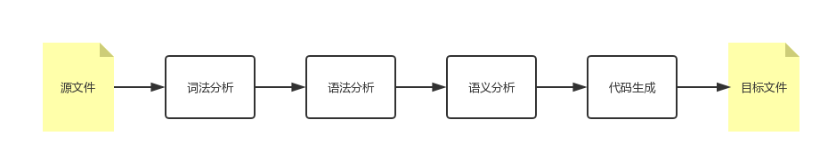</p>
<p>但是可以看得出，计算机语言作为程序员控制一台计算机工作的协议，具备了协议的三要素。</p>
<ul>
<li><strong>语法</strong>，就是这一段内容要符合一定的规则和格式。例如，括号要成对，结束要使用分号等。</li>
<li><strong>语义</strong>，就是这一段内容要代表某种意义。例如数字减去数字是有意义的，数字减去文本一般来说就没有意义。</li>
<li><strong>顺序</strong>，就是先干啥，后干啥。例如，可以先加上某个数值，然后再减去某个数值。</li>
</ul>
<p>会了计算机语言，你就能够教给一台计算机完成你的工作了。恭喜你，入门了！</p>
<p>但是，要想打造互联网世界的通天塔，只教给一台机器做什么是不够的，你需要学会教给一大片机器做什么。这就需要网络协议。<strong>只有通过网络协议，才能使一大片机器互相协作、共同完成一件事。</strong></p>
<p>这个时候，你可能会问，网络协议长啥样，这么神奇，能干成啥事？我先拿一个简单的例子，让你尝尝鲜，然后再讲一个大事。</p>
<p>当你想要买一个商品，常规的做法就是打开浏览器，输入购物网站的地址。浏览器就会给你显示一个缤纷多彩的页面。</p>
<p>那你有没有深入思考过，浏览器是如何做到这件事情的？它之所以能够显示缤纷多彩的页面，是因为它收到了一段来自HTTP协议的“东西”。我拿网易考拉来举例，格式就像下面这样：</p>
<pre><code>HTTP/1.1 200 OK
Date: Tue, 27 Mar 2018 16:50:26 GMT
Content-Type: text/html;charset=UTF-8
Content-Language: zh-CN

&lt;!DOCTYPE html&gt;
&lt;html&gt;
&lt;head&gt;
&lt;base href=&quot;https://pages.kaola.com/&quot; /&gt;
&lt;meta charset=&quot;utf-8&quot;/&gt; &lt;title&gt;网易考拉3周年主会场&lt;/title&gt;
</code></pre>
<p>这符合协议的三要素吗？我带你来看一下。</p>
<p>首先，符合语法，也就是说，只有按照上面那个格式来，浏览器才认。例如，上来是<strong>状态</strong>，然后是<strong>首部</strong>，然后是<strong>内容</strong>。</p>
<p>第二，符合语义，就是要按照约定的意思来。例如，状态200，表述的意思是网页成功返回。如果不成功，就是我们常见的“404”。</p>
<p>第三，符合顺序，你一点浏览器，就是发送出一个HTTP请求，然后才有上面那一串HTTP返回的东西。</p>
<p>浏览器显然按照协议商定好的做了，最后一个五彩缤纷的页面就出现在你面前了。</p>
<h2>我们常用的网络协议有哪些？</h2>
<p>接下来揭秘我要说的大事情，“双十一”。这和我们要讲的网络协议有什么关系呢？</p>
<p>在经济学领域，有个伦纳德·里德（Leonard E. Read）创作的《铅笔的故事》。这个故事通过一个铅笔的诞生过程，来讲述复杂的经济学理论。这里，我也用一个下单的过程，看看互联网世界的运行过程中，都使用了哪些网络协议。</p>
<p>你先在浏览器里面输入 <a href="https://www.kaola.com/">https://www.kaola.com</a> ，这是一个<strong>URL</strong>。浏览器只知道名字是“www.kaola.com”，但是不知道具体的地点，所以不知道应该如何访问。于是，它打开地址簿去查找。可以使用一般的地址簿协议<strong>DNS</strong>去查找，还可以使用另一种更加精准的地址簿查找协议<strong>HTTPDNS</strong>。</p>
<p>无论用哪一种方法查找，最终都会得到这个地址：106.114.138.24。这个是<strong>IP</strong>地址，是互联网世界的“门牌号”。</p>
<p>知道了目标地址，浏览器就开始打包它的请求。对于普通的浏览请求，往往会使用<strong>HTTP</strong>协议；但是对于购物的请求，往往需要进行加密传输，因而会使用<strong>HTTPS</strong>协议。无论是什么协议，里面都会写明“你要买什么和买多少”。</p>
<p>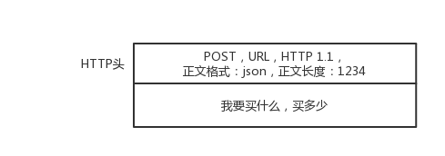</p>
<p>DNS、HTTP、HTTPS所在的层我们称为<strong>应用层</strong>。经过应用层封装后，浏览器会将应用层的包交给下一层去完成，通过socket编程来实现。下一层是<strong>传输层</strong>。传输层有两种协议，一种是无连接的协议<strong>UDP</strong>，一种是面向连接的协议<strong>TCP</strong>。对于支付来讲，往往使用TCP协议。所谓的面向连接就是，TCP会保证这个包能够到达目的地。如果不能到达，就会重新发送，直至到达。</p>
<p>TCP协议里面会有两个端口，一个是浏览器监听的端口，一个是电商的服务器监听的端口。操作系统往往通过端口来判断，它得到的包应该给哪个进程。</p>
<p>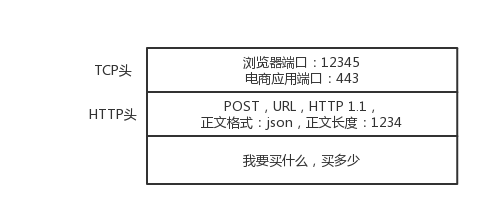</p>
<p>传输层封装完毕后，浏览器会将包交给操作系统的<strong>网络层</strong>。网络层的协议是IP协议。在IP协议里面会有源IP地址，即浏览器所在机器的IP地址和目标IP地址，也即电商网站所在服务器的IP地址。</p>
<p>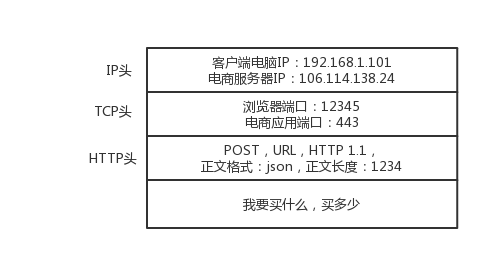</p>
<p>操作系统既然知道了目标IP地址，就开始想如何根据这个门牌号找到目标机器。操作系统往往会判断，这个目标IP地址是本地人，还是外地人。如果是本地人，从门牌号就能看出来，但是显然电商网站不在本地，而在遥远的地方。</p>
<p>操作系统知道要离开本地去远方。虽然不知道远方在何处，但是可以这样类比一下：如果去国外要去海关，去外地就要去<strong>网关</strong>。而操作系统启动的时候，就会被DHCP协议配置IP地址，以及默认的网关的IP地址192.168.1.1。</p>
<p>操作系统如何将IP地址发给网关呢？在本地通信基本靠吼，于是操作系统大吼一声，谁是192.168.1.1啊？网关会回答它，我就是，我的本地地址在村东头。这个本地地址就是<strong>MAC</strong>地址，而大吼的那一声是<strong>ARP</strong>协议。</p>
<p>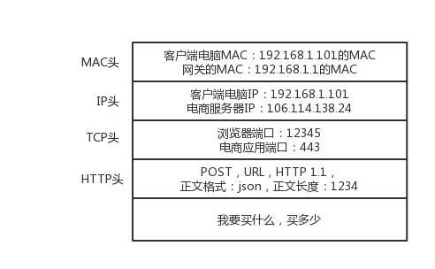</p>
<p>于是操作系统将IP包交给了下一层，也就是<strong>MAC层</strong>。网卡再将包发出去。由于这个包里面是有MAC地址的，因而它能够到达网关。</p>
<p>网关收到包之后，会根据自己的知识，判断下一步应该怎么走。网关往往是一个路由器，到某个IP地址应该怎么走，这个叫作路由表。</p>
<p>路由器有点像玄奘西行路过的一个个国家的一个个城关。每个城关都连着两个国家，每个国家相当于一个局域网，在每个国家内部，都可以使用本地的地址MAC进行通信。</p>
<p>一旦跨越城关，就需要拿出IP头来，里面写着贫僧来自东土大唐（就是源IP地址），欲往西天拜佛求经（指的是目标IP地址）。路过宝地，借宿一晚，明日启行，请问接下来该怎么走啊？</p>
<p>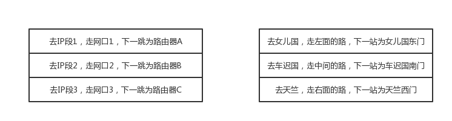</p>
<p>城关往往是知道这些“知识”的，因为城关和临近的城关也会经常沟通。到哪里应该怎么走，这种沟通的协议称为<strong>路由协议</strong>，常用的有<strong>OSPF</strong>和<strong>BGP</strong>。</p>
<p>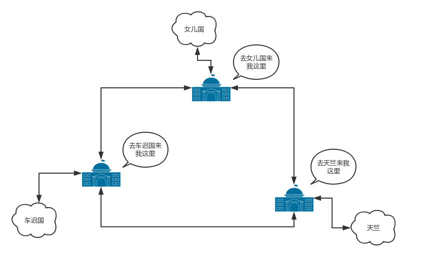</p>
<p>城关与城关之间是一个国家，当网络包知道了下一步去哪个城关，还是要使用国家内部的MAC地址，通过下一个城关的MAC地址，找到下一个城关，然后再问下一步的路怎么走，一直到走出最后一个城关。</p>
<p>最后一个城关知道这个网络包要去的地方。于是，对着这个国家吼一声，谁是目标IP啊？目标服务器就会回复一个MAC地址。网络包过关后，通过这个MAC地址就能找到目标服务器。</p>
<p>目标服务器发现MAC地址对上了，取下MAC头来，发送给操作系统的网络层。发现IP也对上了，就取下IP头。IP头里会写上一层封装的是TCP协议，然后将其交给传输层，即<strong>TCP层</strong>。</p>
<p>在这一层里，对于收到的每个包，都会有一个回复的包说明收到了。这个回复的包绝非这次下单请求的结果，例如购物是否成功，扣了多少钱等，而仅仅是TCP层的一个说明，即收到之后的回复。当然这个回复，会沿着刚才来的方向走回去，报个平安。</p>
<p>因为一旦出了国门，西行路上千难万险，如果在这个过程中，网络包走丢了，例如进了大沙漠，或者被强盗抢劫杀害怎么办呢？因而到了要报个平安。</p>
<p>如果过一段时间还是没到，发送端的TCP层会重新发送这个包，还是上面的过程，直到有一天收到平安到达的回复。<strong>这个重试绝非你的浏览器重新将下单这个动作重新请求一次</strong>。对于浏览器来讲，就发送了一次下单请求，TCP层不断自己闷头重试。除非TCP这一层出了问题，例如连接断了，才轮到浏览器的应用层重新发送下单请求。</p>
<p>当网络包平安到达TCP层之后，TCP头中有目标端口号，通过这个端口号，可以找到电商网站的进程正在监听这个端口号，假设一个Tomcat，将这个包发给电商网站。</p>
<p>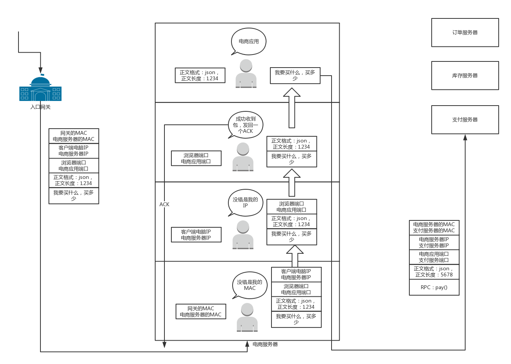</p>
<p>电商网站的进程得到HTTP请求的内容，知道了要买东西，买多少。往往一个电商网站最初接待请求的这个Tomcat只是个接待员，负责统筹处理这个请求，而不是所有的事情都自己做。例如，这个接待员要告诉专门管理订单的进程，登记要买某个商品，买多少，要告诉管理库存的进程，库存要减少多少，要告诉支付的进程，应该付多少钱，等等。</p>
<p>如何告诉相关的进程呢？往往通过RPC调用，即远程过程调用的方式来实现。远程过程调用就是当告诉管理订单进程的时候，接待员不用关心中间的网络互连问题，会由RPC框架统一处理。RPC框架有很多种，有基于HTTP协议放在HTTP的报文里面的，有直接封装在TCP报文里面的。</p>
<p>当接待员发现相应的部门都处理完毕，就回复一个HTTPS的包，告知下单成功。这个HTTPS的包，会像来的时候一样，经过千难万险到达你的个人电脑，最终进入浏览器，显示支付成功。</p>
<h2>小结</h2>
<p>看到了吧，一个简简单单的下单过程，中间牵扯到这么多的协议。而管理一大片机器，更是一件特别有技术含量的事情。除此之外，像最近比较火的云计算、容器、微服务等技术，也都需要借助各种协议，来达成大规模机器之间的合作。</p>
<p>我在这里列一下之后要讲的网络协议，之后我会按照从底层到上层的顺序来讲述。</p>
<h1>02 讲网络分层的真实含义是什么</h1>
<p>长时间从事计算机网络相关的工作，我发现，计算机网络有一个显著的特点，就是这是一个不仅需要背诵，而且特别需要将原理烂熟于胸的学科。很多问题看起来懂了，但是就怕往细里问，一问就发现你懂得没有那么透彻。</p>
<p>我们上一节列了之后要讲的网络协议。这些协议本来没什么稀奇，每一本教科书都会讲，并且都要求你背下来。因为考试会考，面试会问。可以这么说，毕业了去找工作还答不出这类题目的，那你的笔试基本上也就挂了。</p>
<p>当你听到什么二层设备、三层设备、四层LB和七层LB中层的时候，是否有点一头雾水，不知道这些所谓的层，对应的各种协议具体要做什么“工作”？</p>
<h2>这四个问题你真的懂了吗？</h2>
<p>因为教科书或者老师往往会打一个十分不恰当的比喻：为什么网络要分层呀？因为不同的层次之间有不同的沟通方式，这个叫作协议。例如，一家公司也是分“层次”的，分总经理、经理、组长、员工。总经理之间有他们的沟通方式，经理和经理之间也有沟通方式，同理组长和员工。有没有听过类似的比喻？</p>
<p>那么<strong>第一个问题</strong>来了。请问经理在握手的时候，员工在干什么？很多人听过TCP建立连接的<strong>三次握手协议</strong>，也会把它当知识点背诵。同理问你，TCP在进行三次握手的时候，IP层和MAC层对应都有什么操作呢？</p>
<p>除了上面这个不恰当的比喻，教科书还会列出每个层次所包含的协议，然后开始逐层地去讲这些协议。但是这些协议之间的关系呢？却很少有教科书会讲。</p>
<p>学习第三层的时候会提到，IP协议里面包含<strong>目标地址</strong>和<strong>源地址。第三层里往往还会学习路由协议</strong>。路由就像中转站，我们从原始地址A到目标地址D，中间经过两个中转站A-&gt;B-&gt;C-&gt;D，是通过路由转发的。</p>
<p>那么<strong>第二个问题</strong>来了。A知道自己的下一个中转站是B，那从A发出来的包，应该把B的IP地址放在哪里呢？B知道自己的下一个中转站是C，从B发出来的包，应该把C的IP地址放在哪里呢？如果放在IP协议中的目标地址，那包到了中转站，怎么知道最终的目的地址是D呢？</p>
<p>教科书不会通过场景化的例子，将网络包的生命周期讲出来，所以你就会很困惑，不知道这些协议实际的应用场景是什么。</p>
<p>我<strong>再问你一个问题</strong>。你一定经常听说二层设备、三层设备。二层设备处理的通常是MAC层的东西。那我发送一个HTTP的包，是在第七层工作的，那是不是不需要经过二层设备？或者即便经过了，二层设备也不处理呢？或者换一种问法，二层设备处理的包里，有没有HTTP层的内容呢？</p>
<p>最终，我想问你<strong>一个综合的问题</strong>。从你的电脑，通过SSH登录到公有云主机里面，都需要经历哪些过程？或者说你打开一个电商网站，都需要经历哪些过程？说得越详细越好。</p>
<p>实际情况可能是，很多人会答不上来。尽管对每一层都很熟悉，但是知识点却串不起来。</p>
<p>上面的这些问题，有的在这一节就会有一个解释，有的则会贯穿我们整个课程。好在后面一节中我会举一个贯穿的例子，将很多层的细节讲过后，你很容易就能把这些知识点串起来。</p>
<h2>网络为什么要分层？</h2>
<p>这里我们先探讨第一个问题，网络为什么要分层？因为，是个复杂的程序都要分层。</p>
<p>理解计算机网络中的概念，一个很好的角度是，想象网络包就是一段Buffer，或者一块内存，是有格式的。同时，想象自己是一个处理网络包的程序，而且这个程序可以跑在电脑上，可以跑在服务器上，可以跑在交换机上，也可以跑在路由器上。你想象自己有很多的网口，从某个口拿进一个网络包来，用自己的程序处理一下，再从另一个网口发送出去。</p>
<p>当然网络包的格式很复杂，这个程序也很复杂。**复杂的程序都要分层，这是程序设计的要求。**比如，复杂的电商还会分数据库层、缓存层、Compose层、Controller层和接入层，每一层专注做本层的事情。</p>
<h2>程序是如何工作的？</h2>
<p>我们可以简单地想象“你”这个程序的工作过程。</p>
<p></p>
<p>当一个网络包从一个网口经过的时候，你看到了，首先先看看要不要请进来，处理一把。有的网口配置了混杂模式，凡是经过的，全部拿进来。</p>
<p>拿进来以后，就要交给一段程序来处理。于是，你调用<strong>process_layer2(buffer)</strong>。当然，这是一个假的函数。但是你明白其中的意思，知道肯定是有这么个函数的。那这个函数是干什么的呢？从Buffer中，摘掉二层的头，看一看，应该根据头里面的内容做什么操作。</p>
<p>假设你发现这个包的MAC地址和你的相符，那说明就是发给你的，于是需要调用<strong>process_layer3(buffer)</strong>。这个时候，Buffer里面往往就没有二层的头了，因为已经在上一个函数的处理过程中拿掉了，或者将开始的偏移量移动了一下。在这个函数里面，摘掉三层的头，看看到底是发送给自己的，还是希望自己转发出去的。</p>
<p>如何判断呢？如果IP地址不是自己的，那就应该转发出去；如果IP地址是自己的，那就是发给自己的。根据IP头里面的标示，拿掉三层的头，进行下一层的处理，到底是调用process_tcp(buffer)呢，还是调用process_udp(buffer)呢？</p>
<p>假设这个地址是TCP的，则会调用<strong>process_tcp(buffer)</strong>。这时候，Buffer里面没有三层的头，就需要查看四层的头，看这是一个发起，还是一个应答，又或者是一个正常的数据包，然后分别由不同的逻辑进行处理。如果是发起或者应答，接下来可能要发送一个回复包；如果是一个正常的数据包，就需要交给上层了。交给谁呢？是不是有process_http(buffer)函数呢？</p>
<p>没有的，如果你是一个网络包处理程序，你不需要有process_http(buffer)，而是应该交给应用去处理。交给哪个应用呢？在四层的头里面有端口号，不同的应用监听不同的端口号。如果发现浏览器应用在监听这个端口，那你发给浏览器就行了。至于浏览器怎么处理，和你没有关系。</p>
<p>浏览器自然是解析HTML，显示出页面来。电脑的主人看到页面很开心，就点了鼠标。点击鼠标的动作被浏览器捕获。浏览器知道，又要发起另一个HTTP请求了，于是使用端口号，将请求发给了你。</p>
<p>你应该调用<strong>send_tcp(buffer)</strong>。不用说，Buffer里面就是HTTP请求的内容。这个函数里面加一个TCP的头，记录下源端口号。浏览器会给你目的端口号，一般为80端口。</p>
<p>然后调用<strong>send_layer3(buffer)</strong>。Buffer里面已经有了HTTP的头和内容，以及TCP的头。在这个函数里面加一个IP的头，记录下源IP的地址和目标IP的地址。</p>
<p>然后调用<strong>send_layer2(buffer)</strong>。Buffer里面已经有了HTTP的头和内容、TCP的头，以及IP的头。这个函数里面要加一下MAC的头，记录下源MAC地址，得到的就是本机器的MAC地址和目标的MAC地址。不过，这个还要看当前知道不知道，知道就直接加上；不知道的话，就要通过一定的协议处理过程，找到MAC地址。反正要填一个，不能空着。</p>
<p>万事俱备，只要Buffer里面的内容完整，就可以从网口发出去了，你作为一个程序的任务就算告一段落了。</p>
<h2>揭秘层与层之间的关系</h2>
<p>知道了这个过程之后，我们再来看一下原来困惑的问题。</p>
<p>首先是分层的比喻。**所有不能表示出层层封装含义的比喻，都是不恰当的。**总经理握手，不需要员工在吧，总经理之间谈什么，不需要员工参与吧，但是网络世界不是这样的。正确的应该是，总经理之间沟通的时候，经理将总经理放在自己兜里，然后组长把经理放自己兜里，员工把组长放自己兜里，像套娃娃一样。那员工直接沟通，不带上总经理，就不恰当了。</p>
<p>现实生活中，往往是员工说一句，组长补充两句，然后经理补充两句，最后总经理再补充两句。但是在网络世界，应该是总经理说话，经理补充两句，组长补充两句，员工再补充两句。</p>
<p>那TCP在三次握手的时候，IP层和MAC层在做什么呢？当然是TCP发送每一个消息，都会带着IP层和MAC层了。因为，TCP每发送一个消息，IP层和MAC层的所有机制都要运行一遍。而你只看到TCP三次握手了，其实，IP层和MAC层为此也忙活好久了。</p>
<p>这里要记住一点：<strong>只要是在网络上跑的包，都是完整的。可以有下层没上层，绝对不可能有上层没下层。</strong></p>
<p>所以，<strong>对TCP协议来说，三次握手也好，重试也好，只要想发出去包，就要有IP层和MAC层，不然是发不出去的。</strong></p>
<p>经常有人会问这样一个问题，我都知道那台机器的IP地址了，直接发给他消息呗，要MAC地址干啥？这里的关键就是，没有MAC地址消息是发不出去的。</p>
<p>所以如果一个HTTP协议的包跑在网络上，它一定是完整的。无论这个包经过哪些设备，它都是完整的。</p>
<p>所谓的二层设备、三层设备，都是这些设备上跑的程序不同而已。一个HTTP协议的包经过一个二层设备，二层设备收进去的是整个网络包。这里面HTTP、TCP、 IP、 MAC都有。什么叫二层设备呀，就是只把MAC头摘下来，看看到底是丢弃、转发，还是自己留着。那什么叫三层设备呢？就是把MAC头摘下来之后，再把IP头摘下来，看看到底是丢弃、转发，还是自己留着。</p>
<h2>小结</h2>
<p>总结一下今天的内容，理解网络协议的工作模式，有两个小窍门：</p>
<ul>
<li>始终想象自己是一个处理网络包的程序：如何拿到网络包，如何根据规则进行处理，如何发出去；</li>
<li>始终牢记一个原则：只要是在网络上跑的包，都是完整的。可以有下层没上层，绝对不可能有上层没下层。</li>
</ul>
<h1>03 讲ifconfig：最熟悉又陌生的命令行</h1>
<p>上一节结尾给你留的一个思考题是，你知道怎么查看IP地址吗？</p>
<p>当面试听到这个问题的时候，面试者常常会觉得走错了房间。我面试的是技术岗位啊，怎么问这么简单的问题？</p>
<p>的确，即便没有专业学过计算机的人，只要倒腾过电脑，重装过系统，大多也会知道这个问题的答案：在Windows上是ipconfig，在Linux上是ifconfig。</p>
<p>那你知道在Linux上还有什么其他命令可以查看IP地址吗？答案是ip addr。如果回答不上来这个问题，那你可能没怎么用过Linux。</p>
<p>那你知道ifconfig和ip addr的区别吗？这是一个有关net-tools和iproute2的“历史”故事，你刚来到第三节，暂时不用了解这么细，但这也是一个常考的知识点。</p>
<p>想象一下，你登录进入一个被裁剪过的非常小的Linux系统中，发现既没有ifconfig命令，也没有ip addr命令，你是不是感觉这个系统压根儿没法用？这个时候，你可以自行安装net-tools和iproute2这两个工具。当然，大多数时候这两个命令是系统自带的。</p>
<p>安装好后，我们来运行一下ip addr。不出意外，应该会输出下面的内容。</p>
<pre><code><a href="/cdn-cgi/l/email-protection" class="__cf_email__" data-cfemail="88fae7e7fcc8fcedfbfc">[email&#160;protected]</a>:~# ip addr
1: lo: &lt;LOOPBACK,UP,LOWER_UP&gt; mtu 65536 qdisc noqueue state UNKNOWN group default 
    link/loopback 00:00:00:00:00:00 brd 00:00:00:00:00:00
    inet 127.0.0.1/8 scope host lo
       valid_lft forever preferred_lft forever
    inet6 ::1/128 scope host 
       valid_lft forever preferred_lft forever
2: eth0: &lt;BROADCAST,MULTICAST,UP,LOWER_UP&gt; mtu 1500 qdisc pfifo_fast state UP group default qlen 1000
    link/ether fa:16:3e:c7:79:75 brd ff:ff:ff:ff:ff:ff
    inet 10.100.122.2/24 brd 10.100.122.255 scope global eth0
       valid_lft forever preferred_lft forever
    inet6 fe80::f816:3eff:fec7:7975/64 scope link 
       valid_lft forever preferred_lft forever
</code></pre>
<p>这个命令显示了这台机器上所有的网卡。大部分的网卡都会有一个IP地址，当然，这不是必须的。在后面的分享中，我们会遇到没有IP地址的情况。</p>
<p>IP地址是一个网卡在网络世界的通讯地址，相当于我们现实世界的门牌号码。既然是门牌号码，不能大家都一样，不然就会起冲突。比方说，假如大家都叫六单元1001号，那快递就找不到地方了。所以，有时候咱们的电脑弹出网络地址冲突，出现上不去网的情况，多半是IP地址冲突了。</p>
<p>如上输出的结果，10.100.122.2就是一个IP地址。这个地址被点分隔为四个部分，每个部分8个bit，所以IP地址总共是32位。这样产生的IP地址的数量很快就不够用了。因为当时设计IP地址的时候，哪知道今天会有这么多的计算机啊！因为不够用，于是就有了IPv6，也就是上面输出结果里面inet6 fe80::f816:3eff:fec7:7975/64。这个有128位，现在看来是够了，但是未来的事情谁知道呢？</p>
<p>本来32位的IP地址就不够，还被分成了5类。现在想想，当时分配地址的时候，真是太奢侈了。</p>
<p>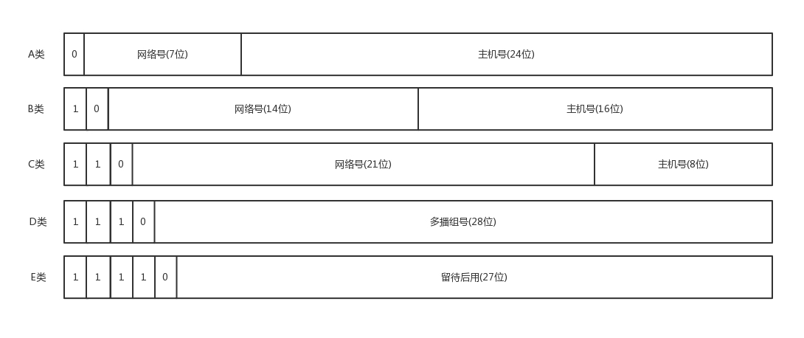</p>
<p>在网络地址中，至少在当时设计的时候，对于A、B、 C类主要分两部分，前面一部分是网络号，后面一部分是主机号。这很好理解，大家都是六单元1001号，我是小区A的六单元1001号，而你是小区B的六单元1001号。</p>
<p>下面这个表格，详细地展示了A、B、C三类地址所能包含的主机的数量。在后文中，我也会多次借助这个表格来讲解。</p>
<p>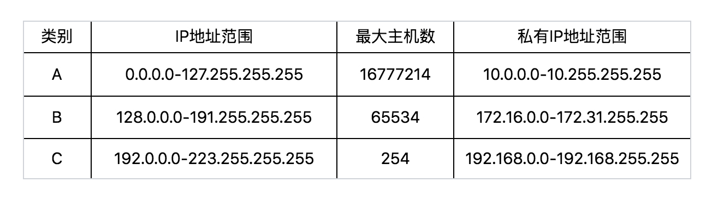</p>
<p>这里面有个尴尬的事情，就是C类地址能包含的最大主机数量实在太少了，只有254个。当时设计的时候恐怕没想到，现在估计一个网吧都不够用吧。而B类地址能包含的最大主机数量又太多了。6万多台机器放在一个网络下面，一般的企业基本达不到这个规模，闲着的地址就是浪费。</p>
<h2>无类型域间选路（CIDR）</h2>
<p>于是有了一个折中的方式叫作<strong>无类型域间选路</strong>，简称<strong>CIDR</strong>。这种方式打破了原来设计的几类地址的做法，将32位的IP地址一分为二，前面是<strong>网络号</strong>，后面是<strong>主机号</strong>。从哪里分呢？你如果注意观察的话可以看到，10.100.122.2/24，这个IP地址中有一个斜杠，斜杠后面有个数字24。这种地址表示形式，就是CIDR。后面24的意思是，32位中，前24位是网络号，后8位是主机号。</p>
<p>伴随着CIDR存在的，一个是<strong>广播地址</strong>，10.100.122.255。如果发送这个地址，所有10.100.122网络里面的机器都可以收到。另一个是<strong>子网掩码</strong>，255.255.255.0。</p>
<p>将子网掩码和IP地址进行AND计算。前面三个255，转成二进制都是1。1和任何数值取AND，都是原来数值，因而前三个数不变，为10.100.122。后面一个0，转换成二进制是0，0和任何数值取AND，都是0，因而最后一个数变为0，合起来就是10.100.122.0。这就是<strong>网络号</strong>。<strong>将子网掩码和IP地址按位计算AND，就可得到网络号。</strong></p>
<h2>公有IP地址和私有IP地址</h2>
<p>在日常的工作中，几乎不用划分A类、B类或者C类，所以时间长了，很多人就忘记了这个分类，而只记得CIDR。但是有一点还是要注意的，就是公有IP地址和私有IP地址。</p>
<p>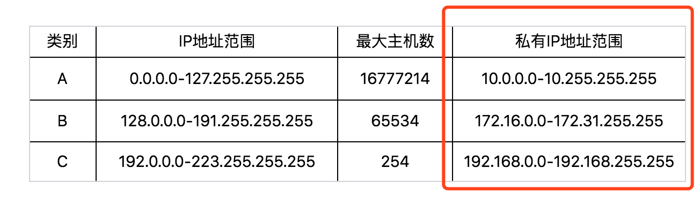</p>
<p>我们继续看上面的表格。表格最右列是私有IP地址段。平时我们看到的数据中心里，办公室、家里或学校的IP地址，一般都是私有IP地址段。因为这些地址允许组织内部的IT人员自己管理、自己分配，而且可以重复。因此，你学校的某个私有IP地址段和我学校的可以是一样的。</p>
<p>这就像每个小区有自己的楼编号和门牌号，你们小区可以叫6栋，我们小区也叫6栋，没有任何问题。但是一旦出了小区，就需要使用公有IP地址。就像人民路888号，是国家统一分配的，不能两个小区都叫人民路888号。</p>
<p>公有IP地址有个组织统一分配，你需要去买。如果你搭建一个网站，给你学校的人使用，让你们学校的IT人员给你一个IP地址就行。但是假如你要做一个类似网易163这样的网站，就需要有公有IP地址，这样全世界的人才能访问。</p>
<p>表格中的192.168.0.x是最常用的私有IP地址。你家里有Wi-Fi，对应就会有一个IP地址。一般你家里地上网设备不会超过256个，所以/24基本就够了。有时候我们也能见到/16的CIDR，这两种是最常见的，也是最容易理解的。</p>
<p>不需要将十进制转换为二进制32位，就能明显看出192.168.0是网络号，后面是主机号。而整个网络里面的第一个地址192.168.0.1，往往就是你这个私有网络的出口地址。例如，你家里的电脑连接Wi-Fi，Wi-Fi路由器的地址就是192.168.0.1，而192.168.0.255就是广播地址。一旦发送这个地址，整个192.168.0网络里面的所有机器都能收到。</p>
<p>但是也不总都是这样的情况。因此，其他情况往往就会很难理解，还容易出错。</p>
<h2>举例：一个容易“犯错”的CIDR</h2>
<p>我们来看16.158.165.91/22这个CIDR。求一下这个网络的第一个地址、子网掩码和广播地址。</p>
<p>你要是上来就写16.158.165.1，那就大错特错了。</p>
<p>/22不是8的整数倍，不好办，只能先变成二进制来看。16.158的部分不会动，它占了前16位。中间的165，变为二进制为‭10100101‬。除了前面的16位，还剩6位。所以，这8位中前6位是网络号，16.158.&lt;101001&gt;，而&lt;01&gt;.91是机器号。</p>
<p>第一个地址是16.158.&lt;101001&gt;&lt;00&gt;.1，即16.158.164.1。子网掩码是255.255.&lt;111111&gt;&lt;00&gt;.0，即255.255.252.0。广播地址为16.158.&lt;101001&gt;&lt;11&gt;.255，即16.158.167.255。</p>
<p>这五类地址中，还有一类D类是<strong>组播地址</strong>。使用这一类地址，属于某个组的机器都能收到。这有点类似在公司里面大家都加入了一个邮件组。发送邮件，加入这个组的都能收到。组播地址在后面讲述VXLAN协议的时候会提到。</p>
<p>讲了这么多，才讲了上面的输出结果中很小的一部分，是不是觉得原来并没有真的理解ip addr呢？我们接着来分析。</p>
<p>在IP地址的后面有个scope，对于eth0这张网卡来讲，是global，说明这张网卡是可以对外的，可以接收来自各个地方的包。对于lo来讲，是host，说明这张网卡仅仅可以供本机相互通信。</p>
<p>lo全称是<strong>loopback</strong>，又称<strong>环回接口</strong>，往往会被分配到127.0.0.1这个地址。这个地址用于本机通信，经过内核处理后直接返回，不会在任何网络中出现。</p>
<h2>MAC地址</h2>
<p>在IP地址的上一行是link/ether fa:16:3e:c7:79:75 brd ff:ff:ff:ff:ff:ff，这个被称为<strong>MAC地址</strong>，是一个网卡的物理地址，用十六进制，6个byte表示。</p>
<p>MAC地址是一个很容易让人“误解”的地址。因为MAC地址号称全局唯一，不会有两个网卡有相同的MAC地址，而且网卡自生产出来，就带着这个地址。很多人看到这里就会想，既然这样，整个互联网的通信，全部用MAC地址好了，只要知道了对方的MAC地址，就可以把信息传过去。</p>
<p>这样当然是不行的。 <strong>一个网络包要从一个地方传到另一个地方，除了要有确定的地址，还需要有定位功能。</strong> 而有门牌号码属性的IP地址，才是有远程定位功能的。</p>
<p>例如，你去杭州市网商路599号B楼6层找刘超，你在路上问路，可能被问的人不知道B楼是哪个，但是可以给你指网商路怎么去。但是如果你问一个人，你知道这个身份证号的人在哪里吗？可想而知，没有人知道。</p>
<p>MAC地址更像是身份证，是一个唯一的标识。它的唯一性设计是为了组网的时候，不同的网卡放在一个网络里面的时候，可以不用担心冲突。从硬件角度，保证不同的网卡有不同的标识。</p>
<p>MAC地址是有一定定位功能的，只不过范围非常有限。你可以根据IP地址，找到杭州市网商路599号B楼6层，但是依然找不到我，你就可以靠吼了，大声喊身份证XXXX的是哪位？我听到了，我就会站起来说，是我啊。但是如果你在上海，到处喊身份证XXXX的是哪位，我不在现场，当然不会回答，因为我在杭州不在上海。</p>
<p>所以，MAC地址的通信范围比较小，局限在一个子网里面。例如，从192.168.0.2/24访问192.168.0.3/24是可以用MAC地址的。一旦跨子网，即从192.168.0.2/24到192.168.1.2/24，MAC地址就不行了，需要IP地址起作用了。</p>
<h2>网络设备的状态标识</h2>
<p>解析完了MAC地址，我们再来看 &lt;BROADCAST,MULTICAST,UP,LOWER_UP&gt;是干什么的？这个叫作<strong>net_device flags</strong>，<strong>网络设备的状态标识</strong>。</p>
<p>UP表示网卡处于启动的状态；BROADCAST表示这个网卡有广播地址，可以发送广播包；MULTICAST表示网卡可以发送多播包；LOWER_UP表示L1是启动的，也即网线插着呢。MTU1500是指什么意思呢？是哪一层的概念呢？最大传输单元MTU为1500，这是以太网的默认值。</p>
<p>上一节，我们讲过网络包是层层封装的。MTU是二层MAC层的概念。MAC层有MAC的头，以太网规定连MAC头带正文合起来，不允许超过1500个字节。正文里面有IP的头、TCP的头、HTTP的头。如果放不下，就需要分片来传输。</p>
<p>qdisc pfifo_fast是什么意思呢？qdisc全称是<strong>queueing discipline</strong>，中文叫<strong>排队规则</strong>。内核如果需要通过某个网络接口发送数据包，它都需要按照为这个接口配置的qdisc（排队规则）把数据包加入队列。</p>
<p>最简单的qdisc是pfifo，它不对进入的数据包做任何的处理，数据包采用先入先出的方式通过队列。pfifo_fast稍微复杂一些，它的队列包括三个波段（band）。在每个波段里面，使用先进先出规则。</p>
<p>三个波段（band）的优先级也不相同。band 0的优先级最高，band 2的最低。如果band 0里面有数据包，系统就不会处理band 1里面的数据包，band 1和band 2之间也是一样。</p>
<p>数据包是按照服务类型（<strong>Type of Service，TOS</strong>）被分配到三个波段（band）里面的。TOS是IP头里面的一个字段，代表了当前的包是高优先级的，还是低优先级的。</p>
<p>队列是个好东西，后面我们讲云计算中的网络的时候，会有很多用户共享一个网络出口的情况，这个时候如何排队，每个队列有多粗，队列处理速度应该怎么提升，我都会详细为你讲解。</p>
<h2>小结</h2>
<p>怎么样，看起来很简单的一个命令，里面学问很大吧？通过这一节，希望你能记住以下的知识点，后面都能用得上：</p>
<ul>
<li>IP是地址，有定位功能；MAC是身份证，无定位功能；</li>
<li>CIDR可以用来判断是不是本地人；</li>
<li>IP分公有的IP和私有的IP。后面的章节中我会谈到“出国门”，就与这个有关。</li>
</ul>
<p>最后，给你留两个思考题。</p>
<ol>
<li>你知道net-tools和iproute2的“历史”故事吗？</li>
<li>这一节讲的是如何查看IP地址，那你知道IP地址是怎么来的吗？</li>
</ol>
<h1>04 讲DHCP与PXE：IP是怎么来的，又是怎么没的？</h1>
<p>上一节，我们讲了IP的一些基本概念。如果需要和其他机器通讯，我们就需要一个通讯地址，我们需要给网卡配置这么一个地址。</p>
<h2>如何配置IP地址？</h2>
<p>那如何配置呢？如果有相关的知识和积累，你可以用命令行自己配置一个地址。可以使用ifconfig，也可以使用ip addr。设置好了以后，用这两个命令，将网卡up一下，就可以开始工作了。</p>
<p><strong>使用net-tools：</strong></p>
<pre><code>$ sudo ifconfig eth1 10.0.0.1/24
$ sudo ifconfig eth1 up
</code></pre>
<p><strong>使用iproute2：</strong></p>
<pre><code>$ sudo ip addr add 10.0.0.1/24 dev eth1
$ sudo ip link set up eth1
</code></pre>
<p>你可能会问了，自己配置这个自由度太大了吧，我是不是配置什么都可以？如果配置一个和谁都不搭边的地址呢？例如，旁边的机器都是192.168.1.x，我非得配置一个16.158.23.6，会出现什么现象呢？</p>
<p>不会出现任何现象，就是包发不出去呗。为什么发不出去呢？我来举例说明。</p>
<p>192.168.1.6就在你这台机器的旁边，甚至是在同一个交换机上，而你把机器的地址设为了16.158.23.6。在这台机器上，你企图去ping192.168.1.6，你觉得只要将包发出去，同一个交换机的另一台机器马上就能收到，对不对？</p>
<p>可是Linux系统不是这样的，它没你想得那么智能。你用肉眼看到那台机器就在旁边，它则需要根据自己的逻辑进行处理。</p>
<p>还记得我们在第二节说过的原则吗？<strong>只要是在网络上跑的包，都是完整的，可以有下层没上层，绝对不可能有上层没下层。</strong></p>
<p>所以，你看着它有自己的源IP地址16.158.23.6，也有目标IP地址192.168.1.6，但是包发不出去，这是因为MAC层还没填。</p>
<p>自己的MAC地址自己知道，这个容易。但是目标MAC填什么呢？是不是填192.168.1.6这台机器的MAC地址呢？</p>
<p>当然不是。Linux首先会判断，要去的这个地址和我是一个网段的吗，或者和我的一个网卡是同一网段的吗？只有是一个网段的，它才会发送ARP请求，获取MAC地址。如果发现不是呢？</p>
<p><strong>Linux默认的逻辑是，如果这是一个跨网段的调用，它便不会直接将包发送到网络上，而是企图将包发送到网关。</strong></p>
<p>如果你配置了网关的话，Linux会获取网关的MAC地址，然后将包发出去。对于192.168.1.6这台机器来讲，虽然路过它家门的这个包，目标IP是它，但是无奈MAC地址不是它的，所以它的网卡是不会把包收进去的。</p>
<p>如果没有配置网关呢？那包压根就发不出去。</p>
<p>如果将网关配置为192.168.1.6呢？不可能，Linux不会让你配置成功的，因为网关要和当前的网络至少一个网卡是同一个网段的，怎么可能16.158.23.6的网关是192.168.1.6呢？</p>
<p>所以，当你需要手动配置一台机器的网络IP时，一定要好好问问你的网络管理员。如果在机房里面，要去网络管理员那里申请，让他给你分配一段正确的IP地址。当然，真正配置的时候，一定不是直接用命令配置的，而是放在一个配置文件里面。<strong>不同系统的配置文件格式不同，但是无非就是CIDR、子网掩码、广播地址和网关地址</strong>。</p>
<h2>动态主机配置协议（DHCP）</h2>
<p>原来配置IP有这么多门道儿啊。你可能会问了，配置了IP之后一般不能变的，配置一个服务端的机器还可以，但是如果是客户端的机器呢？我抱着一台笔记本电脑在公司里走来走去，或者白天来晚上走，每次使用都要配置IP地址，那可怎么办？还有人事、行政等非技术人员，如果公司所有的电脑都需要IT人员配置，肯定忙不过来啊。</p>
<p>因此，我们需要有一个自动配置的协议，也就是称<strong>动态主机配置协议（Dynamic Host Configuration Protocol）</strong>，简称<strong>DHCP</strong>。</p>
<p>有了这个协议，网络管理员就轻松多了。他只需要配置一段共享的IP地址。每一台新接入的机器都通过DHCP协议，来这个共享的IP地址里申请，然后自动配置好就可以了。等人走了，或者用完了，还回去，这样其他的机器也能用。</p>
<p>所以说，<strong>如果是数据中心里面的服务器，IP一旦配置好，基本不会变，这就相当于买房自己装修。DHCP的方式就相当于租房。你不用装修，都是帮你配置好的。你暂时用一下，用完退租就可以了。</strong></p>
<h2>解析DHCP的工作方式</h2>
<p>当一台机器新加入一个网络的时候，肯定一脸懵，啥情况都不知道，只知道自己的MAC地址。怎么办？先吼一句，我来啦，有人吗？这时候的沟通基本靠“吼”。这一步，我们称为<strong>DHCP Discover。</strong></p>
<p>新来的机器使用IP地址0.0.0.0发送了一个广播包，目的IP地址为255.255.255.255。广播包封装了UDP，UDP封装了BOOTP。其实DHCP是BOOTP的增强版，但是如果你去抓包的话，很可能看到的名称还是BOOTP协议。</p>
<p>在这个广播包里面，新人大声喊：我是新来的（Boot request），我的MAC地址是这个，我还没有IP，谁能给租给我个IP地址！</p>
<p>格式就像这样：</p>
<p>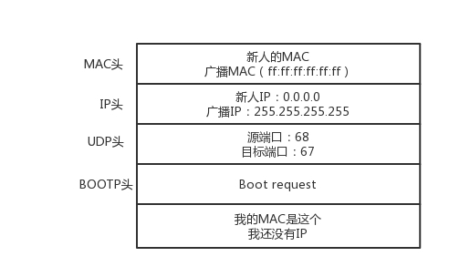</p>
<p>如果一个网络管理员在网络里面配置了<strong>DHCP Server</strong>的话，他就相当于这些IP的管理员。他立刻能知道来了一个“新人”。这个时候，我们可以体会MAC地址唯一的重要性了。当一台机器带着自己的MAC地址加入一个网络的时候，MAC是它唯一的身份，如果连这个都重复了，就没办法配置了。</p>
<p>只有MAC唯一，IP管理员才能知道这是一个新人，需要租给它一个IP地址，这个过程我们称为<strong>DHCP Offer</strong>。同时，DHCP Server为此客户保留为它提供的IP地址，从而不会为其他DHCP客户分配此IP地址。</p>
<p>DHCP Offer的格式就像这样，里面有给新人分配的地址。</p>
<p>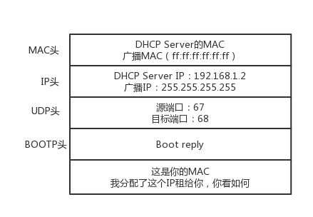</p>
<p>DHCP Server仍然使用广播地址作为目的地址，因为，此时请求分配IP的新人还没有自己的IP。DHCP Server回复说，我分配了一个可用的IP给你，你看如何？除此之外，服务器还发送了子网掩码、网关和IP地址租用期等信息。</p>
<p>新来的机器很开心，它的“吼”得到了回复，并且有人愿意租给它一个IP地址了，这意味着它可以在网络上立足了。当然更令人开心的是，如果有多个DHCP Server，这台新机器会收到多个IP地址，简直受宠若惊。</p>
<p>它会选择其中一个DHCP Offer，一般是最先到达的那个，并且会向网络发送一个DHCP Request广播数据包，包中包含客户端的MAC地址、接受的租约中的IP地址、提供此租约的DHCP服务器地址等，并告诉所有DHCP Server它将接受哪一台服务器提供的IP地址，告诉其他DHCP服务器，谢谢你们的接纳，并请求撤销它们提供的IP地址，以便提供给下一个IP租用请求者。</p>
<p>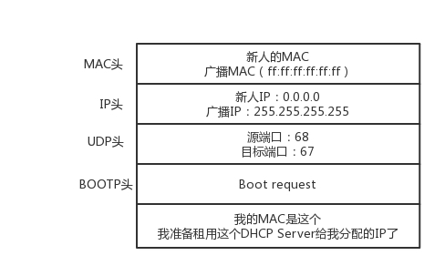</p>
<p>此时，由于还没有得到DHCP Server的最后确认，客户端仍然使用0.0.0.0为源IP地址、255.255.255.255为目标地址进行广播。在BOOTP里面，接受某个DHCP Server的分配的IP。</p>
<p>当DHCP Server接收到客户机的DHCP request之后，会广播返回给客户机一个DHCP ACK消息包，表明已经接受客户机的选择，并将这一IP地址的合法租用信息和其他的配置信息都放入该广播包，发给客户机，欢迎它加入网络大家庭。</p>
<p>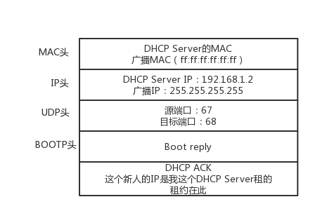</p>
<p>最终租约达成的时候，还是需要广播一下，让大家都知道。</p>
<h2>IP地址的收回和续租</h2>
<p>既然是租房子，就是有租期的。租期到了，管理员就要将IP收回。</p>
<p>如果不用的话，收回就收回了。就像你租房子一样，如果还要续租的话，不能到了时间再续租，而是要提前一段时间给房东说。DHCP也是这样。</p>
<p>客户机会在租期过去50%的时候，直接向为其提供IP地址的DHCP Server发送DHCP request消息包。客户机接收到该服务器回应的DHCP ACK消息包，会根据包中所提供的新的租期以及其他已经更新的TCP/IP参数，更新自己的配置。这样，IP租用更新就完成了。</p>
<p>好了，一切看起来完美。DHCP协议大部分人都知道，但是其实里面隐藏着一个细节，很多人可能不会去注意。接下来，我就讲一个有意思的事情：网络管理员不仅能自动分配IP地址，还能帮你自动安装操作系统！</p>
<h2>预启动执行环境（PXE）</h2>
<p>普通的笔记本电脑，一般不会有这种需求。因为你拿到电脑时，就已经有操作系统了，即便你自己重装操作系统，也不是很麻烦的事情。但是，在数据中心里就不一样了。数据中心里面的管理员可能一下子就拿到几百台空的机器，一个个安装操作系统，会累死的。</p>
<p>所以管理员希望的不仅仅是自动分配IP地址，还要自动安装系统。装好系统之后自动分配IP地址，直接启动就能用了，这样当然最好了！</p>
<p>这事儿其实仔细一想，还是挺有难度的。安装操作系统，应该有个光盘吧。数据中心里不能用光盘吧，想了一个办法就是，可以将光盘里面要安装的操作系统放在一个服务器上，让客户端去下载。但是客户端放在哪里呢？它怎么知道去哪个服务器上下载呢？客户端总得安装在一个操作系统上呀，可是这个客户端本来就是用来安装操作系统的呀？</p>
<p>其实，这个过程和操作系统启动的过程有点儿像。首先，启动BIOS。这是一个特别小的小系统，只能干特别小的一件事情。其实就是读取硬盘的MBR启动扇区，将GRUB启动起来；然后将权力交给GRUB，GRUB加载内核、加载作为根文件系统的initramfs文件；然后将权力交给内核；最后内核启动，初始化整个操作系统。</p>
<p>那我们安装操作系统的过程，只能插在BIOS启动之后了。因为没安装系统之前，连启动扇区都没有。因而这个过程叫做<strong>预启动执行环境（Pre-boot Execution Environment）</strong>，简称<strong>PXE。</strong></p>
<p>PXE协议分为客户端和服务器端，由于还没有操作系统，只能先把客户端放在BIOS里面。当计算机启动时，BIOS把PXE客户端调入内存里面，就可以连接到服务端做一些操作了。</p>
<p>首先，PXE客户端自己也需要有个IP地址。因为PXE的客户端启动起来，就可以发送一个DHCP的请求，让DHCP Server给它分配一个地址。PXE客户端有了自己的地址，那它怎么知道PXE服务器在哪里呢？对于其他的协议，都好办，要么人告诉他。例如，告诉浏览器要访问的IP地址，或者在配置中告诉它；例如，微服务之间的相互调用。</p>
<p>但是PXE客户端启动的时候，啥都没有。好在DHCP Server除了分配IP地址以外，还可以做一些其他的事情。这里有一个DHCP Server的一个样例配置：</p>
<pre><code>ddns-update-style interim;
ignore client-updates;
allow booting;
allow bootp;
subnet 192.168.1.0 netmask 255.255.255.0
{
option routers 192.168.1.1;
option subnet-mask 255.255.255.0;
option time-offset -18000;
default-lease-time 21600;
max-lease-time 43200;
range dynamic-bootp 192.168.1.240 192.168.1.250;
filename &quot;pxelinux.0&quot;;
next-server 192.168.1.180;
}
</code></pre>
<p>按照上面的原理，默认的DHCP Server是需要配置的，无非是我们配置IP的时候所需要的IP地址段、子网掩码、网关地址、租期等。如果想使用PXE，则需要配置next-server，指向PXE服务器的地址，另外要配置初始启动文件filename。</p>
<p>这样PXE客户端启动之后，发送DHCP请求之后，除了能得到一个IP地址，还可以知道PXE服务器在哪里，也可以知道如何从PXE服务器上下载某个文件，去初始化操作系统。</p>
<h2>解析PXE的工作过程</h2>
<p>接下来我们来详细看一下PXE的工作过程。</p>
<p>首先，启动PXE客户端。第一步是通过DHCP协议告诉DHCP Server，我刚来，一穷二白，啥都没有。DHCP Server便租给它一个IP地址，同时也给它PXE服务器的地址、启动文件pxelinux.0。</p>
<p>其次，PXE客户端知道要去PXE服务器下载这个文件后，就可以初始化机器。于是便开始下载，下载的时候使用的是TFTP协议。所以PXE服务器上，往往还需要有一个TFTP服务器。PXE客户端向TFTP服务器请求下载这个文件，TFTP服务器说好啊，于是就将这个文件传给它。</p>
<p>然后，PXE客户端收到这个文件后，就开始执行这个文件。这个文件会指示PXE客户端，向TFTP服务器请求计算机的配置信息pxelinux.cfg。TFTP服务器会给PXE客户端一个配置文件，里面会说内核在哪里、initramfs在哪里。PXE客户端会请求这些文件。</p>
<p>最后，启动Linux内核。一旦启动了操作系统，以后就啥都好办了。</p>
<p>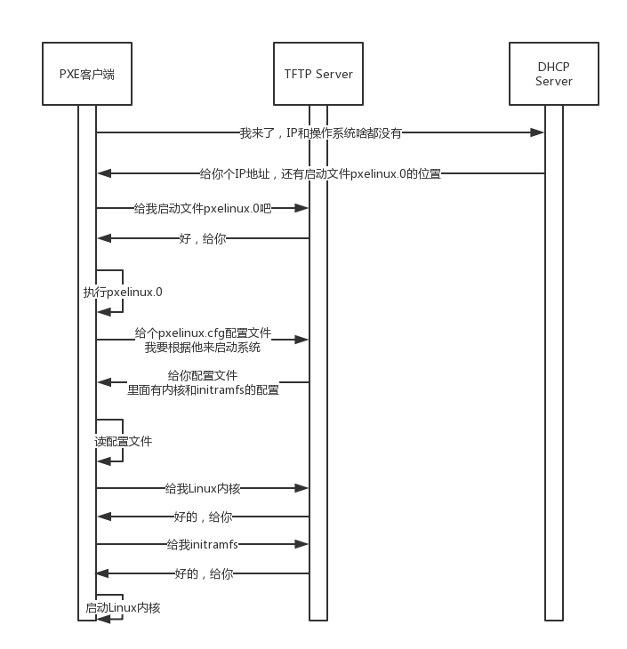</p>
<h2>小结</h2>
<p>好了，这一节就到这里了。我来总结一下今天的内容：</p>
<ul>
<li>DHCP协议主要是用来给客户租用IP地址，和房产中介很像，要商谈、签约、续租，广播还不能“抢单”；</li>
<li>DHCP协议能给客户推荐“装修队”PXE，能够安装操作系统，这个在云计算领域大有用处。</li>
</ul>
<p>最后，学完了这一节，给你留两个思考题吧。</p>
<ol>
<li>PXE协议可以用来安装操作系统，但是如果每次重启都安装操作系统，就会很麻烦。你知道如何使得第一次安装操作系统，后面就正常启动吗？</li>
<li>现在上网很简单了，买个家用路由器，连上WIFI，给DHCP分配一个IP地址，就可以上网了。那你是否用过更原始的方法自己组过简单的网呢？说来听听。</li>
</ol>
<h1>05 讲从物理层到MAC层：如何在宿舍里自己组网玩联机游戏？</h1>
<p>上一节，我们见证了IP地址的诞生，或者说是整个操作系统的诞生。一旦机器有了IP，就可以在网络的环境里和其他的机器展开沟通了。</p>
<p>故事就从我的大学宿舍开始讲起吧。作为一个八零后，我要暴露年龄了。</p>
<p>我们宿舍四个人，大一的时候学校不让上网，不给开通网络。但是，宿舍有一个人比较有钱，率先买了一台电脑。那买了电脑干什么呢？</p>
<p>首先，有单机游戏可以打，比如说《拳皇》。两个人用一个键盘，照样打得火热。后来有第二个人买了电脑，那两台电脑能不能连接起来呢？你会说，当然能啊，买个路由器不就行了。</p>
<p>现在一台家用路由器非常便宜，一百多块的事情。那时候路由器绝对是奢侈品。一直到大四，我们宿舍都没有买路由器。可能是因为那时候技术没有现在这么发达，导致我对网络技术的认知是逐渐深入的，而且每一层都是实实在在接触到的。</p>
<h2>第一层（物理层）</h2>
<p>使用路由器，是在第三层上。我们先从第一层物理层开始说。</p>
<p>物理层能折腾啥？现在的同学可能想不到，我们当时去学校配电脑的地方买网线，卖网线的师傅都会问，你的网线是要电脑连电脑啊，还是电脑连网口啊？</p>
<p>我们要的是电脑连电脑。这种方式就是一根网线，有两个头。一头插在一台电脑的网卡上，另一头插在另一台电脑的网卡上。但是在当时，普通的网线这样是通不了的，所以水晶头要做交叉线，用的就是所谓的<strong>1－3</strong>、<strong>2－6交叉接法</strong>。</p>
<p>水晶头的第1、2和第3、6脚，它们分别起着收、发信号的作用。将一端的1号和3号线、2号和6号线互换一下位置，就能够在物理层实现一端发送的信号，另一端能收到。</p>
<p>当然电脑连电脑，除了网线要交叉，还需要配置这两台电脑的IP地址、子网掩码和默认网关。这三个概念上一节详细描述过了。要想两台电脑能够通信，这三项必须配置成为一个网络，可以一个是192.168.0.1/24，另一个是192.168.0.2/24，否则是不通的。</p>
<p>这里我想问你一个问题，两台电脑之间的网络包，包含MAC层吗？当然包含，要完整。IP层要封装了MAC层才能将包放入物理层。</p>
<p>到此为止，两台电脑已经构成了一个最小的<strong>局域网</strong>，也即**LAN。**可以玩联机局域网游戏啦！</p>
<p>等到第三个哥们也买了一台电脑，怎么把三台电脑连在一起呢？</p>
<p>先别说交换机，当时交换机也贵。有一个叫作<strong>Hub</strong>的东西，也就是<strong>集线器</strong>。这种设备有多个口，可以将宿舍里的多台电脑连接起来。但是，和交换机不同，集线器没有大脑，它完全在物理层工作。它会将自己收到的每一个字节，都复制到其他端口上去。这是第一层物理层联通的方案。</p>
<h2>第二层（数据链路层）</h2>
<p>你可能已经发现问题了。Hub采取的是广播的模式，如果每一台电脑发出的包，宿舍的每个电脑都能收到，那就麻烦了。这就需要解决几个问题：</p>
<ol>
<li>这个包是发给谁的？谁应该接收？</li>
<li>大家都在发，会不会产生混乱？有没有谁先发、谁后发的规则？</li>
<li>如果发送的时候出现了错误，怎么办？</li>
</ol>
<p>这几个问题，都是第二层，数据链路层，也即MAC层要解决的问题。<strong>MAC</strong>的全称是<strong>Medium Access Control</strong>，即<strong>媒体访问控制。控制什么呢？其实就是控制在往媒体上发数据的时候，谁先发、谁后发的问题。防止发生混乱。这解决的是第二个问题。这个问题中的规则，学名叫多路访问</strong>。有很多算法可以解决这个问题。就像车管所管束马路上跑的车，能想的办法都想过了。</p>
<p>比如接下来这三种方式：</p>
<ul>
<li>方式一：分多个车道。每个车一个车道，你走你的，我走我的。这在计算机网络里叫作<strong>信道划分；</strong></li>
<li>方式二：今天单号出行，明天双号出行，轮着来。这在计算机网络里叫作<strong>轮流协议；</strong></li>
<li>方式三：不管三七二十一，有事儿先出门，发现特堵，就回去。错过高峰再出。我们叫作**随机接入协议。**著名的以太网，用的就是这个方式。</li>
</ul>
<p>解决了第二个问题，就是解决了媒体接入控制的问题，MAC的问题也就解决好了。这和MAC地址没什么关系。</p>
<p>接下来要解决第一个问题：发给谁，谁接收？这里用到一个物理地址，叫作<strong>链路层地址。但是因为第二层主要解决媒体接入控制的问题，所以它常被称为MAC地址</strong>。</p>
<p>解决第一个问题就牵扯到第二层的网络包<strong>格式</strong>。对于以太网，第二层的最开始，就是目标的MAC地址和源的MAC地址。</p>
<p>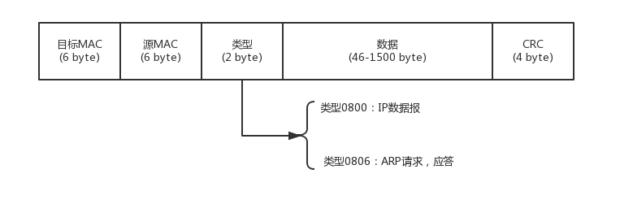</p>
<p>接下来是<strong>类型</strong>，大部分的类型是IP数据包，然后IP里面包含TCP、UDP，以及HTTP等，这都是里层封装的事情。</p>
<p>有了这个目标MAC地址，数据包在链路上广播，MAC的网卡才能发现，这个包是给它的。MAC的网卡把包收进来，然后打开IP包，发现IP地址也是自己的，再打开TCP包，发现端口是自己，也就是80，而nginx就是监听80。</p>
<p>于是将请求提交给nginx，nginx返回一个网页。然后将网页需要发回请求的机器。然后层层封装，最后到MAC层。因为来的时候有源MAC地址，返回的时候，源MAC就变成了目标MAC，再返给请求的机器。</p>
<p>对于以太网，第二层的最后面是<strong>CRC</strong>，也就是<strong>循环冗余检测</strong>。通过XOR异或的算法，来计算整个包是否在发送的过程中出现了错误，主要解决第三个问题。</p>
<p>这里还有一个没有解决的问题，当源机器知道目标机器的时候，可以将目标地址放入包里面，如果不知道呢？一个广播的网络里面接入了N台机器，我怎么知道每个MAC地址是谁呢？这就是<strong>ARP协议</strong>，也就是已知IP地址，求MAC地址的协议。</p>
<p>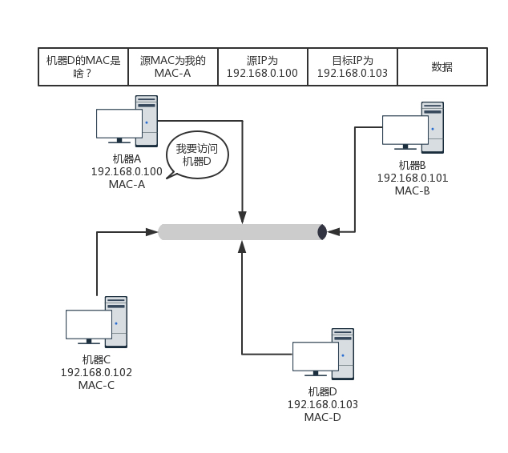</p>
<p>在一个局域网里面，当知道了IP地址，不知道MAC怎么办呢？靠“吼”。</p>
<p>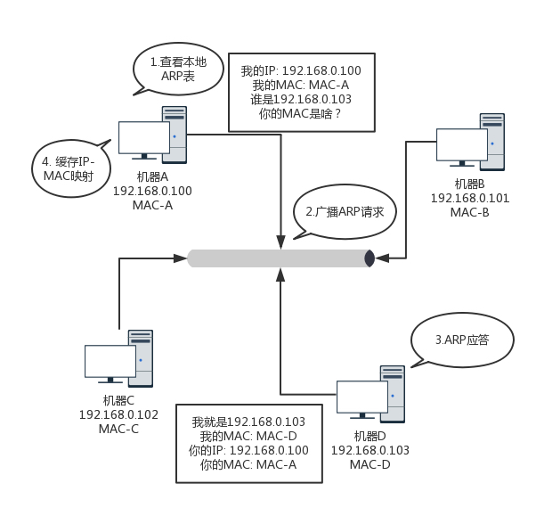</p>
<p>广而告之，发送一个广播包，谁是这个IP谁来回答。具体询问和回答的报文就像下面这样：</p>
<p>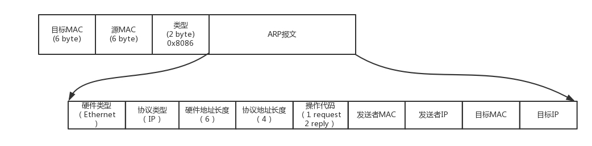</p>
<p>为了避免每次都用ARP请求，机器本地也会进行ARP缓存。当然机器会不断地上线下线，IP也可能会变，所以ARP的MAC地址缓存过一段时间就会过期。</p>
<h2>局域网</h2>
<p>好了，至此我们宿舍四个电脑就组成了一个局域网。用Hub连接起来，就可以玩局域网版的《魔兽争霸》了。</p>
<p>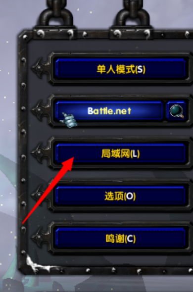</p>
<p>打开游戏，进入“局域网选项”，选择一张地图，点击“创建游戏”，就可以进入这张地图的房间中。等同一个局域网里的其他小伙伴加入后，游戏就可以开始了。</p>
<p>这种组网的方法，对一个宿舍来说没有问题，但是一旦机器数目增多，问题就出现了。因为Hub是广播的，不管某个接口是否需要，所有的Bit都会被发送出去，然后让主机来判断是不是需要。这种方式路上的车少就没问题，车一多，产生冲突的概率就提高了。而且把不需要的包转发过去，纯属浪费。看来Hub这种不管三七二十一都转发的设备是不行了，需要点儿智能的。因为每个口都只连接一台电脑，这台电脑又不怎么换IP和MAC地址，只要记住这台电脑的MAC地址，如果目标MAC地址不是这台电脑的，这个口就不用转发了。</p>
<p>谁能知道目标MAC地址是否就是连接某个口的电脑的MAC地址呢？这就需要一个能把MAC头拿下来，检查一下目标MAC地址，然后根据策略转发的设备，按第二节课中讲过的，这个设备显然是个二层设备，我们称为<strong>交换机</strong>。</p>
<p>交换机怎么知道每个口的电脑的MAC地址呢？这需要交换机会学习。</p>
<p>一台MAC1电脑将一个包发送给另一台MAC2电脑，当这个包到达交换机的时候，一开始交换机也不知道MAC2的电脑在哪个口，所以没办法，它只能将包转发给除了来的那个口之外的其他所有的口。但是，这个时候，交换机会干一件非常聪明的事情，就是交换机会记住，MAC1是来自一个明确的口。以后有包的目的地址是MAC1的，直接发送到这个口就可以了。</p>
<p>当交换机作为一个关卡一样，过了一段时间之后，就有了整个网络的一个结构了，这个时候，基本上不用广播了，全部可以准确转发。当然，每个机器的IP地址会变，所在的口也会变，因而交换机上的学习的结果，我们称为<strong>转发表</strong>，是有一个过期时间的。</p>
<p>有了交换机，一般来说，你接个几十台、上百台机器打游戏，应该没啥问题。你可以组个战队了。能上网了，就可以玩网游了。</p>
<p>这里，给你推荐一个课程，极客时间新上线了**《从0开始学游戏开发》**，由原网易游戏引擎架构师、资深底层技术专家蔡能老师，手把手带你梳理游戏开发的流程和细节，为你剖析热门游戏的成功之道。帮助普通程序员成为游戏开发工程师，步入游戏开发之路。<strong>你可以点击文末的图片进入课程。</strong></p>
<h2>小结</h2>
<p>好了，今天的内容差不多了，我们来总结一下，有三个重点需要你记住：</p>
<p>第一，MAC层是用来解决多路访问的堵车问题的；</p>
<p>第二，ARP是通过吼的方式来寻找目标MAC地址的，吼完之后记住一段时间，这个叫作缓存；</p>
<p>第三，交换机是有MAC地址学习能力的，学完了它就知道谁在哪儿了，不用广播了。</p>
<p>最后，给你留两个思考题吧。</p>
<ol>
<li>在二层中我们讲了ARP协议，即已知IP地址求MAC；还有一种RARP协议，即已知MAC求IP的，你知道它可以用来干什么吗？</li>
<li>如果一个局域网里面有多个交换机，ARP广播的模式会出现什么问题呢？</li>
</ol>
<h1>06 讲交换机与VLAN：办公室太复杂，我要回学校</h1>
<p>上一次，我们在宿舍里组建了一个本地的局域网LAN，可以愉快地玩游戏了。这是一个非常简单的场景，因为只有一台交换机，电脑数目很少。今天，让我们切换到一个稍微复杂一点的场景，办公室。</p>
<h2>拓扑结构是怎么形成的？</h2>
<p>我们常见到的办公室大多是一排排的桌子，每个桌子都有网口，一排十几个座位就有十几个网口，一个楼层就会有几十个甚至上百个网口。如果算上所有楼层，这个场景自然比你宿舍里的复杂多了。具体哪里复杂呢？我来给你具体讲解。</p>
<p>首先，这个时候，一个交换机肯定不够用，需要多台交换机，交换机之间连接起来，就形成一个稍微复杂的<strong>拓扑结构</strong>。</p>
<p>我们先来看<strong>两台交换机</strong>的情形。两台交换机连接着三个局域网，每个局域网上都有多台机器。如果机器1只知道机器4的IP地址，当它想要访问机器4，把包发出去的时候，它必须要知道机器4的MAC地址。</p>
<p>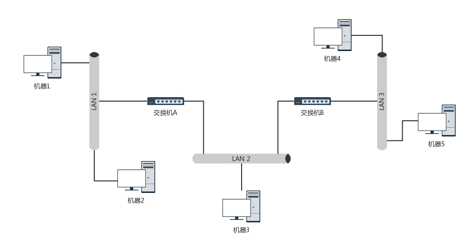</p>
<p>于是机器1发起广播，机器2收到这个广播，但是这不是找它的，所以没它什么事。交换机A一开始是不知道任何拓扑信息的，在它收到这个广播后，采取的策略是，除了广播包来的方向外，它还要转发给其他所有的网口。于是机器3也收到广播信息了，但是这和它也没什么关系。</p>
<p>当然，交换机B也是能够收到广播信息的，但是这时候它也是不知道任何拓扑信息的，因而也是进行广播的策略，将包转发到局域网三。这个时候，机器4和机器5都收到了广播信息。机器4主动响应说，这是找我的，这是我的MAC地址。于是一个ARP请求就成功完成了。</p>
<p>在上面的过程中，交换机A和交换机B都是能够学习到这样的信息：机器1是在左边这个网口的。当了解到这些拓扑信息之后，情况就好转起来。当机器2要访问机器1的时候，机器2并不知道机器1的MAC地址，所以机器2会发起一个ARP请求。这个广播消息会到达机器1，也同时会到达交换机A。这个时候交换机A已经知道机器1是不可能在右边的网口的，所以这个广播信息就不会广播到局域网二和局域网三。</p>
<p>当机器3要访问机器1的时候，也需要发起一个广播的ARP请求。这个时候交换机A和交换机B都能够收到这个广播请求。交换机A当然知道主机A是在左边这个网口的，所以会把广播消息转发到局域网一。同时，交换机B收到这个广播消息之后，由于它知道机器1是不在右边这个网口的，所以不会将消息广播到局域网三。</p>
<h2>如何解决常见的环路问题？</h2>
<p>这样看起来，两台交换机工作得非常好。随着办公室越来越大，交换机数目肯定越来越多。当整个拓扑结构复杂了，这么多网线，绕过来绕过去，不可避免地会出现一些意料不到的情况。其中常见的问题就是<strong>环路问题</strong>。</p>
<p>例如这个图，当两个交换机将两个局域网同时连接起来的时候。你可能会觉得，这样反而有了高可用性。但是却不幸地出现了环路。出现了环路会有什么结果呢？</p>
<p>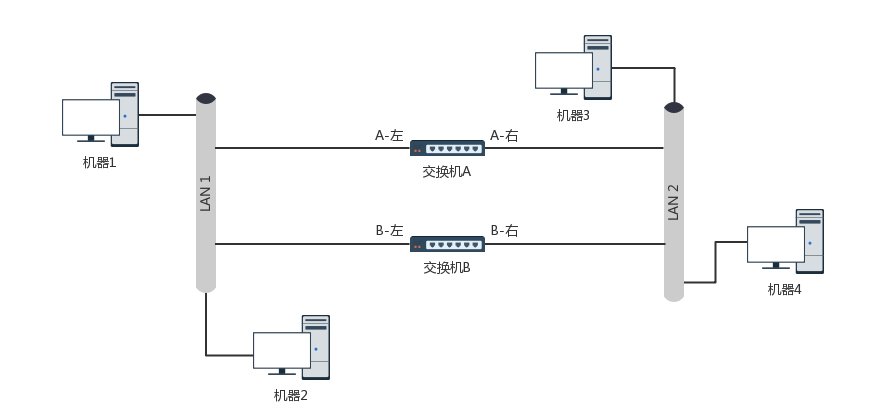</p>
<p>我们来想象一下机器1访问机器2的过程。一开始，机器1并不知道机器2的MAC地址，所以它需要发起一个ARP的广播。广播到达机器2，机器2会把MAC地址返回来，看起来没有这两个交换机什么事情。</p>
<p>但是问题来了，这两个交换机还是都能够收到广播包的。交换机A一开始是不知道机器2在哪个局域网的，所以它会把广播消息放到局域网二，在局域网二广播的时候，交换机B右边这个网口也是能够收到广播消息的。交换机B会将这个广播息信息发送到局域网一。局域网一的这个广播消息，又会到达交换机A左边的这个接口。交换机A这个时候还是不知道机器2在哪个局域网，于是将广播包又转发到局域网二。左转左转左转，好像是个圈哦。</p>
<p>可能有人会说，当两台交换机都能够逐渐学习到拓扑结构之后，是不是就可以了？</p>
<p>别想了，压根儿学不会的。机器1的广播包到达交换机A和交换机B的时候，本来两个交换机都学会了机器1是在局域网一的，但是当交换机A将包广播到局域网二之后，交换机B右边的网口收到了来自交换机A的广播包。根据学习机制，这彻底损坏了交换机B的三观，刚才机器1还在左边的网口呢，怎么又出现在右边的网口呢？哦，那肯定是机器1换位置了，于是就误会了，交换机B就学会了，机器1是从右边这个网口来的，把刚才学习的那一条清理掉。同理，交换机A右边的网口，也能收到交换机B转发过来的广播包，同样也误会了，于是也学会了，机器1从右边的网口来，不是从左边的网口来。</p>
<p>然而当广播包从左边的局域网一广播的时候，两个交换机再次刷新三观，原来机器1是在左边的，过一会儿，又发现不对，是在右边的，过一会，又发现不对，是在左边的。</p>
<p>这还是一个包转来转去，每台机器都会发广播包，交换机转发也会复制广播包，当广播包越来越多的时候，按照上一节讲过一个共享道路的算法，也就是路会越来越堵，最后谁也别想走。所以，必须有一个方法解决环路的问题，怎么破除环路呢？</p>
<h2>STP协议中那些难以理解的概念</h2>
<p>在数据结构中，有一个方法叫作<strong>最小生成树</strong>。有环的我们常称为<strong>图</strong>。将图中的环破了，就生成了<strong>树</strong>。在计算机网络中，生成树的算法叫作<strong>STP</strong>，全称<strong>Spanning Tree Protocol</strong>。</p>
<p>STP协议比较复杂，一开始很难看懂，但是其实这是一场血雨腥风的武林比武或者华山论剑，最终决出五岳盟主的方式。</p>
<p>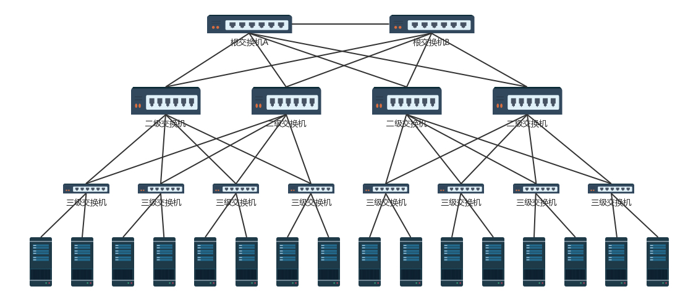</p>
<p>在STP协议里面有很多概念，译名就非常拗口，但是我一作比喻，你很容易就明白了。</p>
<ul>
<li><strong>Root Bridge</strong>，也就是<strong>根交换机</strong>。这个比较容易理解，可以比喻为“掌门”交换机，是某棵树的老大，是掌门，最大的大哥。</li>
<li><strong>Designated Bridges</strong>，有的翻译为<strong>指定交换机</strong>。这个比较难理解，可以想像成一个“小弟”，对于树来说，就是一棵树的树枝。所谓“指定”的意思是，我拜谁做大哥，其他交换机通过这个交换机到达根交换机，也就相当于拜他做了大哥。这里注意是树枝，不是叶子，因为叶子往往是主机。</li>
<li><strong>Bridge Protocol Data Units （BPDU）</strong> ，<strong>网桥协议数据单元</strong>。可以比喻为“相互比较实力”的协议。行走江湖，比的就是武功，拼的就是实力。当两个交换机碰见的时候，也就是相连的时候，就需要互相比一比内力了。BPDU只有掌门能发，已经隶属于某个掌门的交换机只能传达掌门的指示。</li>
<li><strong>Priority Vector</strong>，<strong>优先级向量</strong>。可以比喻为实力 （值越小越牛）。实力是啥？就是一组ID数目，[Root Bridge ID, Root Path Cost, Bridge ID, and Port ID]。为什么这样设计呢？这是因为要看怎么来比实力。先看Root Bridge ID。拿出老大的ID看看，发现掌门一样，那就是师兄弟；再比Root Path Cost，也即我距离我的老大的距离，也就是拿和掌门关系比，看同一个门派内谁和老大关系铁；最后比Bridge ID，比我自己的ID，拿自己的本事比。</li>
</ul>
<h2>STP的工作过程是怎样的？</h2>
<p>接下来，我们来看STP的工作过程。</p>
<p>一开始，江湖纷争，异常混乱。大家都觉得自己是掌门，谁也不服谁。于是，所有的交换机都认为自己是掌门，每个网桥都被分配了一个ID。这个ID里有管理员分配的优先级，当然网络管理员知道哪些交换机贵，哪些交换机好，就会给它们分配高的优先级。这种交换机生下来武功就很高，起步就是乔峰。</p>
<p>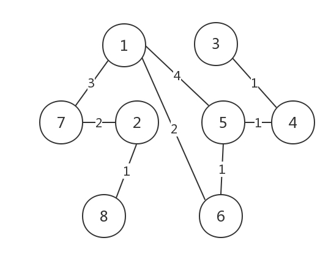</p>
<p>既然都是掌门，互相都连着网线，就互相发送BPDU来比功夫呗。这一比就发现，有人是岳不群，有人是封不平，赢的接着当掌门，输的就只好做小弟了。当掌门的还会继续发BPDU，而输的人就没有机会了。它们只有在收到掌门发的BPDU的时候，转发一下，表示服从命令。</p>
<p>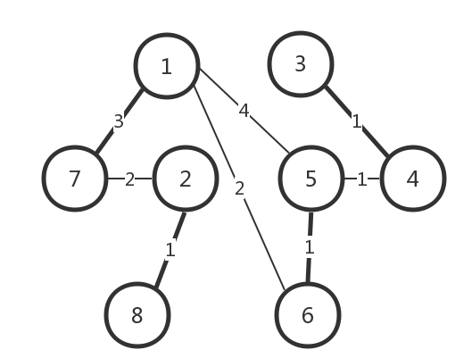</p>
<p>数字表示优先级。就像这个图，5和6碰见了，6的优先级低，所以乖乖做小弟。于是一个小门派形成，5是掌门，6是小弟。其他诸如1-7、2-8、3-4这样的小门派，也诞生了。于是江湖出现了很多小的门派，小的门派，接着合并。</p>
<p>合并的过程会出现以下四种情形，我分别来介绍。</p>
<h3>情形一：掌门遇到掌门</h3>
<p>当5碰到了1，掌门碰见掌门，1觉得自己是掌门，5也刚刚跟别人PK完成为掌门。这俩掌门比较功夫，最终1胜出。于是输掉的掌门5就会率领所有的小弟归顺。结果就是1成为大掌门。</p>
<p>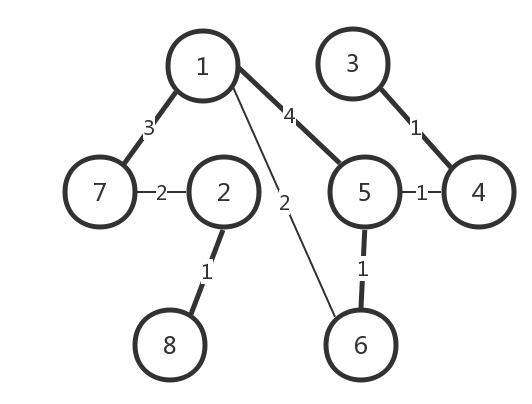</p>
<h3>情形二：同门相遇</h3>
<p>同门相遇可以是掌门与自己的小弟相遇，这说明存在“环”了。这个小弟已经通过其他门路拜在你门下，结果你还不认识，就PK了一把。结果掌门发现这个小弟功夫不错，不应该级别这么低，就把它招到门下亲自带，那这个小弟就相当于升职了。</p>
<p>我们再来看，假如1和6相遇。6原来就拜在1的门下，只不过6的上司是5，5的上司是1。1发现，6距离我才只有2，比从5这里过来的5（=4+1）近多了，那6就直接汇报给我吧。于是，5和6分别汇报给1。</p>
<p>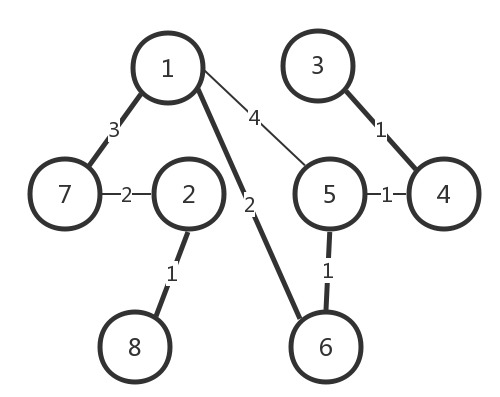</p>
<p>同门相遇还可以是小弟相遇。这个时候就要比较谁和掌门的关系近，当然近的当大哥。刚才5和6同时汇报给1了，后来5和6再比较功夫的时候发现，5你直接汇报给1距离是4，如果5汇报给6再汇报给1，距离只有2+1=3，所以5干脆拜6为上司。</p>
<h3>情形三：掌门与其他帮派小弟相遇</h3>
<p>小弟拿本帮掌门和这个掌门比较，赢了，这个掌门拜入门来。输了，会拜入新掌门，并且逐渐拉拢和自己连接的兄弟，一起弃暗投明。</p>
<p></p>
<p>例如，2和7相遇，虽然7是小弟，2是掌门。就个人武功而言，2比7强，但是7的掌门是1，比2牛，所以没办法，2要拜入7的门派，并且连同自己的小弟都一起拜入。</p>
<h3>情形四：不同门小弟相遇</h3>
<p>各自拿掌门比较，输了的拜入赢的门派，并且逐渐将与自己连接的兄弟弃暗投明。</p>
<p>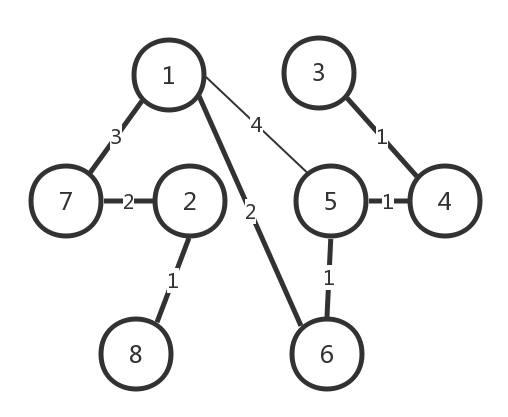</p>
<p>例如，5和4相遇。虽然4的武功好于5，但是5的掌门是1，比4牛，于是4拜入5的门派。后来当3和4相遇的时候，3发现4已经叛变了，4说我现在老大是1，比你牛，要不你也来吧，于是3也拜入1。</p>
<p>最终，生成一棵树，武林一统，天下太平。但是天下大势，分久必合，合久必分，天下统一久了，也会有相应的问题。</p>
<h3>如何解决广播问题和安全问题？</h3>
<p>毕竟机器多了，交换机也多了，就算交换机比Hub智能一些，但是还是难免有广播的问题，一大波机器，相关的部门、不相关的部门，广播一大堆，性能就下来了。就像一家公司，创业的时候，一二十个人，坐在一个会议室，有事情大家讨论一下，非常方便。但是如果变成了50个人，全在一个会议室里面吵吵，就会乱的不得了。</p>
<p>你们公司有不同的部门，有的部门需要保密的，比如人事部门，肯定要讨论升职加薪的事儿。由于在同一个广播域里面，很多包都会在一个局域网里面飘啊飘，碰到了一个会抓包的程序员，就能抓到这些包，如果没有加密，就能看到这些敏感信息了。还是上面的例子，50个人在一个会议室里面七嘴八舌的讨论，其中有两个HR，那他们讨论的问题，肯定被其他人偷偷听走了。</p>
<p>那咋办，分部门，分会议室呗。那我们就来看看怎么分。</p>
<p>有两种分的方法，一个是<strong>物理隔离</strong>。每个部门设一个单独的会议室，对应到网络方面，就是每个部门有单独的交换机，配置单独的子网，这样部门之间的沟通就需要路由器了。路由器咱们还没讲到，以后再说。这样的问题在于，有的部门人多，有的部门人少。人少的部门慢慢人会变多，人多的部门也可能人越变越少。如果每个部门有单独的交换机，口多了浪费，少了又不够用。</p>
<p>另外一种方式是<strong>虚拟隔离</strong>，就是用我们常说的<strong>VLAN</strong>，或者叫<strong>虚拟局域网</strong>。使用VLAN，一个交换机上会连属于多个局域网的机器，那交换机怎么区分哪个机器属于哪个局域网呢？</p>
<p>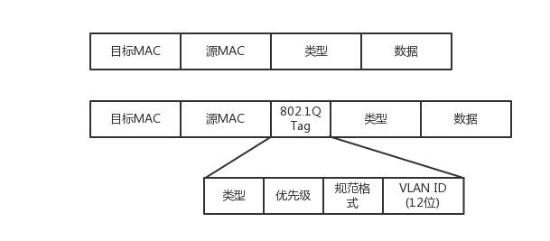</p>
<p>我们只需要在原来的二层的头上加一个TAG，里面有一个VLAN ID，一共12位。为什么是12位呢？因为12位可以划分4096个VLAN。这样是不是还不够啊。现在的情况证明，目前云计算厂商里面绝对不止4096个用户。当然每个用户需要一个VLAN了啊，怎么办呢，这个我们在后面的章节再说。</p>
<p>如果我们买的交换机是支持VLAN的，当这个交换机把二层的头取下来的时候，就能够识别这个VLAN ID。这样只有相同VLAN的包，才会互相转发，不同VLAN的包，是看不到的。这样广播问题和安全问题就都能够解决了。</p>
<p>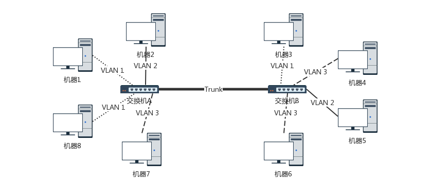</p>
<p>我们可以设置交换机每个口所属的VLAN。如果某个口坐的是程序员，他们属于VLAN 10；如果某个口坐的是人事，他们属于VLAN 20；如果某个口坐的是财务，他们属于VLAN 30。这样，财务发的包，交换机只会转发到VLAN 30的口上。程序员啊，你就监听VLAN 10吧，里面除了代码，啥都没有。</p>
<p>而且对于交换机来讲，每个VLAN的口都是可以重新设置的。一个财务走了，把他所在的作为的口从VLAN 30移除掉，来了一个程序员，坐在财务的位置上，就把这个口设置为VLAN 10，十分灵活。</p>
<p>有人会问交换机之间怎么连接呢？将两个交换机连接起来的口应该设置成什么VLAN呢？对于支持VLAN的交换机，有一种口叫作<strong>Trunk口</strong>。它可以转发属于任何VLAN的口。交换机之间可以通过这种口相互连接。</p>
<p>好了，解决这么多交换机连接在一起的问题，办公室的问题似乎搞定了。然而这只是一般复杂的场景，因为你能接触到的网络，到目前为止，不管是你的台式机，还是笔记本所连接的网络，对于带宽、高可用等都要求不高。就算出了问题，一会儿上不了网，也不会有什么大事。</p>
<p>我们在宿舍、学校或者办公室，经常会访问一些网站，这些网站似乎永远不会“挂掉”。那是因为这些网站都生活在一个叫做数据中心的地方，那里的网络世界更加复杂。在后面的章节，我会为你详细讲解。</p>
<h2>小结</h2>
<p>好了，这节就到这里，我们这里来总结一下：</p>
<ul>
<li>当交换机的数目越来越多的时候，会遭遇环路问题，让网络包迷路，这就需要使用STP协议，通过华山论剑比武的方式，将有环路的图变成没有环路的树，从而解决环路问题。</li>
<li>交换机数目多会面临隔离问题，可以通过VLAN形成虚拟局域网，从而解决广播问题和安全问题。</li>
</ul>
<p>最后，给你留两个思考题。</p>
<ol>
<li>STP协议能够很好的解决环路问题，但是也有它的缺点，你能举几个例子吗？</li>
<li>在一个比较大的网络中，如果两台机器不通，你知道应该用什么方式调试吗？</li>
</ol>
<h1>07 讲ICMP与ping：投石问路的侦察兵</h1>
<p>无论是在宿舍，还是在办公室，或者运维一个数据中心，我们常常会遇到网络不通的问题。那台机器明明就在那里，你甚至都可以通过机器的终端连上去看。它看着好好的，可是就是连不上去，究竟是哪里出了问题呢？</p>
<h2>ICMP协议的格式</h2>
<p>一般情况下，你会想到ping一下。那你知道ping是如何工作的吗？</p>
<p>ping是基于ICMP协议工作的。<strong>ICMP</strong>全称<strong>Internet Control Message Protocol</strong>，就是<strong>互联网控制报文协议</strong>。这里面的关键词是“控制”，那具体是怎么控制的呢？</p>
<p>网络包在异常复杂的网络环境中传输时，常常会遇到各种各样的问题。当遇到问题的时候，总不能“死个不明不白”，要传出消息来，报告情况，这样才可以调整传输策略。这就相当于我们经常看到的电视剧里，古代行军的时候，为将为帅者需要通过侦察兵、哨探或传令兵等人肉的方式来掌握情况，控制整个战局。</p>
<p>ICMP报文是封装在IP包里面的。因为传输指令的时候，肯定需要源地址和目标地址。它本身非常简单。因为作为侦查兵，要轻装上阵，不能携带大量的包袱。</p>
<p>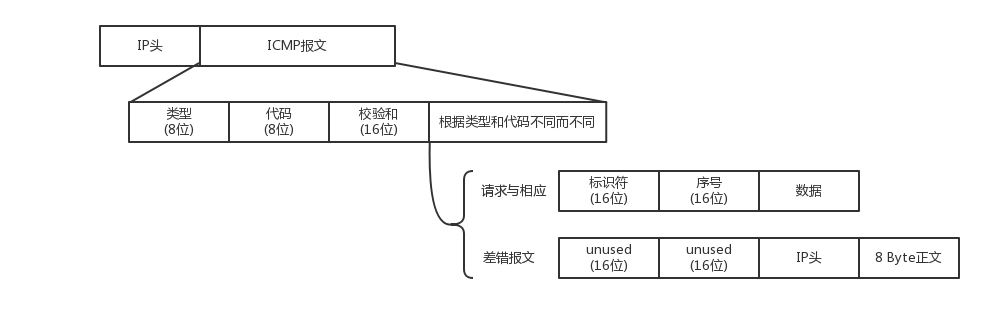</p>
<p>ICMP报文有很多的类型，不同的类型有不同的代码。<strong>最常用的类型是主动请求为8，主动请求的应答为0</strong>。</p>
<h2>查询报文类型</h2>
<p>我们经常在电视剧里听到这样的话：主帅说，来人哪！前方战事如何，快去派人打探，一有情况，立即通报！</p>
<p>这种是主帅发起的，主动查看敌情，对应ICMP的<strong>查询报文类型</strong>。例如，常用的**ping就是查询报文，是一种主动请求，并且获得主动应答的ICMP协议。**所以，ping发的包也是符合ICMP协议格式的，只不过它在后面增加了自己的格式。</p>
<p>对ping的主动请求，进行网络抓包，称为<strong>ICMP ECHO REQUEST。同理主动请求的回复，称为ICMP ECHO REPLY</strong>。比起原生的ICMP，这里面多了两个字段，一个是<strong>标识符</strong>。这个很好理解，你派出去两队侦查兵，一队是侦查战况的，一队是去查找水源的，要有个标识才能区分。另一个是<strong>序号</strong>，你派出去的侦查兵，都要编个号。如果派出去10个，回来10个，就说明前方战况不错；如果派出去10个，回来2个，说明情况可能不妙。</p>
<p>在选项数据中，ping还会存放发送请求的时间值，来计算往返时间，说明路程的长短。</p>
<h2>差错报文类型</h2>
<p>当然也有另外一种方式，就是差错报文。</p>
<p>主帅骑马走着走着，突然来了一匹快马，上面的小兵气喘吁吁的：报告主公，不好啦！张将军遭遇埋伏，全军覆没啦！这种是异常情况发起的，来报告发生了不好的事情，对应ICMP的<strong>差错报文类型</strong>。</p>
<p>我举几个ICMP差错报文的例子：<strong>终点不可达为3，源抑制为4，超时为11，重定向为5</strong>。这些都是什么意思呢？我给你具体解释一下。</p>
<p><strong>第一种是终点不可达</strong>。小兵：报告主公，您让把粮草送到张将军那里，结果没有送到。</p>
<p>如果你是主公，你肯定会问，为啥送不到？具体的原因在代码中表示就是，网络不可达代码为0，主机不可达代码为1，协议不可达代码为2，端口不可达代码为3，需要进行分片但设置了不分片位代码为4。</p>
<p>具体的场景就像这样：</p>
<ul>
<li>网络不可达：主公，找不到地方呀？</li>
<li>主机不可达：主公，找到地方没这个人呀？</li>
<li>协议不可达：主公，找到地方，找到人，口号没对上，人家天王盖地虎，我说12345！</li>
<li>端口不可达：主公，找到地方，找到人，对了口号，事儿没对上，我去送粮草，人家说他们在等救兵。</li>
<li>需要进行分片但设置了不分片位：主公，走到一半，山路狭窄，想换小车，但是您的将令，严禁换小车，就没办法送到了。</li>
</ul>
<p><strong>第二种是源站抑制</strong>，也就是让源站放慢发送速度。小兵：报告主公，您粮草送的太多了吃不完。</p>
<p><strong>第三种是时间超时</strong>，也就是超过网络包的生存时间还是没到。小兵：报告主公，送粮草的人，自己把粮草吃完了，还没找到地方，已经饿死啦。</p>
<p><strong>第四种是路由重定向</strong>，也就是让下次发给另一个路由器。小兵：报告主公，上次送粮草的人本来只要走一站地铁，非得从五环绕，下次别这样了啊。</p>
<p>差错报文的结构相对复杂一些。除了前面还是IP，ICMP的前8字节不变，后面则跟上出错的那个IP包的IP头和IP正文的前8个字节。</p>
<p>而且这类侦查兵特别恪尽职守，不但自己返回来报信，还把一部分遗物也带回来。</p>
<ul>
<li>侦察兵：报告主公，张将军已经战死沙场，这是张将军的印信和佩剑。</li>
<li>主公：神马？张将军是怎么死的（可以查看ICMP的前8字节）？没错，这是张将军的剑，是他的剑（IP数据包的头及正文前8字节）。</li>
</ul>
<h2>ping：查询报文类型的使用</h2>
<p>接下来，我们重点来看ping的发送和接收过程。</p>
<p>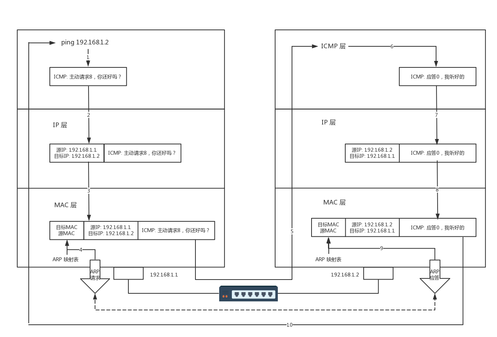</p>
<p>假定主机A的IP地址是192.168.1.1，主机B的IP地址是192.168.1.2，它们都在同一个子网。那当你在主机A上运行“ping 192.168.1.2”后，会发生什么呢?</p>
<p>ping命令执行的时候，源主机首先会构建一个ICMP请求数据包，ICMP数据包内包含多个字段。最重要的是两个，第一个是<strong>类型字段</strong>，对于请求数据包而言该字段为 8；另外一个是<strong>顺序号</strong>，主要用于区分连续ping的时候发出的多个数据包。每发出一个请求数据包，顺序号会自动加1。为了能够计算往返时间RTT，它会在报文的数据部分插入发送时间。</p>
<p>然后，由ICMP协议将这个数据包连同地址192.168.1.2一起交给IP层。IP层将以192.168.1.2作为目的地址，本机IP地址作为源地址，加上一些其他控制信息，构建一个IP数据包。</p>
<p>接下来，需要加入MAC头。如果在本节ARP映射表中查找出IP地址192.168.1.2所对应的MAC地址，则可以直接使用；如果没有，则需要发送ARP协议查询MAC地址，获得MAC地址后，由数据链路层构建一个数据帧，目的地址是IP层传过来的MAC地址，源地址则是本机的MAC地址；还要附加上一些控制信息，依据以太网的介质访问规则，将它们传送出去。</p>
<p>主机B收到这个数据帧后，先检查它的目的MAC地址，并和本机的MAC地址对比，如符合，则接收，否则就丢弃。接收后检查该数据帧，将IP数据包从帧中提取出来，交给本机的IP层。同样，IP层检查后，将有用的信息提取后交给ICMP协议。</p>
<p>主机B会构建一个 ICMP 应答包，应答数据包的类型字段为 0，顺序号为接收到的请求数据包中的顺序号，然后再发送出去给主机A。</p>
<p>在规定的时候间内，源主机如果没有接到 ICMP 的应答包，则说明目标主机不可达；如果接收到了 ICMP 应答包，则说明目标主机可达。此时，源主机会检查，用当前时刻减去该数据包最初从源主机上发出的时刻，就是 ICMP 数据包的时间延迟。</p>
<p>当然这只是最简单的，同一个局域网里面的情况。如果跨网段的话，还会涉及网关的转发、路由器的转发等等。但是对于ICMP的头来讲，是没什么影响的。会影响的是根据目标IP地址，选择路由的下一跳，还有每经过一个路由器到达一个新的局域网，需要换MAC头里面的MAC地址。这个过程后面几节会详细描述，这里暂时不多说。</p>
<p>如果在自己的可控范围之内，当遇到网络不通的问题的时候，除了直接ping目标的IP地址之外，还应该有一个清晰的网络拓扑图。并且从理论上来讲，应该要清楚地知道一个网络包从源地址到目标地址都需要经过哪些设备，然后逐个ping中间的这些设备或者机器。如果可能的话，在这些关键点，通过tcpdump -i eth0 icmp，查看包有没有到达某个点，回复的包到达了哪个点，可以更加容易推断出错的位置。</p>
<p>经常会遇到一个问题，如果不在我们的控制范围内，很多中间设备都是禁止ping的，但是ping不通不代表网络不通。这个时候就要使用telnet，通过其他协议来测试网络是否通，这个就不在本篇的讲述范围了。</p>
<p>说了这么多，你应该可以看出ping这个程序是使用了ICMP里面的ECHO REQUEST和ECHO REPLY类型的。</p>
<h2>Traceroute：差错报文类型的使用</h2>
<p>那其他的类型呢？是不是只有真正遇到错误的时候，才能收到呢？那也不是，有一个程序Traceroute，是个“大骗子”。它会使用ICMP的规则，故意制造一些能够产生错误的场景。</p>
<p>所以，<strong>Traceroute的第一个作用就是故意设置特殊的TTL，来追踪去往目的地时沿途经过的路由器</strong>。Traceroute的参数指向某个目的IP地址，它会发送一个UDP的数据包。将TTL设置成1，也就是说一旦遇到一个路由器或者一个关卡，就表示它“牺牲”了。</p>
<p>如果中间的路由器不止一个，当然碰到第一个就“牺牲”。于是，返回一个ICMP包，也就是网络差错包，类型是时间超时。那大军前行就带一顿饭，试一试走多远会被饿死，然后找个哨探回来报告，那我就知道大军只带一顿饭能走多远了。</p>
<p>接下来，将TTL设置为2。第一关过了，第二关就“牺牲”了，那我就知道第二关有多远。如此反复，直到到达目的主机。这样，Traceroute就拿到了所有的路由器IP。当然，有的路由器压根不会回这个ICMP。这也是Traceroute一个公网的地址，看不到中间路由的原因。</p>
<p>怎么知道UDP有没有到达目的主机呢？Traceroute程序会发送一份UDP数据报给目的主机，但它会选择一个不可能的值作为UDP端口号（大于30000）。当该数据报到达时，将使目的主机的 UDP模块产生一份“端口不可达”错误ICMP报文。如果数据报没有到达，则可能是超时。</p>
<p>这就相当于故意派人去西天如来那里去请一本《道德经》，结果人家信佛不信道，消息就会被打出来。被打的消息传回来，你就知道西天是能够到达的。为什么不去取《心经》呢？因为UDP是无连接的。也就是说这人一派出去，你就得不到任何音信。你无法区别到底是半路走丢了，还是真的信佛遁入空门了，只有让人家打出来，你才会得到消息。</p>
<p>**Traceroute还有一个作用是故意设置不分片，从而确定路径的MTU。**要做的工作首先是发送分组，并设置“不分片”标志。发送的第一个分组的长度正好与出口MTU相等。如果中间遇到窄的关口会被卡住，会发送ICMP网络差错包，类型为“需要进行分片但设置了不分片位”。其实，这是人家故意的好吧，每次收到ICMP“不能分片”差错时就减小分组的长度，直到到达目标主机。</p>
<h2>小结</h2>
<p>好了，这一节内容差不多了，我来总结一下：</p>
<ul>
<li>ICMP相当于网络世界的侦察兵。我讲了两种类型的ICMP报文，一种是主动探查的查询报文，一种异常报告的差错报文；</li>
<li>ping使用查询报文，Traceroute使用差错报文。</li>
</ul>
<p>最后，给你留两个思考题吧。</p>
<ol>
<li>当发送的报文出问题的时候，会发送一个ICMP的差错报文来报告错误，但是如果ICMP的差错报文也出问题了呢？</li>
<li>这一节只说了一个局域网互相ping的情况。如果跨路由器、跨网关的过程会是什么样的呢？</li>
</ol>
<h1>08 讲世界这么大，我想出网关：欧洲十国游与玄奘西行</h1>
<p>前几节，我主要跟你讲了宿舍里和办公室里用到的网络协议。你已经有了一些基础，是时候去外网逛逛了！</p>
<h2>怎么在宿舍上网？</h2>
<p>还记得咱们在宿舍的时候买了台交换机，几台机器组了一个局域网打游戏吗？可惜啊，只能打局域网的游戏，不能上网啊！盼啊盼啊，终于盼到大二，允许宿舍开通网络了。学校给每个宿舍的网口分配了一个IP地址。这个IP是校园网的IP，完全由网管部门控制。宿舍网的IP地址多为192.168.1.x。校园网的IP地址，假设是10.10.x.x。</p>
<p>这个时候，你要在宿舍上网，有两个办法：</p>
<p>第一个办法，让你们宿舍长再买一个网卡。这个时候，你们宿舍长的电脑里就有两张网卡。一张网卡的线插到你们宿舍的交换机上，另一张网卡的线插到校园网的网口。而且，这张新的网卡的IP地址要按照学校网管部门分配的配置，不然上不了网。<strong>这种情况下，如果你们宿舍的人要上网，就需要一直开着宿舍长的电脑。</strong></p>
<p>第二个办法，你们共同出钱买个家庭路由器（反正当时我们买不起）。家庭路由器会有内网网口和外网网口。把外网网口的线插到校园网的网口上，将这个外网网口配置成和网管部的一样。内网网口连上你们宿舍的所有的电脑。<strong>这种情况下，如果你们宿舍的人要上网，就需要一直开着路由器。</strong></p>
<p>这两种方法其实是一样的。只不过第一种方式，让你的宿舍长的电脑，变成一个有多个口的路由器而已。而你买的家庭路由器，里面也跑着程序，和你宿舍长电脑里的功能一样，只不过是一个嵌入式的系统。</p>
<p>当你的宿舍长能够上网之后，接下来，就是其他人的电脑怎么上网的问题。这就需要配置你们的<strong>网卡。当然DHCP是可以默认配置的。在进行网卡配置的时候，除了IP地址，还需要配置一个Gateway</strong>的东西，这个就是<strong>网关</strong>。</p>
<h2>你了解MAC头和IP头的细节吗？</h2>
<p>一旦配置了IP地址和网关，往往就能够指定目标地址进行访问了。由于在跨网关访问的时候，牵扯到MAC地址和IP地址的变化，这里有必要详细描述一下MAC头和IP头的细节。</p>
<p>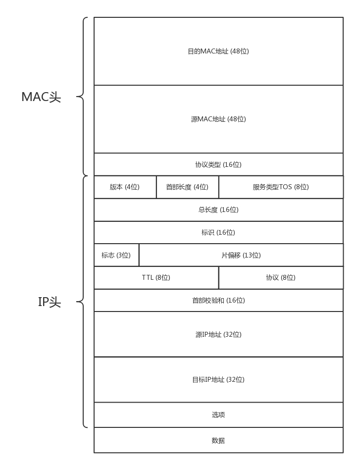</p>
<p>在MAC头里面，先是目标MAC地址，然后是源MAC地址，然后有一个协议类型，用来说明里面是IP协议。IP头里面的版本号，目前主流的还是IPv4，服务类型TOS在第三节讲ip addr命令的时候讲过，TTL在第7节讲ICMP协议的时候讲过。另外，还有8位标识协议。这里到了下一层的协议，也就是，是TCP还是UDP。最重要的就是源IP和目标IP。先是源IP地址，然后是目标IP地址。</p>
<p>在任何一台机器上，当要访问另一个IP地址的时候，都会先判断，这个目标IP地址，和当前机器的IP地址，是否在同一个网段。怎么判断同一个网段呢？需要CIDR和子网掩码，这个在第三节的时候也讲过了。</p>
<p><strong>如果是同一个网段</strong>，例如，你访问你旁边的兄弟的电脑，那就没网关什么事情，直接将源地址和目标地址放入IP头中，然后通过ARP获得MAC地址，将源MAC和目的MAC放入MAC头中，发出去就可以了。</p>
<p><strong>如果不是同一网段</strong>，例如，你要访问你们校园网里面的BBS，该怎么办？这就需要发往默认网关Gateway。Gateway的地址一定是和源IP地址是一个网段的。往往不是第一个，就是第二个。例如192.168.1.0/24这个网段，Gateway往往会是192.168.1.1/24或者192.168.1.2/24。</p>
<p>如何发往默认网关呢？网关不是和源IP地址是一个网段的么？这个过程就和发往同一个网段的其他机器是一样的：将源地址和目标IP地址放入IP头中，通过ARP获得网关的MAC地址，将源MAC和网关的MAC放入MAC头中，发送出去。网关所在的端口，例如192.168.1.1/24将网络包收进来，然后接下来怎么做，就完全看网关的了。</p>
<p>**网关往往是一个路由器，是一个三层转发的设备。**啥叫三层设备？前面也说过了，就是把MAC头和IP头都取下来，然后根据里面的内容，看看接下来把包往哪里转发的设备。</p>
<p>在你的宿舍里面，网关就是你宿舍长的电脑。一个路由器往往有多个网口，如果是一台服务器做这个事情，则就有多个网卡，其中一个网卡是和源IP同网段的。</p>
<p>很多情况下，人们把网关就叫作路由器。其实不完全准确，而另一种比喻更加恰当：<strong>路由器是一台设备，它有五个网口或者网卡，相当于有五只手，分别连着五个局域网。每只手的IP地址都和局域网的IP地址相同的网段，每只手都是它握住的那个局域网的网关。</strong></p>
<p>任何一个想发往其他局域网的包，都会到达其中一只手，被拿进来，拿下MAC头和IP头，看看，根据自己的路由算法，选择另一只手，加上IP头和MAC头，然后扔出去。</p>
<h2>静态路由是什么？</h2>
<p>这个时候，问题来了，该选择哪一只手？IP头和MAC头加什么内容，哪些变、哪些不变呢？这个问题比较复杂，大致可以分为两类，一个是<strong>静态路由</strong>，一个是<strong>动态路由</strong>。动态路由下一节我们详细地讲。这一节我们先说静态路由。</p>
<p>**静态路由，其实就是在路由器上，配置一条一条规则。**这些规则包括：想访问BBS站（它肯定有个网段），从2号口出去，下一跳是IP2；想访问教学视频站（它也有个自己的网段），从3号口出去，下一跳是IP3，然后保存在路由器里。</p>
<p>每当要选择从哪只手抛出去的时候，就一条一条的匹配规则，找到符合的规则，就按规则中设置的那样，从某个口抛出去，找下一跳IPX。</p>
<h2>IP头和MAC头哪些变、哪些不变？</h2>
<p>对于IP头和MAC头哪些变、哪些不变的问题，可以分两种类型。我把它们称为“<strong>欧洲十国游”型</strong>和“<strong>玄奘西行”型</strong>。</p>
<p>之前我说过，MAC地址是一个局域网内才有效的地址。因而，MAC地址只要过网关，就必定会改变，因为已经换了局域网。两者主要的区别在于IP地址是否改变。不改变IP地址的网关，我们称为<strong>转发网关；改变IP地址的网关，我们称为NAT网关</strong>。</p>
<h3>“欧洲十国游”型</h3>
<p>结合这个图，我们先来看“欧洲十国游”型。</p>
<p></p>
<p>服务器A要访问服务器B。首先，服务器A会思考，192.168.4.101和我不是一个网段的，因而需要先发给网关。那网关是谁呢？已经静态配置好了，网关是192.168.1.1。网关的MAC地址是多少呢？发送ARP获取网关的MAC地址，然后发送包。包的内容是这样的：</p>
<ul>
<li>源MAC：服务器A的MAC</li>
<li>目标MAC：192.168.1.1这个网口的MAC</li>
<li>源IP：192.168.1.101</li>
<li>目标IP：192.168.4.101</li>
</ul>
<p>包到达192.168.1.1这个网口，发现MAC一致，将包收进来，开始思考往哪里转发。</p>
<p>在路由器A中配置了静态路由之后，要想访问192.168.4.0/24，要从192.168.56.1这个口出去，下一跳为192.168.56.2。</p>
<p>于是，路由器A思考的时候，匹配上了这条路由，要从192.168.56.1这个口发出去，发给192.168.56.2，那192.168.56.2的MAC地址是多少呢？路由器A发送ARP获取192.168.56.2的MAC地址，然后发送包。包的内容是这样的：</p>
<ul>
<li>源MAC：192.168.56.1的MAC地址</li>
<li>目标MAC：192.168.56.2的MAC地址</li>
<li>源IP：192.168.1.101</li>
<li>目标IP：192.168.4.101</li>
</ul>
<p>包到达192.168.56.2这个网口，发现MAC一致，将包收进来，开始思考往哪里转发。</p>
<p>在路由器B中配置了静态路由，要想访问192.168.4.0/24，要从192.168.4.1这个口出去，没有下一跳了。因为我右手这个网卡，就是这个网段的，我是最后一跳了。</p>
<p>于是，路由器B思考的时候，匹配上了这条路由，要从192.168.4.1这个口发出去，发给192.168.4.101。那192.168.4.101的MAC地址是多少呢？路由器B发送ARP获取192.168.4.101的MAC地址，然后发送包。包的内容是这样的：</p>
<ul>
<li>源MAC：192.168.4.1的MAC地址</li>
<li>目标MAC：192.168.4.101的MAC地址</li>
<li>源IP：192.168.1.101</li>
<li>目标IP：192.168.4.101</li>
</ul>
<p>包到达服务器B，MAC地址匹配，将包收进来。</p>
<p>通过这个过程可以看出，每到一个新的局域网，MAC都是要变的，但是IP地址都不变。在IP头里面，不会保存任何网关的IP地址。<strong>所谓的下一跳是，某个IP要将这个IP地址转换为MAC放入MAC头。</strong></p>
<p>之所以将这种模式比喻称为欧洲十国游，是因为在整个过程中，IP头里面的地址都是不变的。IP地址在三个局域网都可见，在三个局域网之间的网段都不会冲突。在三个网段之间传输包，IP头不改变。这就像在欧洲各国之间旅游，一个签证就能搞定。 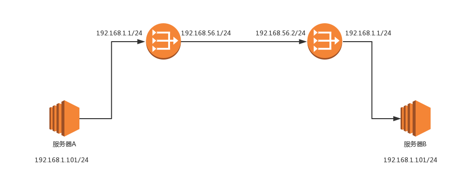</p>
<h3>“玄奘西行”型</h3>
<p>我们再来看“玄奘西行”型。</p>
<p>这里遇见的第一个问题是，局域网之间没有商量过，各定各的网段，因而IP段冲突了。最左面大唐的地址是192.168.1.101，最右面印度的地址也是192.168.1.101，如果单从IP地址上看，简直是自己访问自己，其实是大唐的192.168.1.101要访问印度的192.168.1.101。</p>
<p>怎么解决这个问题呢？既然局域网之间没有商量过，你们各管各的，那到国际上，也即中间的局域网里面，就需要使用另外的地址。就像出国，不能用咱们自己的身份证，而要改用护照一样，玄奘西游也要拿着专门取经的通关文牒，而不能用自己国家的身份证。</p>
<p>首先，目标服务器B在国际上要有一个国际的身份，我们给它一个192.168.56.2。在网关B上，我们记下来，国际身份192.168.56.2对应国内身份192.168.1.101。凡是要访问192.168.56.2，都转成192.168.1.101。</p>
<p>于是，源服务器A要访问目标服务器B，要指定的目标地址为192.168.56.2。这是它的国际身份。服务器A想，192.168.56.2和我不是一个网段的，因而需要发给网关，网关是谁？已经静态配置好了，网关是192.168.1.1，网关的MAC地址是多少？发送ARP获取网关的MAC地址，然后发送包。包的内容是这样的：</p>
<ul>
<li>源MAC：服务器A的MAC</li>
<li>目标MAC：192.168.1.1这个网口的MAC</li>
<li>源IP：192.168.1.101</li>
<li>目标IP：192.168.56.2</li>
</ul>
<p>包到达192.168.1.1这个网口，发现MAC一致，将包收进来，开始思考往哪里转发。</p>
<p>在路由器A中配置了静态路由：要想访问192.168.56.2/24，要从192.168.56.1这个口出去，没有下一跳了，因为我右手这个网卡，就是这个网段的，我是最后一跳了。</p>
<p>于是，路由器A思考的时候，匹配上了这条路由，要从192.168.56.1这个口发出去，发给192.168.56.2。那192.168.56.2的MAC地址是多少呢？路由器A发送ARP获取192.168.56.2的MAC地址。</p>
<p>当网络包发送到中间的局域网的时候，服务器A也需要有个国际身份，因而在国际上，源IP地址也不能用192.168.1.101，需要改成192.168.56.1。发送包的内容是这样的：</p>
<ul>
<li>源MAC：192.168.56.1的MAC地址</li>
<li>目标MAC：192.168.56.2的MAC地址</li>
<li>源IP：192.168.56.1</li>
<li>目标IP：192.168.56.2</li>
</ul>
<p>包到达192.168.56.2这个网口，发现MAC一致，将包收进来，开始思考往哪里转发。</p>
<p>路由器B是一个NAT网关，它上面配置了，要访问国际身份192.168.56.2对应国内身份192.168.1.101，于是改为访问192.168.1.101。</p>
<p>在路由器B中配置了静态路由：要想访问192.168.1.0/24，要从192.168.1.1这个口出去，没有下一跳了，因为我右手这个网卡，就是这个网段的，我是最后一跳了。</p>
<p>于是，路由器B思考的时候，匹配上了这条路由，要从192.168.1.1这个口发出去，发给192.168.1.101。</p>
<p>那192.168.1.101的MAC地址是多少呢？路由器B发送ARP获取192.168.1.101的MAC地址，然后发送包。内容是这样的：</p>
<ul>
<li>源MAC：192.168.1.1的MAC地址</li>
<li>目标MAC：192.168.1.101的MAC地址</li>
<li>源IP：192.168.56.1</li>
<li>目标IP：192.168.1.101</li>
</ul>
<p>包到达服务器B，MAC地址匹配，将包收进来。</p>
<p>从服务器B接收的包可以看出，源IP为服务器A的国际身份，因而发送返回包的时候，也发给这个国际身份，由路由器A做NAT，转换为国内身份。</p>
<p>从这个过程可以看出，IP地址也会变。这个过程用英文说就是<strong>Network Address Translation</strong>，简称<strong>NAT</strong>。</p>
<p>其实这第二种方式我们经常见，现在大家每家都有家用路由器，家里的网段都是192.168.1.x，所以你肯定访问不了你邻居家的这个私网的IP地址的。所以，当我们家里的包发出去的时候，都被家用路由器NAT成为了运营商的地址了。</p>
<p>很多办公室访问外网的时候，也是被NAT过的，因为不可能办公室里面的IP也是公网可见的，公网地址实在是太贵了，所以一般就是整个办公室共用一个到两个出口IP地址。你可以通过 <a href="https://www.whatismyip.com/">https://www.whatismyip.com/</a> 查看自己的出口IP地址。</p>
<h2>小结</h2>
<p>好了，这一节内容差不多了，我来总结一下：</p>
<ul>
<li>如果离开本局域网，就需要经过网关，网关是路由器的一个网口；</li>
<li>路由器是一个三层设备，里面有如何寻找下一跳的规则；</li>
<li>经过路由器之后MAC头要变，如果IP不变，相当于不换护照的欧洲旅游，如果IP变，相当于换护照的玄奘西行。</li>
</ul>
<p>最后，给你留两个思考题吧。</p>
<ol>
<li>当在你家里要访问163网站的时候，你的包需要NAT成为公网IP，返回的包又要NAT成你的私有IP，返回包怎么知道这是你的请求呢？它怎么就这么智能的NAT成了你的IP而非别人的IP呢？</li>
<li>对于路由规则，这一节讲述了静态路由，需要手动配置，如果要自动配置，你觉得应该怎么办呢？</li>
</ol>
<h1>09 讲路由协议：西出网关无故人，敢问路在何方</h1>
<p>俗话说得好，在家千日好，出门一日难。网络包一旦出了网关，就像玄奘西行一样踏上了江湖漂泊的路。</p>
<p>上一节我们描述的是一个相对简单的情形。出了网关之后，只有一条路可以走。但是，网络世界复杂得多，一旦出了网关，会面临着很多路由器，有很多条道路可以选。如何选择一个更快速的道路求取真经呢？这里面还有很多门道可以讲。</p>
<h2>如何配置路由？</h2>
<p>通过上一节的内容，你应该已经知道，路由器就是一台网络设备，它有多张网卡。当一个入口的网络包送到路由器时，它会根据一个本地的转发信息库，来决定如何正确地转发流量。这个转发信息库通常被称为<strong>路由表</strong>。</p>
<p>一张路由表中会有多条路由规则。每一条规则至少包含这三项信息。</p>
<ul>
<li>目的网络：这个包想去哪儿？</li>
<li>出口设备：将包从哪个口扔出去？</li>
<li>下一跳网关：下一个路由器的地址。</li>
</ul>
<p>通过route命令和ip route命令都可以进行查询或者配置。</p>
<p>例如，我们设置ip route add 10.176.48.0/20 via 10.173.32.1 dev eth0，就说明要去10.176.48.0/20这个目标网络，要从eth0端口出去，经过10.173.32.1。</p>
<p>上一节的例子中，网关上的路由策略就是按照这三项配置信息进行配置的。这种配置方式的一个核心思想是：<strong>根据目的IP地址来配置路由</strong>。</p>
<h2>如何配置策略路由？</h2>
<p>当然，在真实的复杂的网络环境中，除了可以根据目的ip地址配置路由外，还可以根据多个参数来配置路由，这就称为<strong>策略路由</strong>。</p>
<p>可以配置多个路由表，可以根据源IP地址、入口设备、TOS等选择路由表，然后在路由表中查找路由。这样可以使得来自不同来源的包走不同的路由。</p>
<p>例如，我们设置：</p>
<pre><code>ip rule add from 192.168.1.0/24 table 10 
ip rule add from 192.168.2.0/24 table 20
</code></pre>
<p>表示从192.168.1.10/24这个网段来的，使用table 10中的路由表，而从192.168.2.0/24网段来的，使用table20的路由表。</p>
<p>在一条路由规则中，也可以走多条路径。例如，在下面的路由规则中：</p>
<pre><code>ip route add default scope global nexthop via 100.100.100.1 weight 1 nexthop via 200.200.200.1 weight 2
</code></pre>
<p>下一跳有两个地方，分别是100.100.100.1和200.200.200.1，权重分别为1比2。</p>
<p>在什么情况下会用到如此复杂的配置呢？我来举一个现实中的例子。</p>
<p>我是房东，家里从运营商那儿拉了两根网线。这两根网线分别属于两个运行商。一个带宽大一些，一个带宽小一些。这个时候，我就不能买普通的家用路由器了，得买个高级点的，可以接两个外网的。</p>
<p>家里的网络呢，就是普通的家用网段192.168.1.x/24。家里有两个租户，分别把线连到路由器上。IP地址为192.168.1.101/24和192.168.1.102/24，网关都是192.168.1.1/24，网关在路由器上。</p>
<p>就像上一节说的一样，家里的网段是私有网段，出去的包需要NAT成公网的IP地址，因而路由器是一个NAT路由器。</p>
<p>两个运营商都要为这个网关配置一个公网的IP地址。如果你去查看你们家路由器里的网段，基本就是我图中画的样子。</p>
<p>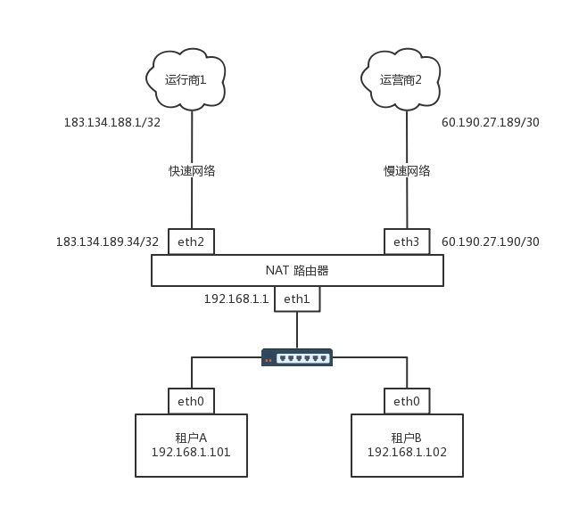</p>
<p>运行商里面也有一个IP地址，在运营商网络里面的网关。不同的运营商方法不一样，有的是/32的，也即一个一对一连接。</p>
<p>例如，运营商1给路由器分配的地址是183.134.189.34/32，而运营商网络里面的网关是183.134.188.1/32。有的是/30的，也就是分了一个特别小的网段。运营商2给路由器分配的地址是60.190.27.190/30，运营商网络里面的网关是60.190.27.189/30。</p>
<p>根据这个网络拓扑图，可以将路由配置成这样：</p>
<pre><code>$ ip route list table main 
60.190.27.189/30 dev eth3  proto kernel  scope link  src 60.190.27.190
183.134.188.1 dev eth2  proto kernel  scope link  src 183.134.189.34
192.168.1.0/24 dev eth1  proto kernel  scope link  src 192.168.1.1
127.0.0.0/8 dev lo  scope link
default via 183.134.188.1 dev eth2
</code></pre>
<p>当路由这样配置的时候，就告诉这个路由器如下的规则：</p>
<ul>
<li>如果去运营商二，就走eth3；</li>
<li>如果去运营商一呢，就走eth2；</li>
<li>如果访问内网，就走eth1；</li>
<li>如果所有的规则都匹配不上，默认走运营商一，也即走快的网络。</li>
</ul>
<p>但是问题来了，租户A不想多付钱，他说我就上上网页，从不看电影，凭什么收我同样贵的网费啊？没关系，咱有技术可以解决。</p>
<p>下面我添加一个Table，名字叫<strong>chao</strong>。</p>
<pre><code># echo 200 chao &gt;&gt; /etc/iproute2/rt_tables
</code></pre>
<p>添加一条规则：</p>
<pre><code># ip rule add from 192.168.1.101 table chao
# ip rule ls
0:    from all lookup local 
32765:    from 10.0.0.10 lookup chao
32766:    from all lookup main 
32767:    from all lookup default
</code></pre>
<p>设定规则为：从192.168.1.101来的包都查看个chao这个新的路由表。</p>
<p>在chao路由表中添加规则：</p>
<pre><code># ip route add default via 60.190.27.189 dev eth3 table chao
# ip route flush cache
</code></pre>
<p>默认的路由走慢的，谁让你不付钱。</p>
<p>上面说的都是静态的路由，一般来说网络环境简单的时候，在自己的可控范围之内，自己捣鼓还是可以的。但是有时候网络环境复杂并且多变，如果总是用静态路由，一旦网络结构发生变化，让网络管理员手工修改路由太复杂了，因而需要动态路由算法。</p>
<h2>动态路由算法</h2>
<p>使用动态路由路由器，可以根据路由协议算法生成动态路由表，随网络运行状况的变化而变化。那路由算法是什么样的呢？</p>
<p>我们可以想象唐僧西天取经，需要解决两大问题，一个是在每个国家如何找到正确的路，去换通关文牒、吃饭、休息；一个是在国家之间，野外行走的时候，如何找到正确的路、水源的问题。</p>
<p>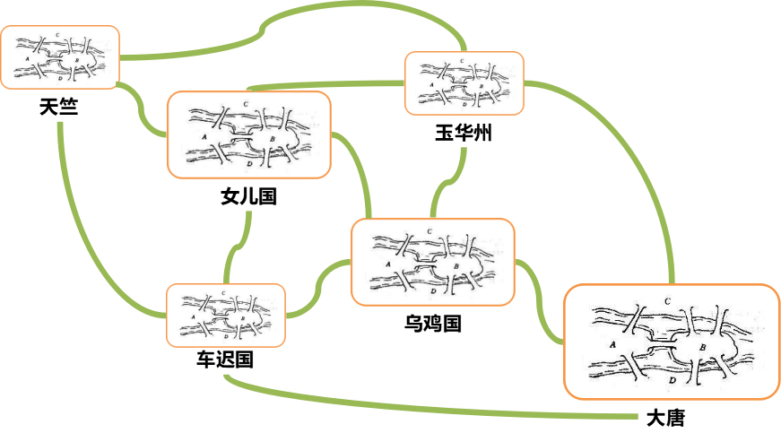</p>
<p>无论是一个国家内部，还是国家之间，我们都可以将复杂的路径，抽象为一种叫作图的数据结构。至于唐僧西行取经，肯定想走得路越少越好，道路越短越好，因而这就转化成为<strong>如何在途中找到最短路径</strong>的问题。</p>
<p>咱们在大学里面学习计算机网络与数据结构的时候，知道求最短路径常用的有两种方法，一种是Bellman-Ford算法，一种是Dijkstra算法。在计算机网络中基本也是用这两种方法计算的。</p>
<h3>1.距离矢量路由算法</h3>
<p>第一大类的算法称为<strong>距离矢量路由</strong>（<strong>distance vector routing</strong>）。它是基于Bellman-Ford算法的。</p>
<p>这种算法的基本思路是，每个路由器都保存一个路由表，包含多行，每行对应网络中的一个路由器，每一行包含两部分信息，一个是要到目标路由器，从那条线出去，另一个是到目标路由器的距离。</p>
<p>由此可以看出，每个路由器都是知道全局信息的。那这个信息如何更新呢？每个路由器都知道自己和邻居之间的距离，每过几秒，每个路由器都将自己所知的到达所有的路由器的距离告知邻居，每个路由器也能从邻居那里得到相似的信息。</p>
<p>每个路由器根据新收集的信息，计算和其他路由器的距离，比如自己的一个邻居距离目标路由器的距离是M，而自己距离邻居是x，则自己距离目标路由器是x+M。</p>
<p>这个算法比较简单，但是还是有问题。</p>
<p>**第一个问题就是好消息传得快，坏消息传得慢。**如果有个路由器加入了这个网络，它的邻居就能很快发现它，然后将消息广播出去。要不了多久，整个网络就都知道了。但是一旦一个路由器挂了，挂的消息是没有广播的。当每个路由器发现原来的道路到不了这个路由器的时候，感觉不到它已经挂了，而是试图通过其他的路径访问，直到试过了所有的路径，才发现这个路由器是真的挂了。</p>
<p>我再举个例子。</p>
<p>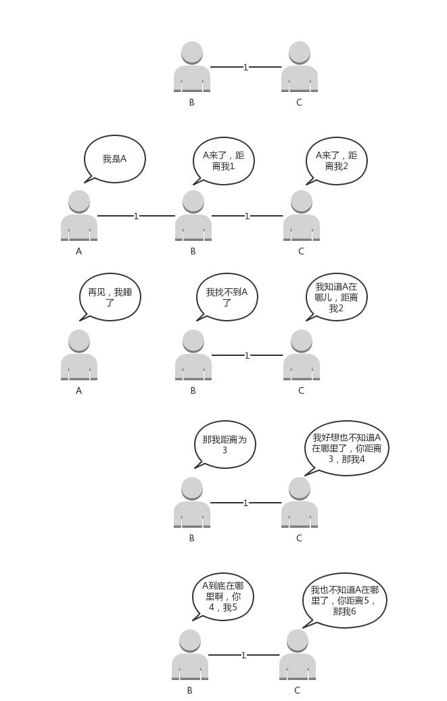</p>
<p>原来的网络包括两个节点，B和C。A加入了网络，它的邻居B很快就发现A启动起来了。于是它将自己和A的距离设为1，同样C也发现A起来了，将自己和A的距离设置为2。但是如果A挂掉，情况就不妙了。B本来和A是邻居，发现连不上A了，但是C还是能够连上，只不过距离远了点，是2，于是将自己的距离设置为3。殊不知C的距离2其实是基于原来自己的距离为1计算出来的。C发现自己也连不上A，并且发现B设置为3，于是自己改成距离4。依次类推，数越来越大，直到超过一个阈值，我们才能判定A真的挂了。</p>
<p>这个道理有点像有人走丢了。当你突然发现找不到这个人了。于是你去学校问，是不是在他姨家呀？找到他姨家，他姨说，是不是在他舅舅家呀？他舅舅说，是不是在他姥姥家呀？他姥姥说，是不是在学校呀？总归要问一圈，或者是超过一定的时间，大家才会认为这个人的确走丢了。如果这个人其实只是去见了一个谁都不认识的网友去了，当这个人回来的时候，只要他随便见到其中的一个亲戚，这个亲戚就会拉着他到他的家长那里，说你赶紧回家，你妈都找你一天了。</p>
<p>**这种算法的第二个问题是，每次发送的时候，要发送整个全局路由表。**网络大了，谁也受不了，所以最早的路由协议RIP就是这个算法。它适用于小型网络（小于15跳）。当网络规模都小的时候，没有问题。现在一个数据中心内部路由器数目就很多，因而不适用了。</p>
<p>所以上面的两个问题，限制了距离矢量路由的网络规模。</p>
<h3>2.链路状态路由算法</h3>
<p>第二大类算法是<strong>链路状态路由</strong>（<strong>link state routing</strong>），基于Dijkstra算法。</p>
<p>这种算法的基本思路是：当一个路由器启动的时候，首先是发现邻居，向邻居say hello，邻居都回复。然后计算和邻居的距离，发送一个echo，要求马上返回，除以二就是距离。然后将自己和邻居之间的链路状态包广播出去，发送到整个网络的每个路由器。这样每个路由器都能够收到它和邻居之间的关系的信息。因而，每个路由器都能在自己本地构建一个完整的图，然后针对这个图使用Dijkstra算法，找到两点之间的最短路径。</p>
<p>不像距离距离矢量路由协议那样，更新时发送整个路由表。链路状态路由协议只广播更新的或改变的网络拓扑，这使得更新信息更小，节省了带宽和CPU利用率。而且一旦一个路由器挂了，它的邻居都会广播这个消息，可以使得坏消息迅速收敛。</p>
<h2>动态路由协议</h2>
<h3>1.基于链路状态路由算法的OSPF</h3>
<p><strong>OSPF</strong>（<strong>Open Shortest Path First</strong>，<strong>开放式最短路径优先</strong>）就是这样一个基于链路状态路由协议，广泛应用在数据中心中的协议。由于主要用在数据中心内部，用于路由决策，因而称为<strong>内部网关协议</strong>（<strong>Interior Gateway Protocol</strong>，简称<strong>IGP</strong>）。</p>
<p>内部网关协议的重点就是找到最短的路径。在一个组织内部，路径最短往往最优。当然有时候OSPF可以发现多个最短的路径，可以在这多个路径中进行负载均衡，这常常被称为<strong>等价路由</strong>。</p>
<p>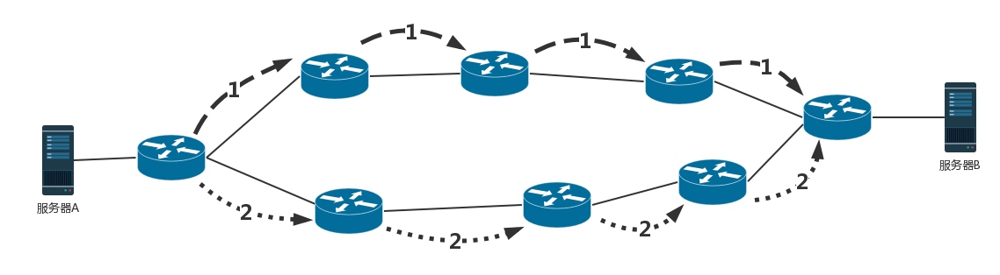</p>
<p>这一点非常重要。有了等价路由，到一个地方去可以有相同的两个路线，可以分摊流量，还可以当一条路不通的时候，走另外一条路。这个在后面我们讲数据中心的网络的时候，一般应用的接入层会有负载均衡LVS。它可以和OSPF一起，实现高吞吐量的接入层设计。</p>
<p>有了内网的路由协议，在一个国家内，唐僧可以想怎么走怎么走了，两条路选一条也行。</p>
<h3>2.基于距离矢量路由算法的BGP</h3>
<p>但是外网的路由协议，也即国家之间的，又有所不同。我们称为<strong>外网路由协议</strong>（<strong>Border Gateway Protocol</strong>，简称<strong>BGP</strong>）。</p>
<p>在一个国家内部，有路当然选近的走。但是国家之间，不光远近的问题，还有政策的问题。例如，唐僧去西天取经，有的路近。但是路过的国家看不惯僧人，见了僧人就抓。例如灭法国，连光头都要抓。这样的情况即便路近，也最好绕远点走。</p>
<p>对于网络包同样，每个数据中心都设置自己的Policy。例如，哪些外部的IP可以让内部知晓，哪些内部的IP可以让外部知晓，哪些可以通过，哪些不能通过。这就好比，虽然从我家里到目的地最近，但是不能谁都能从我家走啊！</p>
<p>在网络世界，这一个个国家成为自治系统<strong>AS</strong>（Autonomous System）。自治系统分几种类型。</p>
<ul>
<li>Stub AS：对外只有一个连接。这类AS不会传输其他AS的包。例如，个人或者小公司的网络。</li>
<li>Multihomed AS：可能有多个连接连到其他的AS，但是大多拒绝帮其他的AS传输包。例如一些大公司的网络。</li>
<li>Transit AS：有多个连接连到其他的AS，并且可以帮助其他的AS传输包。例如主干网。</li>
</ul>
<p>每个自治系统都有边界路由器，通过它和外面的世界建立联系。</p>
<p>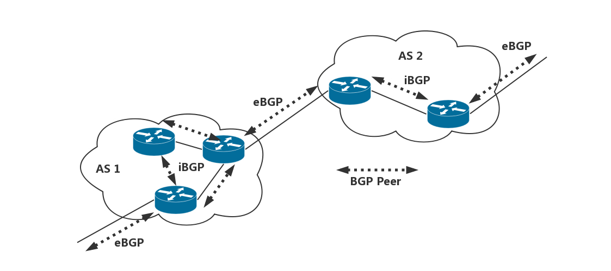</p>
<p>**BGP又分为两类，eBGP和iBGP。**自治系统间，边界路由器之间使用eBGP广播路由。内部网络也需要访问其他的自治系统。边界路由器如何将BGP学习到的路由导入到内部网络呢？就是通过运行iBGP，使得内部的路由器能够找到到达外网目的地的最好的边界路由器。</p>
<p>BGP协议使用的算法是<strong>路径矢量路由协议</strong>（path-vector protocol）。它是距离矢量路由协议的升级版。</p>
<p>前面说了距离矢量路由协议的缺点。其中一个是收敛慢。在BGP里面，除了下一跳hop之外，还包括了自治系统AS的路径，从而可以避免坏消息传的慢的问题，也即上面所描述的，B知道C原来能够到达A，是因为通过自己，一旦自己都到达不了A了，就不用假设C还能到达A了。</p>
<p>另外，在路径中将一个自治系统看成一个整体，不区分自治系统内部的路由器，这样自治系统的数目是非常有限的。就像大家都能记住出去玩，从中国出发先到韩国然后到日本，只要不计算细到具体哪一站，就算是发送全局信息，也是没有问题的。</p>
<h2>小结</h2>
<p>好了，这一节就到这里了，我来做个总结：</p>
<ul>
<li>路由分静态路由和动态路由，静态路由可以配置复杂的策略路由，控制转发策略；</li>
<li>动态路由主流算法有两种，距离矢量算法和链路状态算法。基于两种算法产生两种协议，BGP协议和OSPF协议。</li>
</ul>
<p>最后，再给你留两个思考题：</p>
<ol>
<li>路由协议要在路由器之间交换信息，这些信息的交换还需要走路由吗？不是死锁了吗？</li>
<li>路由器之间信息的交换使用什么协议呢？报文格式是什么样呢？</li>
</ol>
<h1>10 讲UDP协议：因性善而简单，难免碰到“城会玩”</h1>
<p>讲完了IP层以后，接下来我们开始讲传输层。传输层里比较重要的两个协议，一个是TCP，一个是UDP。对于不从事底层开发的人员来讲，或者对于开发应用的人来讲，最常用的就是这两个协议。由于面试的时候，这两个协议经常会被放在一起问，因而我在讲的时候，也会结合着来讲。</p>
<h2>TCP和UDP有哪些区别？</h2>
<p>一般面试的时候我问这两个协议的区别，大部分人会回答，TCP是面向连接的，UDP是面向无连接的。</p>
<p>什么叫面向连接，什么叫无连接呢？在互通之前，面向连接的协议会先建立连接。例如，TCP会三次握手，而UDP不会。为什么要建立连接呢？你TCP三次握手，我UDP也可以发三个包玩玩，有什么区别吗？</p>
<p><strong>所谓的建立连接，是为了在客户端和服务端维护连接，而建立一定的数据结构来维护双方交互的状态，用这样的数据结构来保证所谓的面向连接的特性。</strong></p>
<p>例如，<strong>TCP提供可靠交付</strong>。通过TCP连接传输的数据，无差错、不丢失、不重复、并且按序到达。我们都知道IP包是没有任何可靠性保证的，一旦发出去，就像西天取经，走丢了、被妖怪吃了，都只能随它去。但是TCP号称能做到那个连接维护的程序做的事情，这个下两节我会详细描述。而<strong>UDP继承了IP包的特性，不保证不丢失，不保证按顺序到达。</strong></p>
<p>再如，<strong>TCP是面向字节流的</strong>。发送的时候发的是一个流，没头没尾。IP包可不是一个流，而是一个个的IP包。之所以变成了流，这也是TCP自己的状态维护做的事情。而<strong>UDP继承了IP的特性，基于数据报的，一个一个地发，一个一个地收。</strong></p>
<p>还有<strong>TCP是可以有拥塞控制的</strong>。它意识到包丢弃了或者网络的环境不好了，就会根据情况调整自己的行为，看看是不是发快了，要不要发慢点。<strong>UDP就不会，应用让我发，我就发，管它洪水滔天。</strong></p>
<p>因而<strong>TCP其实是一个有状态服务</strong>，通俗地讲就是有脑子的，里面精确地记着发送了没有，接收到没有，发送到哪个了，应该接收哪个了，错一点儿都不行。而**UDP则是无状态服务。**通俗地说是没脑子的，天真无邪的，发出去就发出去了。</p>
<p>我们可以这样比喻，如果MAC层定义了本地局域网的传输行为，IP层定义了整个网络端到端的传输行为，这两层基本定义了这样的基因：网络传输是以包为单位的，二层叫帧，网络层叫包，传输层叫段。我们笼统地称为包。包单独传输，自行选路，在不同的设备封装解封装，不保证到达。基于这个基因，生下来的孩子UDP完全继承了这些特性，几乎没有自己的思想。</p>
<h2>UDP包头是什么样的？</h2>
<p>我们来看一下UDP包头。</p>
<p>前面章节我已经讲过包的传输过程，这里不再赘述。当我发送的UDP包到达目标机器后，发现MAC地址匹配，于是就取下来，将剩下的包传给处理IP层的代码。把IP头取下来，发现目标IP匹配，接下来呢？这里面的数据包是给谁呢？</p>
<p>发送的时候，我知道我发的是一个UDP的包，收到的那台机器咋知道的呢？所以在IP头里面有个8位协议，这里会存放，数据里面到底是TCP还是UDP，当然这里是UDP。于是，如果我们知道UDP头的格式，就能从数据里面，将它解析出来。解析出来以后呢？数据给谁处理呢？</p>
<p>处理完传输层的事情，内核的事情基本就干完了，里面的数据应该交给应用程序自己去处理，可是一台机器上跑着这么多的应用程序，应该给谁呢？</p>
<p>无论应用程序写的使用TCP传数据，还是UDP传数据，都要监听一个端口。正是这个端口，用来区分应用程序，要不说端口不能冲突呢。两个应用监听一个端口，到时候包给谁呀？所以，按理说，无论是TCP还是UDP包头里面应该有端口号，根据端口号，将数据交给相应的应用程序。 </p>
<p>当我们看到UDP包头的时候，发现的确有端口号，有源端口号和目标端口号。因为是两端通信嘛，这很好理解。但是你还会发现，UDP除了端口号，再没有其他的了。和下两节要讲的TCP头比起来，这个简直简单得一塌糊涂啊！</p>
<h2>UDP的三大特点</h2>
<p>UDP就像小孩子一样，有以下这些特点：</p>
<p>第一，<strong>沟通简单</strong>，不需要一肚子花花肠子（大量的数据结构、处理逻辑、包头字段）。前提是它相信网络世界是美好的，秉承性善论，相信网络通路默认就是很容易送达的，不容易被丢弃的。</p>
<p>第二，<strong>轻信他人</strong>。它不会建立连接，虽然有端口号，但是监听在这个地方，谁都可以传给他数据，他也可以传给任何人数据，甚至可以同时传给多个人数据。</p>
<p>第三，<strong>愣头青，做事不懂权变</strong>。不知道什么时候该坚持，什么时候该退让。它不会根据网络的情况进行发包的拥塞控制，无论网络丢包丢成啥样了，它该怎么发还怎么发。</p>
<h2>UDP的三大使用场景</h2>
<p>基于UDP这种“小孩子”的特点，我们可以考虑在以下的场景中使用。</p>
<p>第一，<strong>需要资源少，在网络情况比较好的内网，或者对于丢包不敏感的应用</strong>。这很好理解，就像如果你是领导，你会让你们组刚毕业的小朋友去做一些没有那么难的项目，打一些没有那么难的客户，或者做一些失败了也能忍受的实验性项目。</p>
<p>我们在第四节讲的DHCP就是基于UDP协议的。一般的获取IP地址都是内网请求，而且一次获取不到IP又没事，过一会儿还有机会。我们讲过PXE可以在启动的时候自动安装操作系统，操作系统镜像的下载使用的TFTP，这个也是基于UDP协议的。在还没有操作系统的时候，客户端拥有的资源很少，不适合维护一个复杂的状态机，而是因为是内网，一般也没啥问题。</p>
<p>第二，<strong>不需要一对一沟通，建立连接，而是可以广播的应用</strong>。咱们小时候人都很简单，大家在班级里面，谁成绩好，谁写作好，应该表扬谁惩罚谁，谁得几个小红花都是当着全班的面讲的，公平公正公开。长大了人心复杂了，薪水、奖金要背靠背，和员工一对一沟通。</p>
<p>UDP的不面向连接的功能，可以使得可以承载广播或者多播的协议。DHCP就是一种广播的形式，就是基于UDP协议的，而广播包的格式前面说过了。</p>
<p>对于多播，我们在讲IP地址的时候，讲过一个D类地址，也即组播地址，使用这个地址，可以将包组播给一批机器。当一台机器上的某个进程想监听某个组播地址的时候，需要发送IGMP包，所在网络的路由器就能收到这个包，知道有个机器上有个进程在监听这个组播地址。当路由器收到这个组播地址的时候，会将包转发给这台机器，这样就实现了跨路由器的组播。</p>
<p>在后面云中网络部分，有一个协议VXLAN，也是需要用到组播，也是基于UDP协议的。</p>
<p>第三，<strong>需要处理速度快，时延低，可以容忍少数丢包，但是要求即便网络拥塞，也毫不退缩，一往无前的时候</strong>。记得曾国藩建立湘军的时候，专门招出生牛犊不怕虎的新兵，而不用那些“老油条”的八旗兵，就是因为八旗兵经历的事情多，遇到敌军不敢舍死忘生。</p>
<p>同理，UDP简单、处理速度快，不像TCP那样，操这么多的心，各种重传啊，保证顺序啊，前面的不收到，后面的没法处理啊。不然等这些事情做完了，时延早就上去了。而TCP在网络不好出现丢包的时候，拥塞控制策略会主动的退缩，降低发送速度，这就相当于本来环境就差，还自断臂膀，用户本来就卡，这下更卡了。</p>
<p>当前很多应用都是要求低时延的，它们可不想用TCP如此复杂的机制，而是想根据自己的场景，实现自己的可靠和连接保证。例如，如果应用自己觉得，有的包丢了就丢了，没必要重传了，就可以算了，有的比较重要，则应用自己重传，而不依赖于TCP。有的前面的包没到，后面的包到了，那就先给客户展示后面的嘛，干嘛非得等到齐了呢？如果网络不好，丢了包，那不能退缩啊，要尽快传啊，速度不能降下来啊，要挤占带宽，抢在客户失去耐心之前到达。</p>
<p>由于UDP十分简单，基本啥都没做，也就给了应用“城会玩”的机会。就像在和平年代，每个人应该有独立的思考和行为，应该可靠并且礼让；但是如果在战争年代，往往不太需要过于独立的思考，而需要士兵简单服从命令就可以了。</p>
<p>曾国藩说哪支部队需要诱敌牺牲，也就牺牲了，相当于包丢了就丢了。两军狭路相逢的时候，曾国藩说上，没有带宽也要上，这才给了曾国藩运筹帷幄，城会玩的机会。同理如果你实现的应用需要有自己的连接策略，可靠保证，时延要求，使用UDP，然后再应用层实现这些是再好不过了。</p>
<h2>基于UDP的“城会玩”的五个例子</h2>
<p>我列举几种“城会玩”的例子。</p>
<h3>“城会玩”一：网页或者APP的访问</h3>
<p>原来访问网页和手机APP都是基于HTTP协议的。HTTP协议是基于TCP的，建立连接都需要多次交互，对于时延比较大的目前主流的移动互联网来讲，建立一次连接需要的时间会比较长，然而既然是移动中，TCP可能还会断了重连，也是很耗时的。而且目前的HTTP协议，往往采取多个数据通道共享一个连接的情况，这样本来为了加快传输速度，但是TCP的严格顺序策略使得哪怕共享通道，前一个不来，后一个和前一个即便没关系，也要等着，时延也会加大。</p>
<p>而<strong>QUIC</strong>（全称<strong>Quick UDP Internet Connections</strong>，<strong>快速UDP互联网连接</strong>）是Google提出的一种基于UDP改进的通信协议，其目的是降低网络通信的延迟，提供更好的用户互动体验。</p>
<p>QUIC在应用层上，会自己实现快速连接建立、减少重传时延，自适应拥塞控制，是应用层“城会玩”的代表。这一节主要是讲UDP，QUIC我们放到应用层去讲。</p>
<h3>“城会玩”二：流媒体的协议</h3>
<p>现在直播比较火，直播协议多使用RTMP，这个协议我们后面的章节也会讲，而这个RTMP协议也是基于TCP的。TCP的严格顺序传输要保证前一个收到了，下一个才能确认，如果前一个收不到，下一个就算包已经收到了，在缓存里面，也需要等着。对于直播来讲，这显然是不合适的，因为老的视频帧丢了其实也就丢了，就算再传过来用户也不在意了，他们要看新的了，如果老是没来就等着，卡顿了，新的也看不了，那就会丢失客户，所以直播，实时性比较比较重要，宁可丢包，也不要卡顿的。</p>
<p>另外，对于丢包，其实对于视频播放来讲，有的包可以丢，有的包不能丢，因为视频的连续帧里面，有的帧重要，有的不重要，如果必须要丢包，隔几个帧丢一个，其实看视频的人不会感知，但是如果连续丢帧，就会感知了，因而在网络不好的情况下，应用希望选择性的丢帧。</p>
<p>还有就是当网络不好的时候，TCP协议会主动降低发送速度，这对本来当时就卡的看视频来讲是要命的，应该应用层马上重传，而不是主动让步。因而，很多直播应用，都基于UDP实现了自己的视频传输协议。</p>
<h3>“城会玩”三：实时游戏</h3>
<p>游戏有一个特点，就是实时性比较高。快一秒你干掉别人，慢一秒你被别人爆头，所以很多职业玩家会买非常专业的鼠标和键盘，争分夺秒。</p>
<p>因而，实时游戏中客户端和服务端要建立长连接，来保证实时传输。但是游戏玩家很多，服务器却不多。由于维护TCP连接需要在内核维护一些数据结构，因而一台机器能够支撑的TCP连接数目是有限的，然后UDP由于是没有连接的，在异步IO机制引入之前，常常是应对海量客户端连接的策略。</p>
<p>另外还是TCP的强顺序问题，对战的游戏，对网络的要求很简单，玩家通过客户端发送给服务器鼠标和键盘行走的位置，服务器会处理每个用户发送过来的所有场景，处理完再返回给客户端，客户端解析响应，渲染最新的场景展示给玩家。</p>
<p>如果出现一个数据包丢失，所有事情都需要停下来等待这个数据包重发。客户端会出现等待接收数据，然而玩家并不关心过期的数据，激战中卡1秒，等能动了都已经死了。</p>
<p>游戏对实时要求较为严格的情况下，采用自定义的可靠UDP协议，自定义重传策略，能够把丢包产生的延迟降到最低，尽量减少网络问题对游戏性造成的影响。</p>
<h3>“城会玩”四：IoT物联网</h3>
<p>一方面，物联网领域终端资源少，很可能只是个内存非常小的嵌入式系统，而维护TCP协议代价太大；另一方面，物联网对实时性要求也很高，而TCP还是因为上面的那些原因导致时延大。Google旗下的Nest建立Thread Group，推出了物联网通信协议Thread，就是基于UDP协议的。</p>
<h3>“城会玩”五：移动通信领域</h3>
<p>在4G网络里，移动流量上网的数据面对的协议GTP-U是基于UDP的。因为移动网络协议比较复杂，而GTP协议本身就包含复杂的手机上线下线的通信协议。如果基于TCP，TCP的机制就显得非常多余，这部分协议我会在后面的章节单独讲解。</p>
<h2>小结</h2>
<p>好了，这节就到这里了，我们来总结一下：</p>
<ul>
<li>如果将TCP比作成熟的社会人，UDP则是头脑简单的小朋友。TCP复杂，UDP简单；TCP维护连接，UDP谁都相信；TCP会坚持知进退；UDP愣头青一个，勇往直前；</li>
<li>UDP虽然简单，但它有简单的用法。它可以用在环境简单、需要多播、应用层自己控制传输的地方。例如DHCP、VXLAN、QUIC等。</li>
</ul>
<p>最后，给你留两个思考题吧。</p>
<ol>
<li>都说TCP是面向连接的，在计算机看来，怎么样才算一个连接呢？</li>
<li>你知道TCP的连接是如何建立，又是如何关闭的吗？</li>
</ol>
<h1>11 讲TCP协议（上）：因性恶而复杂，先恶后善反轻松</h1>
<p>上一节，我们讲的UDP，基本上包括了传输层所必须的端口字段。它就像我们小时候一样简单，相信“网之初，性本善，不丢包，不乱序”。</p>
<p>后来呢，我们都慢慢长大，了解了社会的残酷，变得复杂而成熟，就像TCP协议一样。它之所以这么复杂，那是因为它秉承的是“性恶论”。它天然认为网络环境是恶劣的，丢包、乱序、重传，拥塞都是常有的事情，一言不合就可能送达不了，因而要从算法层面来保证可靠性。</p>
<h2>TCP包头格式</h2>
<p>我们先来看TCP头的格式。从这个图上可以看出，它比UDP复杂得多。</p>
<p></p>
<p>首先，源端口号和目标端口号是不可少的，这一点和UDP是一样的。如果没有这两个端口号。数据就不知道应该发给哪个应用。</p>
<p>接下来是包的序号。为什么要给包编号呢？当然是为了解决乱序的问题。不编好号怎么确认哪个应该先来，哪个应该后到呢。编号是为了解决乱序问题。既然是社会老司机，做事当然要稳重，一件件来，面临再复杂的情况，也临危不乱。</p>
<p>还应该有的就是确认序号。发出去的包应该有确认，要不然我怎么知道对方有没有收到呢？如果没有收到就应该重新发送，直到送达。这个可以解决不丢包的问题。作为老司机，做事当然要靠谱，答应了就要做到，暂时做不到也要有个回复。</p>
<p>TCP是靠谱的协议，但是这不能说明它面临的网络环境好。从IP层面来讲，如果网络状况的确那么差，是没有任何可靠性保证的，而作为IP的上一层TCP也无能为力，唯一能做的就是更加努力，不断重传，通过各种算法保证。也就是说，对于TCP来讲，IP层你丢不丢包，我管不着，但是我在我的层面上，会努力保证可靠性。</p>
<p>这有点像如果你在北京，和客户约十点见面，那么你应该清楚堵车是常态，你干预不了，也控制不了，你唯一能做的就是早走。打车不行就改乘地铁，尽力不失约。</p>
<p>接下来有一些状态位。例如SYN是发起一个连接，ACK是回复，RST是重新连接，FIN是结束连接等。TCP是面向连接的，因而双方要维护连接的状态，这些带状态位的包的发送，会引起双方的状态变更。</p>
<p>不像小时候，随便一个不认识的小朋友都能玩在一起，人大了，就变得礼貌，优雅而警觉，人与人遇到会互相热情的寒暄，离开会不舍的道别，但是人与人之间的信任会经过多次交互才能建立。</p>
<p>还有一个重要的就是窗口大小。TCP要做流量控制，通信双方各声明一个窗口，标识自己当前能够的处理能力，别发送的太快，撑死我，也别发的太慢，饿死我。</p>
<p>作为老司机，做事情要有分寸，待人要把握尺度，既能适当提出自己的要求，又不强人所难。除了做流量控制以外，TCP还会做拥塞控制，对于真正的通路堵车不堵车，它无能为力，唯一能做的就是控制自己，也即控制发送的速度。不能改变世界，就改变自己嘛。</p>
<p>作为老司机，要会自我控制，知进退，知道什么时候应该坚持，什么时候应该让步。</p>
<p>通过对TCP头的解析，我们知道要掌握TCP协议，重点应该关注以下几个问题：</p>
<ul>
<li>顺序问题 ，稳重不乱；</li>
<li>丢包问题，承诺靠谱；</li>
<li>连接维护，有始有终；</li>
<li>流量控制，把握分寸；</li>
<li>拥塞控制，知进知退。</li>
</ul>
<h2>TCP的三次握手</h2>
<p>所有的问题，首先都要先建立一个连接，所以我们先来看连接维护问题。</p>
<p>TCP的连接建立，我们常常称为三次握手。</p>
<p>A：您好，我是A。</p>
<p>B：您好A，我是B。</p>
<p>A：您好B。</p>
<p>我们也常称为“请求-&gt;应答-&gt;应答之应答”的三个回合。这个看起来简单，其实里面还是有很多的学问，很多的细节。</p>
<p>首先，为什么要三次，而不是两次？按说两个人打招呼，一来一回就可以了啊？为了可靠，为什么不是四次？</p>
<p>我们还是假设这个通路是非常不可靠的，A要发起一个连接，当发了第一个请求杳无音信的时候，会有很多的可能性，比如第一个请求包丢了，再如没有丢，但是绕了弯路，超时了，还有B没有响应，不想和我连接。</p>
<p>A不能确认结果，于是再发，再发。终于，有一个请求包到了B，但是请求包到了B的这个事情，目前A还是不知道的，A还有可能再发。</p>
<p>B收到了请求包，就知道了A的存在，并且知道A要和它建立连接。如果B不乐意建立连接，则A会重试一阵后放弃，连接建立失败，没有问题；如果B是乐意建立连接的，则会发送应答包给A。</p>
<p>当然对于B来说，这个应答包也是一入网络深似海，不知道能不能到达A。这个时候B自然不能认为连接是建立好了，因为应答包仍然会丢，会绕弯路，或者A已经挂了都有可能。</p>
<p>而且这个时候B还能碰到一个诡异的现象就是，A和B原来建立了连接，做了简单通信后，结束了连接。还记得吗？A建立连接的时候，请求包重复发了几次，有的请求包绕了一大圈又回来了，B会认为这也是一个正常的的请求的话，因此建立了连接，可以想象，这个连接不会进行下去，也没有个终结的时候，纯属单相思了。因而两次握手肯定不行。</p>
<p>B发送的应答可能会发送多次，但是只要一次到达A，A就认为连接已经建立了，因为对于A来讲，他的消息有去有回。A会给B发送应答之应答，而B也在等这个消息，才能确认连接的建立，只有等到了这个消息，对于B来讲，才算它的消息有去有回。</p>
<p>当然A发给B的应答之应答也会丢，也会绕路，甚至B挂了。按理来说，还应该有个应答之应答之应答，这样下去就没底了。所以四次握手是可以的，四十次都可以，关键四百次也不能保证就真的可靠了。只要双方的消息都有去有回，就基本可以了。</p>
<p>好在大部分情况下，A和B建立了连接之后，A会马上发送数据的，一旦A发送数据，则很多问题都得到了解决。例如A发给B的应答丢了，当A后续发送的数据到达的时候，B可以认为这个连接已经建立，或者B压根就挂了，A发送的数据，会报错，说B不可达，A就知道B出事情了。</p>
<p>当然你可以说A比较坏，就是不发数据，建立连接后空着。我们在程序设计的时候，可以要求开启keepalive机制，即使没有真实的数据包，也有探活包。</p>
<p>另外，你作为服务端B的程序设计者，对于A这种长时间不发包的客户端，可以主动关闭，从而空出资源来给其他客户端使用。</p>
<p>三次握手除了双方建立连接外，主要还是为了沟通一件事情，就是<strong>TCP包的序号的问题</strong>。</p>
<p>A要告诉B，我这面发起的包的序号起始是从哪个号开始的，B同样也要告诉A，B发起的包的序号起始是从哪个号开始的。为什么序号不能都从1开始呢？因为这样往往会出现冲突。</p>
<p>例如，A连上B之后，发送了1、2、3三个包，但是发送3的时候，中间丢了，或者绕路了，于是重新发送，后来A掉线了，重新连上B后，序号又从1开始，然后发送2，但是压根没想发送3，但是上次绕路的那个3又回来了，发给了B，B自然认为，这就是下一个包，于是发生了错误。</p>
<p>因而，每个连接都要有不同的序号。这个序号的起始序号是随着时间变化的，可以看成一个32位的计数器，每4ms加一，如果计算一下，如果到重复，需要4个多小时，那个绕路的包早就死翘翘了，因为我们都知道IP包头里面有个TTL，也即生存时间。</p>
<p>好了，双方终于建立了信任，建立了连接。前面也说过，为了维护这个连接，双方都要维护一个状态机，在连接建立的过程中，双方的状态变化时序图就像这样。</p>
<p></p>
<p>一开始，客户端和服务端都处于CLOSED状态。先是服务端主动监听某个端口，处于LISTEN状态。然后客户端主动发起连接SYN，之后处于SYN-SENT状态。服务端收到发起的连接，返回SYN，并且ACK客户端的SYN，之后处于SYN-RCVD状态。客户端收到服务端发送的SYN和ACK之后，发送ACK的ACK，之后处于ESTABLISHED状态，因为它一发一收成功了。服务端收到ACK的ACK之后，处于ESTABLISHED状态，因为它也一发一收了。</p>
<h2>TCP四次挥手</h2>
<p>好了，说完了连接，接下来说一说“拜拜”，好说好散。这常被称为四次挥手。</p>
<p>A：B啊，我不想玩了。</p>
<p>B：哦，你不想玩了啊，我知道了。</p>
<p>这个时候，还只是A不想玩了，也即A不会再发送数据，但是B能不能在ACK的时候，直接关闭呢？当然不可以了，很有可能A是发完了最后的数据就准备不玩了，但是B还没做完自己的事情，还是可以发送数据的，所以称为半关闭的状态。</p>
<p>这个时候A可以选择不再接收数据了，也可以选择最后再接收一段数据，等待B也主动关闭。</p>
<p>B：A啊，好吧，我也不玩了，拜拜。</p>
<p>A：好的，拜拜。</p>
<p>这样整个连接就关闭了。但是这个过程有没有异常情况呢？当然有，上面是和平分手的场面。</p>
<p>A开始说“不玩了”，B说“知道了”，这个回合，是没什么问题的，因为在此之前，双方还处于合作的状态，如果A说“不玩了”，没有收到回复，则A会重新发送“不玩了”。但是这个回合结束之后，就有可能出现异常情况了，因为已经有一方率先撕破脸。</p>
<p>一种情况是，A说完“不玩了”之后，直接跑路，是会有问题的，因为B还没有发起结束，而如果A跑路，B就算发起结束，也得不到回答，B就不知道该怎么办了。另一种情况是，A说完“不玩了”，B直接跑路，也是有问题的，因为A不知道B是还有事情要处理，还是过一会儿会发送结束。</p>
<p>那怎么解决这些问题呢？TCP协议专门设计了几个状态来处理这些问题。我们来看断开连接的时候的<strong>状态时序图</strong>。</p>
<p></p>
<p>断开的时候，我们可以看到，当A说“不玩了”，就进入FIN_WAIT_1的状态，B收到“A不玩”的消息后，发送知道了，就进入CLOSE_WAIT的状态。</p>
<p>A收到“B说知道了”，就进入FIN_WAIT_2的状态，如果这个时候B直接跑路，则A将永远在这个状态。TCP协议里面并没有对这个状态的处理，但是Linux有，可以调整tcp_fin_timeout这个参数，设置一个超时时间。</p>
<p>如果B没有跑路，发送了“B也不玩了”的请求到达A时，A发送“知道B也不玩了”的ACK后，从FIN_WAIT_2状态结束，按说A可以跑路了，但是最后的这个ACK万一B收不到呢？则B会重新发一个“B不玩了”，这个时候A已经跑路了的话，B就再也收不到ACK了，因而TCP协议要求A最后等待一段时间TIME_WAIT，这个时间要足够长，长到如果B没收到ACK的话，“B说不玩了”会重发的，A会重新发一个ACK并且足够时间到达B。</p>
<p>A直接跑路还有一个问题是，A的端口就直接空出来了，但是B不知道，B原来发过的很多包很可能还在路上，如果A的端口被一个新的应用占用了，这个新的应用会收到上个连接中B发过来的包，虽然序列号是重新生成的，但是这里要上一个双保险，防止产生混乱，因而也需要等足够长的时间，等到原来B发送的所有的包都死翘翘，再空出端口来。</p>
<p>等待的时间设为2MSL，<strong>MSL</strong>是<strong>Maximum Segment Lifetime</strong>，<strong>报文最大生存时间</strong>，它是任何报文在网络上存在的最长时间，超过这个时间报文将被丢弃。因为TCP报文基于是IP协议的，而IP头中有一个TTL域，是IP数据报可以经过的最大路由数，每经过一个处理他的路由器此值就减1，当此值为0则数据报将被丢弃，同时发送ICMP报文通知源主机。协议规定MSL为2分钟，实际应用中常用的是30秒，1分钟和2分钟等。</p>
<p>还有一个异常情况就是，B超过了2MSL的时间，依然没有收到它发的FIN的ACK，怎么办呢？按照TCP的原理，B当然还会重发FIN，这个时候A再收到这个包之后，A就表示，我已经在这里等了这么长时间了，已经仁至义尽了，之后的我就都不认了，于是就直接发送RST，B就知道A早就跑了。</p>
<h2>TCP状态机</h2>
<p>将连接建立和连接断开的两个时序状态图综合起来，就是这个著名的TCP的状态机。学习的时候比较建议将这个状态机和时序状态机对照着看，不然容易晕。</p>
<p></p>
<p>在这个图中，加黑加粗的部分，是上面说到的主要流程，其中阿拉伯数字的序号，是连接过程中的顺序，而大写中文数字的序号，是连接断开过程中的顺序。加粗的实线是客户端A的状态变迁，加粗的虚线是服务端B的状态变迁。</p>
<h2>小结</h2>
<p>好了，这一节就到这里了，我来做一个总结：</p>
<ul>
<li>TCP包头很复杂，但是主要关注五个问题，顺序问题，丢包问题，连接维护，流量控制，拥塞控制；</li>
<li>连接的建立是经过三次握手，断开的时候四次挥手，一定要掌握的我画的那个状态图。</li>
</ul>
<p>最后，给你留两个思考题。</p>
<ol>
<li>TCP的连接有这么多的状态，你知道如何在系统中查看某个连接的状态吗？</li>
<li>这一节仅仅讲了连接维护问题，其实为了维护连接的状态，还有其他的数据结构来处理其他的四个问题，那你知道是什么吗？</li>
</ol>
<h1>12 讲TCP协议（下）：西行必定多妖孽，恒心智慧消磨难</h1>
<p>我们前面说到玄奘西行，要出网关。既然出了网关，那就是在公网上传输数据，公网往往是不可靠的，因而需要很多的机制去保证传输的可靠性，这里面需要恒心，也即各种<strong>重传的策略</strong>，还需要有智慧，也就是说，这里面包含着<strong>大量的算法</strong>。</p>
<h2>如何做个靠谱的人？</h2>
<p>TCP想成为一个成熟稳重的人，成为一个靠谱的人。那一个人怎么样才算靠谱呢？咱们工作中经常就有这样的场景，比如你交代给下属一个事情以后，下属到底能不能做到，做到什么程度，什么时候能够交付，往往就会有应答，有回复。这样，处理事情的过程中，一旦有异常，你也可以尽快知道，而不是交代完之后就石沉大海，过了一个月再问，他说，啊我不记得了。</p>
<p>对应到网络协议上，就是客户端每发送的一个包，服务器端都应该有个回复，如果服务器端超过一定的时间没有回复，客户端就会重新发送这个包，直到有回复。</p>
<p>这个发送应答的过程是什么样呢？可以是<strong>上一个收到了应答，再发送下一个</strong>。这种模式有点像两个人直接打电话，你一句，我一句。但是这种方式的缺点是效率比较低。如果一方在电话那头处理的时间比较长，这一头就要干等着，双方都没办法干其他事情。咱们在日常工作中也不是这样的，不能你交代你的下属办一件事情，就一直打着电话看着他做，而是应该他按照你的安排，先将事情记录下来，办完一件回复一件。在他办事情的过程中，你还可以同时交代新的事情，这样双方就并行了。</p>
<p>如果使⽤这种模式，其实需要你和你的下属就不能靠脑⼦了，⽽是要都准备⼀个本⼦，你每交代下属⼀个事情，双方的本子都要记录⼀下。</p>
<p>当你的下属做完⼀件事情，就回复你，做完了，你就在你的本⼦上将这个事情划去。同时你的本⼦上每件事情都有时限，如果超过了时限下属还没有回复，你就要主动重新交代⼀下：上次那件事情，你还没回复我，咋样啦？</p>
<p>既然多件事情可以一起处理，那就需要给每个事情编个号，防止弄错了。例如，程序员平时看任务的时候，都会看JIRA的ID，而不是每次都要描述一下具体的事情。在大部分情况下，对于事情的处理是按照顺序来的，先来的先处理，这就给应答和汇报工作带来了方便。等开周会的时候，每个程序员都可以将JIRA ID的列表拉出来，说以上的都做完了，⽽不⽤⼀个个说。</p>
<h2>如何实现一个靠谱的协议？</h2>
<p>TCP协议使用的也是同样的模式。为了保证顺序性，每一个包都有一个ID。在建立连接的时候，会商定起始的ID是什么，然后按照ID一个个发送。为了保证不丢包，对于发送的包都要进行应答，但是这个应答也不是一个一个来的，而是会应答某个之前的ID，表示都收到了，这种模式称为<strong>累计确认</strong>或者<strong>累计应答</strong>（<strong>cumulative acknowledgment</strong>）。</p>
<p>为了记录所有发送的包和接收的包，TCP也需要发送端和接收端分别都有缓存来保存这些记录。发送端的缓存里是按照包的ID一个个排列，根据处理的情况分成四个部分。</p>
<p>第一部分：发送了并且已经确认的。这部分就是你交代下属的，并且也做完了的，应该划掉的。</p>
<p>第二部分：发送了并且尚未确认的。这部分是你交代下属的，但是还没做完的，需要等待做完的回复之后，才能划掉。</p>
<p>第三部分：没有发送，但是已经等待发送的。这部分是你还没有交代给下属，但是马上就要交代的。</p>
<p>第四部分：没有发送，并且暂时还不会发送的。这部分是你还没有交代给下属，而且暂时还不会交代给下属的。</p>
<p>这里面为什么要区分第三部分和第四部分呢？没交代的，一下子全交代了不就完了吗？</p>
<p>这就是我们上一节提到的十个词口诀里的“流量控制，把握分寸”。作为项目管理人员，你应该根据以往的工作情况和这个员工反馈的能力、抗压力等，先在心中估测一下，这个人一天能做多少工作。如果工作布置少了，就会不饱和；如果工作布置多了，他就会做不完；如果你使劲逼迫，人家可能就要辞职了。</p>
<p>到底一个员工能够同时处理多少事情呢？在TCP里，接收端会给发送端报一个窗口的大小，叫<strong>Advertised window</strong>。这个窗口的大小应该等于上面的第二部分加上第三部分，就是已经交代了没做完的加上马上要交代的。超过这个窗口的，接收端做不过来，就不能发送了。</p>
<p>于是，发送端需要保持下面的数据结构。</p>
<p></p>
<ul>
<li>LastByteAcked：第一部分和第二部分的分界线</li>
<li>LastByteSent：第二部分和第三部分的分界线</li>
<li>LastByteAcked + AdvertisedWindow：第三部分和第四部分的分界线</li>
</ul>
<p>对于接收端来讲，它的缓存里记录的内容要简单一些。</p>
<p>第一部分：接受并且确认过的。也就是我领导交代给我，并且我做完的。</p>
<p>第二部分：还没接收，但是马上就能接收的。也即是我自己的能够接受的最大工作量。</p>
<p>第三部分：还没接收，也没法接收的。也即超过工作量的部分，实在做不完。</p>
<p>对应的数据结构就像这样。 </p>
<ul>
<li>MaxRcvBuffer：最大缓存的量；</li>
<li>LastByteRead之后是已经接收了，但是还没被应用层读取的；</li>
<li>NextByteExpected是第一部分和第二部分的分界线。</li>
</ul>
<p>第二部分的窗口有多大呢？</p>
<p>NextByteExpected和LastByteRead的差其实是还没被应用层读取的部分占用掉的MaxRcvBuffer的量，我们定义为A。</p>
<p>AdvertisedWindow其实是MaxRcvBuffer减去A。</p>
<p>也就是：AdvertisedWindow=MaxRcvBuffer-((NextByteExpected-1)-LastByteRead)。</p>
<p>那第二部分和第三部分的分界线在哪里呢？NextByteExpected加AdvertisedWindow就是第二部分和第三部分的分界线，其实也就是LastByteRead加上MaxRcvBuffer。</p>
<p>其中第二部分里面，由于受到的包可能不是顺序的，会出现空挡，只有和第一部分连续的，可以马上进行回复，中间空着的部分需要等待，哪怕后面的已经来了。</p>
<h2>顺序问题与丢包问题</h2>
<p>接下来我们结合一个例子来看。</p>
<p>还是刚才的图，在发送端来看，1、2、3已经发送并确认；4、5、6、7、8、9都是发送了还没确认；10、11、12是还没发出的；13、14、15是接收方没有空间，不准备发的。</p>
<p>在接收端来看，1、2、3、4、5是已经完成ACK，但是没读取的；6、7是等待接收的；8、9是已经接收，但是没有ACK的。</p>
<p>发送端和接收端当前的状态如下：</p>
<ul>
<li>1、2、3没有问题，双方达成了一致。</li>
<li>4、5接收方说ACK了，但是发送方还没收到，有可能丢了，有可能在路上。</li>
<li>6、7、8、9肯定都发了，但是8、9已经到了，但是6、7没到，出现了乱序，缓存着但是没办法ACK。</li>
</ul>
<p>根据这个例子，我们可以知道，顺序问题和丢包问题都有可能发生，所以我们先来看<strong>确认与重发的机制</strong>。</p>
<p>假设4的确认到了，不幸的是，5的ACK丢了，6、7的数据包丢了，这该怎么办呢？</p>
<p>一种方法就是<strong>超时重试</strong>，也即对每一个发送了，但是没有ACK的包，都有设一个定时器，超过了一定的时间，就重新尝试。但是这个超时的时间如何评估呢？这个时间不宜过短，时间必须大于往返时间RTT，否则会引起不必要的重传。也不宜过长，这样超时时间变长，访问就变慢了。</p>
<p>估计往返时间，需要TCP通过采样RTT的时间，然后进行加权平均，算出一个值，而且这个值还是要不断变化的，因为网络状况不断的变化。除了采样RTT，还要采样RTT的波动范围，计算出一个估计的超时时间。由于重传时间是不断变化的，我们称为<strong>自适应重传算法</strong>（<strong>Adaptive Retransmission Algorithm</strong>）。</p>
<p>如果过一段时间，5、6、7都超时了，就会重新发送。接收方发现5原来接收过，于是丢弃5；6收到了，发送ACK，要求下一个是7，7不幸又丢了。当7再次超时的时候，有需要重传的时候，TCP的策略是<strong>超时间隔加倍</strong>。<strong>每当遇到一次超时重传的时候，都会将下一次超时时间间隔设为先前值的两倍</strong>。<strong>两次超时，就说明网络环境差，不宜频繁反复发送。</strong></p>
<p>超时触发重传存在的问题是，超时周期可能相对较长。那是不是可以有更快的方式呢？</p>
<p>有一个可以快速重传的机制，当接收方收到一个序号大于下一个所期望的报文段时，就检测到了数据流中的一个间格，于是发送三个冗余的ACK，客户端收到后，就在定时器过期之前，重传丢失的报文段。</p>
<p>例如，接收方发现6、8、9都已经接收了，就是7没来，那肯定是丢了，于是发送三个6的ACK，要求下一个是7。客户端收到3个，就会发现7的确又丢了，不等超时，马上重发。</p>
<p>还有一种方式称为<strong>Selective Acknowledgment</strong> （<strong>SACK</strong>）。这种方式需要在TCP头里加一个SACK的东西，可以将缓存的地图发送给发送方。例如可以发送ACK6、SACK8、SACK9，有了地图，发送方一下子就能看出来是7丢了。</p>
<h2>流量控制问题</h2>
<p>我们再来看流量控制机制，在对于包的确认中，同时会携带一个窗口的大小。</p>
<p>我们先假设窗口不变的情况，窗口始终为9。4的确认来的时候，会右移一个，这个时候第13个包也可以发送了。</p>
<p></p>
<p>这个时候，假设发送端发送过猛，会将第三部分的10、11、12、13全部发送完毕，之后就停止发送了，未发送可发送部分为0。</p>
<p></p>
<p>当对于包5的确认到达的时候，在客户端相当于窗口再滑动了一格，这个时候，才可以有更多的包可以发送了，例如第14个包才可以发送。</p>
<p></p>
<p>如果接收方实在处理的太慢，导致缓存中没有空间了，可以通过确认信息修改窗口的大小，甚至可以设置为0，则发送方将暂时停止发送。</p>
<p>我们假设一个极端情况，接收端的应用一直不读取缓存中的数据，当数据包6确认后，窗口大小就不能再是9了，就要缩小一个变为8。</p>
<p></p>
<p>这个新的窗口8通过6的确认消息到达发送端的时候，你会发现窗口没有平行右移，而是仅仅左面的边右移了，窗口的大小从9改成了8。</p>
<p></p>
<p>如果接收端还是一直不处理数据，则随着确认的包越来越多，窗口越来越小，直到为0。</p>
<p></p>
<p>当这个窗口通过包14的确认到达发送端的时候，发送端的窗口也调整为0，停止发送。</p>
<p></p>
<p>如果这样的话，发送方会定时发送窗口探测数据包，看是否有机会调整窗口的大小。当接收方比较慢的时候，要防止低能窗口综合征，别空出一个字节来就赶快告诉发送方，然后马上又填满了，可以当窗口太小的时候，不更新窗口，直到达到一定大小，或者缓冲区一半为空，才更新窗口。</p>
<p>这就是我们常说的流量控制。</p>
<h2>拥塞控制问题</h2>
<p>最后，我们看一下拥塞控制的问题，也是通过窗口的大小来控制的，前面的滑动窗口rwnd是怕发送方把接收方缓存塞满，而拥塞窗口cwnd，是怕把网络塞满。</p>
<p>这里有一个公式 LastByteSent - LastByteAcked &lt;= min {cwnd, rwnd} ，是拥塞窗口和滑动窗口共同控制发送的速度。</p>
<p>那发送方怎么判断网络是不是满呢？这其实是个挺难的事情，因为对于TCP协议来讲，他压根不知道整个网络路径都会经历什么，对他来讲就是一个黑盒。TCP发送包常被比喻为往一个水管里面灌水，而TCP的拥塞控制就是在不堵塞，不丢包的情况下，尽量发挥带宽。</p>
<p>水管有粗细，网络有带宽，也即每秒钟能够发送多少数据；水管有长度，端到端有时延。在理想状态下，水管里面水的量=水管粗细 x 水管长度。对于到网络上，通道的容量 = 带宽 × 往返延迟。</p>
<p>如果我们设置发送窗口，使得发送但未确认的包为为通道的容量，就能够撑满整个管道。</p>
<p></p>
<p>如图所示，假设往返时间为8s，去4s，回4s，每秒发送一个包，每个包1024byte。已经过去了8s，则8个包都发出去了，其中前4个包已经到达接收端，但是ACK还没有返回，不能算发送成功。5-8后四个包还在路上，还没被接收。这个时候，整个管道正好撑满，在发送端，已发送未确认的为8个包，正好等于带宽，也即每秒发送1个包，乘以来回时间8s。</p>
<p>如果我们在这个基础上再调大窗口，使得单位时间内更多的包可以发送，会出现什么现象呢？</p>
<p>我们来想，原来发送一个包，从一端到达另一端，假设一共经过四个设备，每个设备处理一个包时间耗费1s，所以到达另一端需要耗费4s，如果发送的更加快速，则单位时间内，会有更多的包到达这些中间设备，这些设备还是只能每秒处理一个包的话，多出来的包就会被丢弃，这是我们不想看到的。</p>
<p>这个时候，我们可以想其他的办法，例如这个四个设备本来每秒处理一个包，但是我们在这些设备上加缓存，处理不过来的在队列里面排着，这样包就不会丢失，但是缺点是会增加时延，这个缓存的包，4s肯定到达不了接收端了，如果时延达到一定程度，就会超时重传，也是我们不想看到的。</p>
<p>于是TCP的拥塞控制主要来避免两种现象，<strong>包丢失</strong>和<strong>超时重传</strong>。一旦出现了这些现象就说明，发送速度太快了，要慢一点。但是一开始我怎么知道速度多快呢，我怎么知道应该把窗口调整到多大呢？</p>
<p>如果我们通过漏斗往瓶子里灌水，我们就知道，不能一桶水一下子倒进去，肯定会溅出来，要一开始慢慢的倒，然后发现总能够倒进去，就可以越倒越快。这叫作慢启动。</p>
<p>一条TCP连接开始，cwnd设置为一个报文段，一次只能发送一个；当收到这一个确认的时候，cwnd加一，于是一次能够发送两个；当这两个的确认到来的时候，每个确认cwnd加一，两个确认cwnd加二，于是一次能够发送四个；当这四个的确认到来的时候，每个确认cwnd加一，四个确认cwnd加四，于是一次能够发送八个。可以看出这是<strong>指数性的增长</strong>。</p>
<p>涨到什么时候是个头呢？有一个值ssthresh为65535个字节，当超过这个值的时候，就要小心一点了，不能倒这么快了，可能快满了，再慢下来。</p>
<p>每收到一个确认后，cwnd增加1/cwnd，我们接着上面的过程来，一次发送八个，当八个确认到来的时候，每个确认增加1/8，八个确认一共cwnd增加1，于是一次能够发送九个，变成了线性增长。</p>
<p>但是线性增长还是增长，还是越来越多，直到有一天，水满则溢，出现了拥塞，这时候一般就会一下子降低倒水的速度，等待溢出的水慢慢渗下去。</p>
<p>拥塞的一种表现形式是丢包，需要超时重传，这个时候，将sshresh设为cwnd/2，将cwnd设为1，重新开始慢启动。这真是一旦超时重传，马上回到解放前。但是这种方式太激进了，将一个高速的传输速度一下子停了下来，会造成网络卡顿。</p>
<p>前面我们讲过<strong>快速重传算法</strong>。当接收端发现丢了一个中间包的时候，发送三次前一个包的ACK，于是发送端就会快速的重传，不必等待超时再重传。TCP认为这种情况不严重，因为大部分没丢，只丢了一小部分，cwnd减半为cwnd/2，然后sshthresh = cwnd，当三个包返回的时候，cwnd = sshthresh + 3，也就是没有一夜回到解放前，而是还在比较高的值，呈线性增长。</p>
<p></p>
<p>就像前面说的一样，正是这种知进退，使得时延很重要的情况下，反而降低了速度。但是如果你仔细想一下，TCP的拥塞控制主要来避免的两个现象都是有问题的。</p>
<p><strong>第一个问题</strong>是丢包并不代表着通道满了，也可能是管子本来就漏水。例如公网上带宽不满也会丢包，这个时候就认为拥塞了，退缩了，其实是不对的。</p>
<p><strong>第二个问题</strong>是TCP的拥塞控制要等到将中间设备都填充满了，才发生丢包，从而降低速度，这时候已经晚了。其实TCP只要填满管道就可以了，不应该接着填，直到连缓存也填满。</p>
<p>为了优化这两个问题，后来有了<strong>TCP BBR拥塞算法</strong>。它企图找到一个平衡点，就是通过不断的加快发送速度，将管道填满，但是不要填满中间设备的缓存，因为这样时延会增加，在这个平衡点可以很好的达到高带宽和低时延的平衡。</p>
<p></p>
<h2>小结</h2>
<p>好了，这一节我们就到这里，总结一下：</p>
<ul>
<li>顺序问题、丢包问题、流量控制都是通过滑动窗口来解决的，这其实就相当于你领导和你的工作备忘录，布置过的工作要有编号，干完了有反馈，活不能派太多，也不能太少；</li>
<li>拥塞控制是通过拥塞窗口来解决的，相当于往管道里面倒水，快了容易溢出，慢了浪费带宽，要摸着石头过河，找到最优值。</li>
</ul>
<p>最后留两个思考题：</p>
<ol>
<li>TCP的BBR听起来很牛，你知道他是如何达到这个最优点的嘛？</li>
<li>学会了UDP和TCP，你知道如何基于这两种协议写程序吗？这样的程序会有什么坑呢？</li>
</ol>
<h1>13 讲套接字Socket：Talkischeap,showmethecode</h1>
<p>前面讲完了TCP和UDP协议，还没有上手过，这一节咱们讲讲基于TCP和UDP协议的Socket编程。</p>
<p>在讲TCP和UDP协议的时候，我们分客户端和服务端，在写程序的时候，我们也同样这样分。</p>
<p>Socket这个名字很有意思，可以作插口或者插槽讲。虽然我们是写软件程序，但是你可以想象为弄一根网线，一头插在客户端，一头插在服务端，然后进行通信。所以在通信之前，双方都要建立一个Socket。</p>
<p>在建立Socket的时候，应该设置什么参数呢？Socket编程进行的是端到端的通信，往往意识不到中间经过多少局域网，多少路由器，因而能够设置的参数，也只能是端到端协议之上网络层和传输层的。</p>
<p>在网络层，Socket函数需要指定到底是IPv4还是IPv6，分别对应设置为AF_INET和AF_INET6。另外，还要指定到底是TCP还是UDP。还记得咱们前面讲过的，TCP协议是基于数据流的，所以设置为SOCK_STREAM，而UDP是基于数据报的，因而设置为SOCK_DGRAM。</p>
<h2>基于TCP协议的Socket程序函数调用过程</h2>
<p>两端创建了Socket之后，接下来的过程中，TCP和UDP稍有不同，我们先来看TCP。</p>
<p>TCP的服务端要先监听一个端口，一般是先调用bind函数，给这个Socket赋予一个IP地址和端口。为什么需要端口呢？要知道，你写的是一个应用程序，当一个网络包来的时候，内核要通过TCP头里面的这个端口，来找到你这个应用程序，把包给你。为什么要IP地址呢？有时候，一台机器会有多个网卡，也就会有多个IP地址，你可以选择监听所有的网卡，也可以选择监听一个网卡，这样，只有发给这个网卡的包，才会给你。</p>
<p>当服务端有了IP和端口号，就可以调用listen函数进行监听。在TCP的状态图里面，有一个listen状态，当调用这个函数之后，服务端就进入了这个状态，这个时候客户端就可以发起连接了。</p>
<p>在内核中，为每个Socket维护两个队列。一个是已经建立了连接的队列，这时候连接三次握手已经完毕，处于established状态；一个是还没有完全建立连接的队列，这个时候三次握手还没完成，处于syn_rcvd的状态。</p>
<p>接下来，服务端调用accept函数，拿出一个已经完成的连接进行处理。如果还没有完成，就要等着。</p>
<p>在服务端等待的时候，客户端可以通过connect函数发起连接。先在参数中指明要连接的IP地址和端口号，然后开始发起三次握手。内核会给客户端分配一个临时的端口。一旦握手成功，服务端的accept就会返回另一个Socket。</p>
<p>这是一个经常考的知识点，就是监听的Socket和真正用来传数据的Socket是两个，一个叫作<strong>监听Socket</strong>，一个叫作<strong>已连接Socket</strong>。</p>
<p>连接建立成功之后，双方开始通过read和write函数来读写数据，就像往一个文件流里面写东西一样。</p>
<p>这个图就是基于TCP协议的Socket程序函数调用过程。</p>
<p>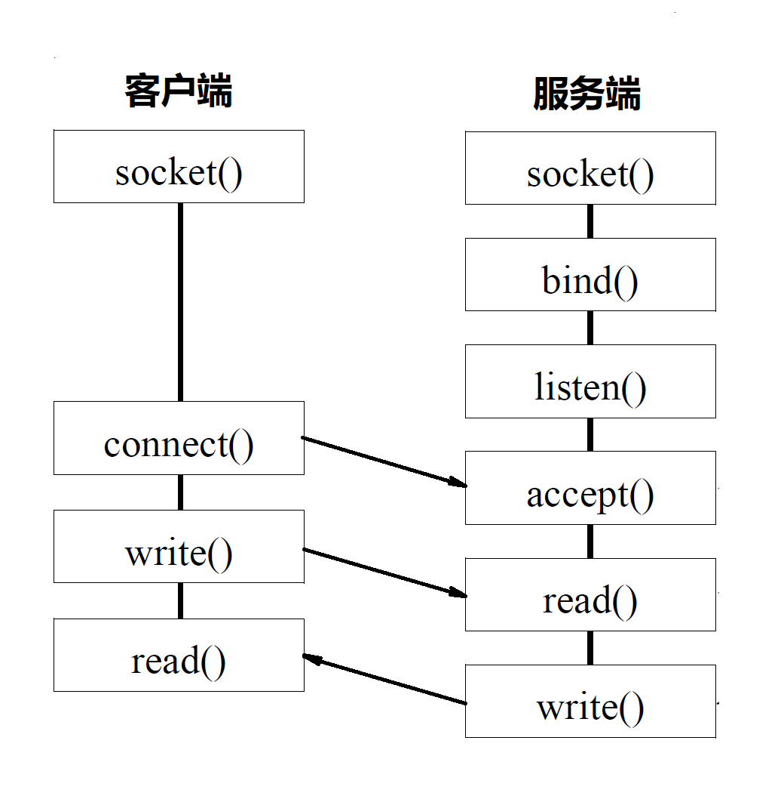</p>
<p>说TCP的Socket就是一个文件流，是非常准确的。因为，Socket在Linux中就是以文件的形式存在的。除此之外，还存在文件描述符。写入和读出，也是通过文件描述符。</p>
<p>在内核中，Socket是一个文件，那对应就有文件描述符。每一个进程都有一个数据结构task_struct，里面指向一个文件描述符数组，来列出这个进程打开的所有文件的文件描述符。文件描述符是一个整数，是这个数组的下标。</p>
<p>这个数组中的内容是一个指针，指向内核中所有打开的文件的列表。既然是一个文件，就会有一个inode，只不过Socket对应的inode不像真正的文件系统一样，保存在硬盘上的，而是在内存中的。在这个inode中，指向了Socket在内核中的Socket结构。</p>
<p>在这个结构里面，主要的是两个队列，一个是<strong>发送队列</strong>，一个是<strong>接收队列</strong>。在这两个队列里面保存的是一个缓存sk_buff。这个缓存里面能够看到完整的包的结构。看到这个，是不是能和前面讲过的收发包的场景联系起来了？</p>
<p>整个数据结构我也画了一张图。</p>
<p>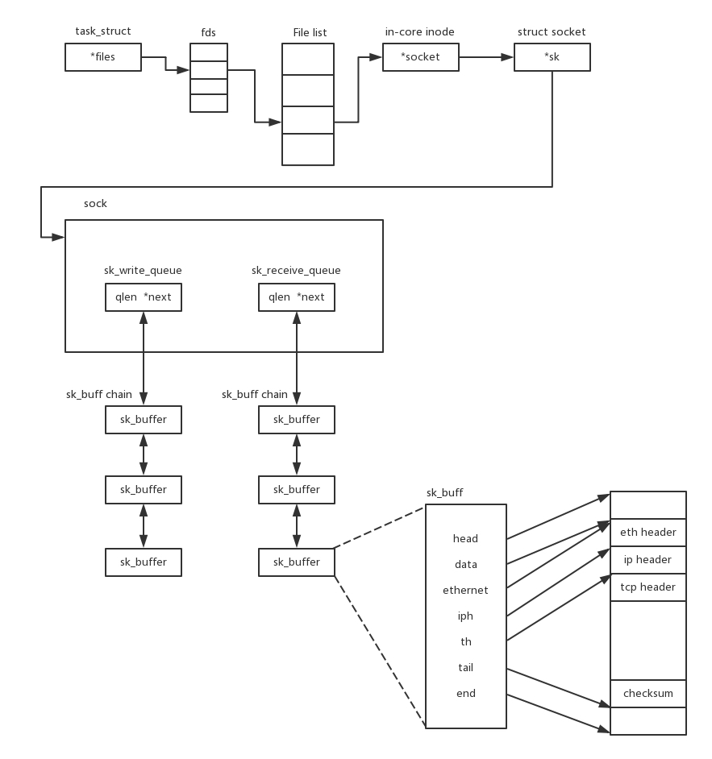</p>
<h2>基于UDP协议的Socket程序函数调用过程</h2>
<p>对于UDP来讲，过程有些不一样。UDP是没有连接的，所以不需要三次握手，也就不需要调用listen和connect，但是，UDP的的交互仍然需要IP和端口号，因而也需要bind。UDP是没有维护连接状态的，因而不需要每对连接建立一组Socket，而是只要有一个Socket，就能够和多个客户端通信。也正是因为没有连接状态，每次通信的时候，都调用sendto和recvfrom，都可以传入IP地址和端口。</p>
<p>这个图的内容就是基于UDP协议的Socket程序函数调用过程。</p>
<p>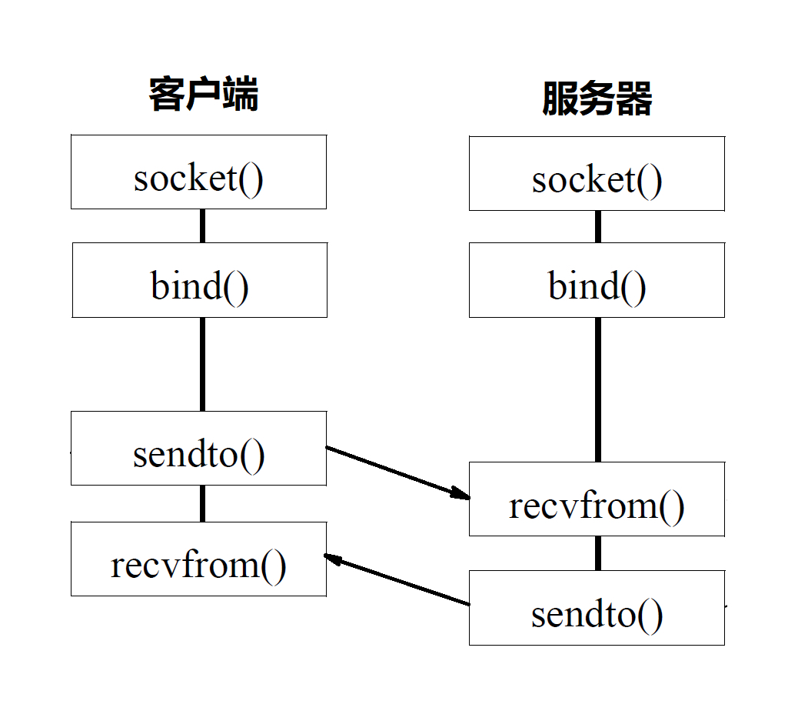</p>
<h2>服务器如何接更多的项目？</h2>
<p>会了这几个基本的Socket函数之后，你就可以轻松地写一个网络交互的程序了。就像上面的过程一样，在建立连接后，进行一个while循环。客户端发了收，服务端收了发。</p>
<p>当然这只是万里长征的第一步，因为如果使用这种方法，基本上只能一对一沟通。如果你是一个服务器，同时只能服务一个客户，肯定是不行的。这就相当于老板成立一个公司，只有自己一个人，自己亲自上来服务客户，只能干完了一家再干下一家，这样赚不来多少钱。</p>
<p>那作为老板你就要想了，我最多能接多少项目呢？当然是越多越好。</p>
<p>我们先来算一下理论值，也就是<strong>最大连接数</strong>，系统会用一个四元组来标识一个TCP连接。</p>
<pre><code>{本机IP, 本机端口, 对端IP, 对端端口}
</code></pre>
<p>服务器通常固定在某个本地端口上监听，等待客户端的连接请求。因此，服务端端TCP连接四元组中只有对端IP, 也就是客户端的IP和对端的端口，也即客户端的端口是可变的，因此，最大TCP连接数=客户端IP数×客户端端口数。对IPv4，客户端的IP数最多为2的32次方，客户端的端口数最多为2的16次方，也就是服务端单机最大TCP连接数，约为2的48次方。</p>
<p>当然，服务端最大并发TCP连接数远不能达到理论上限。首先主要是<strong>文件描述符限制</strong>，按照上面的原理，Socket都是文件，所以首先要通过ulimit配置文件描述符的数目；另一个限制是<strong>内存</strong>，按上面的数据结构，每个TCP连接都要占用一定内存，操作系统是有限的。</p>
<p>所以，作为老板，在资源有限的情况下，要想接更多的项目，就需要降低每个项目消耗的资源数目。</p>
<h3>方式一：将项目外包给其他公司（多进程方式）</h3>
<p>这就相当于你是一个代理，在那里监听来的请求。一旦建立了一个连接，就会有一个已连接Socket，这时候你可以创建一个子进程，然后将基于已连接Socket的交互交给这个新的子进程来做。就像来了一个新的项目，但是项目不一定是你自己做，可以再注册一家子公司，招点人，然后把项目转包给这家子公司做，以后对接就交给这家子公司了，你又可以去接新的项目了。</p>
<p>这里有一个问题是，如何创建子公司，并如何将项目移交给子公司呢？</p>
<p>在Linux下，创建子进程使用fork函数。通过名字可以看出，这是在父进程的基础上完全拷贝一个子进程。在Linux内核中，会复制文件描述符的列表，也会复制内存空间，还会复制一条记录当前执行到了哪一行程序的进程。显然，复制的时候在调用fork，复制完毕之后，父进程和子进程都会记录当前刚刚执行完fork。这两个进程刚复制完的时候，几乎一模一样，只是根据fork的返回值来区分到底是父进程，还是子进程。如果返回值是0，则是子进程；如果返回值是其他的整数，就是父进程。</p>
<p>进程复制过程我画在这里。</p>
<p>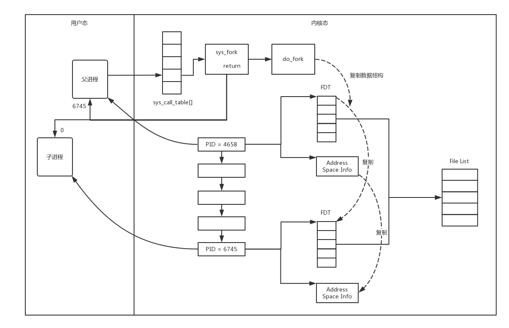</p>
<p>因为复制了文件描述符列表，而文件描述符都是指向整个内核统一的打开文件列表的，因而父进程刚才因为accept创建的已连接Socket也是一个文件描述符，同样也会被子进程获得。</p>
<p>接下来，子进程就可以通过这个已连接Socket和客户端进行互通了，当通信完毕之后，就可以退出进程，那父进程如何知道子进程干完了项目，要退出呢？还记得fork返回的时候，如果是整数就是父进程吗？这个整数就是子进程的ID，父进程可以通过这个ID查看子进程是否完成项目，是否需要退出。</p>
<h3>方式二：将项目转包给独立的项目组（多线程方式）</h3>
<p>上面这种方式你应该也能发现问题，如果每次接一个项目，都申请一个新公司，然后干完了，就注销掉这个公司，实在是太麻烦了。毕竟一个新公司要有新公司的资产，有新的办公家具，每次都买了再卖，不划算。</p>
<p>于是你应该想到了，我们可以使用<strong>线程</strong>。相比于进程来讲，这样要轻量级的多。如果创建进程相当于成立新公司，购买新办公家具，而创建线程，就相当于在同一个公司成立项目组。一个项目做完了，那这个项目组就可以解散，组成另外的项目组，办公家具可以共用。</p>
<p>在Linux下，通过pthread_create创建一个线程，也是调用do_fork。不同的是，虽然新的线程在task列表会新创建一项，但是很多资源，例如文件描述符列表、进程空间，还是共享的，只不过多了一个引用而已。</p>
<p>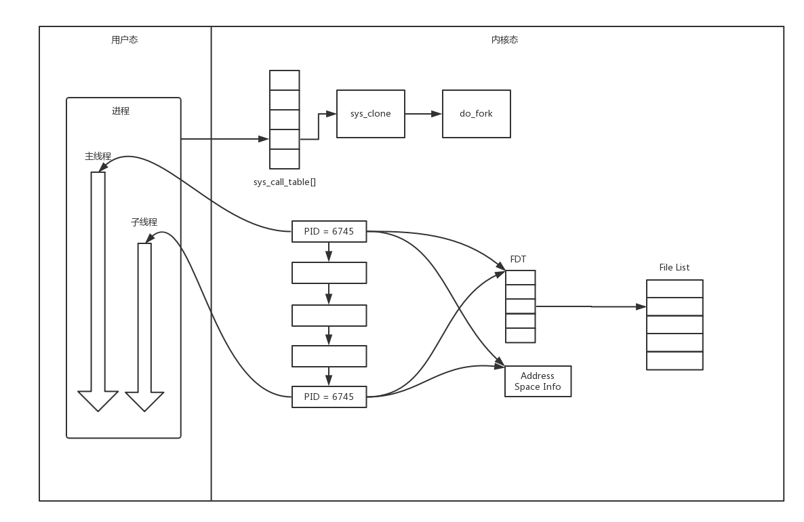 新的线程也可以通过已连接Socket处理请求，从而达到并发处理的目的。</p>
<p>上面基于进程或者线程模型的，其实还是有问题的。新到来一个TCP连接，就需要分配一个进程或者线程。一台机器无法创建很多进程或者线程。有个<strong>C10K</strong>，它的意思是一台机器要维护1万个连接，就要创建1万个进程或者线程，那么操作系统是无法承受的。如果维持1亿用户在线需要10万台服务器，成本也太高了。</p>
<p>其实C10K问题就是，你接项目接的太多了，如果每个项目都成立单独的项目组，就要招聘10万人，你肯定养不起，那怎么办呢？</p>
<h3>方式三：一个项目组支撑多个项目（IO多路复用，一个线程维护多个Socket）</h3>
<p>当然，一个项目组可以看多个项目了。这个时候，每个项目组都应该有个项目进度墙，将自己组看的项目列在那里，然后每天通过项目墙看每个项目的进度，一旦某个项目有了进展，就派人去盯一下。</p>
<p>由于Socket是文件描述符，因而某个线程盯的所有的Socket，都放在一个文件描述符集合fd_set中，这就是<strong>项目进度墙</strong>，然后调用select函数来监听文件描述符集合是否有变化。一旦有变化，就会依次查看每个文件描述符。那些发生变化的文件描述符在fd_set对应的位都设为1，表示Socket可读或者可写，从而可以进行读写操作，然后再调用select，接着盯着下一轮的变化。。</p>
<h3>方式四：一个项目组支撑多个项目（IO多路复用，从“派人盯着”到“有事通知”）</h3>
<p>上面select函数还是有问题的，因为每次Socket所在的文件描述符集合中有Socket发生变化的时候，都需要通过轮询的方式，也就是需要将全部项目都过一遍的方式来查看进度，这大大影响了一个项目组能够支撑的最大的项目数量。因而使用select，能够同时盯的项目数量由FD_SETSIZE限制。</p>
<p>如果改成事件通知的方式，情况就会好很多，项目组不需要通过轮询挨个盯着这些项目，而是当项目进度发生变化的时候，主动通知项目组，然后项目组再根据项目进展情况做相应的操作。</p>
<p>能完成这件事情的函数叫epoll，它在内核中的实现不是通过轮询的方式，而是通过注册callback函数的方式，当某个文件描述符发送变化的时候，就会主动通知。</p>
<p>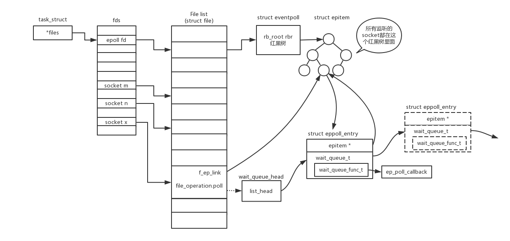</p>
<p>如图所示，假设进程打开了Socket m, n, x等多个文件描述符，现在需要通过epoll来监听是否这些Socket都有事件发生。其中epoll_create创建一个epoll对象，也是一个文件，也对应一个文件描述符，同样也对应着打开文件列表中的一项。在这项里面有一个红黑树，在红黑树里，要保存这个epoll要监听的所有Socket。</p>
<p>当epoll_ctl添加一个Socket的时候，其实是加入这个红黑树，同时红黑树里面的节点指向一个结构，将这个结构挂在被监听的Socket的事件列表中。当一个Socket来了一个事件的时候，可以从这个列表中得到epoll对象，并调用call back通知它。</p>
<p>这种通知方式使得监听的Socket数据增加的时候，效率不会大幅度降低，能够同时监听的Socket的数目也非常的多了。上限就为系统定义的、进程打开的最大文件描述符个数。因而，<strong>epoll被称为解决C10K问题的利器</strong>。</p>
<h2>小结</h2>
<p>好了，这一节就到这里了，我们来总结一下：</p>
<ul>
<li>你需要记住TCP和UDP的Socket的编程中，客户端和服务端都需要调用哪些函数；</li>
<li>写一个能够支撑大量连接的高并发的服务端不容易，需要多进程、多线程，而epoll机制能解决C10K问题。</li>
</ul>
<p>最后，给你留两个思考题：</p>
<ol>
<li>epoll是Linux上的函数，那你知道Windows上对应的机制是什么吗？如果想实现一个跨平台的程序，你知道应该怎么办吗？</li>
<li>自己写Socket还是挺复杂的，写个HTTP的应用可能简单一些。那你知道HTTP的工作机制吗？</li>
</ol>
<h1>14 讲HTTP协议：看个新闻原来这么麻烦</h1>
<p>前面讲述完<strong>传输层</strong>，接下来开始讲<strong>应用层</strong>的协议。从哪里开始讲呢，就从咱们最常用的HTTP协议开始。</p>
<p>HTTP协议，几乎是每个人上网用的第一个协议，同时也是很容易被人忽略的协议。</p>
<p>既然说看新闻，咱们就先登录 <a href="https://www.163.com/">http://www.163.com</a> 。</p>
<p><a href="https://www.163.com/">http://www.163.com</a> 是个URL，叫作<strong>统一资源定位符</strong>。之所以叫统一，是因为它是有格式的。HTTP称为协议，www.163.com是一个域名，表示互联网上的一个位置。有的URL会有更详细的位置标识，例如 <a href="https://www.163.com/index.html">http://www.163.com/index.html</a> 。正是因为这个东西是统一的，所以当你把这样一个字符串输入到浏览器的框里的时候，浏览器才知道如何进行统一处理。</p>
<h2>HTTP请求的准备</h2>
<p>浏览器会将www.163.com这个域名发送给DNS服务器，让它解析为IP地址。有关DNS的过程，其实非常复杂，这个在后面专门介绍DNS的时候，我会详细描述，这里我们先不管，反正它会被解析成为IP地址。那接下来是发送HTTP请求吗？</p>
<p>不是的，HTTP是基于TCP协议的，当然是要先建立TCP连接了，怎么建立呢？还记得第11节讲过的三次握手吗？</p>
<p>目前使用的HTTP协议大部分都是1.1。在1.1的协议里面，默认是开启了Keep-Alive的，这样建立的TCP连接，就可以在多次请求中复用。</p>
<p>学习了TCP之后，你应该知道，TCP的三次握手和四次挥手，还是挺费劲的。如果好不容易建立了连接，然后就做了一点儿事情就结束了，有点儿浪费人力和物力。</p>
<h2>HTTP请求的构建</h2>
<p>建立了连接以后，浏览器就要发送HTTP的请求。</p>
<p>请求的格式就像这样。</p>
<p></p>
<p>HTTP的报文大概分为三大部分。第一部分是<strong>请求行</strong>，第二部分是请求的<strong>首部</strong>，第三部分才是请求的<strong>正文实体</strong>。</p>
<h3>第一部分：请求行</h3>
<p>在请求行中，URL就是 <a href="https://www.163.com/">http://www.163.com</a> ，版本为HTTP 1.1。这里要说一下的，就是方法。方法有几种类型。</p>
<p>对于访问网页来讲，最常用的类型就是<strong>GET</strong>。顾名思义，GET就是去服务器获取一些资源。对于访问网页来讲，要获取的资源往往是一个页面。其实也有很多其他的格式，比如说返回一个JSON字符串，到底要返回什么，是由服务器端的实现决定的。</p>
<p>例如，在云计算中，如果我们的服务器端要提供一个基于HTTP协议的API，获取所有云主机的列表，这就会使用GET方法得到，返回的可能是一个JSON字符串。字符串里面是一个列表，列表里面是一项的云主机的信息。</p>
<p>另外一种类型叫做<strong>POST</strong>。它需要主动告诉服务端一些信息，而非获取。要告诉服务端什么呢？一般会放在正文里面。正文可以有各种各样的格式。常见的格式也是JSON。</p>
<p>例如，我们下一节要讲的支付场景，客户端就需要把“我是谁？我要支付多少？我要买啥？”告诉服务器，这就需要通过POST方法。</p>
<p>再如，在云计算里，如果我们的服务器端，要提供一个基于HTTP协议的创建云主机的API，也会用到POST方法。这个时候往往需要将“我要创建多大的云主机？多少CPU多少内存？多大硬盘？”这些信息放在JSON字符串里面，通过POST的方法告诉服务器端。</p>
<p>还有一种类型叫<strong>PUT</strong>，就是向指定资源位置上传最新内容。但是，HTTP的服务器往往是不允许上传文件的，所以PUT和POST就都变成了要传给服务器东西的方法。</p>
<p>在实际使用过程中，这两者还会有稍许的区别。POST往往是用来创建一个资源的，而PUT往往是用来修改一个资源的。</p>
<p>例如，云主机已经创建好了，我想对这个云主机打一个标签，说明这个云主机是生产环境的，另外一个云主机是测试环境的。那怎么修改这个标签呢？往往就是用PUT方法。</p>
<p>再有一种常见的就是<strong>DELETE</strong>。这个顾名思义就是用来删除资源的。例如，我们要删除一个云主机，就会调用DELETE方法。</p>
<h3>第二部分：首部字段</h3>
<p>请求行下面就是我们的首部字段。首部是key value，通过冒号分隔。这里面，往往保存了一些非常重要的字段。</p>
<p>例如，<strong>Accept-Charset</strong>，表示<strong>客户端可以接受的字符集</strong>。防止传过来的是另外的字符集，从而导致出现乱码。</p>
<p>再如，<strong>Content-Type</strong>是指<strong>正文的格式</strong>。例如，我们进行POST的请求，如果正文是JSON，那么我们就应该将这个值设置为JSON。</p>
<p>这里需要重点说一下的就是<strong>缓存</strong>。为啥要使用缓存呢？那是因为一个非常大的页面有很多东西。</p>
<p>例如，我浏览一个商品的详情，里面有这个商品的价格、库存、展示图片、使用手册等等。商品的展示图片会保持较长时间不变，而库存会根据用户购买的情况经常改变。如果图片非常大，而库存数非常小，如果我们每次要更新数据的时候都要刷新整个页面，对于服务器的压力就会很大。</p>
<p>对于这种高并发场景下的系统，在真正的业务逻辑之前，都需要有个接入层，将这些静态资源的请求拦在最外面。</p>
<p>这个架构的图就像这样。</p>
<p></p>
<p>其中DNS、CDN我在后面的章节会讲。和这一节关系比较大的就是Nginx这一层，它如何处理HTTP协议呢？对于静态资源，有Vanish缓存层。当缓存过期的时候，才会访问真正的Tomcat应用集群。</p>
<p>在HTTP头里面，<strong>Cache-control</strong>是用来<strong>控制缓存</strong>的。当客户端发送的请求中包含max-age指令时，如果判定缓存层中，资源的缓存时间数值比指定时间的数值小，那么客户端可以接受缓存的资源；当指定max-age值为0，那么缓存层通常需要将请求转发给应用集群。</p>
<p>另外，<strong>If-Modified-Since</strong>也是一个关于缓存的。也就是说，如果服务器的资源在某个时间之后更新了，那么客户端就应该下载最新的资源；如果没有更新，服务端会返回“304 Not Modified”的响应，那客户端就不用下载了，也会节省带宽。</p>
<p>到此为止，我们仅仅是拼凑起了HTTP请求的报文格式，接下来，浏览器会把它交给下一层传输层。怎么交给传输层呢？其实也无非是用Socket这些东西，只不过用的浏览器里，这些程序不需要你自己写，有人已经帮你写好了。</p>
<h2>HTTP请求的发送</h2>
<p>HTTP协议是基于TCP协议的，所以它使用面向连接的方式发送请求，通过stream二进制流的方式传给对方。当然，到了TCP层，它会把二进制流变成一个的报文段发送给服务器。</p>
<p>在发送给每个报文段的时候，都需要对方有一个回应ACK，来保证报文可靠地到达了对方。如果没有回应，那么TCP这一层会进行重新传输，直到可以到达。同一个包有可能被传了好多次，但是HTTP这一层不需要知道这一点，因为是TCP这一层在埋头苦干。</p>
<p>TCP层发送每一个报文的时候，都需要加上自己的地址（即源地址）和它想要去的地方（即目标地址），将这两个信息放到IP头里面，交给IP层进行传输。</p>
<p>IP层需要查看目标地址和自己是否是在同一个局域网。如果是，就发送ARP协议来请求这个目标地址对应的MAC地址，然后将源MAC和目标MAC放入MAC头，发送出去即可；如果不在同一个局域网，就需要发送到网关，还要需要发送ARP协议，来获取网关的MAC地址，然后将源MAC和网关MAC放入MAC头，发送出去。</p>
<p>网关收到包发现MAC符合，取出目标IP地址，根据路由协议找到下一跳的路由器，获取下一跳路由器的MAC地址，将包发给下一跳路由器。</p>
<p>这样路由器一跳一跳终于到达目标的局域网。这个时候，最后一跳的路由器能够发现，目标地址就在自己的某一个出口的局域网上。于是，在这个局域网上发送ARP，获得这个目标地址的MAC地址，将包发出去。</p>
<p>目标的机器发现MAC地址符合，就将包收起来；发现IP地址符合，根据IP头中协议项，知道自己上一层是TCP协议，于是解析TCP的头，里面有序列号，需要看一看这个序列包是不是我要的，如果是就放入缓存中然后返回一个ACK，如果不是就丢弃。</p>
<p>TCP头里面还有端口号，HTTP的服务器正在监听这个端口号。于是，目标机器自然知道是HTTP服务器这个进程想要这个包，于是将包发给HTTP服务器。HTTP服务器的进程看到，原来这个请求是要访问一个网页，于是就把这个网页发给客户端。</p>
<h2>HTTP返回的构建</h2>
<p>HTTP的返回报文也是有一定格式的。这也是基于HTTP 1.1的。</p>
<p></p>
<p>状态码会反应HTTP请求的结果。“200”意味着大吉大利；而我们最不想见的，就是“404”，也就是“服务端无法响应这个请求”。然后，短语会大概说一下原因。</p>
<p>接下来是返回首部的<strong>key value</strong>。</p>
<p>这里面，<strong>Retry-After</strong>表示，告诉客户端应该在多长时间以后再次尝试一下。“503错误”是说“服务暂时不再和这个值配合使用”。</p>
<p>在返回的头部里面也会有<strong>Content-Type</strong>，表示返回的是HTML，还是JSON。</p>
<p>构造好了返回的HTTP报文，接下来就是把这个报文发送出去。还是交给Socket去发送，还是交给TCP层，让TCP层将返回的HTML，也分成一个个小的段，并且保证每个段都可靠到达。</p>
<p>这些段加上TCP头后会交给IP层，然后把刚才的发送过程反向走一遍。虽然两次不一定走相同的路径，但是逻辑过程是一样的，一直到达客户端。</p>
<p>客户端发现MAC地址符合、IP地址符合，于是就会交给TCP层。根据序列号看是不是自己要的报文段，如果是，则会根据TCP头中的端口号，发给相应的进程。这个进程就是浏览器，浏览器作为客户端也在监听某个端口。</p>
<p>当浏览器拿到了HTTP的报文。发现返回“200”，一切正常，于是就从正文中将HTML拿出来。HTML是一个标准的网页格式。浏览器只要根据这个格式，展示出一个绚丽多彩的网页。</p>
<p>这就是一个正常的HTTP请求和返回的完整过程。</p>
<h2>HTTP 2.0</h2>
<p>当然HTTP协议也在不断地进化过程中，在HTTP1.1基础上便有了HTTP 2.0。</p>
<p>HTTP 1.1在应用层以纯文本的形式进行通信。每次通信都要带完整的HTTP的头，而且不考虑pipeline模式的话，每次的过程总是像上面描述的那样一去一回。这样在实时性、并发性上都存在问题。</p>
<p>为了解决这些问题，HTTP 2.0会对HTTP的头进行一定的压缩，将原来每次都要携带的大量key value在两端建立一个索引表，对相同的头只发送索引表中的索引。</p>
<p>另外，HTTP 2.0协议将一个TCP的连接中，切分成多个流，每个流都有自己的ID，而且流可以是客户端发往服务端，也可以是服务端发往客户端。它其实只是一个虚拟的通道。流是有优先级的。</p>
<p>HTTP 2.0还将所有的传输信息分割为更小的消息和帧，并对它们采用二进制格式编码。常见的帧有<strong>Header帧</strong>，用于传输Header内容，并且会开启一个新的流。再就是<strong>Data帧</strong>，用来传输正文实体。多个Data帧属于同一个流。</p>
<p>通过这两种机制，HTTP 2.0的客户端可以将多个请求分到不同的流中，然后将请求内容拆成帧，进行二进制传输。这些帧可以打散乱序发送， 然后根据每个帧首部的流标识符重新组装，并且可以根据优先级，决定优先处理哪个流的数据。</p>
<p>我们来举一个例子。</p>
<p>假设我们的一个页面要发送三个独立的请求，一个获取css，一个获取js，一个获取图片jpg。如果使用HTTP 1.1就是串行的，但是如果使用HTTP 2.0，就可以在一个连接里，客户端和服务端都可以同时发送多个请求或回应，而且不用按照顺序一对一对应。</p>
<p>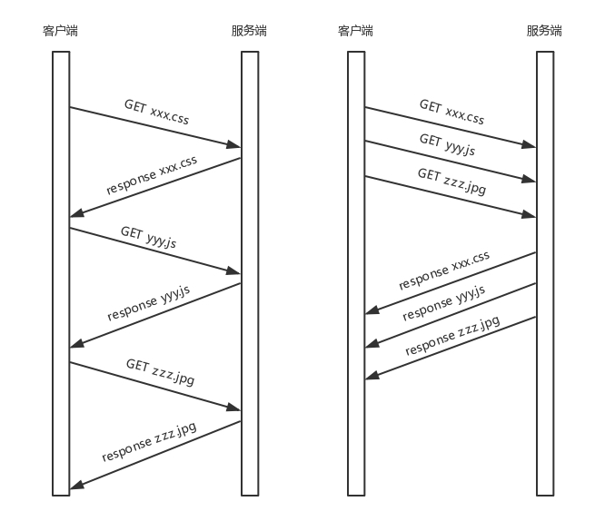</p>
<p>HTTP 2.0其实是将三个请求变成三个流，将数据分成帧，乱序发送到一个TCP连接中。</p>
<p>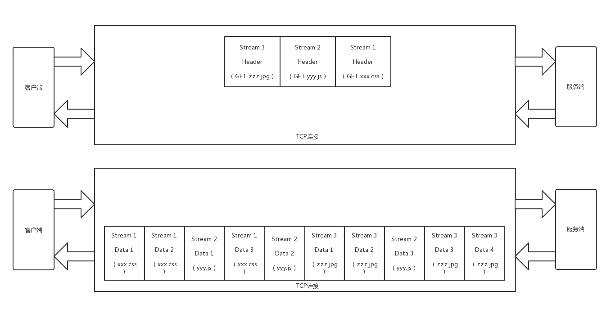</p>
<p>HTTP 2.0成功解决了HTTP 1.1的队首阻塞问题，同时，也不需要通过HTTP 1.x的pipeline机制用多条TCP连接来实现并行请求与响应；减少了TCP连接数对服务器性能的影响，同时将页面的多个数据css、js、 jpg等通过一个数据链接进行传输，能够加快页面组件的传输速度。</p>
<h2>QUIC协议的“城会玩”</h2>
<p>HTTP 2.0虽然大大增加了并发性，但还是有问题的。因为HTTP 2.0也是基于TCP协议的，TCP协议在处理包时是有严格顺序的。</p>
<p>当其中一个数据包遇到问题，TCP连接需要等待这个包完成重传之后才能继续进行。虽然HTTP 2.0通过多个stream，使得逻辑上一个TCP连接上的并行内容，进行多路数据的传输，然而这中间并没有关联的数据。一前一后，前面stream 2的帧没有收到，后面stream 1的帧也会因此阻塞。</p>
<p>于是，就又到了从TCP切换到UDP，进行“城会玩”的时候了。这就是Google的QUIC协议，接下来我们来看它是如何“城会玩”的。</p>
<h3>机制一：自定义连接机制</h3>
<p>我们都知道，一条TCP连接是由四元组标识的，分别是源 IP、源端口、目的 IP、目的端口。一旦一个元素发生变化时，就需要断开重连，重新连接。在移动互联情况下，当手机信号不稳定或者在WIFI和 移动网络切换时，都会导致重连，从而进行再次的三次握手，导致一定的时延。</p>
<p>这在TCP是没有办法的，但是基于UDP，就可以在QUIC自己的逻辑里面维护连接的机制，不再以四元组标识，而是以一个64位的随机数作为ID来标识，而且UDP是无连接的，所以当IP或者端口变化的时候，只要ID不变，就不需要重新建立连接。</p>
<h3>机制二：自定义重传机制</h3>
<p>前面我们讲过，TCP为了保证可靠性，通过使用<strong>序号</strong>和<strong>应答</strong>机制，来解决顺序问题和丢包问题。</p>
<p>任何一个序号的包发过去，都要在一定的时间内得到应答，否则一旦超时，就会重发这个序号的包。那怎么样才算超时呢？还记得我们提过的<strong>自适应重传算法</strong>吗？这个超时是通过<strong>采样往返时间RTT</strong>不断调整的。</p>
<p>其实，在TCP里面超时的采样存在不准确的问题。例如，发送一个包，序号为100，发现没有返回，于是再发送一个100，过一阵返回一个ACK101。这个时候客户端知道这个包肯定收到了，但是往返时间是多少呢？是ACK到达的时间减去后一个100发送的时间，还是减去前一个100发送的时间呢？事实是，第一种算法把时间算短了，第二种算法把时间算长了。</p>
<p>QUIC也有个序列号，是递增的。任何一个序列号的包只发送一次，下次就要加一了。例如，发送一个包，序号是100，发现没有返回；再次发送的时候，序号就是101了；如果返回的ACK 100，就是对第一个包的响应。如果返回ACK 101就是对第二个包的响应，RTT计算相对准确。</p>
<p>但是这里有一个问题，就是怎么知道包100和包101发送的是同样的内容呢？QUIC定义了一个offset概念。QUIC既然是面向连接的，也就像TCP一样，是一个数据流，发送的数据在这个数据流里面有个偏移量offset，可以通过offset查看数据发送到了哪里，这样只要这个offset的包没有来，就要重发；如果来了，按照offset拼接，还是能够拼成一个流。</p>
<p></p>
<h3>机制三：无阻塞的多路复用</h3>
<p>有了自定义的连接和重传机制，我们就可以解决上面HTTP 2.0的多路复用问题。</p>
<p>同HTTP 2.0一样，同一条QUIC连接上可以创建多个stream，来发送多个 HTTP 请求。但是，QUIC是基于UDP的，一个连接上的多个stream之间没有依赖。这样，假如stream2丢了一个UDP包，后面跟着stream3的一个UDP包，虽然stream2的那个包需要重传，但是stream3的包无需等待，就可以发给用户。</p>
<h3>机制四：自定义流量控制</h3>
<p>TCP的流量控制是通过<strong>滑动窗口协议</strong>。QUIC的流量控制也是通过window_update，来告诉对端它可以接受的字节数。但是QUIC的窗口是适应自己的多路复用机制的，不但在一个连接上控制窗口，还在一个连接中的每个stream控制窗口。</p>
<p>还记得吗？在TCP协议中，接收端的窗口的起始点是下一个要接收并且ACK的包，即便后来的包都到了，放在缓存里面，窗口也不能右移，因为TCP的ACK机制是基于序列号的累计应答，一旦ACK了一个系列号，就说明前面的都到了，所以只要前面的没到，后面的到了也不能ACK，就会导致后面的到了，也有可能超时重传，浪费带宽。</p>
<p>QUIC的ACK是基于offset的，每个offset的包来了，进了缓存，就可以应答，应答后就不会重发，中间的空挡会等待到来或者重发即可，而窗口的起始位置为当前收到的最大offset，从这个offset到当前的stream所能容纳的最大缓存，是真正的窗口大小。显然，这样更加准确。</p>
<p></p>
<p>另外，还有整个连接的窗口，需要对于所有的stream的窗口做一个统计。</p>
<h2>小结</h2>
<p>好了，今天就讲到这里，我们来总结一下：</p>
<ul>
<li>HTTP协议虽然很常用，也很复杂，重点记住GET、POST、 PUT、DELETE这几个方法，以及重要的首部字段；</li>
<li>HTTP 2.0通过头压缩、分帧、二进制编码、多路复用等技术提升性能；</li>
<li>QUIC协议通过基于UDP自定义的类似TCP的连接、重试、多路复用、流量控制技术，进一步提升性能。</li>
</ul>
<p>接下来，给你留两个思考题吧。</p>
<ol>
<li>QUIC是一个精巧的协议，所以它肯定不止今天我提到的四种机制，你知道它还有哪些吗？</li>
<li>这一节主要讲了如何基于HTTP浏览网页，如果要传输比较敏感的银行卡信息，该怎么办呢？</li>
</ol>
<h1>15 讲HTTPS协议：点外卖的过程原来这么复杂</h1>
<p>用HTTP协议，看个新闻还没有问题，但是换到更加严肃的场景中，就存在很多的安全风险。例如，你要下单做一次支付，如果还是使用普通的HTTP协议，那你很可能会被黑客盯上。</p>
<p>你发送一个请求，说我要点个外卖，但是这个网络包被截获了，于是在服务器回复你之前，黑客先假装自己就是外卖网站，然后给你回复一个假的消息说：“好啊好啊，来来来，银行卡号、密码拿来。”如果这时候你真把银行卡密码发给它，那你就真的上套了。</p>
<p>那怎么解决这个问题呢？当然一般的思路就是<strong>加密</strong>。加密分为两种方式一种是<strong>对称加密</strong>，一种是<strong>非对称加密</strong>。</p>
<p>在对称加密算法中，加密和解密使用的密钥是相同的。也就是说，加密和解密使用的是同一个密钥。因此，对称加密算法要保证安全性的话，密钥要做好保密。只能让使用的人知道，不能对外公开。</p>
<p>在非对称加密算法中，加密使用的密钥和解密使用的密钥是不相同的。一把是作为公开的公钥，另一把是作为谁都不能给的私钥。公钥加密的信息，只有私钥才能解密。私钥加密的信息，只有公钥才能解密。</p>
<p>因为对称加密算法相比非对称加密算法来说，效率要高得多，性能也好，所以交互的场景下多用对称加密。</p>
<h2>对称加密</h2>
<p>假设你和外卖网站约定了一个密钥，你发送请求的时候用这个密钥进行加密，外卖网站用同样的密钥进行解密。这样就算中间的黑客截获了你的请求，但是它没有密钥，还是破解不了。</p>
<p>这看起来很完美，但是中间有个问题，你们两个怎么来约定这个密钥呢？如果这个密钥在互联网上传输，也是很有可能让黑客截获的。黑客一旦截获这个秘钥，它可以佯作不知，静静地等着你们两个交互。这时候你们之间互通的任何消息，它都能截获并且查看，就等你把银行卡账号和密码发出来。</p>
<p>我们在谍战剧里面经常看到这样的场景，就是特工破译的密码会有个密码本，截获无线电台，通过密码本就能将原文破解出来。怎么把密码本给对方呢？只能通过<strong>线下传输</strong>。</p>
<p>比如，你和外卖网站偷偷约定时间地点，它给你一个纸条，上面写着你们两个的密钥，然后说以后就用这个密钥在互联网上定外卖了。当然你们接头的时候，也会先约定一个口号，什么“天王盖地虎”之类的，口号对上了，才能把纸条给它。但是，“天王盖地虎”同样也是对称加密密钥，同样存在如何把“天王盖地虎”约定成口号的问题。而且在谍战剧中一对一接头可能还可以，在互联网应用中，客户太多，这样是不行的。</p>
<h2>非对称加密</h2>
<p>所以，只要是对称加密，就会永远在这个死循环里出不来，这个时候，就需要非对称加密介入进来。</p>
<p>非对称加密的私钥放在外卖网站这里，不会在互联网上传输，这样就能保证这个秘钥的私密性。但是，对应私钥的公钥，是可以在互联网上随意传播的，只要外卖网站把这个公钥给你，你们就可以愉快地互通了。</p>
<p>比如说你用公钥加密，说“我要定外卖”，黑客在中间就算截获了这个报文，因为它没有私钥也是解不开的，所以这个报文可以顺利到达外卖网站，外卖网站用私钥把这个报文解出来，然后回复，“那给我银行卡和支付密码吧”。</p>
<p>先别太乐观，这里还是有问题的。回复的这句话，是外卖网站拿私钥加密的，互联网上人人都可以把它打开，当然包括黑客。那外卖网站可以拿公钥加密吗？当然不能，因为它自己的私钥只有它自己知道，谁也解不开。</p>
<p>另外，这个过程还有一个问题，黑客也可以模拟发送“我要定外卖”这个过程的，因为它也有外卖网站的公钥。</p>
<p>为了解决这个问题，看来一对公钥私钥是不够的，客户端也需要有自己的公钥和私钥，并且客户端要把自己的公钥，给外卖网站。</p>
<p>这样，客户端给外卖网站发送的时候，用外卖网站的公钥加密。而外卖网站给客户端发送消息的时候，使用客户端的公钥。这样就算有黑客企图模拟客户端获取一些信息，或者半路截获回复信息，但是由于它没有私钥，这些信息它还是打不开。</p>
<h2>数字证书</h2>
<p>不对称加密也会有同样的问题，如何将不对称加密的公钥给对方呢？一种是放在一个公网的地址上，让对方下载；另一种就是在建立连接的时候，传给对方。</p>
<p>这两种方法有相同的问题，那就是，作为一个普通网民，你怎么鉴别别人给你的公钥是对的。会不会有人冒充外卖网站，发给你一个它的公钥。接下来，你和它所有的互通，看起来都是没有任何问题的。毕竟每个人都可以创建自己的公钥和私钥。</p>
<p>例如，我自己搭建了一个网站cliu8site，可以通过这个命令先创建私钥。</p>
<pre><code>openssl genrsa -out cliu8siteprivate.key 1024
</code></pre>
<p>然后，再根据这个私钥，创建对应的公钥。</p>
<pre><code>openssl rsa -in cliu8siteprivate.key -pubout -outcliu8sitepublic.pem
</code></pre>
<p>这个时候就需要权威部门的介入了，就像每个人都可以打印自己的简历，说自己是谁，但是有公安局盖章的，就只有户口本，这个才能证明你是你。这个由权威部门颁发的称为<strong>证书</strong>（<strong>Certificate</strong>）。</p>
<p>证书里面有什么呢？当然应该有<strong>公钥</strong>，这是最重要的；还有证书的<strong>所有者</strong>，就像户口本上有你的姓名和身份证号，说明这个户口本是你的；另外还有证书的<strong>发布机构</strong>和证书的<strong>有效期</strong>，这个有点像身份证上的机构是哪个区公安局，有效期到多少年。</p>
<p>这个证书是怎么生成的呢？会不会有人假冒权威机构颁发证书呢？就像有假身份证、假户口本一样。生成证书需要发起一个证书请求，然后将这个请求发给一个权威机构去认证，这个权威机构我们称为<strong>CA</strong>（ <strong>Certificate Authority</strong>）。</p>
<p>证书请求可以通过这个命令生成。</p>
<pre><code>openssl req -key cliu8siteprivate.key -new -out cliu8sitecertificate.req
</code></pre>
<p>将这个请求发给权威机构，权威机构会给这个证书卡一个章，我们称为**签名算法。**问题又来了，那怎么签名才能保证是真的权威机构签名的呢？当然只有用只掌握在权威机构手里的东西签名了才行，这就是CA的私钥。</p>
<p>签名算法大概是这样工作的：一般是对信息做一个Hash计算，得到一个Hash值，这个过程是不可逆的，也就是说无法通过Hash值得出原来的信息内容。在把信息发送出去时，把这个Hash值加密后，作为一个签名和信息一起发出去。</p>
<p>权威机构给证书签名的命令是这样的。</p>
<pre><code>openssl x509 -req -in cliu8sitecertificate.req -CA cacertificate.pem -CAkey caprivate.key -out cliu8sitecertificate.pem
</code></pre>
<p>这个命令会返回Signature ok，而cliu8sitecertificate.pem就是签过名的证书。CA用自己的私钥给外卖网站的公钥签名，就相当于给外卖网站背书，形成了外卖网站的证书。</p>
<p>我们来查看这个证书的内容。</p>
<pre><code>openssl x509 -in cliu8sitecertificate.pem -noout -text 
</code></pre>
<p>这里面有个Issuer，也即证书是谁颁发的；Subject，就是证书颁发给谁；Validity是证书期限；Public-key是公钥内容；Signature Algorithm是签名算法。</p>
<p>这下好了，你不会从外卖网站上得到一个公钥，而是会得到一个证书，这个证书有个发布机构CA，你只要得到这个发布机构CA的公钥，去解密外卖网站证书的签名，如果解密成功了，Hash也对的上，就说明这个外卖网站的公钥没有啥问题。</p>
<p>你有没有发现，又有新问题了。要想验证证书，需要CA的公钥，问题是，你怎么确定CA的公钥就是对的呢？</p>
<p>所以，CA的公钥也需要更牛的CA给它签名，然后形成CA的证书。要想知道某个CA的证书是否可靠，要看CA的上级证书的公钥，能不能解开这个CA的签名。就像你不相信区公安局，可以打电话问市公安局，让市公安局确认区公安局的合法性。这样层层上去，直到全球皆知的几个著名大CA，称为<strong>root CA</strong>，做最后的背书。通过这种<strong>层层授信背书</strong>的方式，从而保证了非对称加密模式的正常运转。</p>
<p>除此之外，还有一种证书，称为<strong>Self-Signed Certificate</strong>，就是自己给自己签名。这个给人一种“我就是我，你爱信不信”的感觉。这里我就不多说了。</p>
<h2>HTTPS的工作模式</h2>
<p>我们可以知道，非对称加密在性能上不如对称加密，那是否能将两者结合起来呢？例如，公钥私钥主要用于传输对称加密的秘钥，而真正的双方大数据量的通信都是通过对称加密进行的。</p>
<p>当然是可以的。这就是HTTPS协议的总体思路。</p>
<p>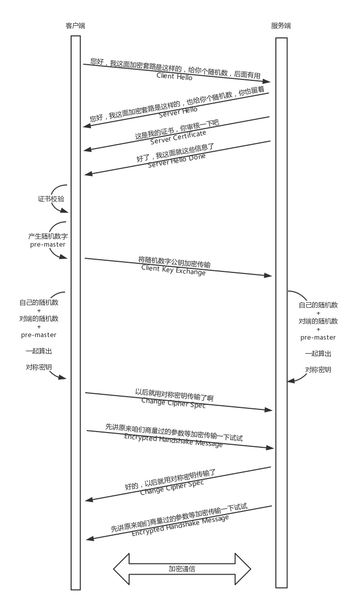</p>
<p>当你登录一个外卖网站的时候，由于是HTTPS，客户端会发送Client Hello消息到服务器，以明文传输TLS版本信息、加密套件候选列表、压缩算法候选列表等信息。另外，还会有一个随机数，在协商对称密钥的时候使用。</p>
<p>这就类似在说：“您好，我想定外卖，但你要保密我吃的是什么。这是我的加密套路，再给你个随机数，你留着。”</p>
<p>然后，外卖网站返回Server Hello消息, 告诉客户端，服务器选择使用的协议版本、加密套件、压缩算法等，还有一个随机数，用于后续的密钥协商。</p>
<p>这就类似在说：“您好，保密没问题，你的加密套路还挺多，咱们就按套路2来吧，我这里也有个随机数，你也留着。”</p>
<p>然后，外卖网站会给你一个服务器端的证书，然后说：“Server Hello Done，我这里就这些信息了。”</p>
<p>你当然不相信这个证书，于是你从自己信任的CA仓库中，拿CA的证书里面的公钥去解密外卖网站的证书。如果能够成功，则说明外卖网站是可信的。这个过程中，你可能会不断往上追溯CA、CA的CA、CA的CA的CA，反正直到一个授信的CA，就可以了。</p>
<p>证书验证完毕之后，觉得这个外卖网站可信，于是客户端计算产生随机数字Pre-master，发送Client Key Exchange，用证书中的公钥加密，再发送给服务器，服务器可以通过私钥解密出来。</p>
<p>到目前为止，无论是客户端还是服务器，都有了三个随机数，分别是：自己的、对端的，以及刚生成的Pre-Master随机数。通过这三个随机数，可以在客户端和服务器产生相同的对称密钥。</p>
<p>有了对称密钥，客户端就可以说：“Change Cipher Spec，咱们以后都采用协商的通信密钥和加密算法进行加密通信了。”</p>
<p>然后发送一个Encrypted Handshake Message，将已经商定好的参数等，采用协商密钥进行加密，发送给服务器用于数据与握手验证。</p>
<p>同样，服务器也可以发送Change Cipher Spec，说：“没问题，咱们以后都采用协商的通信密钥和加密算法进行加密通信了”，并且也发送Encrypted Handshake Message的消息试试。当双方握手结束之后，就可以通过对称密钥进行加密传输了。</p>
<p>这个过程除了加密解密之外，其他的过程和HTTP是一样的，过程也非常复杂。</p>
<p>上面的过程只包含了HTTPS的单向认证，也即客户端验证服务端的证书，是大部分的场景，也可以在更加严格安全要求的情况下，启用双向认证，双方互相验证证书。</p>
<h2>重放与篡改</h2>
<p>其实，这里还有一些没有解决的问题，例如重放和篡改的问题。</p>
<p>没错，有了加密和解密，黑客截获了包也打不开了，但是它可以发送N次。这个往往通过Timestamp和Nonce随机数联合起来，然后做一个不可逆的签名来保证。</p>
<p>Nonce随机数保证唯一，或者Timestamp和Nonce合起来保证唯一，同样的，请求只接受一次，于是服务器多次受到相同的Timestamp和Nonce，则视为无效即可。</p>
<p>如果有人想篡改Timestamp和Nonce，还有签名保证不可篡改性，如果改了用签名算法解出来，就对不上了，可以丢弃了。</p>
<h2>小结</h2>
<p>好了，这一节就到这里了，我们来总结一下。</p>
<ul>
<li>加密分对称加密和非对称加密。对称加密效率高，但是解决不了密钥传输问题；非对称加密可以解决这个问题，但是效率不高。</li>
<li>非对称加密需要通过证书和权威机构来验证公钥的合法性。</li>
<li>HTTPS是综合了对称加密和非对称加密算法的HTTP协议。既保证传输安全，也保证传输效率。</li>
</ul>
<p>最后，给你留两个思考题：</p>
<ol>
<li>HTTPS协议比较复杂，沟通过程太繁复，这样会导致效率问题，那你知道有哪些手段可以解决这些问题吗？</li>
<li>HTTP和HTTPS协议的正文部分传输个JSON什么的还好，如果播放视频，就有问题了，那这个时候，应该使用什么协议呢？</li>
</ol>
<h1>16 讲流媒体协议：如何在直播里看到美女帅哥？</h1>
<p>最近直播比较火，很多人都喜欢看直播，那一个直播系统里面都有哪些组成部分，都使用了什么协议呢？</p>
<p>无论是直播还是点播，其实都是对于视频数据的传输。一提到视频，大家都爱看，但是一提到视频技术，大家都头疼，因为名词实在是太多了。</p>
<h2>三个名词系列</h2>
<p>我这里列三个名词系列，你先大致有个印象。</p>
<ul>
<li><strong>名词系列一</strong>：AVI、MPEG、RMVB、MP4、MOV、FLV、WebM、WMV、ASF、MKV。例如RMVB和MP4，看着是不是很熟悉？</li>
<li><strong>名词系列二</strong>：H.261、 H.262、H.263、H.264、H.265。这个是不是就没怎么听过了？别着急，你先记住，要重点关注H.264。</li>
<li><strong>名词系列</strong>三：MPEG-1、MPEG-2、MPEG-4、MPEG-7。MPEG好像听说过，但是后面的数字是怎么回事？是不是又熟悉又陌生？</li>
</ul>
<p>这里，我想问你个问题，视频是什么？我说，其实就是快速播放一连串连续的图片。</p>
<p>每一张图片，我们称为一<strong>帧</strong>。只要每秒钟帧的数据足够多，也即播放得足够快。比如每秒30帧，以人的眼睛的敏感程度，是看不出这是一张张独立的图片的，这就是我们常说的<strong>帧率</strong>（<strong>FPS</strong>）。</p>
<p>每一张图片，都是由<strong>像素</strong>组成的，假设为1024*768（这个像素数不算多）。每个像素由RGB组成，每个8位，共24位。</p>
<p>我们来算一下，每秒钟的视频有多大？</p>
<p>30帧 × 1024 × 768 × 24 = 566,231,040Bits = 70,778,880Bytes</p>
<p>如果一分钟呢？4,246,732,800Bytes，已经是4个G了。</p>
<p>是不是不算不知道，一算吓一跳？这个数据量实在是太大，根本没办法存储和传输。如果这样存储，你的硬盘很快就满了；如果这样传输，那多少带宽也不够用啊！</p>
<p>怎么办呢？人们想到了<strong>编码</strong>，就是看如何用尽量少的Bit数保存视频，使播放的时候画面看起来仍然很精美。<strong>编码是一个压缩的过程。</strong></p>
<h2>视频和图片的压缩过程有什么特点？</h2>
<p>之所以能够对视频流中的图片进行压缩，因为视频和图片有这样一些特点。</p>
<ol>
<li><strong>空间冗余</strong>：图像的相邻像素之间有较强的相关性，一张图片相邻像素往往是渐变的，不是突变的，没必要每个像素都完整地保存，可以隔几个保存一个，中间的用算法计算出来。</li>
<li><strong>时间冗余</strong>：视频序列的相邻图像之间内容相似。一个视频中连续出现的图片也不是突变的，可以根据已有的图片进行预测和推断。</li>
<li><strong>视觉冗余</strong>：人的视觉系统对某些细节不敏感，因此不会每一个细节都注意到，可以允许丢失一些数据。</li>
<li><strong>编码冗余</strong>：不同像素值出现的概率不同，概率高的用的字节少，概率低的用的字节多，类似<a href="https://zh.wikipedia.org/wiki/霍夫曼编码">霍夫曼编码（Huffman Coding）</a>的思路。</li>
</ol>
<p>总之，用于编码的算法非常复杂，而且多种多样，但是编码过程其实都是类似的。</p>
<p>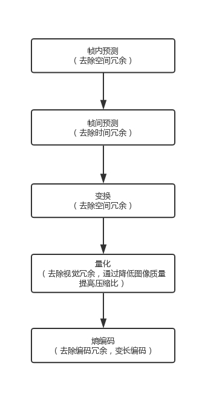</p>
<h2>视频编码的两大流派</h2>
<p>能不能形成一定的标准呢？要不然开发视频播放的人得累死了。当然能，我这里就给你介绍，视频编码的两大流派。</p>
<ul>
<li>流派一：ITU（International Telecommunications Union）的VCEG（Video Coding Experts Group），这个称为<strong>国际电联下的VCEG</strong>。既然是电信，可想而知，他们最初做视频编码，主要侧重传输。名词系列二，就是这个组织制定的标准。</li>
<li>流派二：ISO（International Standards Organization）的MPEG（Moving Picture Experts Group），这个是<strong>ISO旗下的MPEG</strong>，本来是做视频存储的。例如，编码后保存在VCD和DVD中。当然后来也慢慢侧重视频传输了。名词系列三，就是这个组织制定的标准。</li>
</ul>
<p>后来，ITU-T（国际电信联盟电信标准化部门，ITU Telecommunication Standardization Sector）与MPEG联合制定了H.264/MPEG-4 AVC，这才是我们这一节要重点关注的。</p>
<p>经过编码之后，生动活泼的一帧一帧的图像，就变成了一串串让人看不懂的二进制，这个二进制可以放在一个文件里面，按照一定的格式保存起来，这就是名词系列一。</p>
<p>其实这些就是视频保存成文件的格式。例如，前几个字节是什么意义，后几个字节是什么意义，然后是数据，数据中保存的就是编码好的结果。</p>
<h2>如何在直播里看到帅哥美女？</h2>
<p>当然，这个二进制也可以通过某种网络协议进行封装，放在互联网上传输，这个时候就可以进行网络直播了。</p>
<p>网络协议将<strong>编码</strong>好的视频流，从主播端推送到服务器，在服务器上有个运行了同样协议的服务端来接收这些网络包，从而得到里面的视频流，这个过程称为<strong>接流</strong>。</p>
<p>服务端接到视频流之后，可以对视频流进行一定的处理，例如<strong>转码</strong>，也即从一个编码格式，转成另一种格式。因为观众使用的客户端千差万别，要保证他们都能看到直播。</p>
<p><strong>流处理</strong>完毕之后，就可以等待观众的客户端来请求这些视频流。观众的客户端请求的过程称为<strong>拉流</strong>。</p>
<p>如果有非常多的观众，同时看一个视频直播，那都从一个服务器上<strong>拉流</strong>，压力太大了，因而需要一个视频的<strong>分发</strong>网络，将视频预先加载到就近的边缘节点，这样大部分观众看的视频，是从边缘节点拉取的，就能降低服务器的压力。</p>
<p>当观众的客户端将视频流拉下来之后，就需要进行<strong>解码</strong>，也即通过上述过程的逆过程，将一串串看不懂的二进制，再转变成一帧帧生动的图片，在客户端<strong>播放</strong>出来，这样你就能看到美女帅哥啦。</p>
<p>整个直播过程，可以用这个的图来描述。</p>
<p></p>
<p>接下来，我们依次来看一下每个过程。</p>
<h3>编码：如何将丰富多彩的图片变成二进制流？</h3>
<p>虽然我们说视频是一张张图片的序列，但是如果每张图片都完整，就太大了，因而会将视频序列分成三种帧。</p>
<ul>
<li><strong>I帧</strong>，也称关键帧。里面是完整的图片，只需要本帧数据，就可以完成解码。</li>
<li><strong>P帧</strong>，前向预测编码帧。P帧表示的是这一帧跟之前的一个关键帧（或P帧）的差别，解码时需要用之前缓存的画面，叠加上和本帧定义的差别，生成最终画面。</li>
<li><strong>B帧</strong>，双向预测内插编码帧。B帧记录的是本帧与前后帧的差别。要解码B帧，不仅要取得之前的缓存画面，还要解码之后的画面，通过前后画面的数据与本帧数据的叠加，取得最终的画面。</li>
</ul>
<p>可以看出，I帧最完整，B帧压缩率最高，而压缩后帧的序列，应该是在IBBP的间隔出现的。这就是<strong>通过时序进行编码</strong>。</p>
<p></p>
<p>在一帧中，分成多个片，每个片中分成多个宏块，每个宏块分成多个子块，这样将一张大的图分解成一个个小块，可以方便进行<strong>空间上的编码</strong>。</p>
<p>尽管时空非常立体的组成了一个序列，但是总归还是要压缩成一个二进制流。这个流是有结构的，是一个个的<strong>网络提取层单元</strong>（<strong>NALU</strong>，<strong>Network Abstraction Layer Unit</strong>）。变成这种格式就是为了传输，因为网络上的传输，默认的是一个个的包，因而这里也就分成了一个个的单元。</p>
<p></p>
<p>每一个NALU首先是一个起始标识符，用于标识NALU之间的间隔；然后是NALU的头，里面主要配置了NALU的类型；最终Payload里面是NALU承载的数据。</p>
<p>在NALU头里面，主要的内容是类型<strong>NAL Type</strong>。</p>
<ul>
<li>0x07表示SPS，是序列参数集， 包括一个图像序列的所有信息，如图像尺寸、视频格式等。</li>
<li>0x08表示PPS，是图像参数集，包括一个图像的所有分片的所有相关信息，包括图像类型、序列号等。</li>
</ul>
<p>在传输视频流之前，必须要传输这两类参数，不然无法解码。为了保证容错性，每一个I帧前面，都会传一遍这两个参数集合。</p>
<p>如果NALU Header里面的表示类型是SPS或者PPS，则Payload中就是真正的参数集的内容。</p>
<p>如果类型是帧，则Payload中才是正的视频数据，当然也是一帧一帧存放的，前面说了，一帧的内容还是挺多的，因而每一个NALU里面保存的是一片。对于每一片，到底是I帧，还是P帧，还是B帧，在片结构里面也有个Header，这里面有个类型，然后是片的内容。</p>
<p>这样，整个格式就出来了，<strong>一个视频，可以拆分成一系列的帧，每一帧拆分成一系列的片，每一片都放在一个NALU里面，NALU之间都是通过特殊的起始标识符分隔，在每一个I帧的第一片前面，要插入单独保存SPS和PPS的NALU，最终形成一个长长的NALU序列</strong>。</p>
<h3>推流：如何把数据流打包传输到对端？</h3>
<p>那这个格式是不是就能够直接在网上传输到对端，开始直播了呢？其实还不是，还需要将这个二进制的流打包成网络包进行发送，这里我们使用<strong>RTMP协议</strong>。这就进入了第二个过程，<strong>推流</strong>。</p>
<p>RTMP是基于TCP的，因而肯定需要双方建立一个TCP的连接。在有TCP的连接的基础上，还需要建立一个RTMP的连接，也即在程序里面，你需要调用RTMP类库的Connect函数，显示创建一个连接。</p>
<p>RTMP为什么需要建立一个单独的连接呢？</p>
<p>因为它们需要商量一些事情，保证以后的传输能正常进行。主要就是两个事情，一个是<strong>版本号</strong>，如果客户端、服务器的版本号不一致，则不能工作。另一个就是<strong>时间戳</strong>，视频播放中，时间是很重要的，后面的数据流互通的时候，经常要带上时间戳的差值，因而一开始双方就要知道对方的时间戳。</p>
<p>未来沟通这些事情，需要发送六条消息：客户端发送C0、C1、 C2，服务器发送S0、 S1、 S2。</p>
<p>首先，客户端发送C0表示自己的版本号，不必等对方的回复，然后发送C1表示自己的时间戳。</p>
<p>服务器只有在收到C0的时候，才能返回S0，表明自己的版本号，如果版本不匹配，可以断开连接。</p>
<p>服务器发送完S0后，也不用等什么，就直接发送自己的时间戳S1。客户端收到S1的时候，发一个知道了对方时间戳的ACK C2。同理服务器收到C1的时候，发一个知道了对方时间戳的ACK S2。</p>
<p>于是，握手完成。</p>
<p></p>
<p>握手之后，双方需要互相传递一些控制信息，例如Chunk块的大小、窗口大小等。</p>
<p>真正传输数据的时候，还是需要创建一个流Stream，然后通过这个Stream来推流publish。</p>
<p>推流的过程，就是将NALU放在Message里面发送，这个也称为<strong>RTMP Packet包</strong>。Message的格式就像这样。</p>
<p></p>
<p>发送的时候，去掉NALU的起始标识符。因为这部分对于RTMP协议来讲没有用。接下来，将SPS和PPS参数集封装成一个RTMP包发送，然后发送一个个片的NALU。</p>
<p>RTMP在收发数据的时候并不是以Message为单位的，而是把Message拆分成Chunk发送，而且必须在一个Chunk发送完成之后，才能开始发送下一个Chunk。每个Chunk中都带有Message ID，表示属于哪个Message，接收端也会按照这个ID将Chunk组装成Message。</p>
<p>前面连接的时候，设置的Chunk块大小就是指这个Chunk。将大的消息变为小的块再发送，可以在低带宽的情况下，减少网络拥塞。</p>
<p>这有一个分块的例子，你可以看一下。</p>
<p>假设一个视频的消息长度为307，但是Chunk大小约定为128，于是会拆分为三个Chunk。</p>
<p>第一个Chunk的Type＝0，表示Chunk头是完整的；头里面Timestamp为1000，总长度Length 为307，类型为9，是个视频，Stream ID为12346，正文部分承担128个字节的Data。</p>
<p>第二个Chunk也要发送128个字节，Chunk头由于和第一个Chunk一样，因此采用Chunk Type＝3，表示头一样就不再发送了。</p>
<p>第三个Chunk要发送的Data的长度为307-128-128=51个字节，还是采用Type＝3。</p>
<p></p>
<p>就这样数据就源源不断到达流媒体服务器，整个过程就像这样。</p>
<p></p>
<p>这个时候，大量观看直播的观众就可以通过RTMP协议从流媒体服务器上拉取，但是这么多的用户量，都去同一个地方拉取，服务器压力会很大，而且用户分布在全国甚至全球，如果都去统一的一个地方下载，也会时延比较长，需要有分发网络。</p>
<p>分发网络分为<strong>中心</strong>和<strong>边缘</strong>两层。边缘层服务器部署在全国各地及横跨各大运营商里，和用户距离很近。中心层是流媒体服务集群，负责内容的转发。智能负载均衡系统，根据用户的地理位置信息，就近选择边缘服务器，为用户提供推/拉流服务。中心层也负责转码服务，例如，把RTMP协议的码流转换为HLS码流。</p>
<p></p>
<p>这套机制在后面的DNS、HTTPDNS、CDN的章节会更有详细的描述。</p>
<h3>拉流：观众的客户端如何看到视频？</h3>
<p>接下来，我们再来看观众的客户端通过RTMP拉流的过程。</p>
<p></p>
<p>先读到的是H.264的解码参数，例如SPS和PPS，然后对收到的NALU组成的一个个帧，进行解码，交给播发器播放，一个绚丽多彩的视频画面就出来了。</p>
<h2>小结</h2>
<p>好了，今天的内容就到这里了，我们来总结一下：</p>
<ul>
<li>视频名词比较多，编码两大流派达成了一致，都是通过时间、空间的各种算法来压缩数据；</li>
<li>压缩好的数据，为了传输组成一系列NALU，按照帧和片依次排列；</li>
<li>排列好的NALU，在网络传输的时候，要按照RTMP包的格式进行包装，RTMP的包会拆分成Chunk进行传输；</li>
<li>推送到流媒体集群的视频流经过转码和分发，可以被客户端通过RTMP协议拉取，然后组合为NALU，解码成视频格式进行播放。</li>
</ul>
<p>最后，给你留两个思考题：</p>
<ol>
<li>你觉得基于RTMP的视频流传输的机制存在什么问题？如何进行优化？</li>
<li>在线看视频之前，大家都是把电影下载下来看的，电影这么大，你知道如何快速下载吗？</li>
</ol>
<h1>17 讲P2P协议：我下小电影，99%急死你</h1>
<p>如果你想下载一个电影，一般会通过什么方式呢？</p>
<p>当然，最简单的方式就是通过<strong>HTTP</strong>进行下载。但是相信你有过这样的体验，通过浏览器下载的时候，只要文件稍微大点，下载的速度就奇慢无比。</p>
<p>还有种下载文件的方式，就是通过<strong>FTP</strong>，也即<strong>文件传输协议</strong>。FTP采用两个TCP连接来传输一个文件。</p>
<ul>
<li><strong>控制连接</strong>：服务器以被动的方式，打开众所周知用于FTP的端口21，客户端则主动发起连接。该连接将命令从客户端传给服务器，并传回服务器的应答。常用的命令有：list——获取文件目录；reter——取一个文件；store——存一个文件。</li>
<li><strong>数据连接</strong>：每当一个文件在客户端与服务器之间传输时，就创建一个数据连接。</li>
</ul>
<h2>FTP的两种工作模式</h2>
<p>每传输一个文件，都要建立一个全新的数据连接。FTP有两种工作模式，分别是<strong>主动模式</strong>（<strong>PORT</strong>）和<strong>被动模式</strong>（<strong>PASV</strong>），这些都是站在FTP服务器的角度来说的。</p>
<p>主动模式下，客户端随机打开一个大于1024的端口N，向服务器的命令端口21发起连接，同时开放N+1端口监听，并向服务器发出 “port N+1” 命令，由服务器从自己的数据端口20，主动连接到客户端指定的数据端口N+1。</p>
<p>被动模式下，当开启一个FTP连接时，客户端打开两个任意的本地端口N（大于1024）和N+1。第一个端口连接服务器的21端口，提交PASV命令。然后，服务器会开启一个任意的端口P（大于1024），返回“227 entering passive mode”消息，里面有FTP服务器开放的用来进行数据传输的端口。客户端收到消息取得端口号之后，会通过N+1号端口连接服务器的端口P，然后在两个端口之间进行数据传输。</p>
<h2>P2P是什么？</h2>
<p>但是无论是HTTP的方式，还是FTP的方式，都有一个比较大的缺点，就是<strong>难以解决单一服务器的带宽压力</strong>， 因为它们使用的都是传统的客户端服务器的方式。</p>
<p>后来，一种创新的、称为P2P的方式流行起来。<strong>P2P</strong>就是<strong>peer-to-peer</strong>。资源开始并不集中地存储在某些设备上，而是分散地存储在多台设备上。这些设备我们姑且称为peer。</p>
<p>想要下载一个文件的时候，你只要得到那些已经存在了文件的peer，并和这些peer之间，建立点对点的连接，而不需要到中心服务器上，就可以就近下载文件。一旦下载了文件，你也就成为peer中的一员，你旁边的那些机器，也可能会选择从你这里下载文件，所以当你使用P2P软件的时候，例如BitTorrent，往往能够看到，既有下载流量，也有上传的流量，也即你自己也加入了这个P2P的网络，自己从别人那里下载，同时也提供给其他人下载。可以想象，这种方式，参与的人越多，下载速度越快，一切完美。</p>
<h2>种子（.torrent）文件</h2>
<p>但是有一个问题，当你想下载一个文件的时候，怎么知道哪些peer有这个文件呢？</p>
<p>这就用到<strong>种子</strong>啦，也即咱们比较熟悉的**.torrent文件**。.torrent文件由两部分组成，分别是：<strong>announce</strong>（<strong>tracker URL</strong>）和<strong>文件信息</strong>。</p>
<p>文件信息里面有这些内容。</p>
<ul>
<li><strong>info区</strong>：这里指定的是该种子有几个文件、文件有多长、目录结构，以及目录和文件的名字。</li>
<li><strong>Name字段</strong>：指定顶层目录名字。</li>
<li><strong>每个段的大小</strong>：BitTorrent（简称BT）协议把一个文件分成很多个小段，然后分段下载。</li>
<li><strong>段哈希值</strong>：将整个种子中，每个段的SHA-1哈希值拼在一起。</li>
</ul>
<p>下载时，BT客户端首先解析.torrent文件，得到tracker地址，然后连接tracker服务器。tracker服务器回应下载者的请求，将其他下载者（包括发布者）的IP提供给下载者。下载者再连接其他下载者，根据.torrent文件，两者分别对方告知自己已经有的块，然后交换对方没有的数据。此时不需要其他服务器参与，并分散了单个线路上的数据流量，因此减轻了服务器的负担。</p>
<p>下载者每得到一个块，需要算出下载块的Hash验证码，并与.torrent文件中的对比。如果一样，则说明块正确，不一样则需要重新下载这个块。这种规定是为了解决下载内容的准确性问题。</p>
<p>从这个过程也可以看出，这种方式特别依赖tracker。tracker需要收集下载者信息的服务器，并将此信息提供给其他下载者，使下载者们相互连接起来，传输数据。虽然下载的过程是非中心化的，但是加入这个P2P网络的时候，都需要借助tracker中心服务器，这个服务器是用来登记有哪些用户在请求哪些资源。</p>
<p>所以，这种工作方式有一个弊端，一旦tracker服务器出现故障或者线路遭到屏蔽，BT工具就无法正常工作了。</p>
<h2>去中心化网络（DHT）</h2>
<p>那能不能彻底非中心化呢？</p>
<p>于是，后来就有了一种叫作<strong>DHT</strong>（<strong>Distributed Hash Table</strong>）的去中心化网络。每个加入这个DHT网络的人，都要负责存储这个网络里的资源信息和其他成员的联系信息，相当于所有人一起构成了一个庞大的分布式存储数据库。</p>
<p>有一种著名的DHT协议，叫<strong>Kademlia协议</strong>。这个和区块链的概念一样，很抽象，我来详细讲一下这个协议。</p>
<p>任何一个BitTorrent启动之后，它都有两个角色。一个是<strong>peer</strong>，监听一个TCP端口，用来上传和下载文件，这个角色表明，我这里有某个文件。另一个角色<strong>DHT node</strong>，监听一个UDP的端口，通过这个角色，这个节点加入了一个DHT的网络。</p>
<p></p>
<p>在DHT网络里面，每一个DHT node都有一个ID。这个ID是一个很长的串。每个DHT node都有责任掌握一些知识，也就是<strong>文件索引</strong>，也即它应该知道某些文件是保存在哪些节点上。它只需要有这些知识就可以了，而它自己本身不一定就是保存这个文件的节点。</p>
<h2>哈希值</h2>
<p>当然，每个DHT node不会有全局的知识，也即不知道所有的文件保存在哪里，它只需要知道一部分。那应该知道哪一部分呢？这就需要用哈希算法计算出来。</p>
<p>每个文件可以计算出一个哈希值，而<strong>DHT node的ID是和哈希值相同长度的串</strong>。</p>
<p>DHT算法是这样规定的：如果一个文件计算出一个哈希值，则和这个哈希值一样的那个DHT node，就有责任知道从哪里下载这个文件，即便它自己没保存这个文件。</p>
<p>当然不一定这么巧，总能找到和哈希值一模一样的，有可能一模一样的DHT node也下线了，所以DHT算法还规定：除了一模一样的那个DHT node应该知道，ID和这个哈希值非常接近的N个DHT node也应该知道。</p>
<p>什么叫和哈希值接近呢？例如只修改了最后一位，就很接近；修改了倒数2位，也不远；修改了倒数3位，也可以接受。总之，凑齐了规定的N这个数就行。</p>
<p>刚才那个图里，文件1通过哈希运算，得到匹配ID的DHT node为node C，当然还会有其他的，我这里没有画出来。所以，node C有责任知道文件1的存放地址，虽然node C本身没有存放文件1。</p>
<p>同理，文件2通过哈希运算，得到匹配ID的DHT node为node E，但是node D和E的ID值很近，所以node D也知道。当然，文件2本身没有必要一定在node D和E里，但是碰巧这里就在E那有一份。</p>
<p>接下来一个新的节点node new上线了。如果想下载文件1，它首先要加入DHT网络，如何加入呢？</p>
<p>在这种模式下，种子.torrent文件里面就不再是tracker的地址了，而是一个list的node的地址，而所有这些node都是已经在DHT网络里面的。当然随着时间的推移，很可能有退出的，有下线的，但是我们假设，不会所有的都联系不上，总有一个能联系上。</p>
<p>node new只要在种子里面找到一个DHT node，就加入了网络。</p>
<p>node new会计算文件1的哈希值，并根据这个哈希值了解到，和这个哈希值匹配，或者很接近的node上知道如何下载这个文件，例如计算出来的哈希值就是node C。</p>
<p>但是node new不知道怎么联系上node C，因为种子里面的node列表里面很可能没有node C，但是它可以问，DHT网络特别像一个社交网络，node new只有去它能联系上的node问，你们知道不知道node C的联系方式呀？</p>
<p>在DHT网络中，每个node都保存了一定的联系方式，但是肯定没有node的所有联系方式。DHT网络中，节点之间通过互相通信，也会交流联系方式，也会删除联系方式。和人们的方式一样，你有你的朋友圈，你的朋友有它的朋友圈，你们互相加微信，就互相认识了，过一段时间不联系，就删除朋友关系。</p>
<p>有个理论是，社交网络中，任何两个人直接的距离不超过六度，也即你想联系比尔盖茨，也就六个人就能够联系到了。</p>
<p>所以，node new想联系node C，就去万能的朋友圈去问，并且求转发，朋友再问朋友，很快就能找到。如果找不到C，也能找到和C的ID很像的节点，它们也知道如何下载文件1。</p>
<p>在node C上，告诉node new，下载文件1，要去B、D、 F，于是node new选择和node B进行peer连接，开始下载，它一旦开始下载，自己本地也有文件1了，于是node new告诉node C以及和node C的ID很像的那些节点，我也有文件1了，可以加入那个文件拥有者列表了。</p>
<p>但是你会发现node new上没有文件索引，但是根据哈希算法，一定会有某些文件的哈希值是和node new的ID匹配上的。在DHT网络中，会有节点告诉它，你既然加入了咱们这个网络，你也有责任知道某些文件的下载地址。</p>
<p>好了，一切都分布式了。</p>
<p>这里面遗留几个细节的问题。</p>
<ul>
<li>DHT node ID以及文件哈希是个什么东西？</li>
</ul>
<p>节点ID是一个随机选择的160bits（20字节）空间，文件的哈希也使用这样的160bits空间。</p>
<ul>
<li>所谓ID相似，具体到什么程度算相似？</li>
</ul>
<p>在Kademlia网络中，距离是通过异或（XOR）计算的。我们就不以160bits举例了。我们以5位来举例。</p>
<p>01010与01000的距离，就是两个ID之间的异或值，为00010，也即为2。 01010与00010的距离为01000，也即为8,。01010与00011的距离为01001，也即8+1=9 。以此类推，高位不同的，表示距离更远一些；低位不同的，表示距离更近一些，总的距离为所有的不同的位的距离之和。</p>
<p>这个距离不能比喻为地理位置，因为在Kademlia网络中，位置近不算近，ID近才算近，所以我把这个距离比喻为社交距离，也即在朋友圈中的距离，或者社交网络中的距离。这个和你住的位置没有关系，和人的经历关系比较大。</p>
<p>还是以5位ID来举例，就像在领英中，排第一位的表示最近一份工作在哪里，第二位的表示上一份工作在哪里，然后第三位的是上上份工作，第四位的是研究生在哪里读，第五位的表示大学在哪里读。</p>
<p>如果你是一个猎头，在上面找候选人，当然最近的那份工作是最重要的。而对于工作经历越丰富的候选人，大学在哪里读的反而越不重要。</p>
<h2>DHT网络中的朋友圈是怎么维护的？</h2>
<p>就像人一样，虽然我们常联系人的只有少数，但是朋友圈里肯定是远近都有。DHT网络的朋友圈也是一样，远近都有，并且<strong>按距离分层</strong>。</p>
<p>假设某个节点的ID为01010，如果一个节点的ID，前面所有位数都与它相同，只有最后1位不同。这样的节点只有1个，为01011。与基础节点的异或值为00001，即距离为1；对于01010而言，这样的节点归为“k-bucket 1”。</p>
<p>如果一个节点的ID，前面所有位数都相同，从倒数第2位开始不同，这样的节点只有2个，即01000和01001，与基础节点的异或值为00010和00011，即距离范围为2和3；对于01010而言，这样的节点归为“k-bucket 2”。</p>
<p>如果一个节点的ID，前面所有位数相同，从倒数第i位开始不同，这样的节点只有2^(i-1)个，与基础节点的距离范围为[2^(i-1), 2^i)；对于01010而言，这样的节点归为“k-bucket i”。</p>
<p>最终到从倒数160位就开始都不同。</p>
<p>你会发现，差距越大，陌生人越多，但是朋友圈不能都放下，所以每一层都只放K个，这是参数可以配置。</p>
<h2>DHT网络是如何查找朋友的？</h2>
<p>假设，node A 的ID为00110，要找node B ID为10000，异或距离为10110，距离范围在[2^4, 2^5)，所以这个目标节点可能在“k-bucket 5”中，这就说明B的ID与A的ID从第5位开始不同，所以B可能在“k-bucket 5”中。</p>
<p>然后，A看看自己的k-bucket 5有没有B。如果有，太好了，找到你了；如果没有，在k-bucket 5里随便找一个C。因为是二进制，C、B都和A的第5位不同，那么C的ID第5位肯定与B相同，即它与B的距离会小于2^4，相当于比A、B之间的距离缩短了一半以上。</p>
<p>再请求C，在它自己的通讯录里，按同样的查找方式找一下B。如果C知道B，就告诉A；如果C也不知道B，那C按同样的搜索方法，可以在自己的通讯录里找到一个离B更近的D朋友（D、B之间距离小于2^3），把D推荐给A，A请求D进行下一步查找。</p>
<p>Kademlia的这种查询机制，是通过折半查找的方式来收缩范围，对于总的节点数目为N，最多只需要查询log2(N)次，就能够找到。</p>
<p>例如，图中这个最差的情况。</p>
<p></p>
<p>A和B每一位都不一样，所以相差31，A找到的朋友C，不巧正好在中间。和A的距离是16，和B距离为15，于是C去自己朋友圈找的时候，不巧找到D，正好又在中间，距离C为8，距离B为7。于是D去自己朋友圈找的时候，不巧找到E，正好又在中间，距离D为4，距离B为3，E在朋友圈找到F，距离E为2，距离B为1，最终在F的朋友圈距离1的地方找到B。当然这是最最不巧的情况，每次找到的朋友都不远不近，正好在中间。</p>
<p>如果碰巧了，在A的朋友圈里面有G，距离B只有3，然后在G的朋友圈里面一下子就找到了B，两次就找到了。</p>
<p>在DHT网络中，朋友之间怎么沟通呢？</p>
<p>Kademlia算法中，每个节点只有4个指令。</p>
<ul>
<li>PING：测试一个节点是否在线，还活着没，相当于打个电话，看还能打通不。</li>
<li>STORE：要求一个节点存储一份数据，既然加入了组织，有义务保存一份数据。</li>
<li>FIND_NODE：根据节点ID查找一个节点，就是给一个160位的ID，通过上面朋友圈的方式找到那个节点。</li>
<li>FIND_VALUE：根据KEY查找一个数据，实则上跟FIND_NODE非常类似。KEY就是文件对应的160位的ID，就是要找到保存了文件的节点。</li>
</ul>
<p>DHT网络中，朋友圈如何更新呢？</p>
<ul>
<li>每个bucket里的节点，都按最后一次接触的时间倒序排列，这就相当于，朋友圈里面最近联系过的人往往是最熟的。</li>
<li>每次执行四个指令中的任意一个都会触发更新。</li>
<li>当一个节点与自己接触时，检查它是否已经在k-bucket中，也就是说是否已经在朋友圈。如果在，那么将它挪到k-bucket列表的最底，也就是最新的位置，刚联系过，就置顶一下，方便以后多联系；如果不在，新的联系人要不要加到通讯录里面呢？假设通讯录已满的情况，PING一下列表最上面，也即最旧的一个节点。如果PING通了，将旧节点挪到列表最底，并丢弃新节点，老朋友还是留一下；如果PING不通，删除旧节点，并将新节点加入列表，这人联系不上了，删了吧。</li>
</ul>
<p>这个机制保证了任意节点加入和离开都不影响整体网络。</p>
<h2>小结</h2>
<p>好了，今天的讲解就到这里了，我们总结一下：</p>
<ul>
<li>下载一个文件可以使用HTTP或FTP，这两种都是集中下载的方式，而P2P则换了一种思路，采取非中心化下载的方式；</li>
<li>P2P也是有两种，一种是依赖于tracker的，也即元数据集中，文件数据分散；另一种是基于分布式的哈希算法，元数据和文件数据全部分散。</li>
</ul>
<p>接下来，给你留两个思考题：</p>
<ol>
<li>除了这种去中心化分布式哈希的算法，你还能想到其他的应用场景吗？</li>
<li>在前面所有的章节中，要下载一个文件，都需要使用域名。但是网络通信是使用IP的，那你知道怎么实现两者的映射机制吗？</li>
</ol>
<p>我们的专栏马上更新过半了，不知你掌握得如何？每节课后我留的思考题，你都有没有认真思考，并在留言区写下答案呢？我会从已发布的文章中选出一批认真留言的同学，赠送学习奖励礼券和我整理的独家网络协议知识图谱。</p>
<h1>18 讲DNS协议：网络世界的地址簿</h1>
<p>前面我们讲了平时常见的看新闻、支付、直播、下载等场景，现在网站的数目非常多，常用的网站就有二三十个，如果全部用IP地址进行访问，恐怕很难记住。于是，就需要一个地址簿，根据名称，就可以查看具体的地址。</p>
<p>例如，我要去西湖边的“外婆家”，这就是名称，然后通过地址簿，查看到底是哪条路多少号。</p>
<h2>DNS服务器</h2>
<p>在网络世界，也是这样的。你肯定记得住网站的名称，但是很难记住网站的IP地址，因而也需要一个地址簿，就是<strong>DNS服务器</strong>。</p>
<p>由此可见，DNS在日常生活中多么重要。每个人上网，都需要访问它，但是同时，这对它来讲也是非常大的挑战。一旦它出了故障，整个互联网都将瘫痪。另外，上网的人分布在全世界各地，如果大家都去同一个地方访问某一台服务器，时延将会非常大。因而，<strong>DNS服务器，一定要设置成高可用、高并发和分布式的</strong>。</p>
<p>于是，就有了这样<strong>树状的层次结构</strong>。</p>
<p></p>
<ul>
<li>根DNS服务器 ：返回顶级域DNS服务器的IP地址</li>
<li>顶级域DNS服务器：返回权威DNS服务器的IP地址</li>
<li>权威DNS服务器 ：返回相应主机的IP地址</li>
</ul>
<h2>DNS解析流程</h2>
<p>为了提高DNS的解析性能，很多网络都会就近部署DNS缓存服务器。于是，就有了以下的DNS解析流程。</p>
<ol>
<li>电脑客户端会发出一个DNS请求，问www.163.com的IP是啥啊，并发给本地域名服务器 (本地DNS)。那本地域名服务器 (本地DNS) 是什么呢？如果是通过DHCP配置，本地DNS由你的网络服务商（ISP），如电信、移动等自动分配，它通常就在你网络服务商的某个机房。</li>
<li>本地DNS收到来自客户端的请求。你可以想象这台服务器上缓存了一张域名与之对应IP地址的大表格。如果能找到 www.163.com，它直接就返回IP地址。如果没有，本地DNS会去问它的根域名服务器：“老大，能告诉我www.163.com的IP地址吗？”根域名服务器是最高层次的，全球共有13套。它不直接用于域名解析，但能指明一条道路。</li>
<li>根DNS收到来自本地DNS的请求，发现后缀是 .com，说：“哦，www.163.com啊，这个域名是由.com区域管理，我给你它的顶级域名服务器的地址，你去问问它吧。”</li>
<li>本地DNS转向问顶级域名服务器：“老二，你能告诉我www.163.com的IP地址吗？”顶级域名服务器就是大名鼎鼎的比如 .com、.net、 .org这些一级域名，它负责管理二级域名，比如 163.com，所以它能提供一条更清晰的方向。</li>
<li>顶级域名服务器说：“我给你负责 www.163.com 区域的权威DNS服务器的地址，你去问它应该能问到。”</li>
<li>本地DNS转向问权威DNS服务器：“您好，www.163.com 对应的IP是啥呀？”163.com的权威DNS服务器，它是域名解析结果的原出处。为啥叫权威呢？就是我的域名我做主。</li>
<li>权限DNS服务器查询后将对应的IP地址X.X.X.X告诉本地DNS。</li>
<li>本地DNS再将IP地址返回客户端，客户端和目标建立连接。</li>
</ol>
<p>至此，我们完成了DNS的解析过程。现在总结一下，整个过程我画成了一个图。</p>
<p></p>
<h2>负载均衡</h2>
<p>站在客户端角度，这是一次<strong>DNS递归查询过程。因为本地DNS全权为它效劳，它只要坐等结果即可。在这个过程中，DNS除了可以通过名称映射为IP地址，它还可以做另外一件事，就是负载均衡</strong>。</p>
<p>还是以访问“外婆家”为例，还是我们开头的“外婆家”，但是，它可能有很多地址，因为它在杭州可以有很多家。所以，如果一个人想去吃“外婆家”，他可以就近找一家店，而不用大家都去同一家，这就是负载均衡。</p>
<p>DNS首先可以做<strong>内部负载均衡</strong>。</p>
<p>例如，一个应用要访问数据库，在这个应用里面应该配置这个数据库的IP地址，还是应该配置这个数据库的域名呢？显然应该配置域名，因为一旦这个数据库，因为某种原因，换到了另外一台机器上，而如果有多个应用都配置了这台数据库的话，一换IP地址，就需要将这些应用全部修改一遍。但是如果配置了域名，则只要在DNS服务器里，将域名映射为新的IP地址，这个工作就完成了，大大简化了运维。</p>
<p>在这个基础上，我们可以再进一步。例如，某个应用要访问另外一个应用，如果配置另外一个应用的IP地址，那么这个访问就是一对一的。但是当被访问的应用撑不住的时候，我们其实可以部署多个。但是，访问它的应用，如何在多个之间进行负载均衡？只要配置成为域名就可以了。在域名解析的时候，我们只要配置策略，这次返回第一个IP，下次返回第二个IP，就可以实现负载均衡了。</p>
<p>另外一个更加重要的是，DNS还可以做<strong>全局负载均衡</strong>。</p>
<p>为了保证我们的应用高可用，往往会部署在多个机房，每个地方都会有自己的IP地址。当用户访问某个域名的时候，这个IP地址可以轮询访问多个数据中心。如果一个数据中心因为某种原因挂了，只要在DNS服务器里面，将这个数据中心对应的IP地址删除，就可以实现一定的高可用。</p>
<p>另外，我们肯定希望北京的用户访问北京的数据中心，上海的用户访问上海的数据中心，这样，客户体验就会非常好，访问速度就会超快。这就是全局负载均衡的概念。</p>
<h2>示例：DNS访问数据中心中对象存储上的静态资源</h2>
<p>我们通过DNS访问数据中心中对象存储上的静态资源为例，看一看整个过程。</p>
<p>假设全国有多个数据中心，托管在多个运营商，每个数据中心三个可用区（Available Zone）。对象存储通过跨可用区部署，实现高可用性。在每个数据中心中，都至少部署两个内部负载均衡器，内部负载均衡器后面对接多个对象存储的前置服务器（Proxy-server）。</p>
<p></p>
<ol>
<li>当一个客户端要访问object.yourcompany.com的时候，需要将域名转换为IP地址进行访问，所以它要请求本地DNS解析器。</li>
<li>本地DNS解析器先查看看本地的缓存是否有这个记录。如果有则直接使用，因为上面的过程太复杂了，如果每次都要递归解析，就太麻烦了。</li>
<li>如果本地无缓存，则需要请求本地的DNS服务器。</li>
<li>本地的DNS服务器一般部署在你的数据中心或者你所在的运营商的网络中，本地DNS服务器也需要看本地是否有缓存，如果有则返回，因为它也不想把上面的递归过程再走一遍。</li>
<li>至 7. 如果本地没有，本地DNS才需要递归地从根DNS服务器，查到.com的顶级域名服务器，最终查到 yourcompany.com 的权威DNS服务器，给本地DNS服务器，权威DNS服务器按说会返回真实要访问的IP地址。</li>
</ol>
<p>对于不需要做全局负载均衡的简单应用来讲，yourcompany.com的权威DNS服务器可以直接将 object.yourcompany.com这个域名解析为一个或者多个IP地址，然后客户端可以通过多个IP地址，进行简单的轮询，实现简单的负载均衡。</p>
<p>但是对于复杂的应用，尤其是跨地域跨运营商的大型应用，则需要更加复杂的全局负载均衡机制，因而需要专门的设备或者服务器来做这件事情，这就是<strong>全局负载均衡器</strong>（<strong>GSLB</strong>，<strong>Global Server Load Balance</strong>）。</p>
<p>在yourcompany.com的DNS服务器中，一般是通过配置CNAME的方式，给 object.yourcompany.com起一个别名，例如 object.vip.yourcomany.com，然后告诉本地DNS服务器，让它请求GSLB解析这个域名，GSLB就可以在解析这个域名的过程中，通过自己的策略实现负载均衡。</p>
<p>图中画了两层的GSLB，是因为分运营商和地域。我们希望不同运营商的客户，可以访问相同运营商机房中的资源，这样不跨运营商访问，有利于提高吞吐量，减少时延。</p>
<ol>
<li>第一层GSLB，通过查看请求它的本地DNS服务器所在的运营商，就知道用户所在的运营商。假设是移动，通过CNAME的方式，通过另一个别名 object.yd.yourcompany.com，告诉本地DNS服务器去请求第二层的GSLB。</li>
<li>第二层GSLB，通过查看请求它的本地DNS服务器所在的地址，就知道用户所在的地理位置，然后将距离用户位置比较近的Region里面，六个<strong>内部负载均衡</strong>（<strong>SLB</strong>，S<strong>erver Load Balancer</strong>）的地址，返回给本地DNS服务器。</li>
<li>本地DNS服务器将结果返回给本地DNS解析器。</li>
<li>本地DNS解析器将结果缓存后，返回给客户端。</li>
<li>客户端开始访问属于相同运营商的距离较近的Region 1中的对象存储，当然客户端得到了六个IP地址，它可以通过负载均衡的方式，随机或者轮询选择一个可用区进行访问。对象存储一般会有三个备份，从而可以实现对存储读写的负载均衡。</li>
</ol>
<h2>小结</h2>
<p>好了，这节内容就到这里了，我们来总结一下：</p>
<ul>
<li>DNS是网络世界的地址簿，可以通过域名查地址，因为域名服务器是按照树状结构组织的，因而域名查找是使用递归的方法，并通过缓存的方式增强性能；</li>
<li>在域名和IP的映射过程中，给了应用基于域名做负载均衡的机会，可以是简单的负载均衡，也可以根据地址和运营商做全局的负载均衡。</li>
</ul>
<p>最后，给你留两个思考题：</p>
<ol>
<li>全局负载均衡为什么要分地址和运营商呢？</li>
<li>全局负载均衡使用过程中，常常遇到失灵的情况，你知道具体有哪些情况吗？对应应该怎么来解决呢？</li>
</ol>
<h1>19 讲HTTPDNS：网络世界的地址簿也会指错路</h1>
<p>上一节我们知道了DNS的两项功能，第一是根据名称查到具体的地址，另外一个是可以针对多个地址做负载均衡，而且可以在多个地址中选择一个距离你近的地方访问。</p>
<p>然而有时候这个地址簿也经常给你指错路，明明距离你500米就有个吃饭的地方，非要把你推荐到5公里外。为什么会出现这样的情况呢？</p>
<p>还记得吗？当我们发出请求解析DNS的时候，首先，会先连接到运营商本地的DNS服务器，由这个服务器帮我们去整棵DNS树上进行解析，然后将解析的结果返回给客户端。但是本地的DNS服务器，作为一个本地导游，往往有自己的“小心思”。</p>
<h2>传统DNS存在哪些问题？</h2>
<h3>1.域名缓存问题</h3>
<p>它可以在本地做一个缓存，也就是说，不是每一个请求，它都会去访问权威DNS服务器，而是访问过一次就把结果缓存到自己本地，当其他人来问的时候，直接就返回这个缓存数据。</p>
<p>这就相当于导游去过一个饭店，自己脑子记住了地址，当有一个游客问的时候，他就凭记忆回答了，不用再去查地址簿。这样经常存在的一个问题是，人家那个饭店明明都已经搬了，结果作为导游，他并没有刷新这个缓存，结果你辛辛苦苦到了这个地点，发现饭店已经变成了服装店，你是不是会非常失望？</p>
<p>另外，有的运营商会把一些静态页面，缓存到本运营商的服务器内，这样用户请求的时候，就不用跨运营商进行访问，这样既加快了速度，也减少了运营商之间流量计算的成本。在域名解析的时候，不会将用户导向真正的网站，而是指向这个缓存的服务器。</p>
<p>很多情况下是看不出问题的，但是当页面更新，用户会访问到老的页面，问题就出来了。例如，你听说一个餐馆推出了一个新菜，你想去尝一下。结果导游告诉你，在这里吃也是一样的。有的游客会觉得没问题，但是对于想尝试新菜的人来说，如果导游说带你去，但其实并没有吃到新菜，你是不是也会非常失望呢？</p>
<p>再就是本地的缓存，往往使得全局负载均衡失败，因为上次进行缓存的时候，缓存中的地址不一定是这次访问离客户最近的地方，如果把这个地址返回给客户，那肯定就会绕远路。</p>
<p>就像上一次客户要吃西湖醋鱼的事，导游知道西湖边有一家，因为当时游客就在西湖边，可是，下一次客户在灵隐寺，想吃西湖醋鱼的时候，导游还指向西湖边的那一家，那这就绕的太远了。</p>
<p></p>
<h3>2.域名转发问题</h3>
<p>缓存问题还是说本地域名解析服务，还是会去权威DNS服务器中查找，只不过不是每次都要查找。可以说这还是大导游、大中介。还有一些小导游、小中介，有了请求之后，直接转发给其他运营商去做解析，自己只是外包了出去。</p>
<p>这样的问题是，如果是A运营商的客户，访问自己运营商的DNS服务器，如果A运营商去权威DNS服务器查询的话，权威DNS服务器知道你是A运营商的，就返回给一个部署在A运营商的网站地址，这样针对相同运营商的访问，速度就会快很多。</p>
<p>但是A运营商偷懒，将解析的请求转发给B运营商，B运营商去权威DNS服务器查询的话，权威服务器会误认为，你是B运营商的，那就返回给你一个在B运营商的网站地址吧，结果客户的每次访问都要跨运营商，速度就会很慢。</p>
<p></p>
<h3>3.出口NAT问题</h3>
<p>前面讲述网关的时候，我们知道，出口的时候，很多机房都会配置<strong>NAT</strong>，也即<strong>网络地址转换</strong>，使得从这个网关出去的包，都换成新的IP地址，当然请求返回的时候，在这个网关，再将IP地址转换回去，所以对于访问来说是没有任何问题。</p>
<p>但是一旦做了网络地址的转换，权威的DNS服务器，就没办法通过这个地址，来判断客户到底是来自哪个运营商，而且极有可能因为转换过后的地址，误判运营商，导致跨运营商的访问。</p>
<h3>4.域名更新问题</h3>
<p>本地DNS服务器是由不同地区、不同运营商独立部署的。对域名解析缓存的处理上，实现策略也有区别，有的会偷懒，忽略域名解析结果的TTL时间限制，在权威DNS服务器解析变更的时候，解析结果在全网生效的周期非常漫长。但是有的时候，在DNS的切换中，场景对生效时间要求比较高。</p>
<p>例如双机房部署的时候，跨机房的负载均衡和容灾多使用DNS来做。当一个机房出问题之后，需要修改权威DNS，将域名指向新的IP地址，但是如果更新太慢，那很多用户都会出现访问异常。</p>
<p>这就像，有的导游比较勤快、敬业，时时刻刻关注酒店、餐馆、交通的变化，问他的时候，往往会得到最新情况。有的导游懒一些，8年前背的导游词就没换过，问他的时候，指的路往往就是错的。</p>
<h3>5.解析延迟问题</h3>
<p>从上一节的DNS查询过程来看，DNS的查询过程需要递归遍历多个DNS服务器，才能获得最终的解析结果，这会带来一定的时延，甚至会解析超时。</p>
<h2>HTTPDNS的工作模式</h2>
<p>既然DNS解析中有这么多问题，那怎么办呢？难不成退回到直接用IP地址？这样显然不合适，所以就有了<strong>HTTPDNS</strong>。</p>
<p><strong>HTTPNDS其实就是，不走传统的DNS解析，而是自己搭建基于HTTP协议的DNS服务器集群，分布在多个地点和多个运营商。当客户端需要DNS解析的时候，直接通过HTTP协议进行请求这个服务器集群，得到就近的地址。</strong></p>
<p>这就相当于每家基于HTTP协议，自己实现自己的域名解析，自己做一个自己的地址簿，而不使用统一的地址簿。但是默认的域名解析都是走DNS的，因而使用HTTPDNS需要绕过默认的DNS路径，就不能使用默认的客户端。使用HTTPDNS的，往往是手机应用，需要在手机端嵌入支持HTTPDNS的客户端SDK。</p>
<p>通过自己的HTTPDNS服务器和自己的SDK，实现了从依赖本地导游，到自己上网查询做旅游攻略，进行自由行，爱怎么玩怎么玩。这样就能够避免依赖导游，而导游又不专业，你还不能把他怎么样的尴尬。</p>
<p>下面我来解析一下<strong>HTTPDNS的工作模式</strong>。</p>
<p>在客户端的SDK里动态请求服务端，获取HTTPDNS服务器的IP列表，缓存到本地。随着不断地解析域名，SDK也会在本地缓存DNS域名解析的结果。</p>
<p>当手机应用要访问一个地址的时候，首先看是否有本地的缓存，如果有就直接返回。这个缓存和本地DNS的缓存不一样的是，这个是手机应用自己做的，而非整个运营商统一做的。如何更新、何时更新，手机应用的客户端可以和服务器协调来做这件事情。</p>
<p>如果本地没有，就需要请求HTTPDNS的服务器，在本地HTTPDNS服务器的IP列表中，选择一个发出HTTP的请求，会返回一个要访问的网站的IP列表。</p>
<p>请求的方式是这样的。</p>
<pre><code>curl http://106.2.xxx.xxx/d?dn=c.m.163.com
{&quot;dns&quot;:[{&quot;host&quot;:&quot;c.m.163.com&quot;,&quot;ips&quot;:[&quot;223.252.199.12&quot;],&quot;ttl&quot;:300,&quot;http2&quot;:0}],&quot;client&quot;:{&quot;ip&quot;:&quot;106.2.81.50&quot;,&quot;line&quot;:269692944}}
</code></pre>
<p>手机客户端自然知道手机在哪个运营商、哪个地址。由于是直接的HTTP通信，HTTPDNS服务器能够准确知道这些信息，因而可以做精准的全局负载均衡。</p>
<p></p>
<p>当然，当所有这些都不工作的时候，可以切换到传统的LocalDNS来解析，慢也比访问不到好。那HTTPDNS是如何解决上面的问题的呢？</p>
<p>其实归结起来就是两大问题。一是解析速度和更新速度的平衡问题，二是智能调度的问题，对应的解决方案是HTTPDNS的缓存设计和调度设计。</p>
<h3>HTTPDNS的缓存设计</h3>
<p>解析DNS过程复杂，通信次数多，对解析速度造成很大影响。为了加快解析，因而有了缓存，但是这又会产生缓存更新速度不及时的问题。最要命的是，这两个方面都掌握在别人手中，也即本地DNS服务器手中，它不会为你定制，你作为客户端干着急没办法。</p>
<p>而HTTPDNS就是将解析速度和更新速度全部掌控在自己手中。一方面，解析的过程，不需要本地DNS服务递归的调用一大圈，一个HTTP的请求直接搞定，要实时更新的时候，马上就能起作用；另一方面为了提高解析速度，本地也有缓存，缓存是在客户端SDK维护的，过期时间、更新时间，都可以自己控制。</p>
<p>HTTPDNS的缓存设计策略也是咱们做应用架构中常用的缓存设计模式，也即分为客户端、缓存、数据源三层。</p>
<ul>
<li>对于应用架构来讲，就是应用、缓存、数据库。常见的是Tomcat、Redis、MySQL。</li>
<li>对于HTTPDNS来讲，就是手机客户端、DNS缓存、HTTPDNS服务器。</li>
</ul>
<p></p>
<p>只要是缓存模式，就存在缓存的过期、更新、不一致的问题，解决思路也是很像的。</p>
<p>例如DNS缓存在内存中，也可以持久化到存储上，从而APP重启之后，能够尽快从存储中加载上次累积的经常访问的网站的解析结果，就不需要每次都全部解析一遍，再变成缓存。这有点像Redis是基于内存的缓存，但是同样提供持久化的能力，使得重启或者主备切换的时候，数据不会完全丢失。</p>
<p>SDK中的缓存会严格按照缓存过期时间，如果缓存没有命中，或者已经过期，而且客户端不允许使用过期的记录，则会发起一次解析，保障记录是更新的。</p>
<p>解析可以<strong>同步进行</strong>，也就是直接调用HTTPDNS的接口，返回最新的记录，更新缓存；也可以<strong>异步进行</strong>，添加一个解析任务到后台，由后台任务调用HTTPDNS的接口。</p>
<p><strong>同步更新</strong>的<strong>优点</strong>是实时性好，缺点是如果有多个请求都发现过期的时候，同时会请求HTTPDNS多次，其实是一种浪费。</p>
<p>同步更新的方式对应到应用架构中缓存的<strong>Cache-Aside机制</strong>，也即先读缓存，不命中读数据库，同时将结果写入缓存。</p>
<p></p>
<p><strong>异步更新</strong>的<strong>优点</strong>是，可以将多个请求都发现过期的情况，合并为一个对于HTTPDNS的请求任务，只执行一次，减少HTTPDNS的压力。同时可以在即将过期的时候，就创建一个任务进行预加载，防止过期之后再刷新，称为<strong>预加载</strong>。</p>
<p>它的<strong>缺点</strong>是当前请求拿到过期数据的时候，如果客户端允许使用过期数据，需要冒一次风险。如果过期的数据还能请求，就没问题；如果不能请求，则失败一次，等下次缓存更新后，再请求方能成功。</p>
<p></p>
<p>异步更新的机制对应到应用架构中缓存的<strong>Refresh-Ahead机制</strong>，即业务仅仅访问缓存，当过期的时候定期刷新。在著名的应用缓存Guava Cache中，有个RefreshAfterWrite机制，对于并发情况下，多个缓存访问不命中从而引发并发回源的情况，可以采取只有一个请求回源的模式。在应用架构的缓存中，也常常用<strong>数据预热</strong>或者<strong>预加载</strong>的机制。</p>
<p></p>
<h3>HTTPDNS的调度设计</h3>
<p>由于客户端嵌入了SDK，因而就不会因为本地DNS的各种缓存、转发、NAT，让权威DNS服务器误会客户端所在的位置和运营商，而可以拿到第一手资料。</p>
<p>在<strong>客户端</strong>，可以知道手机是哪个国家、哪个运营商、哪个省，甚至哪个市，HTTPDNS服务端可以根据这些信息，选择最佳的服务节点返回。</p>
<p>如果有多个节点，还会考虑错误率、请求时间、服务器压力、网络状况等，进行综合选择，而非仅仅考虑地理位置。当有一个节点宕机或者性能下降的时候，可以尽快进行切换。</p>
<p>要做到这一点，需要客户端使用HTTPDNS返回的IP访问业务应用。客户端的SDK会收集网络请求数据，如错误率、请求时间等网络请求质量数据，并发送到统计后台，进行分析、聚合，以此查看不同的IP的服务质量。</p>
<p>在<strong>服务端</strong>，应用可以通过调用HTTPDNS的管理接口，配置不同服务质量的优先级、权重。HTTPDNS会根据这些策略综合地理位置和线路状况算出一个排序，优先访问当前那些优质的、时延低的IP地址。</p>
<p>HTTPDNS通过智能调度之后返回的结果，也会缓存在客户端。为了不让缓存使得调度失真，客户端可以根据不同的移动网络运营商WIFI的SSID来分维度缓存。不同的运营商或者WIFI解析出来的结果会不同。</p>
<p></p>
<h2>小结</h2>
<p>好了，这节就到这里了，我们来总结一下，你需要记住这两个重点：</p>
<ul>
<li>传统的DNS有很多问题，例如解析慢、更新不及时。因为缓存、转发、NAT问题导致客户端误会自己所在的位置和运营商，从而影响流量的调度。</li>
<li>HTTPDNS通过客户端SDK和服务端，通过HTTP直接调用解析DNS的方式，绕过了传统DNS的这些缺点，实现了智能的调度。</li>
</ul>
<p>最后，给你留两个思考题。</p>
<ol>
<li>使用HTTPDNS，需要向HTTPDNS服务器请求解析域名，可是客户端怎么知道HTTPDNS服务器的地址或者域名呢？</li>
<li>HTTPDNS的智能调度，主要是让客户端选择最近的服务器，而有另一种机制，使得资源分发到离客户端更近的位置，从而加快客户端的访问，你知道是什么技术吗？</li>
</ol>
<h1>20 讲CDN：你去小卖部取过快递么？</h1>
<p>上一节，我们看到了网站的一般访问模式。</p>
<p>当一个用户想访问一个网站的时候，指定这个网站的域名，DNS就会将这个域名解析为地址，然后用户请求这个地址，返回一个网页。就像你要买个东西，首先要查找商店的位置，然后去商店里面找到自己想要的东西，最后拿着东西回家。</p>
<p><strong>那这里面还有没有可以优化的地方呢？</strong></p>
<p>例如你去电商网站下单买个东西，这个东西一定要从电商总部的中心仓库送过来吗？原来基本是这样的，每一单都是单独配送，所以你可能要很久才能收到你的宝贝。但是后来电商网站的物流系统学聪明了，他们在全国各地建立了很多仓库，而不是只有总部的中心仓库才可以发货。</p>
<p>电商网站根据统计大概知道，北京、上海、广州、深圳、杭州等地，每天能够卖出去多少书籍、卫生纸、包、电器等存放期比较长的物品。这些物品用不着从中心仓库发出，所以平时就可以将它们分布在各地仓库里，客户一下单，就近的仓库发出，第二天就可以收到了。</p>
<p>这样，用户体验大大提高。当然，这里面也有个难点就是，生鲜这类东西保质期太短，如果提前都备好货，但是没有人下单，那肯定就坏了。这个问题，我后文再说。</p>
<p><strong>我们先说，我们的网站访问可以借鉴“就近配送”这个思路。</strong></p>
<p>全球有这么多的数据中心，无论在哪里上网，临近不远的地方基本上都有数据中心。是不是可以在这些数据中心里部署几台机器，形成一个缓存的集群来缓存部分数据，那么用户访问数据的时候，就可以就近访问了呢？</p>
<p>当然是可以的。这些分布在各个地方的各个数据中心的节点，就称为<strong>边缘节点</strong>。</p>
<p>由于边缘节点数目比较多，但是每个集群规模比较小，不可能缓存下来所有东西，因而可能无法命中，这样就会在边缘节点之上。有区域节点，规模就要更大，缓存的数据会更多，命中的概率也就更大。在区域节点之上是中心节点，规模更大，缓存数据更多。如果还不命中，就只好回源网站访问了。</p>
<p></p>
<p>这就是<strong>CDN的分发系统的架构</strong>。CDN系统的缓存，也是一层一层的，能不访问后端真正的源，就不打扰它。这也是电商网站物流系统的思路，北京局找不到，找华北局，华北局找不到，再找北方局。</p>
<p>有了这个分发系统之后，接下来就是，<strong>客户端如何找到相应的边缘节点进行访问呢？</strong></p>
<p>还记得我们讲过的基于DNS的全局负载均衡吗？这个负载均衡主要用来选择一个就近的同样运营商的服务器进行访问。你会发现，CDN分发网络也是一个分布在多个区域、多个运营商的分布式系统，也可以用相同的思路选择最合适的边缘节点。</p>
<p></p>
<p><strong>在没有CDN的情况下</strong>，用户向浏览器输入www.web.com这个域名，客户端访问本地DNS服务器的时候，如果本地DNS服务器有缓存，则返回网站的地址；如果没有，递归查询到网站的权威DNS服务器，这个权威DNS服务器是负责web.com的，它会返回网站的IP地址。本地DNS服务器缓存下IP地址，将IP地址返回，然后客户端直接访问这个IP地址，就访问到了这个网站。</p>
<p>然而<strong>有了CDN之后，情况发生了变化</strong>。在web.com这个权威DNS服务器上，会设置一个CNAME别名，指向另外一个域名 <a href="http://www.web.cdn.com/">www.web.cdn.com</a>，返回给本地DNS服务器。</p>
<p>当本地DNS服务器拿到这个新的域名时，需要继续解析这个新的域名。这个时候，再访问的就不是web.com的权威DNS服务器了，而是web.cdn.com的权威DNS服务器，这是CDN自己的权威DNS服务器。在这个服务器上，还是会设置一个CNAME，指向另外一个域名，也即CDN网络的全局负载均衡器。</p>
<p>接下来，本地DNS服务器去请求CDN的全局负载均衡器解析域名，全局负载均衡器会为用户选择一台合适的缓存服务器提供服务，选择的依据包括：</p>
<ul>
<li>根据用户IP地址，判断哪一台服务器距用户最近；</li>
<li>用户所处的运营商；</li>
<li>根据用户所请求的URL中携带的内容名称，判断哪一台服务器上有用户所需的内容；</li>
<li>查询各个服务器当前的负载情况，判断哪一台服务器尚有服务能力。</li>
</ul>
<p>基于以上这些条件，进行综合分析之后，全局负载均衡器会返回一台缓存服务器的IP地址。</p>
<p>本地DNS服务器缓存这个IP地址，然后将IP返回给客户端，客户端去访问这个边缘节点，下载资源。缓存服务器响应用户请求，将用户所需内容传送到用户终端。如果这台缓存服务器上并没有用户想要的内容，那么这台服务器就要向它的上一级缓存服务器请求内容，直至追溯到网站的源服务器将内容拉到本地。</p>
<p><strong>CDN可以进行缓存的内容有很多种。</strong></p>
<p>保质期长的日用品比较容易缓存，因为不容易过期，对应到就像电商仓库系统里，就是静态页面、图片等，因为这些东西也不怎么变，所以适合缓存。</p>
<p></p>
<p>还记得这个<strong>接入层缓存的架构</strong>吗？在进入数据中心的时候，我们希望通过最外层接入层的缓存，将大部分静态资源的访问拦在边缘。而CDN则更进一步，将这些静态资源缓存到离用户更近的数据中心外。越接近客户，访问性能越好，时延越低。</p>
<p>但是静态内容中，有一种特殊的内容，也大量使用了CDN，这个就是前面讲过的[流媒体]。</p>
<p>CDN支持<strong>流媒体协议</strong>，例如前面讲过的RTMP协议。在很多情况下，这相当于一个代理，从上一级缓存读取内容，转发给用户。由于流媒体往往是连续的，因而可以进行预先缓存的策略，也可以预先推送到用户的客户端。</p>
<p>对于静态页面来讲，内容的分发往往采取<strong>拉取</strong>的方式，也即当发现未命中的时候，再去上一级进行拉取。但是，流媒体数据量大，如果出现<strong>回源</strong>，压力会比较大，所以往往采取主动<strong>推送</strong>的模式，将热点数据主动推送到边缘节点。</p>
<p>对于流媒体来讲，很多CDN还提供<strong>预处理服务</strong>，也即文件在分发之前，经过一定的处理。例如将视频转换为不同的码流，以适应不同的网络带宽的用户需求；再如对视频进行分片，降低存储压力，也使得客户端可以选择使用不同的码率加载不同的分片。这就是我们常见的，“我要看超清、标清、流畅等”。</p>
<p>对于流媒体CDN来讲，有个关键的问题是<strong>防盗链</strong>问题。因为视频是要花大价钱买版权的，为了挣点钱，收点广告费，如果流媒体被其他的网站盗走，在人家的网站播放，那损失可就大了。</p>
<p>最常用也最简单的方法就是<strong>HTTP头的refer字段</strong>， 当浏览器发送请求的时候，一般会带上referer，告诉服务器是从哪个页面链接过来的，服务器基于此可以获得一些信息用于处理。如果refer信息不是来自本站，就阻止访问或者跳到其它链接。</p>
<p><strong>refer的机制相对比较容易破解，所以还需要配合其他的机制。</strong></p>
<p>一种常用的机制是<strong>时间戳防盗链</strong>。使用CDN的管理员可以在配置界面上，和CDN厂商约定一个加密字符串。</p>
<p>客户端取出当前的时间戳，要访问的资源及其路径，连同加密字符串进行签名算法得到一个字符串，然后生成一个下载链接，带上这个签名字符串和截止时间戳去访问CDN。</p>
<p>在CDN服务端，根据取出过期时间，和当前 CDN 节点时间进行比较，确认请求是否过期。然后CDN服务端有了资源及路径，时间戳，以及约定的加密字符串，根据相同的签名算法计算签名，如果匹配则一致，访问合法，才会将资源返回给客户。</p>
<p>然而比如在电商仓库中，我在前面提过，有关生鲜的缓存就是非常麻烦的事情，这对应着就是动态的数据，比较难以缓存。怎么办呢？现在也有<strong>动态CDN，主要有两种模式</strong>。</p>
<ul>
<li>一种为<strong>生鲜超市模式</strong>，也即<strong>边缘计算的模式</strong>。既然数据是动态生成的，所以数据的逻辑计算和存储，也相应的放在边缘的节点。其中定时从源数据那里同步存储的数据，然后在边缘进行计算得到结果。就像对生鲜的烹饪是动态的，没办法事先做好缓存，因而将生鲜超市放在你家旁边，既能够送货上门，也能够现场烹饪，也是边缘计算的一种体现。</li>
<li>另一种是<strong>冷链运输模式</strong>，也即<strong>路径优化的模式</strong>。数据不是在边缘计算生成的，而是在源站生成的，但是数据的下发则可以通过CDN的网络，对路径进行优化。因为CDN节点较多，能够找到离源站很近的边缘节点，也能找到离用户很近的边缘节点。中间的链路完全由CDN来规划，选择一个更加可靠的路径，使用类似专线的方式进行访问。</li>
</ul>
<p>对于常用的TCP连接，在公网上传输的时候经常会丢数据，导致TCP的窗口始终很小，发送速度上不去。根据前面的TCP流量控制和拥塞控制的原理，在CDN加速网络中可以调整TCP的参数，使得TCP可以更加激进地传输数据。</p>
<p>可以通过多个请求复用一个连接，保证每次动态请求到达时。连接都已经建立了，不必临时三次握手或者建立过多的连接，增加服务器的压力。另外，可以通过对传输数据进行压缩，增加传输效率。</p>
<p>所有这些手段就像冷链运输，整个物流优化了，全程冷冻高速运输。不管生鲜是从你旁边的超市送到你家的，还是从产地送的，保证到你家是新鲜的。</p>
<h2>小结</h2>
<p>好了，这节就到这里了。咱们来总结一下，你记住这两个重点就好。</p>
<ul>
<li>CDN和电商系统的分布式仓储系统一样，分为中心节点、区域节点、边缘节点，而数据缓存在离用户最近的位置。</li>
<li>CDN最擅长的是缓存静态数据，除此之外还可以缓存流媒体数据，这时候要注意使用防盗链。它也支持动态数据的缓存，一种是边缘计算的生鲜超市模式，另一种是链路优化的冷链运输模式。</li>
</ul>
<p>最后，给你留两个思考题：</p>
<ol>
<li>这一节讲了CDN使用DNS进行全局负载均衡的例子，CDN如何使用HTTPDNS呢？</li>
<li>客户端对DNS、HTTPDNS、CDN访问了半天，还没进数据中心，你知道数据中心里面什么样吗？</li>
</ol>
<h1>21 讲数据中心：我是开发商，自己拿地盖别墅</h1>
<p>无论你是看新闻、下订单、看视频、下载文件，最终访问的目的地都在数据中心里面。我们前面学了这么多的网络协议和网络相关的知识，你是不是很好奇，数据中心究竟长啥样呢？</p>
<p>数据中心是一个大杂烩，几乎要用到前面学过的所有知识。</p>
<p>前面讲办公室网络的时候，我们知道办公室里面有很多台电脑。如果要访问外网，需要经过一个叫<strong>网关</strong>的东西，而网关往往是一个路由器。</p>
<p>数据中心里面也有一大堆的电脑，但是它和咱们办公室里面的笔记本或者台式机不一样。数据中心里面是服务器。服务器被放在一个个叫作<strong>机架</strong>（<strong>Rack</strong>）的架子上面。</p>
<p>数据中心的入口和出口也是路由器，由于在数据中心的边界，就像在一个国家的边境，称为<strong>边界路由器</strong>（<strong>Border Router</strong>）。为了高可用，边界路由器会有多个。</p>
<p>一般家里只会连接一个运营商的网络，而为了高可用， 为了当一个运营商出问题的时候，还可以通过另外一个运营商来提供服务，所以数据中心的边界路由器会连接多个运营商网络。</p>
<p>既然是路由器，就需要跑路由协议，数据中心往往就是路由协议中的自治区域（AS）。数据中心里面的机器要想访问外面的网站，数据中心里面也是有对外提供服务的机器，都可以通过BGP协议，获取内外互通的路由信息。这就是我们常听到的<strong>多线BGP</strong>的概念。</p>
<p>如果数据中心非常简单，没几台机器，那就像家里或者宿舍一样，所有的服务器都直接连到路由器上就可以了。但是数据中心里面往往有非常多的机器，当塞满一机架的时候，需要有交换机将这些服务器连接起来，可以互相通信。</p>
<p>这些交换机往往是放在机架顶端的，所以经常称为<strong>TOR</strong>（<strong>Top Of</strong> <strong>Rack</strong>）<strong>交换机</strong>。这一层的交换机常常称为<strong>接入层</strong>（<strong>Access Layer</strong>）。注意这个接入层和原来讲过的应用的接入层不是一个概念。</p>
<p></p>
<p>当一个机架放不下的时候，就需要多个机架，还需要有交换机将多个机架连接在一起。这些交换机对性能的要求更高，带宽也更大。这些交换机称为<strong>汇聚层交换机</strong>（<strong>Aggregation Layer</strong>）。</p>
<p>数据中心里面的每一个连接都是需要考虑高可用的。这里首先要考虑的是，如果一台机器只有一个网卡，上面连着一个网线，接入到TOR交换机上。如果网卡坏了，或者不小心网线掉了，机器就上不去了。所以，需要至少两个网卡、两个网线插到TOR交换机上，但是两个网卡要工作得像一张网卡一样，这就是常说的<strong>网卡绑定</strong>（<strong>bond</strong>）。</p>
<p>这就需要服务器和交换机都支持一种协议<strong>LACP</strong>（<strong>Link Aggregation Control Protocol</strong>）。它们互相通信，将多个网卡聚合称为一个网卡，多个网线聚合成一个网线，在网线之间可以进行负载均衡，也可以为了高可用作准备。</p>
<p></p>
<p>网卡有了高可用保证，但交换机还有问题。如果一个机架只有一个交换机，它挂了，那整个机架都不能上网了。因而TOR交换机也需要高可用，同理接入层和汇聚层的连接也需要高可用性，也不能单线连着。</p>
<p>最传统的方法是，部署两个接入交换机、两个汇聚交换机。服务器和两个接入交换机都连接，接入交换机和两个汇聚都连接，当然这样会形成环，所以需要启用STP协议，去除环，但是这样两个汇聚就只能一主一备了。STP协议里我们学过，只有一条路会起作用。</p>
<p></p>
<p>交换机有一种技术叫作<strong>堆叠</strong>，所以另一种方法是，将多个交换机形成一个逻辑的交换机，服务器通过多根线分配连到多个接入层交换机上，而接入层交换机多根线分别连接到多个交换机上，并且通过堆叠的私有协议，形成<strong>双活</strong>的连接方式。</p>
<p></p>
<p>由于对带宽要钱求更大，而且挂了影响也更大，所以两个堆叠可能就不够了，可以就会有更多的，比如四个堆叠为一个逻辑的交换机。</p>
<p>汇聚层将大量的计算节点相互连接在一起，形成一个集群。在这个集群里面，服务器之间通过二层互通，这个区域常称为一个<strong>POD</strong>（<strong>Point Of Delivery</strong>），有时候也称为一个<strong>可用区</strong>（<strong>Available Zon</strong>e）。</p>
<p>当节点数目再多的时候，一个可用区放不下，需要将多个可用区连在一起，连接多个可用区的交换机称为<strong>核心交换机</strong>。</p>
<p></p>
<p>核心交换机吞吐量更大，高可用要求更高，肯定需要堆叠，但是往往仅仅堆叠，不足以满足吞吐量，因而还是需要部署多组核心交换机。核心和汇聚交换机之间为了高可用，也是全互连模式的。</p>
<p>这个时候还存在那个问题，出现环路怎么办？</p>
<p>一种方式是，不同的可用区在不同的二层网络，需要分配不同的网段。汇聚和核心之间通过三层网络互通的，二层都不在一个广播域里面，不会存在二层环路的问题。三层有环是没有问题的，只要通过路由协议选择最佳的路径就可以了。那为啥二层不能有环路，而三层可以呢？你可以回忆一下二层环路的情况。</p>
<p></p>
<p>如图，核心层和汇聚层之间通过内部的路由协议OSPF，找到最佳的路径进行访问，而且还可以通过ECMP等价路由，在多个路径之间进行负载均衡和高可用。</p>
<p>但是随着数据中心里面的机器越来越多，尤其是有了云计算、大数据，集群规模非常大，而且都要求在一个二层网络里面。这就需要二层互连从<strong>汇聚层</strong>上升为<strong>核心层</strong>，也即在核心以下，全部是二层互连，全部在一个广播域里面，这就是常说的<strong>大二层</strong>。</p>
<p></p>
<p>如果大二层横向流量不大，核心交换机数目不多，可以做堆叠，但是如果横向流量很大，仅仅堆叠满足不了，就需要部署多组核心交换机，而且要和汇聚层进行全互连。由于堆叠只解决一个核心交换机组内的无环问题，而组之间全互连，还需要其他机制进行解决。</p>
<p>如果是STP，那部署多组核心无法扩大横向流量的能力，因为还是只有一组起作用。</p>
<p>于是大二层就引入了<strong>TRILL</strong>（<strong>Transparent Interconnection of Lots of Link</strong>），即<strong>多链接透明互联协议</strong>。它的基本思想是，二层环有问题，三层环没有问题，那就把三层的路由能力模拟在二层实现。</p>
<p>运行TRILL协议的交换机称为<strong>RBridge</strong>，是<strong>具有路由转发特性的网桥设备</strong>，只不过这个路由是根据MAC地址来的，不是根据IP来的。</p>
<p>Rbridage之间通过<strong>链路状态协议</strong>运作。记得这个路由协议吗？通过它可以学习整个大二层的拓扑，知道访问哪个MAC应该从哪个网桥走；还可以计算最短的路径，也可以通过等价的路由进行负载均衡和高可用性。</p>
<p></p>
<p>TRILL协议在原来的MAC头外面加上自己的头，以及外层的MAC头。TRILL头里面的Ingress RBridge，有点像IP头里面的源IP地址，Egress RBridge是目标IP地址，这两个地址是端到端的，在中间路由的时候，不会发生改变。而外层的MAC，可以有下一跳的Bridge，就像路由的下一跳，也是通过MAC地址来呈现的一样。</p>
<p>如图中所示的过程，有一个包要从主机A发送到主机B，中间要经过RBridge 1、RBridge 2、RBridge X等等，直到RBridge 3。在RBridge 2收到的包里面，分内外两层，内层就是传统的主机A和主机B的MAC地址以及内层的VLAN。</p>
<p>在外层首先加上一个TRILL头，里面描述这个包从RBridge 1进来的，要从RBridge 3出去，并且像三层的IP地址一样有跳数。然后再外面，目的MAC是RBridge 2，源MAC是RBridge 1，以及外层的VLAN。</p>
<p>当RBridge 2收到这个包之后，首先看MAC是否是自己的MAC，如果是，要看自己是不是Egress RBridge，也即是不是最后一跳；如果不是，查看跳数是不是大于0，然后通过类似路由查找的方式找到下一跳RBridge X，然后将包发出去。</p>
<p>RBridge 2发出去的包，内层的信息是不变的，外层的TRILL头里面。同样，描述这个包从RBridge 1进来的，要从RBridge 3出去，但是跳数要减1。外层的目标MAC变成RBridge X，源MAC变成RBridge 2。</p>
<p>如此一直转发，直到RBridge 3，将外层解出来，发送内层的包给主机B。</p>
<p>这个过程是不是和IP路由很像？</p>
<p>对于大二层的广播包，也需要通过分发树的技术来实现。我们知道STP是将一个有环的图，通过去掉边形成一棵树，而分发树是一个有环的图形成多棵树，不同的树有不同的VLAN，有的广播包从VLAN A广播，有的从VLAN B广播，实现负载均衡和高可用。</p>
<p></p>
<p>核心交换机之外，就是边界路由器了。至此从服务器到数据中心边界的层次情况已经清楚了。</p>
<p>在核心交换上面，往往会挂一些安全设备，例如入侵检测、DDoS防护等等。这是整个数据中心的屏障，防止来自外来的攻击。核心交换机上往往还有负载均衡器，原理前面的章节已经说过了。</p>
<p>在有的数据中心里面，对于存储设备，还会有一个存储网络，用来连接SAN和NAS。但是对于新的云计算来讲，往往不使用传统的SAN和NAS，而使用部署在x86机器上的软件定义存储，这样存储也是服务器了，而且可以和计算节点融合在一个机架上，从而更加有效率，也就没有了单独的存储网络了。</p>
<p>于是整个数据中心的网络如下图所示。</p>
<p></p>
<p>这是一个典型的三层网络结构。这里的三层不是指IP层，而是指接入层、汇聚层、核心层三层。这种模式非常有利于外部流量请求到内部应用。这个类型的流量，是从外到内或者从内到外，对应到上面那张图里，就是从上到下，从下到上，上北下南，所以称为<strong>南北流量</strong>。</p>
<p>但是随着云计算和大数据的发展，节点之间的交互越来越多，例如大数据计算经常要在不同的节点将数据拷贝来拷贝去，这样需要经过交换机，使得数据从左到右，从右到左，左西右东，所以称为<strong>东西流量</strong>。</p>
<p>为了解决东西流量的问题，演进出了<strong>叶脊网络</strong>（<strong>Spine/Leaf</strong>）。</p>
<ul>
<li><strong>叶子交换机</strong>（<strong>leaf</strong>），直接连接物理服务器。L2/L3网络的分界点在叶子交换机上，叶子交换机之上是三层网络。</li>
<li><strong>脊交换机</strong>（<strong>spine switch</strong>），相当于核心交换机。叶脊之间通过ECMP动态选择多条路径。脊交换机现在只是为叶子交换机提供一个弹性的L3路由网络。南北流量可以不用直接从脊交换机发出，而是通过与leaf交换机并行的交换机，再接到边界路由器出去。</li>
</ul>
<p></p>
<p>传统的三层网络架构是垂直的结构，而叶脊网络架构是扁平的结构，更易于水平扩展。</p>
<h2>小结</h2>
<p>好了，复杂的数据中心就讲到这里了。我们来总结一下，你需要记住这三个重点。</p>
<ul>
<li>数据中心分为三层。服务器连接到接入层，然后是汇聚层，再然后是核心层，最外面是边界路由器和安全设备。</li>
<li>数据中心的所有链路都需要高可用性。服务器需要绑定网卡，交换机需要堆叠，三层设备可以通过等价路由，二层设备可以通过TRILL协议。</li>
<li>随着云和大数据的发展，东西流量相对于南北流量越来越重要，因而演化为叶脊网络结构。</li>
</ul>
<p>最后，给你留两个思考题：</p>
<ol>
<li>对于数据中心来讲，高可用是非常重要的，每个设备都要考虑高可用，那跨机房的高可用，你知道应该怎么做吗？</li>
<li>前面说的浏览新闻、购物、下载、看视频等行为，都是普通用户通过公网访问数据中心里面的资源。那IT管理员应该通过什么样的方式访问数据中心呢？</li>
</ol>
<h1>22 讲VPN：朝中有人好做官</h1>
<p>前面我们讲到了数据中心，里面很复杂，但是有的公司有多个数据中心，需要将多个数据中心连接起来，或者需要办公室和数据中心连接起来。这该怎么办呢？</p>
<ul>
<li>第一种方式是走公网，但是公网太不安全，你的隐私可能会被别人偷窥。</li>
<li>第二种方式是租用专线的方式把它们连起来，这是土豪的做法，需要花很多钱。</li>
<li>第三种方式是用VPN来连接，这种方法比较折中，安全又不贵。</li>
</ul>
<p></p>
<p><strong>VPN</strong>，全名<strong>Virtual Private Network</strong>，<strong>虚拟专用网</strong>，就是利用开放的公众网络，建立专用数据传输通道，将远程的分支机构、移动办公人员等连接起来。</p>
<h2>VPN是如何工作的？</h2>
<p>VPN通过隧道技术在公众网络上仿真一条点到点的专线，是通过利用一种协议来传输另外一种协议的技术，这里面涉及三种协议：<strong>乘客协议</strong>、<strong>隧道协议</strong>和<strong>承载协议</strong>。</p>
<p>我们以IPsec协议为例来说明。</p>
<p></p>
<p>你知道如何通过自驾进行海南游吗？这其中，你的车怎么通过琼州海峡呢？这里用到轮渡，其实这就用到<strong>隧道协议</strong>。</p>
<p>在广州这边开车是有“协议”的，例如靠右行驶、红灯停、绿灯行，这个就相当于“被封装”的<strong>乘客协议</strong>。当然在海南那面，开车也是同样的协议。这就相当于需要连接在一起的一个公司的两个分部。</p>
<p>但是在海上坐船航行，也有它的协议，例如要看灯塔、要按航道航行等。这就是外层的<strong>承载协议</strong>。</p>
<p>那我的车如何从广州到海南呢？这就需要你遵循开车的协议，将车开上轮渡，所有通过轮渡的车都关在船舱里面，按照既定的规则排列好，这就是<strong>隧道协议</strong>。</p>
<p>在大海上，你的车是关在船舱里面的，就像在隧道里面一样，这个时候内部的乘客协议，也即驾驶协议没啥用处，只需要船遵从外层的承载协议，到达海南就可以了。</p>
<p>到达之后，外部承载协议的任务就结束了，打开船舱，将车开出来，就相当于取下承载协议和隧道协议的头。接下来，在海南该怎么开车，就怎么开车，还是内部的乘客协议起作用。</p>
<p>在最前面的时候说了，直接使用公网太不安全，所以接下来我们来看一种十分安全的VPN，<strong>IPsec VPN</strong>。这是基于IP协议的<strong>安全隧道协议</strong>，为了保证在公网上面信息的安全，因而采取了一定的机制保证安全性。</p>
<ul>
<li>机制一：<strong>私密性</strong>，防止信息泄漏给未经授权的个人，通过加密把数据从明文变成无法读懂的密文，从而确保数据的私密性。 前面讲HTTPS的时候，说过加密可以分为对称加密和非对称加密。对称加密速度快一些。而VPN一旦建立，需要传输大量数据，因而我们采取对称加密。但是同样，对称加密还是存在加密秘钥如何传输的问题，这里需要用到因特网密钥交换（IKE，Internet Key Exchange）协议。</li>
<li>机制二：<strong>完整性</strong>，数据没有被非法篡改，通过对数据进行hash运算，产生类似于指纹的数据摘要，以保证数据的完整性。</li>
<li>机制三：<strong>真实性</strong>，数据确实是由特定的对端发出，通过身份认证可以保证数据的真实性。</li>
</ul>
<p>那如何保证对方就是真正的那个人呢？</p>
<ul>
<li>第一种方法就是<strong>预共享密钥</strong>，也就是双方事先商量好一个暗号，比如“天王盖地虎，宝塔镇河妖”，对上了，就说明是对的。</li>
<li>另外一种方法就是<strong>用数字签名来验证</strong>。咋签名呢？当然是使用私钥进行签名，私钥只有我自己有，所以如果对方能用我的数字证书里面的公钥解开，就说明我是我。</li>
</ul>
<p>基于以上三个特性，组成了<strong>IPsec VPN的协议簇</strong>。这个协议簇内容比较丰富。</p>
<p></p>
<p>在这个协议簇里面，有两种协议，这两种协议的区别在于封装网络包的格式不一样。</p>
<ul>
<li>一种协议称为<strong>AH</strong>（<strong>Authentication Header</strong>），只能进行数据摘要 ，不能实现数据加密。</li>
<li>还有一种<strong>ESP</strong>（<strong>Encapsulating Security Payload</strong>），能够进行数据加密和数据摘要。</li>
</ul>
<p>在这个协议簇里面，还有两类算法，分别是<strong>加密算法</strong>和<strong>摘要算法</strong>。</p>
<p>这个协议簇还包含两大组件，一个用于VPN的双方要进行对称密钥的交换的<strong>IKE组件</strong>，另一个是VPN的双方要对连接进行维护的<strong>SA（Security Association）组件</strong>。</p>
<h2>IPsec VPN的建立过程</h2>
<p>下面来看IPsec VPN的建立过程，这个过程分两个阶段。</p>
<p><strong>第一个阶段，建立IKE自己的SA</strong>。这个SA用来维护一个通过身份认证和安全保护的通道，为第二个阶段提供服务。在这个阶段，通过DH（Diffie-Hellman）算法计算出一个对称密钥K。</p>
<p>DH算法是一个比较巧妙的算法。客户端和服务端约定两个公开的质数p和q，然后客户端随机产生一个数a作为自己的私钥，服务端随机产生一个b作为自己的私钥，客户端可以根据p、q和a计算出公钥A，服务端根据p、q和b计算出公钥B，然后双方交换公钥A和B。</p>
<p>到此客户端和服务端可以根据已有的信息，各自独立算出相同的结果K，就是<strong>对称密钥</strong>。但是这个过程，对称密钥从来没有在通道上传输过，只传输了生成密钥的材料，通过这些材料，截获的人是无法算出的。</p>
<p></p>
<p>有了这个对称密钥K，接下来是<strong>第二个阶段，建立IPsec SA</strong>。在这个SA里面，双方会生成一个随机的对称密钥M，由K加密传给对方，然后使用M进行双方接下来通信的数据。对称密钥M是有过期时间的，会过一段时间，重新生成一次，从而防止被破解。</p>
<p>IPsec SA里面有以下内容：</p>
<ul>
<li>SPI（Security Parameter Index），用于标识不同的连接；</li>
<li>双方商量好的加密算法、哈希算法和封装模式；</li>
<li>生存周期，超过这个周期，就需要重新生成一个IPsec SA，重新生成对称密钥。</li>
</ul>
<p></p>
<p>当IPsec建立好，接下来就可以开始打包封装传输了。</p>
<p></p>
<p>左面是原始的IP包，在IP头里面，会指定上一层的协议为TCP。ESP要对IP包进行封装，因而IP头里面的上一层协议为ESP。在ESP的正文里面，ESP的头部有双方商讨好的SPI，以及这次传输的序列号。</p>
<p>接下来全部是加密的内容。可以通过对称密钥进行解密，解密后在正文的最后，指明了里面的协议是什么。如果是IP，则需要先解析IP头，然后解析TCP头，这是从隧道出来后解封装的过程。</p>
<p>有了IPsec VPN之后，客户端发送的明文的IP包，都会被加上ESP头和IP头，在公网上传输，由于加密，可以保证不被窃取，到了对端后，去掉ESP的头，进行解密。</p>
<p></p>
<p>这种点对点的基于IP的VPN，能满足互通的要求，但是速度往往比较慢，这是由底层IP协议的特性决定的。IP不是面向连接的，是尽力而为的协议，每个IP包自由选择路径，到每一个路由器，都自己去找下一跳，丢了就丢了，是靠上一层TCP的重发来保证可靠性。</p>
<p></p>
<p>因为IP网络从设计的时候，就认为是不可靠的，所以即使同一个连接，也可能选择不同的道路，这样的好处是，一条道路崩溃的时候，总有其他的路可以走。当然，带来的代价就是，不断的路由查找，效率比较差。</p>
<p>和IP对应的另一种技术称为ATM。这种协议和IP协议的不同在于，它是面向连接的。你可以说TCP也是面向连接的啊。这两个不同，ATM和IP是一个层次的，和TCP不是一个层次的。</p>
<p>另外，TCP所谓的面向连接，是不停地重试来保证成功，其实下层的IP还是不面向连接的，丢了就丢了。ATM是传输之前先建立一个连接，形成一个虚拟的通路，一旦连接建立了，所有的包都按照相同的路径走，不会分头行事。</p>
<p></p>
<p>好处是不需要每次都查路由表的，虚拟路径已经建立，打上了标签，后续的包傻傻的跟着走就是了，不用像IP包一样，每个包都思考下一步怎么走，都按相同的路径走，这样效率会高很多。</p>
<p>但是一旦虚拟路径上的某个路由器坏了，则这个连接就断了，什么也发不过去了，因为其他的包还会按照原来的路径走，都掉坑里了，它们不会选择其他的路径走。</p>
<p>ATM技术虽然没有成功，但其屏弃了繁琐的路由查找，改为简单快速的标签交换，将具有全局意义的路由表改为只有本地意义的标签表，这些都可以大大提高一台路由器的转发功力。</p>
<p>有没有一种方式将两者的优点结合起来呢？这就是<strong>多协议标签交换</strong>（<strong>MPLS</strong>，<strong>Multi-Protocol Label Switching</strong>）。MPLS的格式如图所示，在原始的IP头之外，多了MPLS的头，里面可以打标签。</p>
<p></p>
<p>在二层头里面，有类型字段，0x0800表示IP，0x8847表示MPLS Label。</p>
<p>在MPLS头里面，首先是标签值占20位，接着是3位实验位，再接下来是1位栈底标志位，表示当前标签是否位于栈底了。这样就允许多个标签被编码到同一个数据包中，形成标签栈。最后是8位TTL存活时间字段，如果标签数据包的出发TTL值为0，那么该数据包在网络中的生命期被认为已经过期了。</p>
<p>有了标签，还需要设备认这个标签，并且能够根据这个标签转发，这种能够转发标签的路由器称为<strong>标签交换路由器</strong>（LSR，Label Switching Router）。</p>
<p>这种路由器会有两个表格，一个就是传统的FIB，也即路由表，另一个就是LFIB，标签转发表。有了这两个表，既可以进行普通的路由转发，也可以进行基于标签的转发。</p>
<p></p>
<p>有了标签转发表，转发的过程如图所示，就不用每次都进行普通路由的查找了。</p>
<p>这里我们区分MPLS区域和非MPLS区域。在MPLS区域中间，使用标签进行转发，非MPLS区域，使用普通路由转发，在边缘节点上，需要有能力将对于普通路由的转发，变成对于标签的转发。</p>
<p>例如图中要访问114.1.1.1，在边界上查找普通路由，发现马上要进入MPLS区域了，进去了对应标签1，于是在IP头外面加一个标签1，在区域里面，标签1要变成标签3，标签3到达出口边缘，将标签去掉，按照路由发出。</p>
<p>这样一个通过标签转换而建立的路径称为LSP，标签交换路径。在一条LSP上，沿数据包传送的方向，相邻的LSR分别叫<strong>上游LSR</strong>（<strong>upstream LSR</strong>）和<strong>下游LSR</strong>（<strong>downstream LSR</strong>）。</p>
<p>有了标签，转发是很简单的事，但是如何生成标签，却是MPLS中最难修炼的部分。在MPLS秘笈中，这部分被称为<strong>LDP</strong>（<strong>Label Distribution Protocol</strong>），是一个动态的生成标签的协议。</p>
<p>其实LDP与IP帮派中的路由协议十分相像，通过LSR的交互，互相告知去哪里应该打哪个标签，称为标签分发，往往是从下游开始的。</p>
<p></p>
<p>如果有一个边缘节点发现自己的路由表中出现了新的目的地址，它就要给别人说，我能到达一条新的路径了。</p>
<p>如果此边缘节点存在上游LSR，并且尚有可供分配的标签，则该节点为新的路径分配标签，并向上游发出标签映射消息，其中包含分配的标签等信息。</p>
<p>收到标签映射消息的LSR记录相应的标签映射信息，在其标签转发表中增加相应的条目。此LSR为它的上游LSR分配标签，并继续向上游LSR发送标签映射消息。</p>
<p>当入口LSR收到标签映射消息时，在标签转发表中增加相应的条目。这时，就完成了LSP的建立。有了标签，转发轻松多了，但是这个和VPN什么关系呢？</p>
<p>可以想象，如果我们VPN通道里面包的转发，都是通过标签的方式进行，效率就会高很多。所以要想个办法把MPLS应用于VPN。</p>
<p></p>
<p>在MPLS VPN中，网络中的路由器分成以下几类：</p>
<ul>
<li>PE（Provider Edge）：运营商网络与客户网络相连的边缘网络设备；</li>
<li>CE（Customer Edge）：客户网络与PE相连接的边缘设备；</li>
<li>P（Provider）：这里特指运营商网络中除PE之外的其他运营商网络设备。</li>
</ul>
<p>为什么要这样分呢？因为我们发现，在运营商网络里面，也即P Router之间，使用标签是没有问题的，因为都在运营商的管控之下，对于网段，路由都可以自己控制。但是一旦客户要接入这个网络，就复杂得多。</p>
<p>首先是客户地址重复的问题。客户所使用的大多数都是私网的地址(192.168.X.X;10.X.X.X;172.X.X.X)，而且很多情况下都会与其它的客户重复。</p>
<p>比如，机构A和机构B都使用了192.168.101.0/24网段的地址，这就发生了地址空间重叠（Overlapping Address Spaces）。</p>
<p>首先困惑的是BGP协议，既然VPN将两个数据中心连起来，应该看起来像一个数据中心一样，那么如何到达另一端需要通过BGP将路由广播过去，传统BGP无法正确处理地址空间重叠的VPN的路由。</p>
<p>假设机构A和机构B都使用了192.168.101.0/24网段的地址，并各自发布了一条去往此网段的路由，BGP将只会选择其中一条路由，从而导致去往另一个VPN的路由丢失。</p>
<p>所以PE路由器之间使用特殊的MP-BGP来发布VPN路由，在相互沟通的消息中，在一般32位IPv4的地址之前加上一个客户标示的区分符用于客户地址的区分，这种称为VPN-IPv4地址族，这样PE路由器会收到如下的消息，机构A的192.168.101.0/24应该往这面走，机构B的192.168.101.0/24则应该去另外一个方向。</p>
<p>另外困惑的是<strong>路由表</strong>，当两个客户的IP包到达PE的时候，PE就困惑了，因为网段是重复的。</p>
<p>如何区分哪些路由是属于哪些客户VPN内的？如何保证VPN业务路由与普通路由不相互干扰？</p>
<p>在PE上，可以通过VRF（VPN Routing&amp;Forwarding Instance）建立每个客户一个路由表，与其它VPN客户路由和普通路由相互区分。可以理解为专属于客户的小路由器。</p>
<p>远端PE通过MP-BGP协议把业务路由放到近端PE，近端PE根据不同的客户选择出相关客户的业务路由放到相应的VRF路由表中。</p>
<p>VPN报文转发采用两层标签方式：</p>
<ul>
<li>第一层（外层）标签在骨干网内部进行交换，指示从PE到对端PE的一条LSP。VPN报文利用这层标签，可以沿LSP到达对端PE；</li>
<li>第二层（内层）标签在从对端PE到达CE时使用，在PE上，通过查找VRF表项，指示报文应被送到哪个VPN用户，或者更具体一些，到达哪一个CE。这样，对端PE根据内层标签可以找到转发报文的接口。</li>
</ul>
<p></p>
<p>我们来举一个例子，看MPLS VPN的包发送过程。</p>
<ol>
<li>机构A和机构B都发出一个目的地址为192.168.101.0/24的IP报文，分别由各自的CE将报文发送至PE。</li>
<li>PE会根据报文到达的接口及目的地址查找VPN实例表项VRF，匹配后将报文转发出去，同时打上内层和外层两个标签。假设通过MP-BGP配置的路由，两个报文在骨干网走相同的路径。</li>
<li>MPLS网络利用报文的外层标签，将报文传送到出口PE，报文在到达出口PE 2前一跳时已经被剥离外层标签，仅含内层标签。</li>
<li>出口PE根据内层标签和目的地址查找VPN实例表项VRF，确定报文的出接口，将报文转发至各自的CE。</li>
<li>CE根据正常的IP转发过程将报文传送到目的地。</li>
</ol>
<h2>小结</h2>
<p>好了，这一节就到这里了，我们来总结一下：</p>
<ul>
<li>VPN可以将一个机构的多个数据中心通过隧道的方式连接起来，让机构感觉在一个数据中心里面，就像自驾游通过琼州海峡一样；</li>
<li>完全基于软件的IPsec VPN可以保证私密性、完整性、真实性、简单便宜，但是性能稍微差一些；</li>
<li>MPLS-VPN综合和IP转发模式和ATM的标签转发模式的优势，性能较好，但是需要从运营商购买。</li>
</ul>
<p>接下来，给你留两个思考题：</p>
<ol>
<li>当前业务的高可用性和弹性伸缩很重要，所以很多机构都会在自建私有云之外，采购公有云，你知道私有云和公有云应该如何打通吗？</li>
<li>前面所有的上网行为，都是基于电脑的，但是移动互联网越来越成为核心，你知道手机上网都需要哪些协议吗？</li>
</ol>
<h1>23 讲移动网络：去巴塞罗那，手机也上不了脸书</h1>
<p>前面讲的都是电脑上网的场景，那使用手机上网有什么不同呢？</p>
<h2>移动网络的发展历程</h2>
<p>你一定知道手机上网有2G、3G、4G的说法，究竟这都是什么意思呢？有一个通俗的说法就是：用2G看txt，用3G看jpg，用4G看avi。</p>
<h3>2G网络</h3>
<p>手机本来是用来打电话的，不是用来上网的，所以原来在2G时代，上网使用的不是IP网络，而是电话网络，走模拟信号，专业名称为公共交换电话网（PSTN，Public Switched Telephone Network）。</p>
<p>那手机不连网线，也不连电话线，它是怎么上网的呢？</p>
<p>手机是通过收发无线信号来通信的，专业名称是Mobile Station，简称MS，需要嵌入SIM。手机是客户端，而无线信号的服务端，就是基站子系统（BSS，Base Station SubsystemBSS）。至于什么是基站，你可以回想一下，你在爬山的时候，是不是看到过信号塔？我们平时城市里面的基站比较隐蔽，不容易看到，所以只有在山里才会注意到。正是这个信号塔，通过无线信号，让你的手机可以进行通信。</p>
<p>但是你要知道一点，<strong>无论无线通信如何无线，最终还是要连接到有线的网络里</strong>。前面讲[数据中心]的时候我也讲过，电商的应用是放在数据中心的，数据中心的电脑都是插着网线的。</p>
<p>因而，基站子系统分两部分，一部分对外提供无线通信，叫作基站收发信台（BTS，Base Transceiver Station），另一部分对内连接有线网络，叫作基站控制器（BSC，Base Station Controller）。基站收发信台通过无线收到数据后，转发给基站控制器。</p>
<p>这部分属于无线的部分，统称为无线接入网（RAN，Radio Access Network）。</p>
<p>基站控制器通过有线网络，连接到提供手机业务的运营商的数据中心，这部分称为核心网（CN，Core Network）。核心网还没有真的进入互联网，这部分还是主要提供手机业务，是手机业务的有线部分。</p>
<p>首先接待基站来的数据的是移动业务交换中心（MSC，Mobile Service Switching Center），它是进入核心网的入口，但是它不会让你直接连接到互联网上。</p>
<p>因为在让你的手机真正进入互联网之前，提供手机业务的运营商，需要认证是不是合法的手机接入。别你自己造了一张手机卡，就连接上来。鉴权中心（AUC，Authentication Center）和设备识别寄存器（EIR，Equipment Identity Register）主要是负责安全性的。</p>
<p>另外，需要看你是本地的号，还是外地的号，这个牵扯到计费的问题，异地收费还是很贵的。访问位置寄存器（VLR，Visit Location Register）是看你目前在的地方，归属位置寄存器（HLR，Home Location Register）是看你的号码归属地。</p>
<p>当你的手机卡既合法又有钱的时候，才允许你上网，这个时候需要一个网关，连接核心网和真正的互联网。网关移动交换中心（GMSC ，Gateway Mobile Switching Center）就是干这个的，然后是真正的互连网。在2G时代，还是电话网络PSTN。</p>
<p>数据中心里面的这些模块统称为网络子系统（NSS，Network and Switching Subsystem）。</p>
<p></p>
<p>因而2G时代的上网如图所示，我们总结一下，有这几个核心点：</p>
<ul>
<li><strong>手机通过无线信号连接基站；</strong></li>
<li><strong>基站一面朝前接无线，一面朝后接核心网；</strong></li>
<li><strong>核心网一面朝前接到基站请求，一是判断你是否合法，二是判断你是不是本地号，还有没有钱，一面通过网关连接电话网络。</strong></li>
</ul>
<h3>2.5G网络</h3>
<p>后来从2G到了2.5G，也即在原来电路交换的基础上，加入了分组交换业务，支持Packet的转发，从而支持IP网络。</p>
<p>在上述网络的基础上，基站一面朝前接无线，一面朝后接核心网。在朝后的组件中，多了一个分组控制单元（PCU，Packet Control Unit），用以提供分组交换通道。</p>
<p>在核心网里面，有个朝前的接待员（SGSN，Service GPRS Supported Node）和朝后连接IP网络的网关型GPRS支持节点（GGSN，Gateway GPRS Supported Node）。</p>
<p></p>
<h3>3G网络</h3>
<p>到了3G时代，主要是无线通信技术有了改进，大大增加了无线的带宽。</p>
<p>以W-CDMA为例，理论最高2M的下行速度，因而基站改变了，一面朝外的是Node B，一面朝内连接核心网的是无线网络控制器（RNC，Radio Network Controller）。核心网以及连接的IP网络没有什么变化。</p>
<p></p>
<h3>4G网络</h3>
<p>然后就到了今天的4G网络，基站为eNodeB，包含了原来Node B和RNC的功能，下行速度向百兆级别迈进。另外，核心网实现了控制面和数据面的分离，这个怎么理解呢？</p>
<p>在前面的核心网里面，有接待员MSC或者SGSN，你会发现检查是否合法是它负责，转发数据也是它负责，也即控制面和数据面是合二为一的，这样灵活性比较差，因为控制面主要是指令，多是小包，往往需要高的及时性；数据面主要是流量，多是大包，往往需要吞吐量。</p>
<p>于是有了下面这个架构。</p>
<p></p>
<p>HSS用于存储用户签约信息的数据库，其实就是你这个号码归属地是哪里的，以及一些认证信息。</p>
<p>MME是核心控制网元，是控制面的核心，当手机通过eNodeB连上的时候，MME会根据HSS的信息，判断你是否合法。如果允许连上来，MME不负责具体的数据的流量，而是MME会选择数据面的SGW和PGW，然后告诉eNodeB，我允许你连上来了，你连接它们吧。</p>
<p>于是手机直接通过eNodeB连接SGW，连上核心网，SGW相当于数据面的接待员，并通过PGW连到IP网络。PGW就是出口网关。在出口网关，有一个组件PCRF，称为策略和计费控制单元，用来控制上网策略和流量的计费。</p>
<h2>4G网络协议解析</h2>
<p>我们来仔细看一下4G网络的协议，真的非常复杂。我们将几个关键组件放大来看。</p>
<p></p>
<h3>控制面协议</h3>
<p>其中虚线部分是控制面的协议。当一个手机想上网的时候，先要连接eNodeB，并通过S1-MME接口，请求MME对这个手机进行认证和鉴权。S1-MME协议栈如下图所示。</p>
<p></p>
<p>UE就是你的手机，eNodeB还是两面派，朝前对接无线网络，朝后对接核心网络，在控制面对接的是MME。</p>
<p>eNodeB和MME之间的连接就是很正常的IP网络，但是这里面在IP层之上，却既不是TCP，也不是UDP，而是SCTP。这也是传输层的协议，也是面向连接的，但是更加适合移动网络。 它继承了TCP较为完善的拥塞控制并改进TCP的一些不足之处。</p>
<p>SCTP的第一个特点是<strong>多宿主</strong>。一台机器可以有多个网卡，而对于TCP连接来讲，虽然服务端可以监听0.0.0.0，也就是从哪个网卡来的连接都能接受，但是一旦建立了连接，就建立了四元组，也就选定了某个网卡。</p>
<p>SCTP引入了联合（association）的概念，将多个接口、多条路径放到一个联合中来。当检测到一条路径失效时，协议就会通过另外一条路径来发送通信数据。应用程序甚至都不必知道发生了故障、恢复，从而提供更高的可用性和可靠性。</p>
<p>SCTP的第二个特点是<strong>将一个联合分成多个流</strong>。一个联合中的所有流都是独立的，但均与该联合相关。每个流都给定了一个流编号，它被编码到SCTP报文中，通过联合在网络上传送。在TCP的机制中，由于强制顺序，导致前一个不到达，后一个就得等待，SCTP的多个流不会相互阻塞。</p>
<p>SCTP的第三个特点是<strong>四次握手，防止SYN攻击</strong>。在TCP中是三次握手，当服务端收到客户的SYN之后，返回一个SYN-ACK之前，就建立数据结构，并记录下状态，等待客户端发送ACK的ACK。当恶意客户端使用虚假的源地址来伪造大量SYN报文时，服务端需要分配大量的资源，最终耗尽资源，无法处理新的请求。</p>
<p>SCTP可以通过四次握手引入Cookie的概念，来有效地防止这种攻击的产生。在SCTP中，客户机使用一个INIT报文发起一个连接。服务器使用一个INIT-ACK报文进行响应，其中就包括了Cookie。然后客户端就使用一个COOKIE-ECHO报文进行响应，其中包含了服务器所发送的Cookie。这个时候，服务器为这个连接分配资源，并通过向客户机发送一个COOKIE-ACK报文对其进行响应。</p>
<p>SCTP的第四个特点是<strong>将消息分帧</strong>。TCP是面向流的，也即发送的数据没头没尾，没有明显的界限。这对于发送数据没有问题，但是对于发送一个个消息类型的数据，就不太方便。有可能客户端写入10个字节，然后再写入20个字节。服务端不是读出10个字节的一个消息，再读出20个字节的一个消息，而有可能读入25个字节，再读入5个字节，需要业务层去组合成消息。</p>
<p>SCTP借鉴了UDP的机制，在数据传输中提供了消息分帧功能。当一端对一个套接字执行写操作时，可确保对等端读出的数据大小与此相同。</p>
<p>SCTP的第五个特点是<strong>断开连接是三次挥手</strong>。在TCP里面，断开连接是四次挥手，允许另一端处于半关闭的状态。SCTP选择放弃这种状态，当一端关闭自己的套接字时，对等的两端全部需要关闭，将来任何一端都不允许再进行数据的移动了。</p>
<p>当MME通过认证鉴权，同意这个手机上网的时候，需要建立一个数据面的数据通路。建立通路的过程还是控制面的事情，因而使用的是控制面的协议GTP-C。</p>
<p>建设的数据通路分两段路，其实是两个隧道。一段是从eNodeB到SGW，这个数据通路由MME通过S1-MME协议告诉eNodeB，它是隧道的一端，通过S11告诉SGW，它是隧道的另一端。第二端是从SGW到PGW，SGW通过S11协议知道自己是其中一端，并主动通过S5协议，告诉PGW它是隧道的另一端。</p>
<p>GTP-C协议是基于UDP的，这是[UDP的“城会玩”]中的一个例子。如果看GTP头，我们可以看到，这里面有隧道的ID，还有序列号。</p>
<p></p>
<p>通过序列号，不用TCP，GTP-C自己就可以实现可靠性，为每个输出信令消息分配一个依次递增的序列号，以确保信令消息的按序传递，并便于检测重复包。对于每个输出信令消息启动定时器，在定时器超时前未接收到响应消息则进行重发。</p>
<h3>数据面协议</h3>
<p>当两个隧道都打通，接在一起的时候，PGW会给手机分配一个IP地址，这个IP地址是隧道内部的IP地址，可以类比为IPsec协议里面的IP地址。这个IP地址是归手机运营商管理的。然后，手机可以使用这个IP地址，连接eNodeB，从eNodeB经过S1-U协议，通过第一段隧道到达SGW，再从SGW经过S8协议，通过第二段隧道到达PGW，然后通过PGW连接到互联网。</p>
<p>数据面的协议都是通过GTP-U，如图所示。</p>
<p></p>
<p>手机每发出的一个包，都由GTP-U隧道协议封装起来，格式如下。</p>
<p></p>
<p>和IPsec协议很类似，分为乘客协议、隧道协议、承载协议。其中乘客协议是手机发出来的包，IP是手机的IP，隧道协议里面有隧道ID，不同的手机上线会建立不同的隧道，因而需要隧道ID来标识。承载协议的IP地址是SGW和PGW的IP地址。</p>
<h3>手机上网流程</h3>
<p>接下来，我们来看一个手机开机之后上网的流程，这个过程称为<strong>Attach</strong>。可以看出来，移动网络还是很复杂的。因为这个过程要建立很多的隧道，分配很多的隧道ID，所以我画了一个图来详细说明这个过程。</p>
<p></p>
<ol>
<li>手机开机以后，在附近寻找基站eNodeB，找到后给eNodeB发送Attach Request，说“我来啦，我要上网”。</li>
<li>eNodeB将请求发给MME，说“有个手机要上网”。</li>
<li>MME去请求手机，一是认证，二是鉴权，还会请求HSS看看有没有钱，看看是在哪里上网。</li>
<li>当MME通过了手机的认证之后，开始分配隧道，先告诉SGW，说要创建一个会话（Create Session）。在这里面，会给SGW分配一个隧道ID t1，并且请求SGW给自己也分配一个隧道ID。</li>
<li>SGW转头向PGW请求建立一个会话，为PGW的控制面分配一个隧道ID t2，也给PGW的数据面分配一个隧道ID t3，并且请求PGW给自己的控制面和数据面分配隧道ID。</li>
<li>PGW回复SGW说“创建会话成功”，使用自己的控制面隧道ID t2，回复里面携带着给SGW控制面分配的隧道ID t4和控制面的隧道ID t5，至此SGW和PGW直接的隧道建设完成。双方请求对方，都要带着对方给自己分配的隧道ID，从而标志是这个手机的请求。</li>
<li>接下来SGW回复MME说“创建会话成功”，使用自己的隧道ID t1访问MME，回复里面有给MME分配隧道ID t6，也有SGW给eNodeB分配的隧道ID t7。</li>
<li>当MME发现后面的隧道都建设成功之后，就告诉eNodeB，“后面的隧道已经建设完毕，SGW给你分配的隧道ID是t7，你可以开始连上来了，但是你也要给SGW分配一个隧道ID”。</li>
<li>eNodeB告诉MME自己给SGW分配一个隧道，ID为t8。</li>
<li>MME将eNodeB给SGW分配的隧道ID t8告知SGW，从而前面的隧道也建设完毕。</li>
</ol>
<p>这样，手机就可以通过建立的隧道成功上网了。</p>
<h2>异地上网问题</h2>
<p>接下来我们考虑异地上网的事情。</p>
<p>为什么要分SGW和PGW呢，一个GW不可以吗？SGW是你本地的运营商的设备，而PGW是你所属的运营商的设备。</p>
<p>如果你在巴塞罗那，一下飞机，手机开机，周围搜寻到的肯定是巴塞罗那的eNodeB。通过MME去查寻国内运营商的HSS，看你是否合法，是否还有钱。如果允许上网，你的手机和巴塞罗那的SGW会建立一个隧道，然后巴塞罗那的SGW和国内运营商的PGW建立一个隧道，然后通过国内运营商的PGW上网。</p>
<p></p>
<p>这样判断你是否能上网的在国内运营商的HSS，控制你上网策略的是国内运营商的PCRF，给手机分配的IP地址也是国内运营商的PGW负责的，给手机分配的IP地址也是国内运营商里统计的。运营商由于是在PGW里面统计的，这样你的上网流量全部通过国内运营商即可，只不过巴塞罗那运营商也要和国内运营商进行流量结算。</p>
<p>由于你的上网策略是由国内运营商在PCRF中控制的，因而你还是上不了脸书。</p>
<h2>小结</h2>
<p>好了，这一节就到这里了，我们来总结一下：</p>
<ul>
<li>移动网络的发展历程从2G到3G，再到4G，逐渐从打电话的功能为主，向上网的功能为主转变；</li>
<li>请记住4G网络的结构，有eNodeB、MME、SGW、PGW等，分控制面协议和数据面协议，你可以对照着结构，试着说出手机上网的流程；</li>
<li>即便你在国外的运营商下上网，也是要通过国内运营商控制的，因而也上不了脸书。</li>
</ul>
<p>最后，给你留两个思考题：</p>
<ol>
<li>咱们上网都有套餐，有交钱多的，有交钱少的，你知道移动网络是如何控制不同优先级的用户的上网流量的吗？</li>
<li>前面讲过的所有的网络都是基于物理机的，随着云计算兴起，无论是电商，还是移动网络都要部署在云中了，你知道云中网络的设计有哪些要点吗？</li>
</ol>
<h1>24 讲云中网络：自己拿地成本高，购买公寓更灵活</h1>
<p>前面我们讲了，数据中心里面堆着一大片一大片的机器，用网络连接起来，机器数目一旦非常多，人们就发现，维护这么一大片机器还挺麻烦的，有好多不灵活的地方。</p>
<ul>
<li>采购不灵活：如果客户需要一台电脑，那就需要自己采购、上架、插网线、安装操作系统，周期非常长。一旦采购了，一用就N年，不能退货，哪怕业务不做了，机器还在数据中心里留着。</li>
<li>运维不灵活：一旦需要扩容CPU、内存、硬盘，都需要去机房手动弄，非常麻烦。</li>
<li>规格不灵活：采购的机器往往动不动几百G的内存，而每个应用往往可能只需要4核8G，所以很多应用混合部署在上面，端口各种冲突，容易相互影响。</li>
<li>复用不灵活：一台机器，一旦一个用户不用了，给另外一个用户，那就需要重装操作系统。因为原来的操作系统可能遗留很多数据，非常麻烦。</li>
</ul>
<h2>从物理机到虚拟机</h2>
<p>为了解决这些问题，人们发明了一种叫虚拟机的东西，并基于它产生了云计算技术。</p>
<p>其实在你的个人电脑上，就可以使用虚拟机。如果你对虚拟机没有什么概念，你可以下载一个桌面虚拟化的软件，自己动手尝试一下。它可以让你灵活地指定CPU的数目、内存的大小、硬盘的大小，可以有多个网卡，然后在一台笔记本电脑里面创建一台或者多台虚拟电脑。不用的时候，一点删除就没有了。</p>
<p>在数据中心里面，也有一种类似的开源技术qemu-kvm，能让你在一台巨大的物理机里面，掏出一台台小的机器。这套软件就能解决上面的问题：一点就能创建，一点就能销毁。你想要多大就有多大，每次创建的系统还都是新的。</p>
<p><strong>我们常把物理机比喻为自己拿地盖房子，而虚拟机则相当于购买公寓，更加灵活方面，随时可买可卖。</strong> 那这个软件为什么能做到这些事儿呢？</p>
<p>它用的是<strong>软件模拟硬件</strong>的方式。刚才说了，数据中心里面用的qemu-kvm。从名字上来讲，emu就是Emulator（模拟器）的意思，主要会模拟CPU、内存、网络、硬盘，使得虚拟机感觉自己在使用独立的设备，但是真正使用的时候，当然还是使用物理的设备。</p>
<p>例如，多个虚拟机轮流使用物理CPU，内存也是使用虚拟内存映射的方式，最终映射到物理内存上。硬盘在一块大的文件系统上创建一个N个G的文件，作为虚拟机的硬盘。</p>
<p>简单比喻，虚拟化软件就像一个“骗子”，向上“骗”虚拟机里面的应用，让它们感觉独享资源，其实自己啥都没有，全部向下从物理机里面弄。</p>
<h2>虚拟网卡的原理</h2>
<p>那网络是如何“骗”应用的呢？如何将虚拟机的网络和物理机的网络连接起来？</p>
<p></p>
<p>首先，虚拟机要有一张网卡。对于qemu-kvm来说，这是通过Linux上的一种TUN/TAP技术来实现的。</p>
<p>虚拟机是物理机上跑着的一个软件。这个软件可以像其他应用打开文件一样，打开一个称为TUN/TAP的Char Dev（字符设备文件）。打开了这个字符设备文件之后，在物理机上就能看到一张虚拟TAP网卡。</p>
<p>虚拟化软件作为“骗子”，会将打开的这个文件，在虚拟机里面虚拟出一张网卡，让虚拟机里面的应用觉得它们真有一张网卡。于是，所有的网络包都往这里发。</p>
<p>当然，网络包会到虚拟化软件这里。它会将网络包转换成为文件流，写入字符设备，就像写一个文件一样。内核中TUN/TAP字符设备驱动会收到这个写入的文件流，交给TUN/TAP的虚拟网卡驱动。这个驱动将文件流再次转成网络包，交给TCP/IP协议栈，最终从虚拟TAP网卡发出来，成为标准的网络包。</p>
<p>就这样，几经转手，数据终于从虚拟机里面，发到了虚拟机外面。</p>
<h2>虚拟网卡连接到云中</h2>
<p>我们就这样有了虚拟TAP网卡。接下来就要看，这个卡怎么接入庞大的数据中心网络中。</p>
<p>在接入之前，我们先来看，云计算中的网络都需要注意哪些点。</p>
<ul>
<li><strong>共享</strong>：尽管每个虚拟机都会有一个或者多个虚拟网卡，但是物理机上可能只有有限的网卡。那这么多虚拟网卡如何共享同一个出口？</li>
<li><strong>隔离</strong>：分两个方面，一个是安全隔离，两个虚拟机可能属于两个用户，那怎么保证一个用户的数据不被另一个用户窃听？一个是流量隔离，两个虚拟机，如果有一个疯狂下片，会不会导致另外一个上不了网？</li>
<li><strong>互通</strong>：分两个方面，一个是如果同一台机器上的两个虚拟机，属于同一个用户的话，这两个如何相互通信？另一个是如果不同物理机上的两个虚拟机，属于同一个用户的话，这两个如何相互通信？</li>
<li><strong>灵活</strong>：虚拟机和物理不同，会经常创建、删除，从一个机器漂移到另一台机器，有的互通、有的不通等等，灵活性比物理网络要好得多，需要能够灵活配置。</li>
</ul>
<h3>共享与互通问题</h3>
<p>这些问题，我们一个个来解决。</p>
<p>首先，一台物理机上有多个虚拟机，有多个虚拟网卡，这些虚拟网卡如何连在一起，进行相互访问，并且可以访问外网呢？</p>
<p>还记得我们在大学宿舍里做的事情吗？你可以想象你的物理机就是你们宿舍，虚拟机就是你的个人电脑，这些电脑应该怎么连接起来呢？当然应该买一个交换机。</p>
<p>在物理机上，应该有一个虚拟的交换机，在Linux上有一个命令叫作brctl，可以创建虚拟的网桥brctl addbr br0。创建出来以后，将两个虚拟机的虚拟网卡，都连接到虚拟网桥brctl addif br0 tap0上，这样将两个虚拟机配置相同的子网网段，两台虚拟机就能够相互通信了。</p>
<p></p>
<p>那这些虚拟机如何连外网呢？在桌面虚拟化软件上面，我们能看到以下选项。</p>
<p></p>
<p>这里面，host-only的网络对应的，其实就是上面两个虚拟机连到一个br0虚拟网桥上，而且不考虑访问外部的场景，只要虚拟机之间能够相互访问就可以了。</p>
<p>如果要访问外部，往往有两种方式。</p>
<p>一种方式称为<strong>桥接</strong>。如果在桌面虚拟化软件上选择桥接网络，则在你的笔记本电脑上，就会形成下面的结构。</p>
<p></p>
<p>每个虚拟机都会有虚拟网卡，在你的笔记本电脑上，会发现多了几个网卡，其实是虚拟交换机。这个虚拟交换机将虚拟机连接在一起。在桥接模式下，物理网卡也连接到这个虚拟交换机上，物理网卡在桌面虚拟化软件上，在“界面名称”那里选定。</p>
<p>如果使用桥接网络，当你登录虚拟机里看IP地址的时候会发现，你的虚拟机的地址和你的笔记本电脑的，以及你旁边的同事的电脑的网段是一个网段。这是为什么呢？这其实相当于将物理机和虚拟机放在同一个网桥上，相当于这个网桥上有三台机器，是一个网段的，全部打平了。我将图画成下面的样子你就好理解了。</p>
<p></p>
<p>在数据中心里面，采取的也是类似的技术，只不过都是Linux，在每台机器上都创建网桥br0，虚拟机的网卡都连到br0上，物理网卡也连到br0上，所有的br0都通过物理网卡出来连接到物理交换机上。</p>
<p></p>
<p>同样我们换一个角度看待这个拓扑图。同样是将网络打平，虚拟机会和你的物理网络具有相同的网段。</p>
<p></p>
<p>在这种方式下，不但解决了同一台机器的互通问题，也解决了跨物理机的互通问题，因为都在一个二层网络里面，彼此用相同的网段访问就可以了。但是当规模很大的时候，会存在问题。</p>
<p>你还记得吗？在一个二层网络里面，最大的问题是广播。一个数据中心的物理机已经很多了，广播已经非常严重，需要通过VLAN进行划分。如果使用了虚拟机，假设一台物理机里面创建10台虚拟机，全部在一个二层网络里面，那广播就会很严重，所以除非是你的桌面虚拟机或者数据中心规模非常小，才可以使用这种相对简单的方式。</p>
<p>另外一种方式称为<strong>NAT</strong>。如果在桌面虚拟化软件中使用NAT模式，在你的笔记本电脑上会出现如下的网络结构。</p>
<p></p>
<p>在这种方式下，你登录到虚拟机里面查看IP地址，会发现虚拟机的网络是虚拟机的，物理机的网络是物理机的，两个不相同。虚拟机要想访问物理机的时候，需要将地址NAT成为物理机的地址。</p>
<p>除此之外，它还会在你的笔记本电脑里内置一个DHCP服务器，为笔记本电脑上的虚拟机动态分配IP地址。因为虚拟机的网络自成体系，需要进行IP管理。为什么桥接方式不需要呢？因为桥接将网络打平了，虚拟机的IP地址应该由物理网络的DHCP服务器分配。</p>
<p>在数据中心里面，也是使用类似的方式。这种方式更像是真的将你宿舍里面的情况，搬到一台物理机上来。</p>
<p></p>
<p>虚拟机是你的电脑，路由器和DHCP Server相当于家用路由器或者寝室长的电脑，物理网卡相当于你们宿舍的外网网口，用于访问互联网。所有电脑都通过内网网口连接到一个网桥br0上，虚拟机要想访问互联网，需要通过br0连到路由器上，然后通过路由器将请求NAT成为物理网络的地址，转发到物理网络。</p>
<p>如果是你自己登录到物理机上做个简单配置，你可以简化一下。例如将虚拟机所在网络的网关的地址直接配置到br0上，不用DHCP Server，手动配置每台虚拟机的IP地址，通过命令iptables -t nat -A POSTROUTING -o ethX -j MASQUERADE，直接在物理网卡ethX上进行NAT，所有从这个网卡出去的包都NAT成这个网卡的地址。通过设置net.ipv4.ip_forward = 1，开启物理机的转发功能，直接做路由器，而不用单独的路由器，这样虚拟机就能直接上网了。</p>
<p></p>
<h3>隔离问题</h3>
<p>解决了互通的问题，接下来就是隔离的问题。</p>
<p>如果一台机器上的两个虚拟机不属于同一个用户，怎么办呢？好在brctl创建的网桥也是支持VLAN功能的，可以设置两个虚拟机的tag，这样在这个虚拟网桥上，两个虚拟机是不互通的。</p>
<p>但是如何跨物理机互通，并且实现VLAN的隔离呢？由于brctl创建的网桥上面的tag是没办法在网桥之外的范围内起作用的，于是我们需要寻找其他的方式。</p>
<p>有一个命令<strong>vconfig</strong>，可以基于物理网卡eth0创建带VLAN的虚拟网卡，所有从这个虚拟网卡出去的包，都带这个VLAN，如果这样，跨物理机的互通和隔离就可以通过这个网卡来实现。</p>
<p></p>
<p>首先为每个用户分配不同的VLAN，例如有一个用户VLAN 10，一个用户VLAN 20。在一台物理机上，基于物理网卡，为每个用户用vconfig创建一个带VLAN的网卡。不同的用户使用不同的虚拟网桥，带VLAN的虚拟网卡也连接到虚拟网桥上。</p>
<p>这样是否能保证两个用户的隔离性呢？不同的用户由于网桥不通，不能相互通信，一旦出了网桥，由于VLAN不同，也不会将包转发到另一个网桥上。另外，出了物理机，也是带着VLAN ID的。只要物理交换机也是支持VLAN的，到达另一台物理机的时候，VLAN ID依然在，它只会将包转发给相同VLAN的网卡和网桥，所以跨物理机，不同的VLAN也不会相互通信。</p>
<p>使用brctl创建出来的网桥功能是简单的，基于VLAN的虚拟网卡也能实现简单的隔离。但是这都不是大规模云平台能够满足的，一个是VLAN的隔离，数目太少。前面我们学过，VLAN ID只有4096个，明显不够用。另外一点是这个配置不够灵活。谁和谁通，谁和谁不通，流量的隔离也没有实现，还有大量改进的空间。</p>
<h2>小结</h2>
<p>好了，这一节就到这里了，我们来总结一下：</p>
<ul>
<li>云计算的关键技术是虚拟化，这里我们重点关注的是，虚拟网卡通过打开TUN/TAP字符设备的方式，将虚拟机内外连接起来；</li>
<li>云中的网络重点关注四个方面，共享、隔离、互通、灵活。其中共享和互通有两种常用的方式，分别是桥接和NAT，隔离可以通过VLAN的方式。</li>
</ul>
<p>接下来，给你留两个思考题。</p>
<ol>
<li>为了直观，这一节的内容我们以桌面虚拟化系统举例。在数据中心里面，有一款著名的开源软件OpenStack，这一节讲的网络连通方式对应OpenStack中的哪些模型呢？</li>
<li>这一节的最后，我们也提到了，本节提到的网络配置方式比较不灵活，你知道什么更加灵活的方式吗？</li>
</ol>
<h1>25 讲软件定义网络：共享基础设施的小区物业管理办法</h1>
<p>上一节我们说到，使用原生的VLAN和Linux网桥的方式来进行云平台的管理，但是这样在灵活性、隔离性方面都显得不足，而且整个网络缺少统一的视图、统一的管理。</p>
<p>可以这样比喻，云计算就像大家一起住公寓，要共享小区里面的基础设施，其中网络就相当于小区里面的电梯、楼道、路、大门等，大家都走，往往会常出现问题，尤其在上班高峰期，出门的人太多，对小区的物业管理就带来了挑战。</p>
<p>物业可以派自己的物业管理人员，到每个单元的楼梯那里，将电梯的上下行速度调快一点，可以派人将隔离健身区、景色区的栅栏门暂时打开，让大家可以横穿小区，直接上地铁，还可以派人将多个小区出入口，改成出口多、入口少等等。等过了十点半，上班高峰过去，再派人都改回来。</p>
<h2>软件定义网络（SDN）</h2>
<p>这种模式就像传统的网络设备和普通的Linux网桥的模式，配置整个云平台的网络通路，你需要登录到这台机器上配置这个，再登录到另外一个设备配置那个，才能成功。</p>
<p>如果物业管理人员有一套智能的控制系统，在物业监控室里就能看到小区里每个单元、每个电梯的人流情况，然后在监控室里面，只要通过远程控制的方式，拨弄一个手柄，电梯的速度就调整了，栅栏门就打开了，某个入口就改出口了。</p>
<p>这就是软件定义网络（SDN）。它主要有以下三个特点。</p>
<p></p>
<ul>
<li><strong>控制与转发分离</strong>：转发平面就是一个个虚拟或者物理的网络设备，就像小区里面的一条条路。控制平面就是统一的控制中心，就像小区物业的监控室。它们原来是一起的，物业管理员要从监控室出来，到路上去管理设备，现在是分离的，路就是走人的，控制都在监控室。</li>
<li><strong>控制平面与转发平面之间的开放接口</strong>：控制器向上提供接口，被应用层调用，就像总控室提供按钮，让物业管理员使用。控制器向下调用接口，来控制网络设备，就像总控室会远程控制电梯的速度。这里经常使用两个名词，前面这个接口称为<strong>北向接口</strong>，后面这个接口称为<strong>南向接口</strong>，上北下南嘛。</li>
<li><strong>逻辑上的集中控制</strong>：逻辑上集中的控制平面可以控制多个转发面设备，也就是控制整个物理网络，因而可以获得全局的网络状态视图，并根据该全局网络状态视图实现对网络的优化控制，就像物业管理员在监控室能够看到整个小区的情况，并根据情况优化出入方案。</li>
</ul>
<h2>OpenFlow和OpenvSwitch</h2>
<p>SDN有很多种实现方式，我们来看一种开源的实现方式。</p>
<p>OpenFlow是SDN控制器和网络设备之间互通的南向接口协议，OpenvSwitch用于创建软件的虚拟交换机。OpenvSwitch是支持OpenFlow协议的，当然也有一些硬件交换机也支持OpenFlow协议。它们都可以被统一的SDN控制器管理，从而实现物理机和虚拟机的网络连通。</p>
<p></p>
<p>SDN控制器是如何通过OpenFlow协议控制网络的呢？</p>
<p></p>
<p>在OpenvSwitch里面，有一个流表规则，任何通过这个交换机的包，都会经过这些规则进行处理，从而接收、转发、放弃。</p>
<p>那流表长啥样呢？其实就是一个个表格，每个表格好多行，每行都是一条规则。每条规则都有优先级，先看高优先级的规则，再看低优先级的规则。</p>
<p></p>
<p>对于每一条规则，要看是否满足匹配条件。这些条件包括，从哪个端口进来的，网络包头里面有什么等等。满足了条件的网络包，就要执行一个动作，对这个网络包进行处理。可以修改包头里的内容，可以跳到任何一个表格，可以转发到某个网口出去，也可以丢弃。</p>
<p>通过这些表格，可以对收到的网络包随意处理。</p>
<p></p>
<p>具体都能做什么处理呢？通过上面的表格可以看出，简直是想怎么处理怎么处理，可以覆盖TCP/IP协议栈的四层。</p>
<p>对于物理层：</p>
<ul>
<li>匹配规则包括由从哪个口进来；</li>
<li>执行动作包括从哪个口出去。</li>
</ul>
<p>对于MAC层：</p>
<ul>
<li>匹配规则包括：源MAC地址是多少？（dl_src），目标MAC是多少？（dl_dst），所属vlan是多少？（dl_vlan）；</li>
<li>执行动作包括：修改源MAC（mod_dl_src），修改目标MAC（mod_dl_dst），修改VLAN（mod_vlan_vid），删除VLAN（strip_vlan），MAC地址学习（learn）。</li>
</ul>
<p>对于网络层：</p>
<ul>
<li>匹配规则包括：源IP地址是多少？(nw_src)，目标IP是多少？（nw_dst）。</li>
<li>执行动作包括：修改源IP地址（mod_nw_src），修改目标IP地址（mod_nw_dst）。</li>
</ul>
<p>对于传输层：</p>
<ul>
<li>匹配规则包括：源端口是多少？（tp_src），目标端口是多少？（tp_dst）。</li>
<li>执行动作包括：修改源端口（mod_tp_src），修改目标端口（mod_tp_dst）。</li>
</ul>
<p>总而言之，对于OpenvSwitch来讲，网络包到了我手里，就是一个Buffer，我想怎么改怎么改，想发到哪个端口就发送到哪个端口。</p>
<p>OpenvSwitch有本地的命令行可以进行配置，能够实验咱们前面讲过的一些功能。我们可以通过OpenvSwitch的命令创建一个虚拟交换机。然后可以将多个虚拟端口port添加到这个虚拟交换机上。</p>
<pre><code>ovs-vsctl add-br ubuntu_br
</code></pre>
<h2>实验一：用OpenvSwitch实现VLAN的功能</h2>
<p>下面我们实验一下通过OpenvSwitch实现VLAN的功能，在OpenvSwitch中端口port分两种。</p>
<p>第一类是access port：</p>
<ul>
<li>这个端口配置tag，从这个端口进来的包会被打上这个tag；</li>
<li>如果网络包本身带有的VLAN ID等于tag，则会从这个port发出；</li>
<li>从access port发出的包不带VLAN ID。</li>
</ul>
<p>第二类是trunk port：</p>
<ul>
<li>这个port不配置tag，配置trunks；</li>
<li>如果trunks为空，则所有的VLAN都trunk，也就意味着对于所有VLAN的包，本身带什么VLAN ID，就是携带者什么VLAN ID，如果没有设置VLAN，就属于VLAN 0，全部允许通过；</li>
<li>如果trunks不为空，则仅仅带着这些VLAN ID的包通过。</li>
</ul>
<p>我们通过以下命令创建如下的环境：</p>
<pre><code>ovs-vsctl add-port ubuntu_br first_br
ovs-vsctl add-port ubuntu_br second_br
ovs-vsctl add-port ubuntu_br third_br
ovs-vsctl set Port vnet0 tag=101
ovs-vsctl set Port vnet1 tag=102
ovs-vsctl set Port vnet2 tag=103
ovs-vsctl set Port first_br tag=103
ovs-vsctl clear Port second_br tag
ovs-vsctl set Port third_br trunks=101,102
</code></pre>
<p>另外要配置禁止MAC地址学习。</p>
<pre><code>ovs-vsctl set bridge ubuntu_br flood-vlans=101,102,103
</code></pre>
<p></p>
<p>创建好了环境以后，我们来做这个实验。</p>
<ol>
<li>从192.168.100.102来ping 192.168.100.103，然后用tcpdump进行抓包。first_if收到包了，从first_br出来的包头是没有VLAN ID的。second_if也收到包了，由于second_br是trunk port，因而出来的包头是有VLAN ID的，third_if收不到包。</li>
<li>从192.168.100.100来ping 192.168.100.105, 则second_if和third_if可以收到包，当然ping不通，因为third_if不属于某个VLAN。first_if是收不到包的。second_if能够收到包，而且包头里面是VLAN ID=101。third_if也能收到包，而且包头里面是VLAN ID=101。</li>
<li>从192.168.100.101来ping 192.168.100.104， 则second_if和third_if可以收到包。first_if是收不到包的。second_br能够收到包，而且包头里面是VLAN ID=102。third_if也能收到包，而且包头里面是VLAN ID=102。</li>
</ol>
<p>通过这个例子，我们可以看到，通过OpenvSwitch，不用买一个支持VLAN的交换机，你也能学习VLAN的工作模式了。</p>
<h2>实验二：用OpenvSwitch模拟网卡绑定，连接交换机</h2>
<p>接下来，我们来做另一个实验。在前面，我们还说过，为了高可用，可以使用网卡绑定，连接到交换机，OpenvSwitch也可以模拟这一点。</p>
<p>在OpenvSwitch里面，有个bond_mode，可以设置为以下三个值：</p>
<ul>
<li>active-backup：一个连接是active，其他的是backup，当active失效的时候，backup顶上；</li>
<li>balance-slb：流量安装源MAC和output VLAN进行负载均衡；</li>
<li>balance-tcp：必须在支持LACP协议的情况下才可以，可根据L2, L3, L4进行负载均衡。</li>
</ul>
<p>我们搭建一个测试环境。</p>
<p></p>
<p>我们使用下面的命令，建立bond连接。</p>
<pre><code>ovs-vsctl add-bond br0 bond0 first_br second_br
ovs-vsctl add-bond br1 bond1 first_if second_if
ovs-vsctl set Port bond0 lacp=active
ovs-vsctl set Port bond1 lacp=active
</code></pre>
<p>默认情况下bond_mode是active-backup模式，一开始active的是first_br和first_if。</p>
<p>这个时候我们从192.168.100.100 ping 192.168.100.102，以及从192.168.100.101 ping 192.168.100.103的时候，tcpdump可以看到所有的包都是从first_if通过。</p>
<p>如果把first_if设成down，则包的走向会变，发现second_if开始有流量，对于192.168.100.100和192.168.100.101似乎没有收到影响。</p>
<p>如果我们通过以下命令，把bond_mode设为balance-slb。然后我们同时在192.168.100.100 ping 192.168.100.102，在192.168.100.101 ping 192.168.100.103，我们通过tcpdump发现包已经被分流了。</p>
<pre><code>ovs-vsctl set Port bond0 bond_mode=balance-slb
ovs-vsctl set Port bond1 bond_mode=balance-slb
</code></pre>
<p>通过这个例子，我们可以看到，通过OpenvSwitch，你不用买两台支持bond的交换机，也能看到bond的效果。</p>
<p>那OpenvSwitch是怎么做到这些的呢？我们来看OpenvSwitch的架构图。</p>
<p></p>
<p>OpenvSwitch包含很多的模块，在用户态有两个重要的进程，也有两个重要的命令行工具。</p>
<ul>
<li>第一个进程是OVSDB进程。ovs-vsctl命令行会和这个进程通信，去创建虚拟交换机，创建端口，将端口添加到虚拟交换机上，OVSDB会将这些拓扑信息保存在一个本地的文件中。</li>
<li>第一个进程是vswitchd进程。ovs-ofctl命令行会和这个进程通信，去下发流表规则，规则里面会规定如何对网络包进行处理，vswitchd会将流表放在用户态Flow Table中。</li>
</ul>
<p>在内核态，OpenvSwitch有内核模块OpenvSwitch.ko，对应图中的Datapath部分。在网卡上注册一个函数，每当有网络包到达网卡的时候，这个函数就会被调用。</p>
<p>在内核的这个函数里面，会拿到网络包，将各个层次的重要信息拿出来，例如：</p>
<ul>
<li>在物理层，in_port即包进入的网口的ID；</li>
<li>在MAC层，源和目的MAC地址；</li>
<li>在IP层，源和目的IP地址；</li>
<li>在传输层，源和目的端口号。</li>
</ul>
<p>在内核中，有一个内核态Flow Table。接下来内核模块在这个内核流表中匹配规则，如果匹配上了，则执行操作、修改包，或者转发或者放弃。如果内核没有匹配上，则需要进入用户态，用户态和内核态之间通过Linux的一个机制Netlink相互通信。</p>
<p>内核通过upcall，告知用户态进程vswitchd在用户态Flow Table里面去匹配规则，这里面的规则是全量的流表规则，而内核Flow Table里面的只是为了快速处理，保留了部分规则，内核里面的规则过一阵就会过期。</p>
<p>当在用户态匹配到了流表规则之后，就在用户态执行操作，同时将这个匹配成功的流表通过reinject下发到内核，从而接下来的包都能在内核找到这个规则。</p>
<p>这里调用openflow协议的，是本地的命令行工具，也可以是远程的SDN控制器，一个重要的SDN控制器是OpenDaylight。</p>
<p>下面这个图就是OpenDaylight中看到的拓扑图。是不是有种物业管理员在监控室里的感觉？</p>
<p></p>
<p>我们可以通过在OpenDaylight里，将两个交换机之间配置通，也可以配置不通，还可以配置一个虚拟IP地址VIP，在不同的机器之间实现负载均衡等等，所有的策略都可以灵活配置。</p>
<h2>如何在云计算中使用OpenvSwitch？</h2>
<p>OpenvSwitch这么牛，如何用在云计算中呢？</p>
<p></p>
<p>我们还是讨论VLAN的场景。</p>
<p>在没有OpenvSwitch的时候，如果一个新的用户要使用一个新的VLAN，还需要创建一个属于新的VLAN的虚拟网卡，并且为这个租户创建一个单独的虚拟网桥，这样用户越来越多的时候，虚拟网卡和虚拟网桥会越来越多，管理非常复杂。</p>
<p>另一个问题是虚拟机的VLAN和物理环境的VLAN是透传的，也即从一开始规划的时候，就需要匹配起来，将物理环境和虚拟环境强绑定，本来就不灵活。</p>
<p>而引入了OpenvSwitch，状态就得到了改观。</p>
<p>首先，由于OpenvSwitch本身就是支持VLAN的，所有的虚拟机都可以放在一个网桥br0上，通过不同的用户配置不同的tag，就能够实现隔离。例如上面的图，用户A的虚拟机都在br0上，用户B的虚拟机都在br1上，有了OpenvSwitch，就可以都放在br0上，只是设置了不同的tag。</p>
<p>另外，还可以创建一个虚拟交换机br1，将物理网络和虚拟网络进行隔离。物理网络有物理网络的VLAN规划，虚拟机在一台物理机上，所有的VLAN都是从1开始的。由于一台机器上的虚拟机不会超过4096个，所以VLAN在一台物理机上如果从1开始，肯定够用了。</p>
<p>例如在图中，上面的物理机里面，用户A被分配的tag是1，用户B被分配的tag是2，而在下面的物理机里面，用户A被分配的tag是7，用户B被分配的tag是6。</p>
<p>如果物理机之间的通信和隔离还是通过VLAN的话，需要将虚拟机的VLAN和物理环境的VLAN对应起来，但为了灵活性，不一定一致，这样可以实现分别管理物理机的网络和虚拟机的网络。好在OpenvSwitch可以对包的内容进行修改。例如通过匹配dl_vlan，然后执行mod_vlan_vid来改进进出出物理机的网络包。</p>
<p>尽管租户多了，物理环境的VLAN还是不够用，但是有了OpenvSwitch的映射，将物理和虚拟解耦，从而可以让物理环境使用其他技术，而不影响虚拟机环境，这个我们后面再讲。</p>
<h2>小结</h2>
<p>好了，这一节就到这里了，我们来总结一下：</p>
<ul>
<li>用SDN控制整个云里面的网络，就像小区保安从总控室管理整个物业是一样的，将控制面和数据面进行了分离；</li>
<li>一种开源的虚拟交换机的实现OpenvSwitch，它能对经过自己的包做任意修改，从而使得云对网络的控制十分灵活；</li>
<li>将OpenvSwitch引入了云之后，可以使得配置简单而灵活，并且可以解耦物理网络和虚拟网络。</li>
</ul>
<p>最后，给你留两个思考题：</p>
<ol>
<li>在这一节中，提到了通过VIP可以通过流表在不同的机器之间实现复杂均衡，你知道怎样才能做到吗？</li>
<li>虽然OpenvSwitch可以解耦物理网络和虚拟网络，但是在物理网络里面使用VLAN，数目还是不够，你知道该怎么办吗？</li>
</ol>
<h1>26 讲云中的网络安全：虽然不是土豪，也需要基本安全和保障</h1>
<p>上一节我们看到，做一个小区物业维护一个大家共享的环境，还是挺不容易的。如果都是自觉遵守规则的住户那还好，如果遇上不自觉的住户就会很麻烦。</p>
<p>就像公有云的环境，其实没有你想的那么纯净，各怀鬼胎的黑客到处都是。扫描你的端口呀，探测一下你启动的什么应用啊，看一看是否有各种漏洞啊。这就像小偷潜入小区后，这儿看看，那儿瞧瞧，窗户有没有关严了啊，窗帘有没有拉上啊，主人睡了没，是不是时机潜入室内啊，等等。</p>
<p>假如你创建了一台虚拟机，里面明明跑了一个电商应用，这是你非常重要的一个应用，你会把它进行安全加固。这台虚拟机的操作系统里，不小心安装了另外一个后台应用，监听着一个端口，而你的警觉性没有这么高。</p>
<p>虚拟机的这个端口是对着公网开放的，碰巧这个后台应用本身是有漏洞的，黑客就可以扫描到这个端口，然后通过这个后台应用的端口侵入你的机器，将你加固好的电商网站黑掉。这就像你买了一个五星级的防盗门，卡车都撞不开，但是厕所窗户的门把手是坏的，小偷从厕所里面就进来了。</p>
<p>所以<strong>对于公有云上的虚拟机，我的建议是仅仅开放需要的端口，而将其他的端口一概关闭。这个时候，你只要通过安全措施守护好这个唯一的入口就可以了</strong>。采用的方式常常是用<strong>ACL</strong>（Access Control List，访问控制列表）来控制IP和端口。</p>
<p>设置好了这些规则，只有指定的IP段能够访问指定的开放接口，就算有个有漏洞的后台进程在那里，也会被屏蔽，黑客进不来。在云平台上，这些规则的集合常称为<strong>安全组</strong>。那安全组怎么实现呢？</p>
<p>我们来复习一下，当一个网络包进入一台机器的时候，都会做什么事情。</p>
<p>首先拿下MAC头看看，是不是我的。如果是，则拿下IP头来。得到目标IP之后呢，就开始进行路由判断。在路由判断之前，这个节点我们称为<strong>PREROUTING</strong>。如果发现IP是我的，包就应该是我的，就发给上面的传输层，这个节点叫作<strong>INPUT</strong>。如果发现IP不是我的，就需要转发出去，这个节点称为<strong>FORWARD</strong>。如果是我的，上层处理完毕完毕后，一般会返回一个处理结果，这个处理结果会发出去，这个节点称为<strong>OUTPUT</strong>，无论是FORWARD还是OUTPUT，都是路由判断之后发生的，最后一个节点是<strong>POSTROUTING</strong>。</p>
<p>整个过程如图所示。</p>
<p></p>
<p>整个包的处理过程还是原来的过程，只不过为什么要格外关注这<strong>五个节点</strong>呢？</p>
<p>是因为在Linux内核中，有一个框架叫Netfilter。它可以在这些节点插入hook函数。这些函数可以截获数据包，对数据包进行干预。例如做一定的修改，然后决策是否接着交给TCP/IP协议栈处理；或者可以交回给协议栈，那就是<strong>ACCEPT</strong>；或者过滤掉，不再传输，就是<strong>DROP</strong>；还有就是<strong>QUEUE</strong>，发送给某个用户态进程处理。</p>
<p>这个比较难理解，经常用在内部负载均衡，就是过来的数据一会儿传给目标地址1，一会儿传给目标地址2，而且目标地址的个数和权重都可能变。协议栈往往处理不了这么复杂的逻辑，需要写一个函数接管这个数据，实现自己的逻辑。</p>
<p>有了这个Netfilter框架就太好了，你可以在IP转发的过程中，随时干预这个过程，只要你能实现这些hook函数。</p>
<p>一个著名的实现，就是<strong>内核模块ip_tables</strong>。它在这五个节点上埋下函数，从而可以根据规则进行包的处理。按功能可分为四大类：连接跟踪（conntrack）、数据包的过滤（filter）、网络地址转换（nat）和数据包的修改（mangle）。其中连接跟踪是基础功能，被其他功能所依赖。其他三个可以实现包的过滤、修改和网络地址转换。</p>
<p>在用户态，还有一个你肯定知道的客户端程序iptables，用命令行来干预内核的规则。内核的功能对应iptables的命令行来讲，就是<strong>表和链</strong>的概念。</p>
<p></p>
<p>iptables的表分为四种：raw–&gt;mangle–&gt;nat–&gt;filter。这四个优先级依次降低，raw不常用，所以主要功能都在其他三种表里实现。每个表可以设置多个链。</p>
<p>filter表处理过滤功能，主要包含三个链：</p>
<ul>
<li>INPUT链：过滤所有目标地址是本机的数据包；</li>
<li>FORWARD链：过滤所有路过本机的数据包；</li>
<li>OUTPUT链：过滤所有由本机产生的数据包。</li>
</ul>
<p>nat表主要是处理网络地址转换，可以进行Snat（改变数据包的源地址）、Dnat（改变数据包的目标地址），包含三个链：</p>
<ul>
<li>PREROUTING链：可以在数据包到达防火墙时改变目标地址；</li>
<li>OUTPUT链：可以改变本地产生的数据包的目标地址；</li>
<li>POSTROUTING链：在数据包离开防火墙时改变数据包的源地址。</li>
</ul>
<p>mangle表主要是修改数据包，包含：</p>
<ul>
<li>PREROUTING链；</li>
<li>INPUT链；</li>
<li>FORWARD链；</li>
<li>OUTPUT链；</li>
<li>POSTROUTING链。</li>
</ul>
<p>将iptables的表和链加入到上面的过程图中，就形成了下面的图和过程。</p>
<p></p>
<ol>
<li>数据包进入的时候，先进mangle表的PREROUTING链。在这里可以根据需要，改变数据包头内容之后，进入nat表的PREROUTING链，在这里可以根据需要做Dnat，也就是目标地址转换。</li>
<li>进入路由判断，要判断是进入本地的还是转发的。</li>
<li>如果是进入本地的，就进入INPUT链，之后按条件过滤限制进入。</li>
<li>之后进入本机，再进入OUTPUT链，按条件过滤限制出去，离开本地。</li>
<li>如果是转发就进入FORWARD链，根据条件过滤限制转发。</li>
<li>之后进入POSTROUTING链，这里可以做Snat，离开网络接口。</li>
</ol>
<p>有了iptables命令，我们就可以在云中实现一定的安全策略。例如我们可以处理前面的偷窥事件。首先我们将所有的门都关闭。</p>
<pre><code>iptables -t filter -A INPUT -s 0.0.0.0/0.0.0.0 -d X.X.X.X -j DROP
</code></pre>
<p>-s表示源IP地址段，-d表示目标地址段，DROP表示丢弃，也即无论从哪里来的，要想访问我这台机器，全部拒绝，谁也黑不进来。</p>
<p>但是你发现坏了，ssh也进不来了，都不能远程运维了，可以打开一下。</p>
<pre><code>iptables -I INPUT -s 0.0.0.0/0.0.0.0 -d X.X.X.X -p tcp --dport 22 -j ACCEPT
</code></pre>
<p>如果这台机器是提供的是web服务，80端口也应该打开，当然一旦打开，这个80端口就需要很好的防护，但是从规则角度还是要打开。</p>
<pre><code>iptables -A INPUT -s 0.0.0.0/0.0.0.0 -d X.X.X.X -p tcp --dport 80 -j ACCEPT
</code></pre>
<p>这样就搞定了，其他的账户都封死，就一个防盗门可以进出，只要防盗门是五星级的，就比较安全了。</p>
<p>这些规则都可以在虚拟机里，自己安装iptables自己配置。但是如果虚拟机数目非常多，都要配置，对于用户来讲就太麻烦了，能不能让云平台把这部分工作做掉呢？</p>
<p>当然可以了。在云平台上，一般允许一个或者多个虚拟机属于某个安全组，而属于不同安全组的虚拟机之间的访问以及外网访问虚拟机，都需要通过安全组进行过滤。</p>
<p></p>
<p>例如图中，我们会创建一系列的网站，都是前端在Tomcat里面，对外开放8080端口。数据库使用MySQL，开放3306端口。</p>
<p>为了方便运维，我们创建两个安全组，将Tomcat所在的虚拟机放在安全组A里面。在安全组A里面，允许任意IP地址0.0.0.0/0访问8080端口，但是对于ssh的22端口，仅仅允许管理员网段203.0.113.0/24访问。</p>
<p>我们将MySQL所在的虚拟机在安全组B里面。在安全组B里面，仅仅允许来自安全组A的机器访问3306端口，但是对于ssh的22端口，同样允许管理员网段203.0.113.0/24访问。</p>
<p>这些安全组规则都可以自动下发到每个在安全组里面的虚拟机上，从而控制一大批虚拟机的安全策略。这种批量下发是怎么做到的呢？你还记得这幅图吗？</p>
<p></p>
<p>两个VM都通过tap网卡连接到一个网桥上，但是网桥是二层的，两个VM之间是可以随意互通的，因而需要有一个地方统一配置这些iptables规则。</p>
<p>可以多加一个网桥，在这个网桥上配置iptables规则，将在用户在界面上配置的规则，放到这个网桥上。然后在每台机器上跑一个Agent，将用户配置的安全组变成iptables规则，配置在这个网桥上。</p>
<p>安全问题解决了，iptables真强大！别忙，iptables除了filter，还有nat呢，这个功能也非常重要。</p>
<p>前面的章节我们说过，在设计云平台的时候，我们想让虚拟机之间的网络和物理网络进行隔离，但是虚拟机毕竟还是要通过物理网和外界通信的，因而需要在出物理网的时候，做一次网络地址转换，也即nat，这个就可以用iptables来做。</p>
<p>我们学过，IP头里面包含源IP地址和目标IP地址，这两种IP地址都可以转换成其他地址。转换源IP地址的，我们称为Snat；转换目标IP地址的，我们称为Dnat。</p>
<p>你有没有思考过这个问题，TCP的访问都是一去一回的，而你在你家里连接WIFI的IP地址是一个私网IP，192.168.1.x。当你通过你们家的路由器访问163网站之后，网站的返回结果如何能够到达你的笔记本电脑呢？肯定不能通过192.168.1.x，这是个私网IP，不具有公网上的定位能力，而且用这个网段的人很多，茫茫人海，怎么能够找到你呢？</p>
<p>所以当你从你家里访问163网站的时候，在你路由器的出口，会做Snat的，运营商的出口也可能做Snat，将你的私网IP地址，最终转换为公网IP地址，然后163网站就可以通过这个公网IP地址返回结果，然后再nat回来，直到到达你的笔记本电脑。</p>
<p>云平台里面的虚拟机也是这样子的，它只有私网IP地址，到达外网网口要做一次Snat，转换成为机房网IP，然后出数据中心的时候，再转换为公网IP。</p>
<p></p>
<p>这里有一个问题是，在外网网口上做Snat的时候，是全部转换成一个机房网IP呢，还是每个虚拟机都对应一个机房网IP，最终对应一个公网IP呢？前面也说过了，公网IP非常贵，虚拟机也很多，当然不能每个都有单独的机房网和公网IP了，于是这种Snat是一种特殊的Snat，MASQUERADE（地址伪装）。</p>
<p>这种方式下，所有的虚拟机共享一个机房网和公网的IP地址，所有从外网网口出去的，都转换成为这个IP地址。那又一个问题来了，都变成一个公网IP了，当163网站返回结果的时候，给谁呢，再nat成为哪个私网的IP呢？</p>
<p>这就是Netfilter的连接跟踪（conntrack）功能了。对于TCP协议来讲，肯定是上来先建立一个连接，可以用“源/目的IP+源/目的端口”唯一标识一条连接，这个连接会放在conntrack表里面。当时是这台机器去请求163网站的，虽然源地址已经Snat成公网IP地址了，但是conntrack表里面还是有这个连接的记录的。当163网站返回数据的时候，会找到记录，从而找到正确的私网IP地址。</p>
<p>这是虚拟机做客户端的情况，如果虚拟机做服务器呢？也就是说，如果虚拟机里面部署的就是163网站呢？</p>
<p>这个时候就需要给这个网站配置固定的物理网的IP地址和公网IP地址了。这时候就需要显示的配置Snat规则和Dnat规则了。</p>
<p>当外部访问进来的时候，外网网口会通过Dnat规则将公网IP地址转换为私网IP地址，到达虚拟机，虚拟机里面是163网站，返回结果，外网网口会通过Snat规则，将私网IP地址转换为那个分配给它的固定的公网IP地址。</p>
<p>类似的规则如下：</p>
<ul>
<li>源地址转换(Snat)：iptables -t nat -A -s 私网IP -j Snat --to-source 外网IP</li>
<li>目的地址转换(Dnat)：iptables -t nat -A -PREROUTING -d 外网IP -j Dnat --to-destination 私网IP</li>
</ul>
<p>到此为止iptables解决了非法偷窥隐私的问题。</p>
<h2>小结</h2>
<p>好了，这一节就讲到这里了，我们来总结一下。</p>
<ul>
<li>云中的安全策略的常用方式是，使用iptables的规则，请记住它的五个阶段，PREROUTING、INPUT、FORWARD、OUTPUT、POSTROUTING。</li>
<li>iptables分为四种表，raw、mangle、nat、filter。其中安全策略主要在filter表中实现，而虚拟网络和物理网络地址的转换主要在nat表中实现。</li>
</ul>
<p>最后，给你留两个思考题。</p>
<ol>
<li>这一节中重点讲了iptables的filter和nat功能，iptables还可以通过QUEUE实现负载均衡，你知道怎么做吗？</li>
<li>这一节仅仅讲述了云中偷窥的问题，如果是一个合法的用户，但是不自觉抢占网络通道，应该采取什么策略呢？</li>
</ol>
<h1>27 讲云中的网络QoS：邻居疯狂下电影，我该怎么办？</h1>
<p>在小区里面，是不是经常有住户不自觉就霸占公共通道，如果你找他理论，他的话就像一个相声《楼道曲》说的一样：“公用公用，你用我用，大家都用，我为什么不能用？”。</p>
<p>除此之外，你租房子的时候，有没有碰到这样的情况：本来合租共享WIFI，一个人狂下小电影，从而你网都上不去，是不是很懊恼？</p>
<p>在云平台上，也有这种现象，好在有一种流量控制的技术，可以实现<strong>QoS</strong>（Quality of Service），从而保障大多数用户的服务质量。</p>
<p>对于控制一台机器的网络的QoS，分两个方向，一个是入方向，一个是出方向。</p>
<p></p>
<p>其实我们能控制的只有出方向，通过Shaping，将出的流量控制成自己想要的模样。而进入的方向是无法控制的，只能通过Policy将包丢弃。</p>
<h2>控制网络的QoS有哪些方式？</h2>
<p>在Linux下，可以通过TC控制网络的QoS，主要就是通过队列的方式。</p>
<h3>无类别排队规则</h3>
<p>第一大类称为<strong>无类别排队规则</strong>（Classless Queuing Disciplines）。还记得我们讲[ip addr]的时候讲过的<strong>pfifo_fast</strong>，这是一种不把网络包分类的技术。</p>
<p></p>
<p>pfifo_fast分为三个先入先出的队列，称为三个Band。根据网络包里面TOS，看这个包到底应该进入哪个队列。TOS总共四位，每一位表示的意思不同，总共十六种类型。</p>
<p>通过命令行tc qdisc show dev eth0，可以输出结果priomap，也是十六个数字。在0到2之间，和TOS的十六种类型对应起来，表示不同的TOS对应的不同的队列。其中Band 0优先级最高，发送完毕后才轮到Band 1发送，最后才是Band 2。</p>
<p>另外一种无类别队列规则叫作<strong>随机公平队列</strong>（Stochastic Fair Queuing）。</p>
<p></p>
<p>会建立很多的FIFO的队列，TCP Session会计算hash值，通过hash值分配到某个队列。在队列的另一端，网络包会通过轮询策略从各个队列中取出发送。这样不会有一个Session占据所有的流量。</p>
<p>当然如果两个Session的hash是一样的，会共享一个队列，也有可能互相影响。hash函数会经常改变，从而session不会总是相互影响。</p>
<p>还有一种无类别队列规则称为<strong>令牌桶规则</strong>（TBF，Token Bucket Filte）。</p>
<p></p>
<p>所有的网络包排成队列进行发送，但不是到了队头就能发送，而是需要拿到令牌才能发送。</p>
<p>令牌根据设定的速度生成，所以即便队列很长，也是按照一定的速度进行发送的。</p>
<p>当没有包在队列中的时候，令牌还是以既定的速度生成，但是不是无限累积的，而是放满了桶为止。设置桶的大小为了避免下面的情况：当长时间没有网络包发送的时候，积累了大量的令牌，突然来了大量的网络包，每个都能得到令牌，造成瞬间流量大增。</p>
<h3>基于类别的队列规则</h3>
<p>另外一大类是<strong>基于类别的队列规则</strong>（Classful Queuing Disciplines），其中典型的为<strong>分层令牌桶规则</strong>（<strong>HTB</strong>， Hierarchical Token Bucket）。</p>
<p>HTB往往是一棵树，接下来我举个具体的例子，通过TC如何构建一棵HTB树来带你理解。</p>
<p></p>
<p>使用TC可以为某个网卡eth0创建一个HTB的队列规则，需要付给它一个句柄为（1:）。</p>
<p>这是整棵树的根节点，接下来会有分支。例如图中有三个分支，句柄分别为（:10）、（:11）、（:12）。最后的参数default 12，表示默认发送给1:12，也即发送给第三个分支。</p>
<pre><code>tc qdisc add dev eth0 root handle 1: htb default 12
</code></pre>
<p>对于这个网卡，需要规定发送的速度。一般有两个速度可以配置，一个是<strong>rate</strong>，表示一般情况下的速度；一个是<strong>ceil</strong>，表示最高情况下的速度。对于根节点来讲，这两个速度是一样的，于是创建一个root class，速度为（rate=100kbps，ceil=100kbps）。</p>
<pre><code>tc class add dev eth0 parent 1: classid 1:1 htb rate 100kbps ceil 100kbps
</code></pre>
<p>接下来要创建分支，也即创建几个子class。每个子class统一有两个速度。三个分支分别为（rate=30kbps，ceil=100kbps）、（rate=10kbps，ceil=100kbps）、（rate=60kbps，ceil=100kbps）。</p>
<pre><code>tc class add dev eth0 parent 1:1 classid 1:10 htb rate 30kbps ceil 100kbps
tc class add dev eth0 parent 1:1 classid 1:11 htb rate 10kbps ceil 100kbps
tc class add dev eth0 parent 1:1 classid 1:12 htb rate 60kbps ceil 100kbps
</code></pre>
<p>你会发现三个rate加起来，是整个网卡允许的最大速度。</p>
<p>HTB有个很好的特性，同一个root class下的子类可以相互借流量，如果不直接在队列规则下面创建一个root class，而是直接创建三个class，它们之间是不能相互借流量的。借流量的策略，可以使得当前不使用这个分支的流量的时候，可以借给另一个分支，从而不浪费带宽，使带宽发挥最大的作用。</p>
<p>最后，创建叶子队列规则，分别为<strong>fifo</strong>和<strong>sfq</strong>。</p>
<pre><code>tc qdisc add dev eth0 parent 1:10 handle 20: pfifo limit 5
tc qdisc add dev eth0 parent 1:11 handle 30: pfifo limit 5
tc qdisc add dev eth0 parent 1:12 handle 40: sfq perturb 10
</code></pre>
<p>基于这个队列规则，我们还可以通过TC设定发送规则：从1.2.3.4来的，发送给port 80的包，从第一个分支1:10走；其他从1.2.3.4发送来的包从第二个分支1:11走；其他的走默认分支。</p>
<pre><code>tc filter add dev eth0 protocol ip parent 1:0 prio 1 u32 match ip src 1.2.3.4 match ip dport 80 0xffff flowid 1:10
tc filter add dev eth0 protocol ip parent 1:0 prio 1 u32 match ip src 1.2.3.4 flowid 1:11
</code></pre>
<h2>如何控制QoS？</h2>
<p>我们讲过，使用OpenvSwitch将云中的网卡连通在一起，那如何控制QoS呢？</p>
<p>就像我们上面说的一样，OpenvSwitch支持两种：</p>
<ul>
<li>对于进入的流量，可以设置策略Ingress policy；</li>
</ul>
<pre><code>ovs-vsctl set Interface tap0 ingress_policing_rate=100000
ovs-vsctl set Interface tap0 ingress_policing_burst=10000
</code></pre>
<ul>
<li>对于发出的流量，可以设置QoS规则Egress shaping，支持HTB。</li>
</ul>
<p>我们构建一个拓扑图，来看看OpenvSwitch的QoS是如何工作的。</p>
<p>首先，在port上可以创建QoS规则，一个QoS规则可以有多个队列Queue。</p>
<p></p>
<pre><code>ovs-vsctl set port first_br <a href="/cdn-cgi/l/email-protection" class="__cf_email__" data-cfemail="bccdd3cf81fcd2d9cbcdd3cf">[email&#160;protected]</a> -- <a href="/cdn-cgi/l/email-protection" class="__cf_email__" data-cfemail="98b5b5f1fca5d8f6fdefe9f7eb">[email&#160;protected]</a> create qos type=linux-htb other-config:max-rate=10000000 <a href="/cdn-cgi/l/email-protection" class="__cf_email__" data-cfemail="49383c2c3c2c3a747974093879">[email&#160;protected]</a>,<a href="/cdn-cgi/l/email-protection" class="__cf_email__" data-cfemail="77464a370646">[email&#160;protected]</a>,<a href="/cdn-cgi/l/email-protection" class="__cf_email__" data-cfemail="70424d300142">[email&#160;protected]</a> -- <a href="/cdn-cgi/l/email-protection" class="__cf_email__" data-cfemail="2f0202464b126f5e1f">[email&#160;protected]</a> create queue other-config:min-rate=3000000 other-config:max-rate=10000000 -- <a href="/cdn-cgi/l/email-protection" class="__cf_email__" data-cfemail="230e0e4a471e635212">[email&#160;protected]</a> create queue other-config:min-rate=1000000 other-config:max-rate=10000000 -- <a href="/cdn-cgi/l/email-protection" class="__cf_email__" data-cfemail="3a1717535e077a4b08">[email&#160;protected]</a> create queue other-config:min-rate=6000000 other-config:max-rate=10000000
</code></pre>
<p>上面的命令创建了一个QoS规则，对应三个Queue。min-rate就是上面的rate，max-rate就是上面的ceil。通过交换机的网络包，要通过流表规则，匹配后进入不同的队列。然后我们就可以添加流表规则Flow(first_br是br0上的port 5)。</p>
<pre><code>ovs-ofctl add-flow br0 &quot;in_port=6 nw_src=192.168.100.100 actions=enqueue:5:0&quot;
ovs-ofctl add-flow br0 &quot;in_port=7 nw_src=192.168.100.101 actions=enqueue:5:1&quot;
ovs-ofctl add-flow br0 &quot;in_port=8 nw_src=192.168.100.102 actions=enqueue:5:2&quot;
</code></pre>
<p>接下来，我们单独测试从192.168.100.100，192.168.100.101，192.168.100.102到192.168.100.103的带宽的时候，每个都是能够打满带宽的。</p>
<p>如果三个一起测试，一起狂发网络包，会发现是按照3:1:6的比例进行的，正是根据配置的队列的带宽比例分配的。</p>
<p>如果192.168.100.100和192.168.100.101一起测试，发现带宽占用比例为3:1，但是占满了总的流量，也即没有发包的192.168.100.102有60%的带宽被借用了。</p>
<p>如果192.168.100.100和192.168.100.102一起测试，发现带宽占用比例为1:2。如果192.168.100.101和192.168.100.102一起测试，发现带宽占用比例为1:6。</p>
<h2>小结</h2>
<p>好了，这一节就讲到这里了，我们来总结一下。</p>
<ul>
<li>云中的流量控制主要通过队列进行的，队列分为两大类：无类别队列规则和基于类别的队列规则。</li>
<li>在云中网络Openvswitch中，主要使用的是分层令牌桶规则（HTB），将总的带宽在一棵树上按照配置的比例进行分配，并且在一个分支不用的时候，可以借给另外的分支，从而增强带宽利用率。</li>
</ul>
<p>最后，给你留两个思考题。</p>
<ol>
<li>这一节中提到，入口流量其实没有办法控制，出口流量是可以很好控制的，你能想出一个控制云中的虚拟机的入口流量的方式吗？</li>
<li>安全性和流量控制大概解决了，但是不同用户在物理网络的隔离还是没有解决，你知道怎么解决吗？</li>
</ol>
<h1>28 讲云中网络的隔离GRE、VXLAN：虽然住一个小区，也要保护隐私</h1>
<p>对于云平台中的隔离问题，前面咱们用的策略一直都是VLAN，但是我们也说过这种策略的问题，VLAN只有12位，共4096个。当时设计的时候，看起来是够了，但是现在绝对不够用，怎么办呢？</p>
<p><strong>一种方式是修改这个协议</strong>。这种方法往往不可行，因为当这个协议形成一定标准后，千千万万设备上跑的程序都要按这个规则来。现在说改就放，谁去挨个儿告诉这些程序呢？很显然，这是一项不可能的工程。</p>
<p><strong>另一种方式就是扩展</strong>，在原来包的格式的基础上扩展出一个头，里面包含足够用于区分租户的ID，外层的包的格式尽量和传统的一样，依然兼容原来的格式。一旦遇到需要区分用户的地方，我们就用这个特殊的程序，来处理这个特殊的包的格式。</p>
<p>这个概念很像咱们[第22讲]讲过的<strong>隧道理论</strong>，还记得自驾游通过摆渡轮到海南岛的那个故事吗？在那一节，我们说过，扩展的包头主要是用于加密的，而我们现在需要的包头是要能够区分用户的。</p>
<p>底层的物理网络设备组成的网络我们称为<strong>Underlay网络</strong>，而用于虚拟机和云中的这些技术组成的网络称为<strong>Overlay网络</strong>，<strong>这是一种基于物理网络的虚拟化网络实现</strong>。这一节我们重点讲两个Overlay的网络技术。</p>
<h2>GRE</h2>
<p>第一个技术是<strong>GRE</strong>，全称Generic Routing Encapsulation，它是一种IP-over-IP的隧道技术。它将IP包封装在GRE包里，外面加上IP头，在隧道的一端封装数据包，并在通路上进行传输，到另外一端的时候解封装。你可以认为Tunnel是一个虚拟的、点对点的连接。</p>
<p></p>
<p>从这个图中可以看到，在GRE头中，前32位是一定会有的，后面的都是可选的。在前4位标识位里面，有标识后面到底有没有可选项？这里面有个很重要的key字段，是一个32位的字段，里面存放的往往就是用于区分用户的Tunnel ID。32位，够任何云平台喝一壶的了！</p>
<p>下面的格式类型专门用于网络虚拟化的GRE包头格式，称为<strong>NVGRE</strong>，也给网络ID号24位，也完全够用了。</p>
<p>除此之外，GRE还需要有一个地方来封装和解封装GRE的包，这个地方往往是路由器或者有路由功能的Linux机器。</p>
<p>使用GRE隧道，传输的过程就像下面这张图。这里面有两个网段、两个路由器，中间要通过GRE隧道进行通信。当隧道建立之后，会多出两个Tunnel端口，用于封包、解封包。</p>
<p></p>
<ol>
<li>主机A在左边的网络，IP地址为192.168.1.102，它想要访问主机B，主机B在右边的网络，IP地址为192.168.2.115。于是发送一个包，源地址为192.168.1.102，目标地址为192.168.2.115。因为要跨网段访问，于是根据默认的default路由表规则，要发给默认的网关192.168.1.1，也即左边的路由器。</li>
<li>根据路由表，从左边的路由器，去192.168.2.0/24这个网段，应该走一条GRE的隧道，从隧道一端的网卡Tunnel0进入隧道。</li>
<li>在Tunnel隧道的端点进行包的封装，在内部的IP头之外加上GRE头。对于NVGRE来讲，是在MAC头之外加上GRE头，然后加上外部的IP地址，也即路由器的外网IP地址。源IP地址为172.17.10.10，目标IP地址为172.16.11.10，然后从E1的物理网卡发送到公共网络里。</li>
<li>在公共网络里面，沿着路由器一跳一跳地走，全部都按照外部的公网IP地址进行。</li>
<li>当网络包到达对端路由器的时候，也要到达对端的Tunnel0，然后开始解封装，将外层的IP头取下来，然后根据里面的网络包，根据路由表，从E3口转发出去到达服务器B。</li>
</ol>
<p>从GRE的原理可以看出，GRE通过隧道的方式，很好地解决了VLAN ID不足的问题。但是，GRE技术本身还是存在一些不足之处。</p>
<p>首先是<strong>Tunnel的数量问题</strong>。GRE是一种点对点隧道，如果有三个网络，就需要在每两个网络之间建立一个隧道。如果网络数目增多，这样隧道的数目会呈指数性增长。</p>
<p></p>
<p>其次，<strong>GRE不支持组播</strong>，因此一个网络中的一个虚机发出一个广播帧后，GRE会将其广播到所有与该节点有隧道连接的节点。</p>
<p>另外一个问题是目前还是<strong>有很多防火墙和三层网络设备无法解析GRE</strong>，因此它们无法对GRE封装包做合适地过滤和负载均衡。</p>
<h2>VXLAN</h2>
<p>第二种Overlay的技术称为VXLAN。和三层外面再套三层的GRE不同，VXLAN则是从二层外面就套了一个VXLAN的头，这里面包含的VXLAN ID为24位，也够用了。在VXLAN头外面还封装了UDP、IP，以及外层的MAC头。</p>
<p></p>
<p>VXLAN作为扩展性协议，也需要一个地方对VXLAN的包进行封装和解封装，实现这个功能的点称为<strong>VTEP</strong>（VXLAN Tunnel Endpoint）。</p>
<p>VTEP相当于虚拟机网络的管家。每台物理机上都可以有一个VTEP。每个虚拟机启动的时候，都需要向这个VTEP管家注册，每个VTEP都知道自己上面注册了多少个虚拟机。当虚拟机要跨VTEP进行通信的时候，需要通过VTEP代理进行，由VTEP进行包的封装和解封装。</p>
<p>和GRE端到端的隧道不同，VXLAN不是点对点的，而是支持通过组播的来定位目标机器的，而非一定是这一端发出，另一端接收。</p>
<p>当一个VTEP启动的时候，它们都需要通过IGMP协议。加入一个组播组，就像加入一个邮件列表，或者加入一个微信群一样，所有发到这个邮件列表里面的邮件，或者发送到微信群里面的消息，大家都能收到。而当每个物理机上的虚拟机启动之后，VTEP就知道，有一个新的VM上线了，它归我管。</p>
<p></p>
<p>如图，虚拟机1、2、3属于云中同一个用户的虚拟机，因而需要分配相同的VXLAN ID=101。在云的界面上，就可以知道它们的IP地址，于是可以在虚拟机1上ping虚拟机2。</p>
<p>虚拟机1发现，它不知道虚拟机2的MAC地址，因而包没办法发出去，于是要发送ARP广播。</p>
<p></p>
<p>ARP请求到达VTEP1的时候，VTEP1知道，我这里有一台虚拟机，要访问一台不归我管的虚拟机，需要知道MAC地址，可是我不知道啊，这该咋办呢？</p>
<p>VTEP1想，我不是加入了一个微信群么？可以在里面@all 一下，问问虚拟机2归谁管。于是VTEP1将ARP请求封装在VXLAN里面，组播出去。</p>
<p>当然在群里面，VTEP2和VTEP3都收到了消息，因而都会解开VXLAN包看，里面是一个ARP。</p>
<p>VTEP3在本地广播了半天，没人回，都说虚拟机2不归自己管。</p>
<p>VTEP2在本地广播，虚拟机2回了，说虚拟机2归我管，MAC地址是这个。通过这次通信，VTEP2也学到了，虚拟机1归VTEP1管，以后要找虚拟机1，去找VTEP1就可以了。</p>
<p></p>
<p>VTEP2将ARP的回复封装在VXLAN里面，这次不用组播了，直接发回给VTEP1。</p>
<p>VTEP1解开VXLAN的包，发现是ARP的回复，于是发给虚拟机1。通过这次通信，VTEP1也学到了，虚拟机2归VTEP2管，以后找虚拟机2，去找VTEP2就可以了。</p>
<p>虚拟机1的ARP得到了回复，知道了虚拟机2的MAC地址，于是就可以发送包了。</p>
<p></p>
<p>虚拟机1发给虚拟机2的包到达VTEP1，它当然记得刚才学的东西，要找虚拟机2，就去VTEP2，于是将包封装在VXLAN里面，外层加上VTEP1和VTEP2的IP地址，发送出去。</p>
<p>网络包到达VTEP2之后，VTEP2解开VXLAN封装，将包转发给虚拟机2。</p>
<p>虚拟机2回复的包，到达VTEP2的时候，它当然也记得刚才学的东西，要找虚拟机1，就去VTEP1，于是将包封装在VXLAN里面，外层加上VTEP1和VTEP2的IP地址，也发送出去。</p>
<p>网络包到达VTEP1之后，VTEP1解开VXLAN封装，将包转发给虚拟机1。</p>
<p></p>
<p>有了GRE和VXLAN技术，我们就可以解决云计算中VLAN的限制了。那如何将这个技术融入云平台呢？</p>
<p>还记得将你宿舍里面的情况，所有东西都搬到一台物理机上那个故事吗？</p>
<p></p>
<p>虚拟机是你的电脑，路由器和DHCP Server相当于家用路由器或者寝室长的电脑，外网网口访问互联网，所有的电脑都通过内网网口连接到一个交换机br0上，虚拟机要想访问互联网，需要通过br0连到路由器上，然后通过路由器将请求NAT后转发到公网。</p>
<p>接下来的事情就惨了，你们宿舍闹矛盾了，你们要分成三个宿舍住，对应上面的图，你们寝室长，也即路由器单独在一台物理机上，其他的室友也即VM分别在两台物理机上。这下把一个完整的br0一刀三断，每个宿舍都是单独的一段。</p>
<p></p>
<p>可是只有你的寝室长有公网口可以上网，于是你偷偷在三个宿舍中间打了一个隧道，用网线通过隧道将三个宿舍的两个br0连接起来，让其他室友的电脑和你寝室长的电脑，看起来还是连到同一个br0上，其实中间是通过你隧道中的网线做了转发。</p>
<p>为什么要多一个br1这个虚拟交换机呢？主要通过br1这一层将虚拟机之间的互联和物理机机之间的互联分成两层来设计，中间隧道可以有各种挖法，GRE、VXLAN都可以。</p>
<p>使用了OpenvSwitch之后，br0可以使用OpenvSwitch的Tunnel功能和Flow功能。</p>
<p>OpenvSwitch支持三类隧道：GRE、VXLAN、IPsec_GRE。在使用OpenvSwitch的时候，虚拟交换机就相当于GRE和VXLAN封装的端点。</p>
<p>我们模拟创建一个如下的网络拓扑结构，来看隧道应该如何工作。</p>
<p></p>
<p>三台物理机，每台上都有两台虚拟机，分别属于两个不同的用户，因而VLAN tag都得打地不一样，这样才不能相互通信。但是不同物理机上的相同用户，是可以通过隧道相互通信的，因而通过GRE隧道可以连接到一起。</p>
<p>接下来，所有的Flow Table规则都设置在br1上，每个br1都有三个网卡，其中网卡1是对内的，网卡2和3是对外的。</p>
<p>下面我们具体来看Flow Table的设计。</p>
<p></p>
<p>1.Table 0是所有流量的入口，所有进入br1的流量，分为两种流量，一个是进入物理机的流量，一个是从物理机发出的流量。</p>
<p>从port 1进来的，都是发出去的流量，全部由Table 1处理。</p>
<pre><code>ovs-ofctl add-flow br1 &quot;hard_timeout=0 idle_timeout=0 priority=1 in_port=1 actions=resubmit(,1)&quot;
</code></pre>
<p>从port 2、3进来的，都是进入物理机的流量，全部由Table 3处理。</p>
<pre><code>ovs-ofctl add-flow br1 &quot;hard_timeout=0 idle_timeout=0 priority=1 in_port=2 actions=resubmit(,3)&quot;
ovs-ofctl add-flow br1 &quot;hard_timeout=0 idle_timeout=0 priority=1 in_port=3 actions=resubmit(,3)&quot;
</code></pre>
<p>如果都没匹配上，就默认丢弃。</p>
<pre><code>ovs-ofctl add-flow br1 &quot;hard_timeout=0 idle_timeout=0 priority=0 actions=drop&quot;
</code></pre>
<p>2.Table 1用于处理所有出去的网络包，分为两种情况，一种是单播，一种是多播。</p>
<p>对于单播，由Table 20处理。</p>
<pre><code>ovs-ofctl add-flow br1 &quot;hard_timeout=0 idle_timeout=0 priority=1 table=1 dl_dst=00:00:00:00:00:00/01:00:00:00:00:00 actions=resubmit(,20)&quot;
</code></pre>
<p>对于多播，由Table 21处理。</p>
<pre><code>ovs-ofctl add-flow br1 &quot;hard_timeout=0 idle_timeout=0 priority=1 table=1 dl_dst=01:00:00:00:00:00/01:00:00:00:00:00 actions=resubmit(,21)&quot;
</code></pre>
<p>3.Table 2是紧接着Table1的，如果既不是单播，也不是多播，就默认丢弃。</p>
<pre><code>ovs-ofctl add-flow br1 &quot;hard_timeout=0 idle_timeout=0 priority=0 table=2 actions=drop&quot;
</code></pre>
<p>4.Table 3用于处理所有进来的网络包，需要将隧道Tunnel ID转换为VLAN ID。</p>
<p>如果匹配不上Tunnel ID，就默认丢弃。</p>
<pre><code>ovs-ofctl add-flow br1 &quot;hard_timeout=0 idle_timeout=0 priority=0 table=3 actions=drop&quot;
</code></pre>
<p>如果匹配上了Tunnel ID，就转换为相应的VLAN ID，然后跳到Table 10。</p>
<pre><code>ovs-ofctl add-flow br1 &quot;hard_timeout=0 idle_timeout=0 priority=1 table=3 tun_id=0x1 actions=mod_vlan_vid:1,resubmit(,10)&quot;
ovs-ofctl add-flow br1 &quot;hard_timeout=0 idle_timeout=0 priority=1 table=3 tun_id=0x2 actions=mod_vlan_vid:2,resubmit(,10)&quot;
</code></pre>
<p>5.对于进来的包，Table 10会进行MAC地址学习。这是一个二层交换机应该做的事情，学习完了之后，再从port 1发出去。</p>
<pre><code>ovs-ofctl add-flow br1 &quot;hard_timeout=0 idle_timeout=0 priority=1 table=10  actions=learn(table=20,priority=1,hard_timeout=300,NXM_OF_VLAN_TCI[0..11],NXM_OF_ETH_DST[]=NXM_OF_ETH_SRC[],load:0-&gt;NXM_OF_VLAN_TCI[],load:NXM_NX_TUN_ID[]-&gt;NXM_NX_TUN_ID[],output:NXM_OF_IN_PORT[]),output:1&quot;
</code></pre>
<p>Table 10是用来学习MAC地址的，学习的结果放在Table 20里面。Table20被称为MAC learning table。</p>
<p>NXM_OF_VLAN_TCI是VLAN tag。在MAC learning table中，每一个entry都仅仅是针对某一个VLAN来说的，不同VLAN的learning table是分开的。在学习结果的entry中，会标出这个entry是针对哪个VLAN的。</p>
<p>NXM_OF_ETH_DST[]=NXM_OF_ETH_SRC[]表示，当前包里面的MAC Source Address会被放在学习结果的entry里的dl_dst里。这是因为每个交换机都是通过进入的网络包来学习的。某个MAC从某个port进来，交换机就应该记住，以后发往这个MAC的包都要从这个port出去，因而源MAC地址就被放在了目标MAC地址里面，因为这是为了发送才这么做的。</p>
<p>load:0-&gt;NXM_OF_VLAN_TCI[]是说，在Table20中，将包从物理机发送出去的时候，VLAN tag设为0，所以学习完了之后，Table 20中会有actions=strip_vlan。</p>
<p>load:NXM_NX_TUN_ID[]-&gt;NXM_NX_TUN_ID[]的意思是，在Table 20中，将包从物理机发出去的时候，设置Tunnel ID，进来的时候是多少，发送的时候就是多少，所以学习完了之后，Table 20中会有set_tunnel。</p>
<p>output:NXM_OF_IN_PORT[]是发送给哪个port。例如是从port 2进来的，那学习完了之后，Table 20中会有output:2。</p>
<p></p>
<p>所以如图所示，通过左边的MAC地址学习规则，学习到的结果就像右边的一样，这个结果会被放在Table 20里面。</p>
<p>6.Table 20是MAC Address Learning Table。如果不为空，就按照规则处理；如果为空，就说明没有进行过MAC地址学习，只好进行广播了，因而要交给Table 21处理。</p>
<pre><code>ovs-ofctl add-flow br1 &quot;hard_timeout=0 idle_timeout=0 priority=0 table=20 actions=resubmit(,21)&quot;
</code></pre>
<p>7.Table 21用于处理多播的包。</p>
<p>如果匹配不上VLAN ID，就默认丢弃。</p>
<pre><code>ovs-ofctl add-flow br1 &quot;hard_timeout=0 idle_timeout=0 priority=0 table=21 actions=drop&quot;
</code></pre>
<p>如果匹配上了VLAN ID，就将VLAN ID转换为Tunnel ID，从两个网卡port 2和port 3都发出去，进行多播。</p>
<pre><code>ovs-ofctl add-flow br1 &quot;hard_timeout=0 idle_timeout=0 priority=1table=21dl_vlan=1 actions=strip_vlan,set_tunnel:0x1,output:2,output:3&quot;
ovs-ofctl add-flow br1 &quot;hard_timeout=0 idle_timeout=0 priority=1table=21dl_vlan=2 actions=strip_vlan,set_tunnel:0x2,output:2,output:3&quot;
</code></pre>
<h2>小结</h2>
<p>好了，这一节就到这里了，我们来总结一下。</p>
<ul>
<li>要对不同用户的网络进行隔离，解决VLAN数目有限的问题，需要通过Overlay的方式，常用的有GRE和VXLAN。</li>
<li>GRE是一种点对点的隧道模式，VXLAN支持组播的隧道模式，它们都要在某个Tunnel Endpoint进行封装和解封装，来实现跨物理机的互通。</li>
<li>OpenvSwitch可以作为Tunnel Endpoint，通过设置流表的规则，将虚拟机网络和物理机网络进行隔离、转换。</li>
</ul>
<p>最后，给你留两个思考题。</p>
<ol>
<li>虽然VXLAN可以支持组播，但是如果虚拟机数目比较多，在Overlay网络里面，广播风暴问题依然会很严重，你能想到什么办法解决这个问题吗？</li>
<li>基于虚拟机的云比较复杂，而且虚拟机里面的网卡，到物理网络转换层次比较多，有一种比虚拟机更加轻量级的云的模式，你知道是什么吗？</li>
</ol>
<h1>29 讲容器网络：来去自由的日子，不买公寓去合租</h1>
<p>如果说虚拟机是买公寓，容器则相当于合租，有一定的隔离，但是隔离性没有那么好。云计算解决了基础资源层的弹性伸缩，却没有解决PaaS层应用随基础资源层弹性伸缩而带来的批量、快速部署问题。于是，容器应运而生。</p>
<p>容器就是Container，而Container的另一个意思是集装箱。其实<strong>容器的思想就是要变成软件交付的集装箱</strong>。集装箱的特点，一是打包，二是标准。</p>
<p></p>
<p>在没有集装箱的时代，假设要将货物从A运到B，中间要经过三个码头、换三次船。每次都要将货物卸下船来，弄的乱七八糟，然后还要再搬上船重新整齐摆好。因此在没有集装箱的时候，每次换船，船员们都要在岸上待几天才能干完活。</p>
<p>有了尺寸全部都一样的集装箱以后，可以把所有的货物都打包在一起，所以每次换船的时候，一个箱子整体搬过去就行了，小时级别就能完成，船员再也不用耗费很长时间了。这是集装箱的“打包”“标准”两大特点在生活中的应用。</p>
<p></p>
<p>那么容器如何对应用打包呢？</p>
<p>学习集装箱，首先要有个封闭的环境，将货物封装起来，让货物之间互不干扰，互相隔离，这样装货卸货才方便。</p>
<p>封闭的环境主要使用了两种技术，一种是<strong>看起来是隔离的技术</strong>，称为<strong>namespace</strong>，也即每个 namespace中的应用看到的是不同的 IP地址、用户空间、程号等。另一种是<strong>用起来是隔离的技术</strong>，称为<strong>cgroup</strong>，也即明明整台机器有很多的 CPU、内存，而一个应用只能用其中的一部分。</p>
<p>有了这两项技术，就相当于我们焊好了集装箱。接下来的问题就是如何“将这个集装箱标准化”，并在哪艘船上都能运输。这里的标准首先就是<strong>镜像</strong>。</p>
<p>所谓镜像，就是将你焊好集装箱的那一刻，将集装箱的状态保存下来，就像孙悟空说：“定！”，集装箱里的状态就被定在了那一刻，然后将这一刻的状态保存成一系列文件。无论从哪里运行这个镜像，都能完整地还原当时的情况。</p>
<p>接下来我们就具体来看看，这两种网络方面的打包技术。</p>
<h2>命名空间（namespace）</h2>
<p>我们首先来看网络namespace。</p>
<p>namespace翻译过来就是命名空间。其实很多面向对象的程序设计语言里面，都有命名空间这个东西。大家一起写代码，难免类会起相同的名词，编译就会冲突。而每个功能都有自己的命名空间，在不同的空间里面，类名相同，不会冲突。</p>
<p>在Linux下也是这样的，很多的资源都是全局的。比如进程有全局的进程ID，网络也有全局的路由表。但是，当一台Linux上跑多个进程的时候，如果我们觉得使用不同的路由策略，这些进程可能会冲突，那就需要将这个进程放在一个独立的namespace里面，这样就可以独立配置网络了。</p>
<p>网络的namespace由ip netns命令操作。它可以创建、删除、查询namespace。</p>
<p>我们再来看将你们宿舍放进一台物理机的那个图。你们宿舍长的电脑是一台路由器，你现在应该知道怎么实现这个路由器吧？可以创建一个Router虚拟机来做这件事情，但是还有一个更加简单的办法，就是我在图里画的这条虚线，这个就是通过namespace实现的。</p>
<p></p>
<p>我们创建一个routerns，于是一个独立的网络空间就产生了。你可以在里面尽情设置自己的规则。</p>
<pre><code>ip netns add routerns
</code></pre>
<p>既然是路由器，肯定要能转发嘛，因而forward开关要打开。</p>
<pre><code>ip netns exec routerns sysctl -w net.ipv4.ip_forward=1
</code></pre>
<p>exec的意思就是进入这个网络空间做点事情。初始化一下iptables，因为这里面要配置NAT规则。</p>
<pre><code>ip netns exec routerns iptables-save -c 
ip netns exec routerns iptables-restore -c
</code></pre>
<p>路由器需要有一张网卡连到br0上，因而要创建一个网卡。</p>
<pre><code>ovs-vsctl -- add-port br0 taprouter -- set Interface taprouter type=internal -- set Interface taprouter external-ids:iface-status=active -- set Interface taprouter external-ids:attached-mac=fa:16:3e:84:6e:cc
</code></pre>
<p>这个网络创建完了，但是是在namespace外面的，如何进去呢？可以通过这个命令：</p>
<pre><code>ip link set taprouter netns routerns
</code></pre>
<p>要给这个网卡配置一个IP地址，当然应该是虚拟机网络的网关地址。例如虚拟机私网网段为192.168.1.0/24，网关的地址往往为192.168.1.1。</p>
<pre><code>ip netns exec routerns ip -4 addr add 192.168.1.1/24 brd 192.168.1.255 scope global dev taprouter
</code></pre>
<p>为了访问外网，还需要另一个网卡连在外网网桥br-ex上，并且塞在namespace里面。</p>
<pre><code>ovs-vsctl -- add-port br-ex taprouterex -- set Interface taprouterex type=internal -- set Interface taprouterex external-ids:iface-status=active -- set Interface taprouterex external-ids:attached-mac=fa:16:3e:68:12:c0
ip link set taprouterex netns routerns
</code></pre>
<p>我们还需要为这个网卡分配一个地址，这个地址应该和物理外网网络在一个网段。假设物理外网为16.158.1.0/24，可以分配一个外网地址16.158.1.100/24。</p>
<pre><code>ip netns exec routerns ip -4 addr add 16.158.1.100/24 brd 16.158.1.255 scope global dev taprouterex
</code></pre>
<p>接下来，既然是路由器，就需要配置路由表，路由表是这样的：</p>
<pre><code>ip netns exec routerns route -n
Kernel IP routing table
Destination   Gateway     Genmask     Flags Metric Ref  Use Iface
0.0.0.0     16.158.1.1  0.0.0.0     UG  0   0    0 taprouterex
192.168.1.0    0.0.0.0     255.255.255.0  U   0   0    0 taprouter
16.158.1.0  0.0.0.0     255.255.255.0  U   0   0    0 taprouterex
</code></pre>
<p>路由表中的默认路由是去物理外网的，去192.168.1.0/24也即虚拟机私网，走下面的网卡，去16.158.1.0/24也即物理外网，走上面的网卡。</p>
<p>我们在前面的章节讲过，如果要在虚拟机里面提供服务，提供给外网的客户端访问，客户端需要访问外网IP3，会在外网网口NAT称为虚拟机私网IP。这个NAT规则要在这个namespace里面配置。</p>
<pre><code>ip netns exec routerns iptables -t nat -nvL
Chain PREROUTING
target  prot opt  in  out  source  destination
DNAT  all  --  *  *  0.0.0.0/0 16.158.1.103 to:192.168.1.3
Chain POSTROUTING
target  prot opt  in  out  source   destination
SNAT  all  --  *  *  192.168.1.3  0.0.0.0/0 to:16.158.1.103
</code></pre>
<p>这里面有两个规则，一个是SNAT，将虚拟机的私网IP 192.168.1.3 NAT成物理外网IP 16.158.1.103。一个是DNAT，将物理外网IP 16.158.1.103 NAT成虚拟机私网IP 192.168.1.3。</p>
<p>至此为止，基于网络namespace的路由器实现完毕。</p>
<h2>机制网络（cgroup）</h2>
<p>我们再来看打包的另一个机制网络cgroup。</p>
<p>cgroup全称control groups，是Linux内核提供的一种可以限制、隔离进程使用的资源机制。</p>
<p>cgroup能控制哪些资源呢？它有很多子系统：</p>
<ul>
<li>CPU子系统使用调度程序为进程控制CPU的访问；</li>
<li>cpuset，如果是多核心的CPU，这个子系统会为进程分配单独的CPU和内存；</li>
<li>memory子系统，设置进程的内存限制以及产生内存资源报告；</li>
<li>blkio子系统，设置限制每个块设备的输入输出控制；</li>
<li>net_cls，这个子系统使用等级识别符（classid）标记网络数据包，可允许Linux 流量控制程序（tc）识别从具体cgroup中生成的数据包。</li>
</ul>
<p>我们这里最关心的是net_cls，它可以和前面讲过的TC关联起来。</p>
<p>cgroup提供了一个虚拟文件系统，作为进行分组管理和各子系统设置的用户接口。要使用cgroup，必须挂载cgroup文件系统，一般情况下都是挂载到/sys/fs/cgroup目录下。</p>
<p>所以首先我们要挂载一个net_cls的文件系统。</p>
<pre><code>mkdir /sys/fs/cgroup/net_cls
mount -t cgroup -onet_cls net_cls /sys/fs/cgroup/net_cls
</code></pre>
<p>接下来我们要配置TC了。还记得咱们实验TC的时候那个树吗？</p>
<p></p>
<p>当时我们通过这个命令设定了规则：从1.2.3.4来的，发送给port 80的包，从1:10走；其他从1.2.3.4发送来的包从1:11走；其他的走默认。</p>
<pre><code>tc filter add dev eth0 protocol ip parent 1:0 prio 1 u32 match ip src 1.2.3.4 match ip dport 80 0xffff flowid 1:10
tc filter add dev eth0 protocol ip parent 1:0 prio 1 u32 match ip src 1.2.3.4 flowid 1:11
</code></pre>
<p>这里是根据源IP来设定的，现在有了cgroup，我们按照cgroup再来设定规则。</p>
<pre><code>tc filter add dev eth0 protocol ip parent 1:0 prio 1 handle 1: cgroup
</code></pre>
<p>假设我们有两个用户a和b，要对它们进行带宽限制。</p>
<p>首先，我们要创建两个net_cls。</p>
<pre><code>mkdir /sys/fs/cgroup/net_cls/a   
mkdir /sys/fs/cgroup/net_cls/b
</code></pre>
<p>假设用户a启动的进程ID为12345，把它放在net_cls/a/tasks文件中。同样假设用户b启动的进程ID为12346，把它放在net_cls/b/tasks文件中。</p>
<p>net_cls/a目录下面，还有一个文件net_cls.classid，我们放flowid 1:10。net_cls/b目录下面，也创建一个文件net_cls.classid，我们放flowid 1:11。</p>
<p>这个数字怎么放呢？要转换成一个0xAAAABBBB的值，AAAA对应class中冒号前面的数字，而BBBB对应后面的数字。</p>
<pre><code>echo 0x00010010 &gt; /sys/fs/cgroup/net_cls/a/net_cls.classid    
echo 0x00010011 &gt; /sys/fs/cgroup/net_cls/b/net_cls.classid
</code></pre>
<p>这样用户a的进程发的包，会打上1:10这个标签；用户b的进程发的包，会打上1:11这个标签。然后TC根据这两个标签，让用户a的进程的包走左边的分支，用户b的进程的包走右边的分支。</p>
<h2>容器网络中如何融入物理网络？</h2>
<p>了解了容器背后的技术，接下来我们来看，容器网络究竟是如何融入物理网络的？</p>
<p>如果你使用docker run运行一个容器，你应该能看到这样一个拓扑结构。</p>
<p></p>
<p>是不是和虚拟机很像？容器里面有张网卡，容器外有张网卡，容器外的网卡连到docker0网桥，通过这个网桥，容器直接实现相互访问。</p>
<p>如果你用brctl查看docker0网桥，你会发现它上面连着一些网卡。其实这个网桥和[第24讲]，咱们自己用brctl创建的网桥没什么两样。</p>
<p>那连接容器和网桥的那个网卡和虚拟机一样吗？在虚拟机场景下，有一个虚拟化软件，通过TUN/TAP设备虚拟一个网卡给虚拟机，但是容器场景下并没有虚拟化软件，这该怎么办呢？</p>
<p>在Linux下，可以创建一对veth pair的网卡，从一边发送包，另一边就能收到。</p>
<p>我们首先通过这个命令创建这么一对。</p>
<pre><code>ip link add name veth1 mtu 1500 type veth peer name veth2 mtu 1500
</code></pre>
<p>其中一边可以打到docker0网桥上。</p>
<pre><code>ip link set veth1 master testbr    
ip link set veth1 up
</code></pre>
<p>那另一端如何放到容器里呢？</p>
<p>一个容器的启动会对应一个namespace，我们要先找到这个namespace。对于docker来讲，pid就是namespace的名字，可以通过这个命令获取。</p>
<pre><code>docker inspect '--format={{ .State.Pid }}' test
</code></pre>
<p>假设结果为12065，这个就是namespace名字。</p>
<p>默认Docker创建的网络namespace不在默认路径下 ，ip netns看不到，所以需要ln软链接一下。链接完毕以后，我们就可以通过ip netns命令操作了。</p>
<pre><code>rm -f /var/run/netns/12065    
ln -s /proc/12065/ns/net /var/run/netns/12065
</code></pre>
<p>然后，我们就可以将另一端veth2塞到namespace里面。</p>
<pre><code>ip link set veth2 netns 12065
</code></pre>
<p>然后，将容器内的网卡重命名。</p>
<pre><code>ip netns exec 12065 ip link set veth2 name eth0
</code></pre>
<p>然后，给容器内网卡设置ip地址。</p>
<pre><code>ip netns exec 12065 ip addr add 172.17.0.2/24 dev eth0    
ip netns exec 12065 ip link set eth0 up
</code></pre>
<p>一台机器内部容器的互相访问没有问题了，那如何访问外网呢？</p>
<p>你先想想看有没有思路？对，就是虚拟机里面的桥接模式和NAT模式。Docker默认使用NAT模式。NAT模式分为SNAT和DNAT，如果是容器内部访问外部，就需要通过SNAT。</p>
<p>从容器内部的客户端访问外部网络中的服务器，我画了一张图。在[虚拟机]那一节，也有一张类似的图。</p>
<p></p>
<p>在宿主机上，有这么一条iptables规则：</p>
<pre><code>-A POSTROUTING -s 172.17.0.0/16 ! -o docker0 -j MASQUERADE
</code></pre>
<p>所有从容器内部发出来的包，都要做地址伪装，将源IP地址，转换为物理网卡的IP地址。如果有多个容器，所有的容器共享一个外网的IP地址，但是在conntrack表中，记录下这个出去的连接。</p>
<p>当服务器返回结果的时候，到达物理机，会根据conntrack表中的规则，取出原来的私网IP，通过DNAT将地址转换为私网IP地址，通过网桥docker0实现对内的访问。</p>
<p>如果在容器内部属于一个服务，例如部署一个网站，提供给外部进行访问，需要通过Docker的端口映射技术，将容器内部的端口映射到物理机上来。</p>
<p>例如容器内部监听80端口，可以通Docker run命令中的参数-p 10080:80，将物理机上的10080端口和容器的80端口映射起来， 当外部的客户端访问这个网站的时候，通过访问物理机的10080端口，就能访问到容器内的80端口了。</p>
<p></p>
<p>Docker有两种方式，一种是通过一个进程<strong>docker-proxy</strong>的方式，监听10080，转换为80端口。</p>
<pre><code>/usr/bin/docker-proxy -proto tcp -host-ip 0.0.0.0 -host-port 10080 -container-ip 172.17.0.2 -container-port 80
</code></pre>
<p>另外一种方式是通过<strong>DNAT</strong>方式，在-A PREROUTING阶段加一个规则，将到端口10080的DNAT称为容器的私有网络。</p>
<pre><code>-A DOCKER -p tcp -m tcp --dport 10080 -j DNAT --to-destination 172.17.0.2:80
</code></pre>
<p>如此就可以实现容器和物理网络之间的互通了。</p>
<h2>小结</h2>
<p>好了，这一节就到这里了，我们来总结一下。</p>
<ul>
<li>容器是一种比虚拟机更加轻量级的隔离方式，主要通过namespace和cgroup技术进行资源的隔离，namespace用于负责看起来隔离，cgroup用于负责用起来隔离。</li>
<li>容器网络连接到物理网络的方式和虚拟机很像，通过桥接的方式实现一台物理机上的容器进行相互访问，如果要访问外网，最简单的方式还是通过NAT。</li>
</ul>
<p>最后，给你留两个思考题：</p>
<ol>
<li>容器内的网络和物理机网络可以使用NAT的方式相互访问，如果这种方式用于部署应用，有什么问题呢？</li>
<li>和虚拟机一样，不同物理机上的容器需要相互通信，你知道容器是怎么做到这一点吗？</li>
</ol>
<h1>30 讲容器网络之Flannel：每人一亩三分地</h1>
<p>上一节我们讲了容器网络的模型，以及如何通过NAT的方式与物理网络进行互通。</p>
<p>每一台物理机上面安装好了Docker以后，都会默认分配一个172.17.0.0/16的网段。一台机器上新创建的第一个容器，一般都会给172.17.0.2这个地址，当然一台机器这样玩玩倒也没啥问题。但是容器里面是要部署应用的，就像上一节讲过的一样，它既然是集装箱，里面就需要装载货物。</p>
<p>如果这个应用是比较传统的单体应用，自己就一个进程，所有的代码逻辑都在这个进程里面，上面的模式没有任何问题，只要通过NAT就能访问进来。</p>
<p>但是因为无法解决快速迭代和高并发的问题，单体应用越来越跟不上时代发展的需要了。</p>
<p>你可以回想一下，无论是各种网络直播平台，还是共享单车，是不是都是很短时间内就要积累大量用户，否则就会错过风口。所以应用需要在很短的时间内快速迭代，不断调整，满足用户体验；还要在很短的时间内，具有支撑高并发请求的能力。</p>
<p>单体应用作为个人英雄主义的时代已经过去了。如果所有的代码都在一个工程里面，开发的时候必然存在大量冲突，上线的时候，需要开大会进行协调，一个月上线一次就很不错了。而且所有的流量都让一个进程扛，怎么也扛不住啊！</p>
<p>没办法，一个字：拆！拆开了，每个子模块独自变化，减少相互影响。拆开了，原来一个进程扛流量，现在多个进程一起扛。所以，微服务就是从个人英雄主义，变成集团军作战。</p>
<p>容器作为集装箱，可以保证应用在不同的环境中快速迁移，提高迭代的效率。但是如果要形成容器集团军，还需要一个集团军作战的调度平台，这就是Kubernetes。它可以灵活地将一个容器调度到任何一台机器上，并且当某个应用扛不住的时候，只要在Kubernetes上修改容器的副本数，一个应用马上就能变八个，而且都能提供服务。</p>
<p>然而集团军作战有个重要的问题，就是通信。这里面包含两个问题，第一个是集团军的A部队如何实时地知道B部队的位置变化，第二个是两个部队之间如何相互通信。</p>
<p>第一个问题位置变化，往往是通过一个称为注册中心的地方统一管理的，这个是应用自己做的。当一个应用启动的时候，将自己所在环境的IP地址和端口，注册到注册中心指挥部，这样其他的应用请求它的时候，到指挥部问一下它在哪里就好了。当某个应用发生了变化，例如一台机器挂了，容器要迁移到另一台机器，这个时候IP改变了，应用会重新注册，则其他的应用请求它的时候，还是能够从指挥部得到最新的位置。</p>
<p></p>
<p>接下来是如何相互通信的问题。NAT这种模式，在多个主机的场景下，是存在很大问题的。在物理机A上的应用A看到的IP地址是容器A的，是172.17.0.2，在物理机B上的应用B看到的IP地址是容器B的，不巧也是172.17.0.2，当它们都注册到注册中心的时候，注册中心就是这个图里这样子。</p>
<p></p>
<p>这个时候，应用A要访问应用B，当应用A从注册中心将应用B的IP地址读出来的时候，就彻底困惑了，这不是自己访问自己吗？</p>
<p>怎么解决这个问题呢？一种办法是不去注册容器内的IP地址，而是注册所在物理机的IP地址，端口也要是物理机上映射的端口。</p>
<p></p>
<p>这样存在的问题是，应用是在容器里面的，它怎么知道物理机上的IP地址和端口呢？这明明是运维人员配置的，除非应用配合，读取容器平台的接口获得这个IP和端口。一方面，大部分分布式框架都是容器诞生之前就有了，它们不会适配这种场景；另一方面，让容器内的应用意识到容器外的环境，本来就是非常不好的设计。</p>
<p>说好的集装箱，说好的随意迁移呢？难道要让集装箱内的货物意识到自己传的信息？而且本来Tomcat都是监听8080端口的，结果到了物理机上，就不能大家都用这个端口了，否则端口就冲突了，因而就需要随机分配端口，于是在注册中心就出现了各种各样奇怪的端口。无论是注册中心，还是调用方都会觉得很奇怪，而且不是默认的端口，很多情况下也容易出错。</p>
<p>Kubernetes作为集团军作战管理平台，提出指导意见，说网络模型要变平，但是没说怎么实现。于是业界就涌现了大量的方案，Flannel就是其中之一。</p>
<p>对于IP冲突的问题，如果每一个物理机都是网段172.17.0.0/16，肯定会冲突啊，但是这个网段实在太大了，一台物理机上根本启动不了这么多的容器，所以能不能每台物理机在这个大网段里面，抠出一个小的网段，每个物理机网段都不同，自己看好自己的一亩三分地，谁也不和谁冲突。</p>
<p>例如物理机A是网段172.17.8.0/24，物理机B是网段172.17.9.0/24，这样两台机器上启动的容器IP肯定不一样，而且就看IP地址，我们就一下子识别出，这个容器是本机的，还是远程的，如果是远程的，也能从网段一下子就识别出它归哪台物理机管，太方便了。</p>
<p>接下来的问题，就是<strong>物理机A上的容器如何访问到物理机B上的容器呢？</strong></p>
<p>你是不是想到了熟悉的场景？虚拟机也需要跨物理机互通，往往通过Overlay的方式，容器是不是也可以这样做呢？</p>
<p><strong>这里我要说Flannel使用UDP实现Overlay网络的方案。</strong></p>
<p></p>
<p>在物理机A上的容器A里面，能看到的容器的IP地址是172.17.8.2/24，里面设置了默认的路由规则default via 172.17.8.1 dev eth0。</p>
<p>如果容器A要访问172.17.9.2，就会发往这个默认的网关172.17.8.1。172.17.8.1就是物理机上面docker0网桥的IP地址，这台物理机上的所有容器都是连接到这个网桥的。</p>
<p>在物理机上面，查看路由策略，会有这样一条172.17.0.0/24 via 172.17.0.0 dev flannel.1，也就是说发往172.17.9.2的网络包会被转发到flannel.1这个网卡。</p>
<p>这个网卡是怎么出来的呢？在每台物理机上，都会跑一个flanneld进程，这个进程打开一个/dev/net/tun字符设备的时候，就出现了这个网卡。</p>
<p>你有没有想起qemu-kvm，打开这个字符设备的时候，物理机上也会出现一个网卡，所有发到这个网卡上的网络包会被qemu-kvm接收进来，变成二进制串。只不过接下来qemu-kvm会模拟一个虚拟机里面的网卡，将二进制的串变成网络包，发给虚拟机里面的网卡。但是flanneld不用这样做，所有发到flannel.1这个网卡的包都会被flanneld进程读进去，接下来flanneld要对网络包进行处理。</p>
<p>物理机A上的flanneld会将网络包封装在UDP包里面，然后外层加上物理机A和物理机B的IP地址，发送给物理机B上的flanneld。</p>
<p>为什么是UDP呢？因为不想在flanneld之间建立两两连接，而UDP没有连接的概念，任何一台机器都能发给另一台。</p>
<p>物理机B上的flanneld收到包之后，解开UDP的包，将里面的网络包拿出来，从物理机B的flannel.1网卡发出去。</p>
<p>在物理机B上，有路由规则172.17.9.0/24 dev docker0 proto kernel scope link src 172.17.9.1。</p>
<p>将包发给docker0，docker0将包转给容器B。通信成功。</p>
<p>上面的过程连通性没有问题，但是由于全部在用户态，所以性能差了一些。</p>
<p>跨物理机的连通性问题，在虚拟机那里有成熟的方案，就是VXLAN，那<strong>能不能Flannel也用VXLAN呢</strong>？</p>
<p>当然可以了。如果使用VXLAN，就不需要打开一个TUN设备了，而是要建立一个VXLAN的VTEP。如何建立呢？可以通过netlink通知内核建立一个VTEP的网卡flannel.1。在我们讲OpenvSwitch的时候提过，netlink是一种用户态和内核态通信的机制。</p>
<p>当网络包从物理机A上的容器A发送给物理机B上的容器B，在容器A里面通过默认路由到达物理机A上的docker0网卡，然后根据路由规则，在物理机A上，将包转发给flannel.1。这个时候flannel.1就是一个VXLAN的VTEP了，它将网络包进行封装。</p>
<p>内部的MAC地址这样写：源为物理机A的flannel.1的MAC地址，目标为物理机B的flannel.1的MAC地址，在外面加上VXLAN的头。</p>
<p>外层的IP地址这样写：源为物理机A的IP地址，目标为物理机B的IP地址，外面加上物理机的MAC地址。</p>
<p>这样就能通过VXLAN将包转发到另一台机器，从物理机B的flannel.1上解包，变成内部的网络包，通过物理机B上的路由转发到docker0，然后转发到容器B里面。通信成功。</p>
<p></p>
<h2>小结</h2>
<p>好了，今天的内容就到这里，我来总结一下。</p>
<ul>
<li>基于NAT的容器网络模型在微服务架构下有两个问题，一个是IP重叠，一个是端口冲突，需要通过Overlay网络的机制保持跨节点的连通性。</li>
<li>Flannel是跨节点容器网络方案之一，它提供的Overlay方案主要有两种方式，一种是UDP在用户态封装，一种是VXLAN在内核态封装，而VXLAN的性能更好一些。</li>
</ul>
<p>最后，给你留两个问题：</p>
<ol>
<li>通过Flannel的网络模型可以实现容器与容器直接跨主机的互相访问，那你知道如果容器内部访问外部的服务应该怎么融合到这个网络模型中吗？</li>
<li>基于Overlay的网络毕竟做了一次网络虚拟化，有没有更加高性能的方案呢？</li>
</ol>
<h1>31 讲容器网络之Calico：为高效说出善意的谎言</h1>
<p>上一节我们讲了Flannel如何解决容器跨主机互通的问题，这个解决方式其实和虚拟机的网络互通模式是差不多的，都是通过隧道。但是Flannel有一个非常好的模式，就是给不同的物理机设置不同网段，这一点和虚拟机的Overlay的模式完全不一样。</p>
<p>在虚拟机的场景下，整个网段在所有的物理机之间都是可以“飘来飘去”的。网段不同，就给了我们做路由策略的可能。</p>
<h2>Calico网络模型的设计思路</h2>
<p>我们看图中的两台物理机。它们的物理网卡是同一个二层网络里面的。由于两台物理机的容器网段不同，我们完全可以将两台物理机配置成为路由器，并按照容器的网段配置路由表。</p>
<p></p>
<p>例如，在物理机A中，我们可以这样配置：要想访问网段172.17.9.0/24，下一跳是192.168.100.101，也即到物理机B上去。</p>
<p>这样在容器A中访问容器B，当包到达物理机A的时候，就能够匹配到这条路由规则，并将包发给下一跳的路由器，也即发给物理机B。在物理机B上也有路由规则，要访问172.17.9.0/24，从docker0的网卡进去即可。</p>
<p>当容器B返回结果的时候，在物理机B上，可以做类似的配置：要想访问网段172.17.8.0/24，下一跳是192.168.100.100，也即到物理机A上去。</p>
<p>当包到达物理机B的时候，能够匹配到这条路由规则，将包发给下一跳的路由器，也即发给物理机A。在物理机A上也有路由规则，要访问172.17.8.0/24，从docker0的网卡进去即可。</p>
<p>这就是<strong>Calico网络的大概思路</strong>，<strong>即不走Overlay网络，不引入另外的网络性能损耗，而是将转发全部用三层网络的路由转发来实现</strong>，只不过具体的实现和上面的过程稍有区别。</p>
<p>首先，如果全部走三层的路由规则，没必要每台机器都用一个docker0，从而浪费了一个IP地址，而是可以直接用路由转发到veth pair在物理机这一端的网卡。同样，在容器内，路由规则也可以这样设定：把容器外面的veth pair网卡算作默认网关，下一跳就是外面的物理机。</p>
<p>于是，整个拓扑结构就变成了这个图中的样子。</p>
<p></p>
<h2>Calico网络的转发细节</h2>
<p>我们来看其中的一些细节。</p>
<p>容器A1的IP地址为172.17.8.2/32，这里注意，不是/24，而是/32，将容器A1作为一个单点的局域网了。</p>
<p>容器A1里面的默认路由，Calico配置得比较有技巧。</p>
<pre><code>default via 169.254.1.1 dev eth0 
169.254.1.1 dev eth0 scope link 
</code></pre>
<p>这个IP地址169.254.1.1是默认的网关，但是整个拓扑图中没有一张网卡是这个地址。那如何到达这个地址呢？</p>
<p>前面我们讲网关的原理的时候说过，当一台机器要访问网关的时候，首先会通过ARP获得网关的MAC地址，然后将目标MAC变为网关的MAC，而网关的IP地址不会在任何网络包头里面出现，也就是说，没有人在乎这个地址具体是什么，只要能找到对应的MAC，响应ARP就可以了。</p>
<p>ARP本地有缓存，通过ip neigh命令可以查看。</p>
<pre><code>169.254.1.1 dev eth0 lladdr ee:ee:ee:ee:ee:ee STALE
</code></pre>
<p>这个MAC地址是Calico硬塞进去的，但是没有关系，它能响应ARP，于是发出的包的目标MAC就是这个MAC地址。</p>
<p>在物理机A上查看所有网卡的MAC地址的时候，我们会发现veth1就是这个MAC地址。所以容器A1里发出的网络包，第一跳就是这个veth1这个网卡，也就到达了物理机A这个路由器。</p>
<p>在物理机A上有三条路由规则，分别是去两个本机的容器的路由，以及去172.17.9.0/24，下一跳为物理机B。</p>
<pre><code>172.17.8.2 dev veth1 scope link 
172.17.8.3 dev veth2 scope link 
172.17.9.0/24 via 192.168.100.101 dev eth0 proto bird onlink
</code></pre>
<p>同理，物理机B上也有三条路由规则，分别是去两个本机的容器的路由，以及去172.17.8.0/24，下一跳为物理机A。</p>
<pre><code>172.17.9.2 dev veth1 scope link 
172.17.9.3 dev veth2 scope link 
172.17.8.0/24 via 192.168.100.100 dev eth0 proto bird onlink
</code></pre>
<p>如果你觉得这些规则过于复杂，我将刚才的拓扑图转换为这个更加容易理解的图。</p>
<p></p>
<p>在这里，物理机化身为路由器，通过路由器上的路由规则，将包转发到目的地。在这个过程中，没有隧道封装解封装，仅仅是单纯的路由转发，性能会好很多。但是，这种模式也有很多问题。</p>
<h2>Calico的架构</h2>
<h3>路由配置组件Felix</h3>
<p>如果只有两台机器，每台机器只有两个容器，而且保持不变。我手动配置一下，倒也没啥问题。但是如果容器不断地创建、删除，节点不断地加入、退出，情况就会变得非常复杂。</p>
<p></p>
<p>就像图中，有三台物理机，两两之间都需要配置路由，每台物理机上对外的路由就有两条。如果有六台物理机，则每台物理机上对外的路由就有五条。新加入一个节点，需要通知每一台物理机添加一条路由。</p>
<p>这还是在物理机之间，一台物理机上，每创建一个容器，也需要多配置一条指向这个容器的路由。如此复杂，肯定不能手动配置，需要每台物理机上有一个agent，当创建和删除容器的时候，自动做这件事情。这个agent在Calico中称为Felix。</p>
<h3>路由广播组件BGP Speaker</h3>
<p>当Felix配置了路由之后，接下来的问题就是，如何将路由信息，也即将“如何到达我这个节点，访问我这个节点上的容器”这些信息，广播出去。</p>
<p>能想起来吗？这其实就是路由协议啊！路由协议就是将“我能到哪里，如何能到我”的信息广播给全网传出去，从而客户端可以一跳一跳地访问目标地址的。路由协议有很多种，Calico使用的是BGP协议。</p>
<p>在Calico中，每个Node上运行一个软件BIRD，作为BGP的客户端，或者叫作BGP Speaker，将“如何到达我这个Node，访问我这个Node上的容器”的路由信息广播出去。所有Node上的BGP Speaker 都互相建立连接，就形成了全互连的情况，这样每当路由有所变化的时候，所有节点就都能够收到了。</p>
<h3>安全策略组件</h3>
<p>Calico中还实现了灵活配置网络策略Network Policy，可以灵活配置两个容器通或者不通。这个怎么实现呢？</p>
<p></p>
<p>虚拟机中的安全组，是用iptables实现的。Calico中也是用iptables实现的。这个图里的内容是iptables在内核处理网络包的过程中可以嵌入的处理点。Calico也是在这些点上设置相应的规则。</p>
<p></p>
<p>当网络包进入物理机上的时候，进入PREOUTING规则，这里面有一个规则是cali-fip-dnat，这是实现浮动IP（Floating IP）的场景，主要将外网的IP地址dnat为容器内的IP地址。在虚拟机场景下，路由器的网络namespace里面有一个外网网卡上，也设置过这样一个DNAT规则。</p>
<p>接下来可以根据路由判断，是到本地的，还是要转发出去的。</p>
<p>如果是本地的，走INPUT规则，里面有个规则是cali-wl-to-host，wl的意思是workload，也即容器，也即这是用来判断从容器发到物理机的网络包是否符合规则的。这里面内嵌一个规则cali-from-wl-dispatch，也是匹配从容器来的包。如果有两个容器，则会有两个容器网卡，这里面内嵌有详细的规则“cali-fw-cali网卡1”和“cali-fw-cali网卡2”，fw就是from workload，也就是匹配从容器1来的网络包和从容器2来的网络包。</p>
<p>如果是转发出去的，走FORWARD规则，里面有个规则cali-FORWARD。这里面分两种情况，一种是从容器里面发出来，转发到外面的；另一种是从外面发进来，转发到容器里面的。</p>
<p>第一种情况匹配的规则仍然是cali-from-wl-dispatch，也即from workload。第二种情况匹配的规则是cali-to-wl-dispatch，也即to workload。如果有两个容器，则会有两个容器网卡，在这里面内嵌有详细的规则“cali-tw-cali网卡1”和“cali-tw-cali网卡2”，tw就是to workload，也就是匹配发往容器1的网络包和发送到容器2的网络包。</p>
<p>接下来是匹配OUTPUT规则，里面有cali-OUTPUT。接下来是POSTROUTING规则，里面有一个规则是cali-fip-snat，也即发出去的时候，将容器网络IP转换为浮动IP地址。在虚拟机场景下，路由器的网络namespace里面有一个外网网卡上，也设置过这样一个SNAT规则。</p>
<p>至此为止，Calico的所有组件基本凑齐。来看看我汇总的图。</p>
<p></p>
<h2>全连接复杂性与规模问题</h2>
<p>这里面还存在问题，就是BGP全连接的复杂性问题。</p>
<p>你看刚才的例子里只有六个节点，BGP的互连已经如此复杂，如果节点数据再多，这种全互连的模式肯定不行，到时候都成蜘蛛网了。于是多出了一个组件BGP Route Reflector，它也是用BIRD实现的。有了它，BGP Speaker就不用全互连了，而是都直连它，它负责将全网的路由信息广播出去。</p>
<p>可是问题来了，规模大了，大家都连它，它受得了吗？这个BGP Router Reflector会不会成为瓶颈呢？</p>
<p>所以，肯定不能让一个BGP Router Reflector管理所有的路由分发，而是应该有多个BGP Router Reflector，每个BGP Router Reflector管一部分。</p>
<p>多大算一部分呢？咱们讲述数据中心的时候，说服务器都是放在机架上的，每个机架上最顶端有个TOR交换机。那将机架上的机器连在一起，这样一个机架是不是可以作为一个单元，让一个BGP Router Reflector来管理呢？如果要跨机架，如何进行通信呢？这就需要BGP Router Reflector也直接进行路由交换。它们之间的交换和一个机架之间的交换有什么关系吗？</p>
<p>有没有觉得在这个场景下，一个机架就像一个数据中心，可以把它设置为一个AS，而BGP Router Reflector有点儿像数据中心的边界路由器。在一个AS内部，也即服务器和BGP Router Reflector之间使用的是数据中心内部的路由协议iBGP，BGP Router Reflector之间使用的是数据中心之间的路由协议eBGP。</p>
<p></p>
<p>这个图中，一个机架上有多台机器，每台机器上面启动多个容器，每台机器上都有可以到达这些容器的路由。每台机器上都启动一个BGP Speaker，然后将这些路由规则上报到这个Rack上接入交换机的BGP Route Reflector，将这些路由通过iBGP协议告知到接入交换机的三层路由功能。</p>
<p>在接入交换机之间也建立BGP连接，相互告知路由，因而一个Rack里面的路由可以告知另一个Rack。有多个核心或者汇聚交换机将接入交换机连接起来，如果核心和汇聚起二层互通的作用，则接入和接入之间之间交换路由即可。如果核心和汇聚交换机起三层路由的作用，则路由需要通过核心或者汇聚交换机进行告知。</p>
<h2>跨网段访问问题</h2>
<p>上面的Calico模式还有一个问题，就是跨网段问题，这里的跨网段是指物理机跨网段。</p>
<p>前面我们说的那些逻辑成立的条件，是我们假设物理机可以作为路由器进行使用。例如物理机A要告诉物理机B，你要访问172.17.8.0/24，下一跳是我192.168.100.100；同理，物理机B要告诉物理机A，你要访问172.17.9.0/24，下一跳是我192.168.100.101。</p>
<p>之所以能够这样，是因为物理机A和物理机B是同一个网段的，是连接在同一个交换机上的。那如果物理机A和物理机B不是在同一个网段呢？</p>
<p></p>
<p>例如，物理机A的网段是192.168.100.100/24，物理机B的网段是192.168.200.101/24，这样两台机器就不能通过二层交换机连接起来了，需要在中间放一台路由器，做一次路由转发，才能跨网段访问。</p>
<p>本来物理机A要告诉物理机B，你要访问172.17.8.0/24，下一跳是我192.168.100.100的，但是中间多了一台路由器，下一跳不是我了，而是中间的这台路由器了，这台路由器的再下一跳，才是我。这样之前的逻辑就不成立了。</p>
<p>我们看刚才那张图的下半部分。物理机B上的容器要访问物理机A上的容器，第一跳就是物理机B，IP为192.168.200.101，第二跳是中间的物理路由器右面的网口，IP为192.168.200.1，第三跳才是物理机A，IP为192.168.100.100。</p>
<p>这是咱们通过拓扑图看到的，关键问题是，在系统中物理机A如何告诉物理机B，怎么让它才能到我这里？物理机A根本不可能知道从物理机B出来之后的下一跳是谁，况且现在只是中间隔着一个路由器这种简单的情况，如果隔着多个路由器呢？谁能把这一串的路径告诉物理机B呢？</p>
<p>我们能想到的第一种方式是，让中间所有的路由器都来适配Calico。本来它们互相告知路由，只互相告知物理机的，现在还要告知容器的网段。这在大部分情况下，是不可能的。</p>
<p>第二种方式，还是在物理机A和物理机B之间打一个隧道，这个隧道有两个端点，在端点上进行封装，将容器的IP作为乘客协议放在隧道里面，而物理主机的IP放在外面作为承载协议。这样不管外层的IP通过传统的物理网络，走多少跳到达目标物理机，从隧道两端看起来，物理机A的下一跳就是物理机B，这样前面的逻辑才能成立。</p>
<p>这就是Calico的<strong>IPIP模式</strong>。使用了IPIP模式之后，在物理机A上，我们能看到这样的路由表：</p>
<pre><code>172.17.8.2 dev veth1 scope link 
172.17.8.3 dev veth2 scope link 
172.17.9.0/24 via 192.168.200.101 dev tun0 proto bird onlink
</code></pre>
<p>这和原来模式的区别在于，下一跳不再是同一个网段的物理机B了，IP为192.168.200.101，并且不是从eth0跳，而是建立一个隧道的端点tun0，从这里才是下一跳。</p>
<p>如果我们在容器A1里面的172.17.8.2，去ping容器B1里面的172.17.9.2，首先会到物理机A。在物理机A上根据上面的规则，会转发给tun0，并在这里对包做封装：</p>
<ul>
<li>内层源IP为172.17.8.2；</li>
<li>内层目标IP为172.17.9.2；</li>
<li>外层源IP为192.168.100.100；</li>
<li>外层目标IP为192.168.200.101。</li>
</ul>
<p>将这个包从eth0发出去，在物理网络上会使用外层的IP进行路由，最终到达物理机B。在物理机B上，tun0会解封装，将内层的源IP和目标IP拿出来，转发给相应的容器。</p>
<h2>小结</h2>
<p>好了，这一节就到这里，我们来总结一下。</p>
<ul>
<li>Calico推荐使用物理机作为路由器的模式，这种模式没有虚拟化开销，性能比较高。</li>
<li>Calico的主要组件包括路由、iptables的配置组件Felix、路由广播组件BGP Speaker，以及大规模场景下的BGP Route Reflector。</li>
<li>为解决跨网段的问题，Calico还有一种IPIP模式，也即通过打隧道的方式，从隧道端点来看，将本来不是邻居的两台机器，变成相邻的机器。</li>
</ul>
<p>最后，给你留两个思考题：</p>
<ol>
<li>将Calico部署在公有云上的时候，经常会选择使用IPIP模式，你知道这是为什么吗？</li>
<li>容器是用来部署微服务的，微服务之间的通信，除了网络要互通，还需要高效的传输信息，例如下单的商品、价格、数量、支付的钱等等，这些要通过什么样的协议呢？</li>
</ol>
<h1>32 讲RPC协议综述：远在天边，近在眼前</h1>
<p>前面我们讲了容器网络如何实现跨主机互通，以及微服务之间的相互调用。</p>
<p></p>
<p>网络是打通了，那服务之间的互相调用，该怎么实现呢？你可能说，咱不是学过Socket。服务之间分调用方和被调用方，我们就建立一个TCP或者UDP的连接，不就可以通信了？</p>
<p></p>
<p>你仔细想一下，这事儿没这么简单。我们就拿最简单的场景，客户端调用一个加法函数，将两个整数加起来，返回它们的和。</p>
<p>如果放在本地调用，那是简单的不能再简单了，只要稍微学过一种编程语言，三下五除二就搞定了。但是一旦变成了远程调用，门槛一下子就上去了。</p>
<p>首先你要会Socket编程，至少先要把咱们这门网络协议课学一下，然后再看N本砖头厚的Socket程序设计的书，学会咱们学过的几种Socket程序设计的模型。这就使得本来大学毕业就能干的一项工作，变成了一件五年工作经验都不一定干好的工作，而且，搞定了Socket程序设计，才是万里长征的第一步。后面还有很多问题呢！</p>
<h2>如何解决这五个问题？</h2>
<h3>问题一：如何规定远程调用的语法？</h3>
<p>客户端如何告诉服务端，我是一个加法，而另一个是乘法。我是用字符串“add”传给你，还是传给你一个整数，比如1表示加法，2表示乘法？服务端该如何告诉客户端，我的这个加法，目前只能加整数，不能加小数，不能加字符串；而另一个加法“add1”，它能实现小数和整数的混合加法。那返回值是什么？正确的时候返回什么，错误的时候又返回什么？</p>
<h3>问题二：如果传递参数？</h3>
<p>我是先传两个整数，后传一个操作符“add”，还是先传操作符，再传两个整数？是不是像咱们数据结构里一样，如果都是UDP，想要实现一个逆波兰表达式，放在一个报文里面还好，如果是TCP，是一个流，在这个流里面，如何将两次调用进行分界？什么时候是头，什么时候是尾？别这次的参数和上次的参数混了起来，TCP一端发送出去的数据，另外一端不一定能一下子全部读取出来。所以，怎么才算读完呢？</p>
<h3>问题三：如何表示数据？</h3>
<p>在这个简单的例子中，传递的就是一个固定长度的int值，这种情况还好，如果是变长的类型，是一个结构体，甚至是一个类，应该怎么办呢？如果是int，不同的平台上长度也不同，该怎么办呢？</p>
<p>在网络上传输超过一个Byte的类型，还有大端Big Endian和小端Little Endian的问题。</p>
<p>假设我们要在32位四个Byte的一个空间存放整数1，很显然只要一个Byte放1，其他三个Byte放0就可以了。那问题是，最后一个Byte放1呢，还是第一个Byte放1呢？或者说1作为最低位，应该是放在32位的最后一个位置呢，还是放在第一个位置呢？</p>
<p>最低位放在最后一个位置，叫作Little Endian，最低位放在第一个位置，叫作Big Endian。TCP/IP协议栈是按照Big Endian来设计的，而X86机器多按照Little Endian来设计的，因而发出去的时候需要做一个转换。</p>
<h3>问题四：如何知道一个服务端都实现了哪些远程调用？从哪个端口可以访问这个远程调用？</h3>
<p>假设服务端实现了多个远程调用，每个可能实现在不同的进程中，监听的端口也不一样，而且由于服务端都是自己实现的，不可能使用一个大家都公认的端口，而且有可能多个进程部署在一台机器上，大家需要抢占端口，为了防止冲突，往往使用随机端口，那客户端如何找到这些监听的端口呢？</p>
<h3>问题五：发生了错误、重传、丢包、性能等问题怎么办？</h3>
<p>本地调用没有这个问题，但是一旦到网络上，这些问题都需要处理，因为网络是不可靠的，虽然在同一个连接中，我们还可通过TCP协议保证丢包、重传的问题，但是如果服务器崩溃了又重启，当前连接断开了，TCP就保证不了了，需要应用自己进行重新调用，重新传输会不会同样的操作做两遍，远程调用性能会不会受影响呢？</p>
<h2>协议约定问题</h2>
<p>看到这么多问题，你是不是想起了我[第一节]讲过的这张图。</p>
<p></p>
<p>本地调用函数里有很多问题，比如词法分析、语法分析、语义分析等等，这些编译器本来都能帮你做了。但是在远程调用中，这些问题你都需要重新操心。</p>
<p>很多公司的解决方法是，弄一个核心通信组，里面都是Socket编程的大牛，实现一个统一的库，让其他业务组的人来调用，业务的人不需要知道中间传输的细节。通信双方的语法、语义、格式、端口、错误处理等，都需要调用方和被调用方开会商量，双方达成一致。一旦有一方改变，要及时通知对方，否则通信就会有问题。</p>
<p>可是不是每一个公司都有这种大牛团队，往往只有大公司才配得起，那有没有已经实现好的框架可以使用呢？</p>
<p>当然有。一个大牛Bruce Jay Nelson写了一篇论文<a href="https://www.cs.cmu.edu/~dga/15-712/F07/papers/birrell842.pdf">Implementing Remote Procedure Calls</a>，定义了RPC的调用标准。后面所有RPC框架，都是按照这个标准模式来的。</p>
<p></p>
<p>当客户端的应用想发起一个远程调用时，它实际是通过本地调用本地调用方的Stub。它负责将调用的接口、方法和参数，通过约定的协议规范进行编码，并通过本地的RPCRuntime进行传输，将调用网络包发送到服务器。</p>
<p>服务器端的RPCRuntime收到请求后，交给提供方Stub进行解码，然后调用服务端的方法，服务端执行方法，返回结果，提供方Stub将返回结果编码后，发送给客户端，客户端的RPCRuntime收到结果，发给调用方Stub解码得到结果，返回给客户端。</p>
<p>这里面分了三个层次，对于用户层和服务端，都像是本地调用一样，专注于业务逻辑的处理就可以了。对于Stub层，处理双方约定好的语法、语义、封装、解封装。对于RPCRuntime，主要处理高性能的传输，以及网络的错误和异常。</p>
<p>最早的RPC的一种实现方式称为Sun RPC或ONC RPC。Sun公司是第一个提供商业化RPC库和 RPC编译器的公司。这个RPC框架是在NFS协议中使用的。</p>
<p>NFS（Network File System）就是网络文件系统。要使NFS成功运行，要启动两个服务端，一个是mountd，用来挂载文件路径；一个是nfsd，用来读写文件。NFS可以在本地mount一个远程的目录到本地的一个目录，从而本地的用户在这个目录里面写入、读出任何文件的时候，其实操作的是远程另一台机器上的文件。</p>
<p>操作远程和远程调用的思路是一样的，就像操作本地一样。所以NFS协议就是基于RPC实现的。当然无论是什么RPC，底层都是Socket编程。</p>
<p></p>
<p>XDR（External Data Representation，外部数据表示法）是一个标准的数据压缩格式，可以表示基本的数据类型，也可以表示结构体。</p>
<p>这里是几种基本的数据类型。</p>
<p></p>
<p>在RPC的调用过程中，所有的数据类型都要封装成类似的格式。而且RPC的调用和结果返回，也有严格的格式。</p>
<ul>
<li>XID唯一标识一对请求和回复。请求为0，回复为1。</li>
<li>RPC有版本号，两端要匹配RPC协议的版本号。如果不匹配，就会返回Deny，原因就是RPC_MISMATCH。</li>
<li>程序有编号。如果服务端找不到这个程序，就会返回PROG_UNAVAIL。</li>
<li>程序有版本号。如果程序的版本号不匹配，就会返回PROG_MISMATCH。</li>
<li>一个程序可以有多个方法，方法也有编号，如果找不到方法，就会返回PROC_UNAVAIL。</li>
<li>调用需要认证鉴权，如果不通过，则Deny。</li>
<li>最后是参数列表，如果参数无法解析，则返回GABAGE_ARGS。</li>
</ul>
<p></p>
<p>为了可以成功调用RPC，在客户端和服务端实现RPC的时候，首先要定义一个双方都认可的程序、版本、方法、参数等。</p>
<p></p>
<p>如果还是上面的加法，则双方约定为一个协议定义文件，同理如果是NFS、mount和读写，也会有类似的定义。</p>
<p>有了协议定义文件，ONC RPC会提供一个工具，根据这个文件生成客户端和服务器端的Stub程序。</p>
<p></p>
<p>最下层的是XDR文件，用于编码和解码参数。这个文件是客户端和服务端共享的，因为只有双方一致才能成功通信。</p>
<p>在客户端，会调用clnt_create创建一个连接，然后调用add_1，这是一个Stub函数，感觉是在调用本地一样。其实是这个函数发起了一个RPC调用，通过调用clnt_call来调用ONC RPC的类库，来真正发送请求。调用的过程非常复杂，一会儿我详细说这个。</p>
<p>当然服务端也有一个Stub程序，监听客户端的请求，当调用到达的时候，判断如果是add，则调用真正的服务端逻辑，也即将两个数加起来。</p>
<p>服务端将结果返回服务端的Stub，这个Stub程序发送结果给客户端，客户端的Stub程序正在等待结果，当结果到达客户端Stub，就将结果返回给客户端的应用程序，从而完成整个调用过程。</p>
<p>有了这个RPC的框架，前面五个问题中的前三个“如何规定远程调用的语法？”“如何传递参数？”以及“如何表示数据？”基本解决了，这三个问题我们统称为<strong>协议约定问题</strong>。</p>
<h2>传输问题</h2>
<p>但是错误、重传、丢包、性能等问题还没有解决，这些问题我们统称为<strong>传输问题</strong>。这个就不用Stub操心了，而是由ONC RPC的类库来实现。这是大牛们实现的，我们只要调用就可以了。</p>
<p></p>
<p>在这个类库中，为了解决传输问题，对于每一个客户端，都会创建一个传输管理层，而每一次RPC调用，都会是一个任务，在传输管理层，你可以看到熟悉的队列机制、拥塞窗口机制等。</p>
<p>由于在网络传输的时候，经常需要等待，因而同步的方式往往效率比较低，因而也就有Socket的异步模型。为了能够异步处理，对于远程调用的处理，往往是通过状态机来实现的。只有当满足某个状态的时候，才进行下一步，如果不满足状态，不是在那里等，而是将资源留出来，用来处理其他的RPC调用。</p>
<p></p>
<p>从这个图可以看出，这个状态转换图还是很复杂的。</p>
<p>首先，进入起始状态，查看RPC的传输层队列中有没有空闲的位置，可以处理新的RPC任务。如果没有，说明太忙了，或直接结束或重试。如果申请成功，就可以分配内存，获取服务的端口号，然后连接服务器。</p>
<p>连接的过程要有一段时间，因而要等待连接的结果，会有连接失败，或直接结束或重试。如果连接成功，则开始发送RPC请求，然后等待获取RPC结果，这个过程也需要一定的时间；如果发送出错，可以重新发送；如果连接断了，可以重新连接；如果超时，可以重新传输；如果获取到结果，就可以解码，正常结束。</p>
<p>这里处理了连接失败、重试、发送失败、超时、重试等场景。不是大牛真写不出来，因而实现一个RPC的框架，其实很有难度。</p>
<h2>服务发现问题</h2>
<p>传输问题解决了，我们还遗留一个问题，就是问题四“如何找到RPC服务端的那个随机端口”。这个问题我们称为服务发现问题。在ONC RPC中，服务发现是通过portmapper实现的。</p>
<p></p>
<p>portmapper会启动在一个众所周知的端口上，RPC程序由于是用户自己写的，会监听在一个随机端口上，但是RPC程序启动的时候，会向portmapper注册。客户端要访问RPC服务端这个程序的时候，首先查询portmapper，获取RPC服务端程序的随机端口，然后向这个随机端口建立连接，开始RPC调用。从图中可以看出，mount命令的RPC调用，就是这样实现的。</p>
<h2>小结</h2>
<p>好了，这一节就到这里，我们来总结一下。</p>
<ul>
<li>远程调用看起来用Socket编程就可以了，其实是很复杂的，要解决协议约定问题、传输问题和服务发现问题。</li>
<li>大牛Bruce Jay Nelson的论文、早期ONC RPC框架，以及NFS的实现，给出了解决这三大问题的示范性实现，也即协议约定要公用协议描述文件，并通过这个文件生成Stub程序；RPC的传输一般需要一个状态机，需要另外一个进程专门做服务发现。</li>
</ul>
<p>最后，给你留两个思考题。</p>
<ol>
<li>在这篇文章中，mount的过程是通过系统调用，最终调用到RPC层。一旦mount完毕之后，客户端就像写入本地文件一样写入NFS了，这个过程是如何触发RPC层的呢？</li>
<li>ONC RPC是早期的RPC框架，你觉得它有哪些问题呢？</li>
</ol>
<h1>33 讲基于XML的SOAP协议：不要说NBA，请说美国职业篮球联赛</h1>
<p>上一节我们讲了RPC的经典模型和设计要点，并用最早期的ONC RPC为例子，详述了具体的实现。</p>
<h2>ONC RPC存在哪些问题？</h2>
<p>ONC RPC将客户端要发送的参数，以及服务端要发送的回复，都压缩为一个二进制串，这样固然能够解决双方的协议约定问题，但是存在一定的不方便。</p>
<p>首先，<strong>需要双方的压缩格式完全一致</strong>，一点都不能差。一旦有少许的差错，多一位，少一位或者错一位，都可能造成无法解压缩。当然，我们可以用传输层的可靠性以及加入校验值等方式，来减少传输过程中的差错。</p>
<p>其次，<strong>协议修改不灵活</strong>。如果不是传输过程中造成的差错，而是客户端因为业务逻辑的改变，添加或者删除了字段，或者服务端添加或者删除了字段，而双方没有及时通知，或者线上系统没有及时升级，就会造成解压缩不成功。</p>
<p>因而，当业务发生改变，需要多传输一些参数或者少传输一些参数的时候，都需要及时通知对方，并且根据约定好的协议文件重新生成双方的Stub程序。自然，这样灵活性比较差。</p>
<p>如果仅仅是沟通的问题也还好解决，其实更难弄的还有<strong>版本的问题</strong>。比如在服务端提供一个服务，参数的格式是版本一的，已经有50个客户端在线上调用了。现在有一个客户端有个需求，要加一个字段，怎么办呢？这可是一个大工程，所有的客户端都要适配这个，需要重新写程序，加上这个字段，但是传输值是0，不需要这个字段的客户端很“冤”，本来没我啥事儿，为啥让我也忙活？</p>
<p>最后，<strong>ONC RPC的设计明显是面向函数的，而非面向对象</strong>。而当前面向对象的业务逻辑设计与实现方式已经成为主流。</p>
<p>这一切的根源就在于压缩。这就像平时我们爱用缩略语。如果是篮球爱好者，你直接说NBA，他马上就知道什么意思，但是如果你给一个大妈说NBA，她可能就不知所云。</p>
<p>所以，这种RPC框架只能用于客户端和服务端全由一拨人开发的场景，或者至少客户端和服务端的开发人员要密切沟通，相互合作，有大量的共同语言，才能按照既定的协议顺畅地进行工作。</p>
<h2>XML与SOAP</h2>
<p>但是，一般情况下，我们做一个服务，都是要提供给陌生人用的，你和客户不会经常沟通，也没有什么共同语言。就像你给别人介绍NBA，你要说美国职业篮球赛，这样不管他是干啥的，都能听得懂。</p>
<p>放到我们的场景中，对应的就是用<strong>文本类</strong>的方式进行传输。无论哪个客户端获得这个文本，都能够知道它的意义。</p>
<p>一种常见的文本类格式是XML。我们这里举个例子来看。</p>
<pre><code>&lt;?xml version=&quot;1.0&quot; encoding=&quot;UTF-8&quot;?&gt;
&lt;geek:purchaseOrder xmlns:xsi=&quot;http://www.w3.org/2001/XMLSchema-instance&quot; xmlns:geek=&quot;http://www.example.com/geek&quot;&gt;
    &lt;order&gt;
        &lt;date&gt;2018-07-01&lt;/date&gt;
        &lt;className&gt;趣谈网络协议&lt;/className&gt;
        &lt;Author&gt;刘超&lt;/Author&gt;
        &lt;price&gt;68&lt;/price&gt;
    &lt;/order&gt;
&lt;/geek:purchaseOrder&gt;
</code></pre>
<p>我这里不准备详细讲述XML的语法规则，但是你相信我，看完下面的内容，即便你没有学过XML，也能一看就懂，这段XML描述的是什么，不像全面的二进制，你看到的都是010101，不知所云。</p>
<p>有了这个，刚才我们说的那几个问题就都不是问题了。</p>
<p>首先，<strong>格式没必要完全一致</strong>。比如如果我们把price和author换个位置，并不影响客户端和服务端解析这个文本，也根本不会误会，说这个作者的名字叫68。</p>
<p>如果有的客户端想增加一个字段，例如添加一个推荐人字段，只需要在上面的文件中加一行：</p>
<pre><code>&lt;recommended&gt; Gary &lt;/recommended&gt; 
</code></pre>
<p>对于不需要这个字段的客户端，只要不解析这一行就是了。只要用简单的处理，就不会出现错误。</p>
<p>另外，这种表述方式显然是描述一个订单对象的，是一种面向对象的、更加接近用户场景的表示方式。</p>
<p>既然XML这么好，接下来我们来看看怎么把它用在RPC中。</p>
<h3>传输协议问题</h3>
<p>我们先解决第一个，传输协议的问题。</p>
<p>基于XML的最著名的通信协议就是<strong>SOAP</strong>了，全称<strong>简单对象访问协议</strong>（Simple Object Access Protocol）。它使用XML编写简单的请求和回复消息，并用HTTP协议进行传输。</p>
<p>SOAP将请求和回复放在一个信封里面，就像传递一个邮件一样。信封里面的信分<strong>抬头</strong>和<strong>正文</strong>。</p>
<pre><code>POST /purchaseOrder HTTP/1.1
Host: www.geektime.com
Content-Type: application/soap+xml; charset=utf-8
Content-Length: nnn
&lt;?xml version=&quot;1.0&quot;?&gt;
&lt;soap:Envelope xmlns:soap=&quot;http://www.w3.org/2001/12/soap-envelope&quot;
soap:encodingStyle=&quot;http://www.w3.org/2001/12/soap-encoding&quot;&gt;
    &lt;soap:Header&gt;
        &lt;m:Trans xmlns:m=&quot;http://www.w3schools.com/transaction/&quot;
          soap:mustUnderstand=&quot;1&quot;&gt;1234
        &lt;/m:Trans&gt;
    &lt;/soap:Header&gt;
    &lt;soap:Body xmlns:m=&quot;http://www.geektime.com/perchaseOrder&quot;&gt;
        &lt;m:purchaseOrder&quot;&gt;
            &lt;order&gt;
                &lt;date&gt;2018-07-01&lt;/date&gt;
                &lt;className&gt;趣谈网络协议&lt;/className&gt;
                &lt;Author&gt;刘超&lt;/Author&gt;
                &lt;price&gt;68&lt;/price&gt;
            &lt;/order&gt;
        &lt;/m:purchaseOrder&gt;
    &lt;/soap:Body&gt;
&lt;/soap:Envelope&gt;
</code></pre>
<p>HTTP协议我们学过，这个请求使用POST方法，发送一个格式为 application/soap + xml 的XML正文给 <a href="https://www.geektime.com/">www.geektime.com</a>，从而下一个单，这个订单封装在SOAP的信封里面，并且表明这是一笔交易（transaction），而且订单的详情都已经写明了。</p>
<h3>协议约定问题</h3>
<p>接下来我们解决第二个问题，就是双方的协议约定是什么样的？</p>
<p>因为服务开发出来是给陌生人用的，就像上面下单的那个XML文件，对于客户端来说，它如何知道应该拼装成上面的格式呢？这就需要对于服务进行描述，因为调用的人不认识你，所以没办法找到你，问你的服务应该如何调用。</p>
<p>当然你可以写文档，然后放在官方网站上，但是你的文档不一定更新得那么及时，而且你也写的文档也不一定那么严谨，所以常常会有调试不成功的情况。因而，我们需要一种相对比较严谨的<strong>Web服务描述语言</strong>，<strong>WSDL</strong>（Web Service Description Languages）。它也是一个XML文件。</p>
<p>在这个文件中，要定义一个类型order，与上面的XML对应起来。</p>
<pre><code> &lt;wsdl:types&gt;
  &lt;xsd:schema targetNamespace=&quot;http://www.example.org/geektime&quot;&gt;
   &lt;xsd:complexType name=&quot;order&quot;&gt;
    &lt;xsd:element name=&quot;date&quot; type=&quot;xsd:string&quot;&gt;&lt;/xsd:element&gt;
&lt;xsd:element name=&quot;className&quot; type=&quot;xsd:string&quot;&gt;&lt;/xsd:element&gt;
&lt;xsd:element name=&quot;Author&quot; type=&quot;xsd:string&quot;&gt;&lt;/xsd:element&gt;
    &lt;xsd:element name=&quot;price&quot; type=&quot;xsd:int&quot;&gt;&lt;/xsd:element&gt;
   &lt;/xsd:complexType&gt;
  &lt;/xsd:schema&gt;
 &lt;/wsdl:types&gt;
</code></pre>
<p>接下来，需要定义一个message的结构。</p>
<pre><code> &lt;wsdl:message name=&quot;purchase&quot;&gt;
  &lt;wsdl:part name=&quot;purchaseOrder&quot; element=&quot;tns:order&quot;&gt;&lt;/wsdl:part&gt;
 &lt;/wsdl:message&gt;
</code></pre>
<p>接下来，应该暴露一个端口。</p>
<pre><code> &lt;wsdl:portType name=&quot;PurchaseOrderService&quot;&gt;
  &lt;wsdl:operation name=&quot;purchase&quot;&gt;
   &lt;wsdl:input message=&quot;tns:purchase&quot;&gt;&lt;/wsdl:input&gt;
   &lt;wsdl:output message=&quot;......&quot;&gt;&lt;/wsdl:output&gt;
  &lt;/wsdl:operation&gt;
 &lt;/wsdl:portType&gt;
</code></pre>
<p>然后，我们来编写一个binding，将上面定义的信息绑定到SOAP请求的body里面。</p>
<pre><code> &lt;wsdl:binding name=&quot;purchaseOrderServiceSOAP&quot; type=&quot;tns:PurchaseOrderService&quot;&gt;
  &lt;soap:binding style=&quot;rpc&quot;
   transport=&quot;http://schemas.xmlsoap.org/soap/http&quot; /&gt;
  &lt;wsdl:operation name=&quot;purchase&quot;&gt;
   &lt;wsdl:input&gt;
    &lt;soap:body use=&quot;literal&quot; /&gt;
   &lt;/wsdl:input&gt;
   &lt;wsdl:output&gt;
    &lt;soap:body use=&quot;literal&quot; /&gt;
   &lt;/wsdl:output&gt;
  &lt;/wsdl:operation&gt;
 &lt;/wsdl:binding&gt;
</code></pre>
<p>最后，我们需要编写service。</p>
<pre><code> &lt;wsdl:service name=&quot;PurchaseOrderServiceImplService&quot;&gt;
  &lt;wsdl:port binding=&quot;tns:purchaseOrderServiceSOAP&quot; name=&quot;PurchaseOrderServiceImplPort&quot;&gt;
   &lt;soap:address location=&quot;http://www.geektime.com:8080/purchaseOrder&quot; /&gt;
  &lt;/wsdl:port&gt;
 &lt;/wsdl:service&gt;
</code></pre>
<p>WSDL还是有些复杂的，不过好在有工具可以生成。</p>
<p>对于某个服务，哪怕是一个陌生人，都可以通过在服务地址后面加上“?wsdl”来获取到这个文件，但是这个文件还是比较复杂，比较难以看懂。不过好在也有工具可以根据WSDL生成客户端Stub，让客户端通过Stub进行远程调用，就跟调用本地的方法一样。</p>
<h3>服务发现问题</h3>
<p>最后解决第三个问题，服务发现问题。</p>
<p>这里有一个<strong>UDDI</strong>（Universal Description, Discovery, and Integration），也即<strong>统一描述、发现和集成协议</strong>。它其实是一个注册中心，服务提供方可以将上面的WSDL描述文件，发布到这个注册中心，注册完毕后，服务使用方可以查找到服务的描述，封装为本地的客户端进行调用。</p>
<h2>小结</h2>
<p>好了，这一节就到这里了，我们来总结一下。</p>
<ul>
<li>原来的二进制RPC有很多缺点，格式要求严格，修改过于复杂，不面向对象，于是产生了基于文本的调用方式——基于XML的SOAP。</li>
<li>SOAP有三大要素：协议约定用WSDL、传输协议用HTTP、服务发现用UDDL。</li>
</ul>
<p>最后，给你留两个思考题：</p>
<ol>
<li>对于HTTP协议来讲，有多种方法，但是SOAP只用了POST，这样会有什么问题吗？</li>
<li>基于文本的RPC虽然解决了二进制的问题，但是SOAP还是有点复杂，还有一种更便捷的接口规则，你知道是什么吗？</li>
</ol>
<h1>34 讲基于JSON的RESTful接口协议：我不关心过程，请给我结果</h1>
<p>上一节我们讲了基于XML的SOAP协议，SOAP的S是啥意思来着？是Simple，但是好像一点儿都不简单啊！</p>
<p>你会发现，对于SOAP来讲，无论XML中调用的是什么函数，多是通过HTTP的POST方法发送的。但是咱们原来学HTTP的时候，我们知道HTTP除了POST，还有PUT、DELETE、GET等方法，这些也可以代表一个个动作，而且基本满足增、删、查、改的需求，比如增是POST，删是DELETE，查是GET，改是PUT。</p>
<h2>传输协议问题</h2>
<p>对于SOAP来讲，比如我创建一个订单，用POST，在XML里面写明动作是CreateOrder；删除一个订单，还是用POST，在XML里面写明了动作是DeleteOrder。其实创建订单完全可以使用POST动作，然后在XML里面放一个订单的信息就可以了，而删除用DELETE动作，然后在XML里面放一个订单的ID就可以了。</p>
<p>于是上面的那个SOAP就变成下面这个简单的模样。</p>
<pre><code>POST /purchaseOrder HTTP/1.1
Host: www.geektime.com
Content-Type: application/xml; charset=utf-8
Content-Length: nnn

&lt;?xml version=&quot;1.0&quot;?&gt;
 &lt;order&gt;
     &lt;date&gt;2018-07-01&lt;/date&gt;
      &lt;className&gt;趣谈网络协议&lt;/className&gt;
       &lt;Author&gt;刘超&lt;/Author&gt;
       &lt;price&gt;68&lt;/price&gt;
  &lt;/order&gt;
</code></pre>
<p>而且XML的格式也可以改成另外一种简单的文本化的对象表示格式JSON。</p>
<pre><code>POST /purchaseOrder HTTP/1.1
Host: www.geektime.com
Content-Type: application/json; charset=utf-8
Content-Length: nnn

{
 &quot;order&quot;: {
  &quot;date&quot;: &quot;2018-07-01&quot;,
  &quot;className&quot;: &quot;趣谈网络协议&quot;,
  &quot;Author&quot;: &quot;刘超&quot;,
  &quot;price&quot;: &quot;68&quot;
 }
}
</code></pre>
<p>经常写Web应用的应该已经发现，这就是RESTful格式的API的样子。</p>
<h2>协议约定问题</h2>
<p>然而RESTful可不仅仅是指API，而是一种架构风格，全称Representational State Transfer，表述性状态转移，来自一篇重要的论文《架构风格与基于网络的软件架构设计》（Architectural Styles and the Design of Network-based Software Architectures）。</p>
<p>这篇文章从深层次，更加抽象地论证了一个互联网应用应该有的设计要点，而这些设计要点，成为后来我们能看到的所有高并发应用设计都必须要考虑的问题，再加上REST API比较简单直接，所以后来几乎成为互联网应用的标准接口。</p>
<p>因此，和SOAP不一样，REST不是一种严格规定的标准，它其实是一种设计风格。如果按这种风格进行设计，RESTful接口和SOAP接口都能做到，只不过后面的架构是REST倡导的，而SOAP相对比较关注前面的接口。</p>
<p>而且由于能够通过WSDL生成客户端的Stub，因而SOAP常常被用于类似传统的RPC方式，也即调用远端和调用本地是一样的。</p>
<p>然而本地调用和远程跨网络调用毕竟不一样，这里的不一样还不仅仅是因为有网络而导致的客户端和服务端的分离，从而带来的网络性能问题。更重要的问题是，客户端和服务端谁来维护状态。所谓的状态就是对某个数据当前处理到什么程度了。</p>
<p>这里举几个例子，例如，我浏览到哪个目录了，我看到第几页了，我要买个东西，需要扣减一下库存，这些都是状态。本地调用其实没有人纠结这个问题，因为数据都在本地，谁处理都一样，而且一边处理了，另一边马上就能看到。</p>
<p>当有了RPC之后，我们本来期望对上层透明，就像上一节说的“远在天边，尽在眼前”。于是使用RPC的时候，对于状态的问题也没有太多的考虑。</p>
<p>就像NFS一样，客户端会告诉服务端，我要进入哪个目录，服务端必须要为某个客户端维护一个状态，就是当前这个客户端浏览到哪个目录了。例如，客户端输入cd hello，服务端要在某个地方记住，上次浏览到/root/liuchao了，因而客户的这次输入，应该给它显示/root/liuchao/hello下面的文件列表。而如果有另一个客户端，同样输入cd hello，服务端也在某个地方记住，上次浏览到/var/lib，因而要给客户显示的是/var/lib/hello。</p>
<p>不光NFS，如果浏览翻页，我们经常要实现函数next()，在一个列表中取下一页，但是这就需要服务端记住，客户端A上次浏览到20～30页了，那它调用next()，应该显示30～40页，而客户端B上次浏览到100～110页了，调用next()应该显示110～120页。</p>
<p>上面的例子都是在RPC场景下，由服务端来维护状态，很多SOAP接口设计的时候，也常常按这种模式。这种模式原来没有问题，是因为客户端和服务端之间的比例没有失衡。因为一般不会同时有太多的客户端同时连上来，所以NFS还能把每个客户端的状态都记住。</p>
<p>公司内部使用的ERP系统，如果使用SOAP的方式实现，并且服务端为每个登录的用户维护浏览到报表那一页的状态，由于一个公司内部的人也不会太多，把ERP放在一个强大的物理机上，也能记得过来。</p>
<p>但是互联网场景下，客户端和服务端就彻底失衡了。你可以想象“双十一”，多少人同时来购物，作为服务端，它能记得过来吗？当然不可能，只好多个服务端同时提供服务，大家分担一下。但是这就存在一个问题，服务端怎么把自己记住的客户端状态告诉另一个服务端呢？或者说，你让我给你分担工作，你也要把工作的前因后果给我说清楚啊！</p>
<p>那服务端索性就要想了，既然这么多客户端，那大家就分分工吧。服务端就只记录资源的状态，例如文件的状态，报表的状态，库存的状态，而客户端自己维护自己的状态。比如，你访问到哪个目录了啊，报表的哪一页了啊，等等。</p>
<p>这样对于API也有影响，也就是说，当客户端维护了自己的状态，就不能这样调用服务端了。例如客户端说，我想访问当前目录下的hello路径。服务端说，我怎么知道你的当前路径。所以客户端要先看看自己当前路径是/root/liuchao，然后告诉服务端说，我想访问/root/liuchao/hello路径。</p>
<p>再比如，客户端说我想访问下一页，服务端说，我怎么知道你当前访问到哪一页了。所以客户端要先看看自己访问到了100～110页，然后告诉服务器说，我想访问110～120页。</p>
<p>这就是服务端的无状态化。这样服务端就可以横向扩展了，一百个人一起服务，不用交接，每个人都能处理。</p>
<p>所谓的无状态，其实是服务端维护资源的状态，客户端维护会话的状态。对于服务端来讲，只有资源的状态改变了，客户端才调用POST、PUT、DELETE方法来找我；如果资源的状态没变，只是客户端的状态变了，就不用告诉我了，对于我来说都是统一的GET。</p>
<p>虽然这只改进了GET，但是已经带来了很大的进步。因为对于互联网应用，大多数是读多写少的。而且只要服务端的资源状态不变，就给了我们缓存的可能。例如可以将状态缓存到接入层，甚至缓存到CDN的边缘节点，这都是资源状态不变的好处。</p>
<p>按照这种思路，对于API的设计，就慢慢变成了以资源为核心，而非以过程为核心。也就是说，客户端只要告诉服务端你想让资源状态最终变成什么样就可以了，而不用告诉我过程，不用告诉我动作。</p>
<p>还是文件目录的例子。客户端应该访问哪个绝对路径，而非一个动作，我就要进入某个路径。再如，库存的调用，应该查看当前的库存数目，然后减去购买的数量，得到结果的库存数。这个时候应该设置为目标库存数（但是当前库存数要匹配），而非告知减去多少库存。</p>
<p>这种API的设计需要实现幂等，因为网络不稳定，就会经常出错，因而需要重试，但是一旦重试，就会存在幂等的问题，也就是同一个调用，多次调用的结果应该一样，不能一次支付调用，因为调用三次变成了支付三次。不能进入cd a，做了三次，就变成了cd a/a/a。也不能扣减库存，调用了三次，就扣减三次库存。</p>
<p>当然按照这种设计模式，无论RESTful API还是SOAP API都可以将架构实现成无状态的，面向资源的、幂等的、横向扩展的、可缓存的。</p>
<p>但是SOAP的XML正文中，是可以放任何动作的。例如XML里面可以写&lt; ADD &gt;，&lt; MINUS &gt;等。这就方便使用SOAP的人，将大量的动作放在API里面。</p>
<p>RESTful没这么复杂，也没给客户提供这么多的可能性，正文里的JSON基本描述的就是资源的状态，没办法描述动作，而且能够出发的动作只有CRUD，也即POST、GET、PUT、DELETE，也就是对于状态的改变。</p>
<p>所以，从接口角度，就让你死了这条心。当然也有很多技巧的方法，在使用RESTful API的情况下，依然提供基于动作的有状态请求，这属于反模式了。</p>
<h2>服务发现问题</h2>
<p>对于RESTful API来讲，我们已经解决了传输协议的问题——基于HTTP，协议约定问题——基于JSON，最后要解决的是服务发现问题。</p>
<p>有个著名的基于RESTful API的跨系统调用框架叫Spring Cloud。在Spring Cloud中有一个组件叫 Eureka。传说，阿基米德在洗澡时发现浮力原理，高兴得来不及穿上裤子，跑到街上大喊：“Eureka（我找到了）！”所以Eureka是用来实现注册中心的，负责维护注册的服务列表。</p>
<p>服务分服务提供方，它向Eureka做服务注册、续约和下线等操作，注册的主要数据包括服务名、机器IP、端口号、域名等等。</p>
<p>另外一方是服务消费方，向Eureka获取服务提供方的注册信息。为了实现负载均衡和容错，服务提供方可以注册多个。</p>
<p>当消费方要调用服务的时候，会从注册中心读出多个服务来，那怎么调用呢？当然是RESTful方式了。</p>
<p>Spring Cloud提供一个RestTemplate工具，用于将请求对象转换为JSON，并发起Rest调用，RestTemplate的调用也是分POST、PUT、GET、 DELETE的，当结果返回的时候，根据返回的JSON解析成对象。</p>
<p>通过这样封装，调用起来也很方便。</p>
<h2>小结</h2>
<p>好了，这一节就到这里了，我们来总结一下。</p>
<ul>
<li>SOAP过于复杂，而且设计是面向动作的，因而往往因为架构问题导致并发量上不去。</li>
<li>RESTful不仅仅是一个API，而且是一种架构模式，主要面向资源，提供无状态服务，有利于横向扩展应对高并发。</li>
</ul>
<p>最后，给你留两个思考题：</p>
<ol>
<li>在讨论RESTful模型的时候，举了一个库存的例子，但是这种方法有很大问题，那你知道为什么要这样设计吗？</li>
<li>基于文本的RPC虽然解决了二进制的问题，但是它本身也有问题，你能举出一些例子吗？</li>
</ol>
<h1>35 讲二进制类RPC协议：还是叫NBA吧，总说全称多费劲</h1>
<p>前面我们讲了两个常用文本类的RPC协议，对于陌生人之间的沟通，用NBA、CBA这样的缩略语，会使得协议约定非常不方便。</p>
<p>在讲CDN和DNS的时候，我们讲过接入层的设计，对于静态资源或者动态资源静态化的部分都可以做缓存。但是对于下单、支付等交易场景，还是需要调用API。</p>
<p>对于微服务的架构，API需要一个API网关统一的管理。API网关有多种实现方式，用Nginx或者OpenResty结合Lua脚本是常用的方式。在上一节讲过的Spring Cloud体系中，有个组件Zuul也是干这个的。</p>
<h2>数据中心内部是如何相互调用的？</h2>
<p>API网关用来管理API，但是API的实现一般在一个叫作<strong>Controller层</strong>的地方。这一层对外提供API。由于是让陌生人访问的，我们能看到目前业界主流的，基本都是RESTful的API，是面向大规模互联网应用的。</p>
<p></p>
<p>在Controller之内，就是咱们互联网应用的业务逻辑实现。上节讲RESTful的时候，说过业务逻辑的实现最好是无状态的，从而可以横向扩展，但是资源的状态还需要服务端去维护。资源的状态不应该维护在业务逻辑层，而是在最底层的持久化层，一般会使用分布式数据库和ElasticSearch。</p>
<p>这些服务端的状态，例如订单、库存、商品等，都是重中之重，都需要持久化到硬盘上，数据不能丢，但是由于硬盘读写性能差，因而持久化层往往吞吐量不能达到互联网应用要求的吞吐量，因而前面要有一层缓存层，使用Redis或者memcached将请求拦截一道，不能让所有的请求都进入数据库“中军大营”。</p>
<p>缓存和持久化层之上一般是<strong>基础服务层</strong>，这里面提供一些原子化的接口。例如，对于用户、商品、订单、库存的增删查改，将缓存和数据库对再上层的业务逻辑屏蔽一道。有了这一层，上层业务逻辑看到的都是接口，而不会调用数据库和缓存。因而对于缓存层的扩容，数据库的分库分表，所有的改变，都截止到这一层，这样有利于将来对于缓存和数据库的运维。</p>
<p>再往上就是<strong>组合层</strong>。因为基础服务层只是提供简单的接口，实现简单的业务逻辑，而复杂的业务逻辑，比如下单，要扣优惠券，扣减库存等，就要在组合服务层实现。</p>
<p>这样，Controller层、组合服务层、基础服务层就会相互调用，这个调用是在数据中心内部的，量也会比较大，还是使用RPC的机制实现的。</p>
<p>由于服务比较多，需要一个单独的注册中心来做服务发现。服务提供方会将自己提供哪些服务注册到注册中心中去，同时服务消费方订阅这个服务，从而可以对这个服务进行调用。</p>
<p>调用的时候有一个问题，这里的RPC调用，应该用二进制还是文本类？其实文本的最大问题是，占用字节数目比较多。比如数字123，其实本来二进制8位就够了，但是如果变成文本，就成了字符串123。如果是UTF-8编码的话，就是三个字节；如果是UTF-16，就是六个字节。同样的信息，要多费好多的空间，传输起来也更加占带宽，时延也高。</p>
<p>因而对于数据中心内部的相互调用，很多公司选型的时候，还是希望采用更加省空间和带宽的二进制的方案。</p>
<p>这里一个著名的例子就是Dubbo服务化框架二进制的RPC方式。</p>
<p></p>
<p>Dubbo会在客户端的本地启动一个Proxy，其实就是客户端的Stub，对于远程的调用都通过这个Stub进行封装。</p>
<p>接下来，Dubbo会从注册中心获取服务端的列表，根据路由规则和负载均衡规则，在多个服务端中选择一个最合适的服务端进行调用。</p>
<p>调用服务端的时候，首先要进行编码和序列化，形成Dubbo头和序列化的方法和参数。将编码好的数据，交给网络客户端进行发送，网络服务端收到消息后，进行解码。然后将任务分发给某个线程进行处理，在线程中会调用服务端的代码逻辑，然后返回结果。</p>
<p>这个过程和经典的RPC模式何其相似啊！</p>
<h2>如何解决协议约定问题？</h2>
<p>接下来我们还是来看RPC的三大问题，其中注册发现问题已经通过注册中心解决了。我们下面就来看协议约定问题。</p>
<p>Dubbo中默认的RPC协议是Hessian2。为了保证传输的效率，Hessian2将远程调用序列化为二进制进行传输，并且可以进行一定的压缩。这个时候你可能会疑惑，同为二进制的序列化协议，Hessian2和前面的二进制的RPC有什么区别呢？这不绕了一圈又回来了吗？</p>
<p>Hessian2是解决了一些问题的。例如，原来要定义一个协议文件，然后通过这个文件生成客户端和服务端的Stub，才能进行相互调用，这样使得修改就会不方便。Hessian2不需要定义这个协议文件，而是自描述的。什么是自描述呢？</p>
<p>所谓自描述就是，关于调用哪个函数，参数是什么，另一方不需要拿到某个协议文件、拿到二进制，靠它本身根据Hessian2的规则，就能解析出来。</p>
<p>原来有协议文件的场景，有点儿像两个人事先约定好，0表示方法add，然后后面会传两个数。服务端把两个数加起来，这样一方发送012，另一方知道是将1和2加起来，但是不知道协议文件的，当它收到012的时候，完全不知道代表什么意思。</p>
<p>而自描述的场景，就像两个人说的每句话都带前因后果。例如，传递的是“函数：add，第一个参数1，第二个参数2”。这样无论谁拿到这个表述，都知道是什么意思。但是只不过都是以二进制的形式编码的。这其实相当于综合了XML和二进制共同优势的一个协议。</p>
<p>Hessian2是如何做到这一点的呢？这就需要去看Hessian2的序列化的<a href="http://hessian.caucho.com/doc/hessian-serialization.html">语法描述文件</a>。</p>
<p></p>
<p>看起来很复杂，编译原理里面是有这样的语法规则的。</p>
<p>我们从Top看起，下一层是value，直到形成一棵树。这里面的有个思想，为了防止歧义，每一个类型的起始数字都设置成为独一无二的。这样，解析的时候，看到这个数字，就知道后面跟的是什么了。</p>
<p>这里还是以加法为例子，“add(2,3)”被序列化之后是什么样的呢？</p>
<pre><code>H x02 x00     # Hessian 2.0
C          # RPC call
 x03 add     # method &quot;add&quot;
 x92        # two arguments
 x92        # 2 - argument 1
 x93        # 3 - argument 2
</code></pre>
<ul>
<li>H开头，表示使用的协议是Hession，H的二进制是0x48。</li>
<li>C开头，表示这是一个RPC调用。</li>
<li>0x03，表示方法名是三个字符。</li>
<li>0x92，表示有两个参数。其实这里存的应该是2，之所以加上0x90，就是为了防止歧义，表示这里一定是一个int。</li>
<li>第一个参数是2，编码为0x92，第二个参数是3，编码为0x93。</li>
</ul>
<p>这个就叫作<strong>自描述</strong>。</p>
<p>另外，Hessian2是面向对象的，可以传输一个对象。</p>
<pre><code>class Car {
 String color;
 String model;
}
out.writeObject(new Car(&quot;red&quot;, &quot;corvette&quot;));
out.writeObject(new Car(&quot;green&quot;, &quot;civic&quot;));
---
C            # object definition (#0)
 x0b example.Car    # type is example.Car
 x92          # two fields
 x05 color       # color field name
 x05 model       # model field name

O            # object def (long form)
 x90          # object definition #0
 x03 red        # color field value
 x08 corvette      # model field value

x60           # object def #0 (short form)
 x05 green       # color field value
 x05 civic       # model field value
</code></pre>
<p>首先，定义这个类。对于类型的定义也传过去，因而也是自描述的。类名为example.Car，字符长11位，因而前面长度为0x0b。有两个成员变量，一个是color，一个是model，字符长5位，因而前面长度0x05,。</p>
<p>然后，传输的对象引用这个类。由于类定义在位置0，因而对象会指向这个位置0，编码为0x90。后面red和corvette是两个成员变量的值，字符长分别为3和8。</p>
<p>接着又传输一个属于相同类的对象。这时候就不保存对于类的引用了，只保存一个0x60，表示同上就可以了。</p>
<p>可以看出，Hessian2真的是能压缩尽量压缩，多一个Byte都不传。</p>
<h2>如何解决RPC传输问题？</h2>
<p>接下来，我们再来看Dubbo的RPC传输问题。前面我们也说了，基于Socket实现一个高性能的服务端，是很复杂的一件事情，在Dubbo里面，使用了Netty的网络传输框架。</p>
<p>Netty是一个非阻塞的基于事件的网络传输框架，在服务端启动的时候，会监听一个端口，并注册以下的事件。</p>
<ul>
<li><strong>连接事件</strong>：当收到客户端的连接事件时，会调用void connected(Channel channel) 方法。</li>
<li>当<strong>可写事件</strong>触发时，会调用void sent(Channel channel, Object message)，服务端向客户端返回响应数据。</li>
<li>当<strong>可读事件</strong>触发时，会调用void received(Channel channel, Object message) ，服务端在收到客户端的请求数据。</li>
<li>当<strong>发生异常</strong>时，会调用void caught(Channel channel, Throwable exception)。</li>
</ul>
<p>当事件触发之后，服务端在这些函数中的逻辑，可以选择直接在这个函数里面进行操作，还是将请求分发到线程池去处理。一般异步的数据读写都需要另外的线程池参与，在线程池中会调用真正的服务端业务代码逻辑，返回结果。</p>
<p>Hessian2是Dubbo默认的RPC序列化方式，当然还有其他选择。例如，Dubbox从Spark那里借鉴Kryo，实现高性能的序列化。</p>
<p>到这里，我们说了数据中心里面的相互调用。为了高性能，大家都愿意用二进制，但是为什么后期Spring Cloud又兴起了呢？这是因为，并发量越来越大，已经到了微服务的阶段。同原来的SOA不同，微服务粒度更细，模块之间的关系更加复杂。</p>
<p>在上面的架构中，如果使用二进制的方式进行序列化，虽然不用协议文件来生成Stub，但是对于接口的定义，以及传的对象DTO，还是需要共享JAR。因为只有客户端和服务端都有这个JAR，才能成功地序列化和反序列化。</p>
<p>但当关系复杂的时候，JAR的依赖也变得异常复杂，难以维护，而且如果在DTO里加一个字段，双方的JAR没有匹配好，也会导致序列化不成功，而且还有可能循环依赖。这个时候，一般有两种选择。</p>
<p>第一种，建立严格的项目管理流程。</p>
<ul>
<li>不允许循环调用，不允许跨层调用，只准上层调用下层，不允许下层调用上层。</li>
<li>接口要保持兼容性，不兼容的接口新添加而非改原来的，当接口通过监控，发现不用的时候，再下掉。</li>
<li>升级的时候，先升级服务提供端，再升级服务消费端。</li>
</ul>
<p>第二种，改用RESTful的方式。</p>
<ul>
<li>使用Spring Cloud，消费端和提供端不用共享JAR，各声明各的，只要能变成JSON就行，而且JSON也是比较灵活的。</li>
<li>使用RESTful的方式，性能会降低，所以需要通过横向扩展来抵消单机的性能损耗。</li>
</ul>
<p>这个时候，就看架构师的选择喽！</p>
<h2>小结</h2>
<p>好了，这节就到这里了，我们来总结一下。</p>
<ul>
<li>RESTful API对于接入层和Controller层之外的调用，已基本形成事实标准，但是随着内部服务之间的调用越来越多，性能也越来越重要，于是Dubbo的RPC框架有了用武之地。</li>
<li>Dubbo通过注册中心解决服务发现问题，通过Hessian2序列化解决协议约定的问题，通过Netty解决网络传输的问题。</li>
<li>在更加复杂的微服务场景下，Spring Cloud的RESTful方式在内部调用也会被考虑，主要是JAR包的依赖和管理问题。</li>
</ul>
<p>最后，给你留两个思考题。</p>
<ol>
<li>对于微服务模式下的RPC框架的选择，Dubbo和SpringCloud各有优缺点，你能做个详细的对比吗？</li>
<li>到目前为止，我们讲过的RPC，还没有跨语言调用的场景，你知道如果跨语言应该怎么办吗？</li>
</ol>
<h1>36 讲跨语言类RPC协议：交流之前，双方先来个专业术语表</h1>
<p>到目前为止，咱们讲了四种RPC，分别是ONC RPC、基于XML的SOAP、基于JSON的RESTful和Hessian2。</p>
<p>通过学习，我们知道，二进制的传输性能好，文本类的传输性能差一些；二进制的难以跨语言，文本类的可以跨语言；要写协议文件的严谨一些，不写协议文件的灵活一些。虽然都有服务发现机制，有的可以进行服务治理，有的则没有。</p>
<p>我们也看到了RPC从最初的客户端服务器模式，最终演进到微服务。对于RPC框架的要求越来越多了，具体有哪些要求呢？</p>
<ul>
<li>首先，传输性能很重要。因为服务之间的调用如此频繁了，还是二进制的越快越好。</li>
<li>其次，跨语言很重要。因为服务多了，什么语言写成的都有，而且不同的场景适宜用不同的语言，不能一个语言走到底。</li>
<li>最好既严谨又灵活，添加个字段不用重新编译和发布程序。</li>
<li>最好既有服务发现，也有服务治理，就像Dubbo和Spring Cloud一样。</li>
</ul>
<h2>Protocol Buffers</h2>
<p>这是要多快好省的建设社会主义啊。理想还是要有的嘛，这里我就来介绍一个向“理想”迈进的GRPC。</p>
<p>GRPC首先满足二进制和跨语言这两条，二进制说明压缩效率高，跨语言说明更灵活。但是又是二进制，又是跨语言，这就相当于两个人沟通，你不但说方言，还说缩略语，人家怎么听懂呢？所以，最好双方弄一个协议约定文件，里面规定好双方沟通的专业术语，这样沟通就顺畅多了。</p>
<p>对于GRPC来讲，二进制序列化协议是Protocol Buffers。首先，需要定义一个协议文件.proto。</p>
<p>我们还看买极客时间专栏的这个例子。</p>
<pre><code>syntax = “proto3”;
package com.geektime.grpc
option java_package = “com.geektime.grpc”;
message Order {
  required string date = 1;
  required string classname = 2;
  required string author = 3;
  required int price = 4;
}

message OrderResponse {
  required string message = 1;
}

service PurchaseOrder {
  rpc Purchase (Order) returns (OrderResponse) {}
}
</code></pre>
<p>在这个协议文件中，我们首先指定使用proto3的语法，然后我们使用Protocol Buffers的语法，定义两个消息的类型，一个是发出去的参数，一个是返回的结果。里面的每一个字段，例如date、classname、author、price都有唯一的一个数字标识，这样在压缩的时候，就不用传输字段名称了，只传输这个数字标识就行了，能节省很多空间。</p>
<p>最后定义一个Service，里面会有一个RPC调用的声明。</p>
<p>无论使用什么语言，都有相应的工具生成客户端和服务端的Stub程序，这样客户端就可以像调用本地一样，调用远程的服务了。</p>
<h2>协议约定问题</h2>
<p>Protocol Buffers是一款压缩效率极高的序列化协议，有很多设计精巧的序列化方法。</p>
<p>对于int类型32位的，一般都需要4个Byte进行存储。在Protocol Buffers中，使用的是变长整数的形式。对于每一个Byte的8位，最高位都有特殊的含义。</p>
<p>如果该位为 1，表示这个数字没完，后续的Byte也属于这个数字；如果该位为 0，则这个数字到此结束。其他的7个Bit才是用来表示数字的内容。因此，小于128的数字都可以用一个Byte表示；大于128的数字，比如130，会用两个字节来表示。</p>
<p>对于每一个字段，使用的是TLV（Tag，Length，Value）的存储办法。</p>
<p>其中Tag = (field_num &lt;&lt; 3) | wire_type。field_num就是在proto文件中，给每个字段指定唯一的数字标识，而wire_type用于标识后面的数据类型。</p>
<p></p>
<p>例如，对于string author = 3，在这里field_num为3，string的wire_type为2，于是 (field_num &lt;&lt; 3) | wire_type = (11000) | 10 = 11010 = 26；接下来是Length，最后是Value为“liuchao”，如果使用UTF-8编码，长度为7个字符，因而Length为7。</p>
<p>可见，在序列化效率方面，Protocol Buffers简直做到了极致。</p>
<p>在灵活性方面，这种基于协议文件的二进制压缩协议往往存在更新不方便的问题。例如，客户端和服务器因为需求的改变需要添加或者删除字段。</p>
<p>这一点上，Protocol Buffers考虑了兼容性。在上面的协议文件中，每一个字段都有修饰符。比如：</p>
<ul>
<li>required：这个值不能为空，一定要有这么一个字段出现；</li>
<li>optional：可选字段，可以设置，也可以不设置，如果不设置，则使用默认值；</li>
<li>repeated：可以重复0到多次。</li>
</ul>
<p>如果我们想修改协议文件，对于赋给某个标签的数字，例如string author=3，这个就不要改变了，改变了就不认了；也不要添加或者删除required字段，因为解析的时候，发现没有这个字段就会报错。对于optional和repeated字段，可以删除，也可以添加。这就给了客户端和服务端升级的可能性。</p>
<p>例如，我们在协议里面新增一个string recommended字段，表示这个课程是谁推荐的，就将这个字段设置为optional。我们可以先升级服务端，当客户端发过来消息的时候，是没有这个值的，将它设置为一个默认值。我们也可以先升级客户端，当客户端发过来消息的时候，是有这个值的，那它将被服务端忽略。</p>
<p>至此，我们解决了协议约定的问题。</p>
<h2>网络传输问题</h2>
<p>接下来，我们来看网络传输的问题。</p>
<p>如果是Java技术栈，GRPC的客户端和服务器之间通过Netty Channel作为数据通道，每个请求都被封装成HTTP 2.0的Stream。</p>
<p>Netty是一个高效的基于异步IO的网络传输框架，这个上一节我们已经介绍过了。HTTP 2.0在[第14讲]，我们也介绍过。HTTP 2.0协议将一个TCP的连接，切分成多个流，每个流都有自己的ID，而且流是有优先级的。流可以是客户端发往服务端，也可以是服务端发往客户端。它其实只是一个虚拟的通道。</p>
<p>HTTP 2.0还将所有的传输信息分割为更小的消息和帧，并对它们采用二进制格式编码。</p>
<p>通过这两种机制，HTTP 2.0的客户端可以将多个请求分到不同的流中，然后将请求内容拆成帧，进行二进制传输。这些帧可以打散乱序发送， 然后根据每个帧首部的流标识符重新组装，并且可以根据优先级，决定优先处理哪个流的数据。</p>
<p></p>
<p>由于基于HTTP 2.0，GRPC和其他的RPC不同，可以定义四种服务方法。</p>
<p>第一种，也是最常用的方式是<strong>单向RPC</strong>，即客户端发送一个请求给服务端，从服务端获取一个应答，就像一次普通的函数调用。</p>
<pre><code>rpc SayHello(HelloRequest) returns (HelloResponse){}
</code></pre>
<p>第二种方式是<strong>服务端流式RPC</strong>，即服务端返回的不是一个结果，而是一批。客户端发送一个请求给服务端，可获取一个数据流用来读取一系列消息。客户端从返回的数据流里一直读取，直到没有更多消息为止。</p>
<pre><code>rpc LotsOfReplies(HelloRequest) returns (stream HelloResponse){}
</code></pre>
<p>第三种方式为<strong>客户端流式RPC</strong>，也即客户端的请求不是一个，而是一批。客户端用提供的一个数据流写入并发送一系列消息给服务端。一旦客户端完成消息写入，就等待服务端读取这些消息并返回应答。</p>
<pre><code>rpc LotsOfGreetings(stream HelloRequest) returns (HelloResponse) {}
</code></pre>
<p>第四种方式为<strong>双向流式 RPC</strong>，即两边都可以分别通过一个读写数据流来发送一系列消息。这两个数据流操作是相互独立的，所以客户端和服务端能按其希望的任意顺序读写，服务端可以在写应答前等待所有的客户端消息，或者它可以先读一个消息再写一个消息，或者读写相结合的其他方式。每个数据流里消息的顺序会被保持。</p>
<pre><code>rpc BidiHello(stream HelloRequest) returns (stream HelloResponse){}
</code></pre>
<p>如果基于HTTP 2.0，客户端和服务器之间的交互方式要丰富得多，不仅可以单方向远程调用，还可以实现当服务端状态改变的时候，主动通知客户端。</p>
<p>至此，传输问题得到了解决。</p>
<h2>服务发现与治理问题</h2>
<p>最后是服务发现与服务治理的问题。</p>
<p>GRPC本身没有提供服务发现的机制，需要借助其他的组件，发现要访问的服务端，在多个服务端之间进行容错和负载均衡。</p>
<p>其实负载均衡本身比较简单，LVS、HAProxy、Nginx都可以做，关键问题是如何发现服务端，并根据服务端的变化，动态修改负载均衡器的配置。</p>
<p>在这里我们介绍一种对于GRPC支持比较好的负载均衡器Envoy。其实Envoy不仅仅是负载均衡器，它还是一个高性能的C++写的Proxy转发器，可以配置非常灵活的转发规则。</p>
<p>这些规则可以是静态的，放在配置文件中的，在启动的时候加载。要想重新加载，一般需要重新启动，但是Envoy支持热加载和热重启，这在一定程度上缓解了这个问题。</p>
<p>当然，最好的方式是将规则设置为动态的，放在统一的地方维护。这个统一的地方在Envoy眼中被称为服务发现（Discovery Service），过一段时间去这里拿一下配置，就修改了转发策略。</p>
<p>无论是静态的，还是动态的，在配置里面往往会配置四个东西。</p>
<p>第一个是listener。Envoy既然是Proxy，专门做转发，就得监听一个端口，接入请求，然后才能够根据策略转发，这个监听的端口就称为listener。</p>
<p>第二个是endpoint，是目标的IP地址和端口。这个是Proxy最终将请求转发到的地方。</p>
<p>第三个是cluster。一个cluster是具有完全相同行为的多个endpoint，也即如果有三个服务端在运行，就会有三个IP和端口，但是部署的是完全相同的三个服务，它们组成一个cluster，从cluster到endpoint的过程称为负载均衡，可以轮询。</p>
<p>第四个是route。有时候多个cluster具有类似的功能，但是是不同的版本号，可以通过route规则，选择将请求路由到某一个版本号，也即某一个cluster。</p>
<p>如果是静态的，则将后端的服务端的IP地址拿到，然后放在配置文件里面就可以了。</p>
<p>如果是动态的，就需要配置一个服务发现中心，这个服务发现中心要实现Envoy的API，Envoy可以主动去服务发现中心拉取转发策略。</p>
<p></p>
<p>看来，Envoy进程和服务发现中心之间要经常相互通信，互相推送数据，所以Envoy在控制面和服务发现中心沟通的时候，就可以使用GRPC，也就天然具备在用户面支撑GRPC的能力。</p>
<p>Envoy如果复杂的配置，都能干什么事呢？</p>
<p>一种常见的规则是<strong>配置路由策略</strong>。例如后端的服务有两个版本，可以通过配置Envoy的route，来设置两个版本之间，也即两个cluster之间的route规则，一个占99%的流量，一个占1%的流量。</p>
<p>另一种常见的规则就是<strong>负载均衡策略</strong>。对于一个cluster下的多个endpoint，可以配置负载均衡机制和健康检查机制，当服务端新增了一个，或者挂了一个，都能够及时配置Envoy，进行负载均衡。</p>
<p></p>
<p>所有这些节点的变化都会上传到注册中心，所有这些策略都可以通过注册中心进行下发，所以，更严格的意义上讲，注册中心可以称为<strong>注册治理中心</strong>。</p>
<p>Envoy这么牛，是不是能够将服务之间的相互调用全部由它代理？如果这样，服务也不用像Dubbo，或者Spring Cloud一样，自己感知到注册中心，自己注册，自己治理，对应用干预比较大。</p>
<p>如果我们的应用能够意识不到服务治理的存在，就是直接进行GRPC的调用就可以了。</p>
<p>这就是未来服务治理的趋势<strong>Serivce Mesh</strong>，也即应用之间的相互调用全部由Envoy进行代理，服务之间的治理也被Envoy进行代理，完全将服务治理抽象出来，到平台层解决。</p>
<p></p>
<p>至此RPC框架中有治理功能的Dubbo、Spring Cloud、Service Mesh就聚齐了。</p>
<h2>小结</h2>
<p>好了，这一节就到这里了，我们来总结一下。</p>
<ul>
<li>GRPC是一种二进制，性能好，跨语言，还灵活，同时可以进行服务治理的多快好省的RPC框架，唯一不足就是还是要写协议文件。</li>
<li>GRPC序列化使用Protocol Buffers，网络传输使用HTTP 2.0，服务治理可以使用基于Envoy的Service Mesh。</li>
</ul>
<h1>37 讲知识串讲：用双十一的故事串起碎片的网络协议（上）</h1>
<p>基本的网络知识我们都讲完了，还记得最初举的那个“双十一”下单的例子吗？这一节开始，我们详细地讲解这个过程，用这个过程串起我们讲过的网络协议。</p>
<p>我把这个过程分为十个阶段，从云平台中搭建一个电商开始，到BGP路由广播，再到DNS域名解析，从客户看商品图片，到最终下单的整个过程，每一步我都会详细讲解。这节我们先来看前三个阶段。</p>
<h2>1.部署一个高可用高并发的电商平台</h2>
<p>首先，咱们<strong>要有个电商平台</strong>。假设我们已经有了一个特别大的电商平台，这个平台应该部署在哪里呢？假设我们用公有云，一般公有云会有多个位置，比如在华东、华北、华南都有。毕竟咱们的电商是要服务全国的，当然到处都要部署了。我们把主站点放在华东。</p>
<p></p>
<p>为了每个点都能“雨露均沾”，也为了高可用性，往往需要有多个机房，形成多个可用区（Available Zone）。由于咱们的应用是分布在两个可用区的，所以假如任何一个可用区挂了，都不会受影响。</p>
<p>我们来回想[数据中心]那一节，每个可用区里有一片一片的机柜，每个机柜上有一排一排的服务器，每个机柜都有一个接入交换机，有一个汇聚交换机将多个机柜连在一起。</p>
<p>这些服务器里面部署的都是计算节点，每台上面都有Open vSwitch创建的虚拟交换机，将来在这台机器上创建的虚拟机，都会连到Open vSwitch上。</p>
<p></p>
<p>接下来，你<strong>在云计算的界面上创建一个VPC</strong>（Virtual Private Cloud，虚拟私有网络），指定一个IP段，这样以后你部署的所有应用都会在这个虚拟网络里，使用你分配的这个IP段。为了不同的VPC相互隔离，每个VPC都会被分配一个VXLAN的ID。尽管不同用户的虚拟机有可能在同一个物理机上，但是不同的VPC二层压根儿是不通的。</p>
<p>由于有两个可用区，在这个VPC里面，要为每一个可用区分配一个Subnet，也就是在大的网段里分配两个小的网段。当两个可用区里面网段不同的时候，就可以配置路由策略，访问另外一个可用区，走某一条路由了。</p>
<p>接下来，应该<strong>创建数据库持久化层</strong>。大部分云平台都会提供PaaS服务，也就是说，不需要你自己搭建数据库，而是采用直接提供数据库的服务，并且单机房的主备切换都是默认做好的，数据库也是部署在虚拟机里面的，只不过从界面上，你看不到数据库所在的虚拟机而已。</p>
<p>云平台会给每个Subnet的数据库实例分配一个域名。创建数据库实例的时候，需要你指定可用区和Subnet，这样创建出来的数据库实例可以通过这个Subnet的私网IP进行访问。</p>
<p>为了分库分表实现高并发的读写，在创建的多个数据库实例之上，会<strong>创建一个分布式数据库的实例</strong>，也需要指定可用区和Subnet，还会为分布式数据库分配一个私网IP和域名。</p>
<p>对于数据库这种高可用性比较高的，需要进行跨机房高可用，因而两个可用区都要部署一套，但是只有一个是主，另外一个是备，云平台往往会提供数据库同步工具，将应用写入主的数据同步给备数据库集群。</p>
<p>接下来是<strong>创建缓存集</strong>群。云平台也会提供PaaS服务，也需要每个可用区和Subnet创建一套，缓存的数据在内存中，由于读写性能要求高，一般不要求跨可用区读写。</p>
<p>再往上层就是<strong>部署咱们自己写的程序</strong>了。基础服务层、组合服务层、Controller层，以及Nginx层、API网关等等，这些都是部署在虚拟机里面的。它们之间通过RPC相互调用，需要到注册中心进行注册。</p>
<p>它们之间的网络通信是虚拟机和虚拟机之间的。如果是同一台物理机，则那台物理机上的OVS就能转发过去；如果是不同的物理机，这台物理机的OVS和另一台物理机的OVS中间有一个VXLAN的隧道，将请求转发过去。</p>
<p>再往外就是<strong>负载均衡</strong>了，负载均衡也是云平台提供的PaaS服务，也是属于某个VPC的，部署在虚拟机里面的，但是负载均衡有个外网的IP，这个外网的IP地址就是在网关节点的外网网口上的。在网关节点上，会有NAT规则，将外网IP地址转换为VPC里面的私网IP地址，通过这些私网IP地址访问到虚拟机上的负载均衡节点，然后通过负载均衡节点转发到API网关的节点。</p>
<p>网关节点的外网网口是带公网IP地址的，里面有一个虚拟网关转发模块，还会有一个OVS，将私网IP地址放到VXLAN隧道里面，转发到虚拟机上，从而实现外网和虚拟机网络之间的互通。</p>
<p>不同的可用区之间，通过核心交换机连在一起，核心交换机之外是边界路由器。</p>
<p>在华北、华东、华南同样也部署了一整套，每个地区都创建了VPC，这就需要有一种机制将VPC连接到一起。云平台一般会提供硬件的VPC互连的方式，当然也可以使用软件互连的方式，也就是使用VPN网关，通过IPsec VPN将不同地区的不同VPC通过VPN连接起来。</p>
<p>对于不同地区和不同运营商的用户，我们希望他能够就近访问到网站，而且当一个点出了故障之后，我们希望能够在不同的地区之间切换，这就需要有智能DNS，这个也是云平台提供的。</p>
<p>对于一些静态资源，可以保持在对象存储里面，通过CDN下发到边缘节点，这样客户端就能尽快加载出来。</p>
<h2>2.大声告诉全世界，可以到我这里买东西</h2>
<p>当电商应用搭建完毕之后，接下来需要将如何访问到这个电商网站广播给全网。</p>
<p>刚才那张图画的是一个可用区的情况，对于多个可用区的情况，我们可以隐去计算节点的情况，将外网访问区域放大。</p>
<p></p>
<p>外网IP是放在虚拟网关的外网网口上的，这个IP如何让全世界知道呢？当然是通过BGP路由协议了。</p>
<p>每个可用区都有自己的汇聚交换机，如果机器数目比较多，可以直接用核心交换机，每个Region也有自己的核心交换区域。</p>
<p>在核心交换外面是安全设备，然后就是边界路由器。边界路由器会和多个运营商连接，从而每个运营商都能够访问到这个网站。边界路由器可以通过BGP协议，将自己数据中心里面的外网IP向外广播，也就是告诉全世界，如果要访问这些外网IP，都来我这里。</p>
<p>每个运营商也有很多的路由器、很多的点，于是就可以将如何到达这些IP地址的路由信息，广播到全国乃至全世界。</p>
<h2>3.打开手机来上网，域名解析得地址</h2>
<p>这个时候，不但你的这个网站的IP地址全世界都知道了，你打的广告可能大家也都看到了，于是有客户下载App来买东西了。</p>
<p></p>
<p>客户的手机开机以后，在附近寻找基站eNodeB，发送请求，申请上网。基站将请求发给MME，MME对手机进行认证和鉴权，还会请求HSS看有没有钱，看看是在哪里上网。</p>
<p>当MME通过了手机的认证之后，开始建立隧道，建设的数据通路分两段路，其实是两个隧道。一段是从eNodeB到SGW，第二段是从SGW到PGW，在PGW之外，就是互联网。</p>
<p>PGW会为手机分配一个IP地址，手机上网都是带着这个IP地址的。</p>
<p>当在手机上面打开一个App的时候，首先要做的事情就是解析这个网站的域名。</p>
<p>在手机运营商所在的互联网区域里，有一个本地的DNS，手机会向这个DNS请求解析DNS。当这个DNS本地有缓存，则直接返回；如果没有缓存，本地DNS才需要递归地从根DNS服务器，查到.com的顶级域名服务器，最终查到权威DNS服务器。</p>
<p>如果你使用云平台的时候，配置了智能DNS和全局负载均衡，在权威DNS服务中，一般是通过配置CNAME的方式，我们可以起一个别名，例如 <a href="http://vip.yourcomany.com/">vip.yourcomany.com</a> ，然后告诉本地DNS服务器，让它请求GSLB解析这个域名，GSLB就可以在解析这个域名的过程中，通过自己的策略实现负载均衡。</p>
<p>GSLB通过查看请求它的本地DNS服务器所在的运营商和地址，就知道用户所在的运营商和地址，然后将距离用户位置比较近的Region里面，三个负载均衡SLB的公网IP地址，返回给本地DNS服务器。本地DNS解析器将结果缓存后，返回给客户端。</p>
<p>对于手机App来说，可以绕过刚才的传统DNS解析机制，直接只要HTTPDNS服务，通过直接调用HTTPDNS服务器，得到这三个SLB的公网IP地址。</p>
<p>看，经过了如此复杂的过程，咱们的万里长征还没迈出第一步，刚刚得到IP地址，包还没发呢？话说手机App拿到了公网IP地址，接下来应该做什么呢？</p>
<h1>38 讲知识串讲：用双十一的故事串起碎片的网络协议（中）</h1>
<p>上一节我们讲到，手机App经过了一个复杂的过程，终于拿到了电商网站的SLB的IP地址，是不是该下单了？</p>
<p>别忙，俗话说的好，买东西要货比三家。大部分客户在购物之前要看很多商品图片，比来比去，最后好不容易才下决心，点了下单按钮。下单按钮一按，就要开始建立连接。建立连接这个过程也挺复杂的，最终还要经过层层封装，才构建出一个完整的网络包。今天我们就来看这个过程。</p>
<h2>4.购物之前看图片，静态资源CDN</h2>
<p>客户想要在购物网站买一件东西的时候，一般是先去详情页看看图片，是不是想买的那一款。</p>
<p></p>
<p>我们部署电商应用的时候，一般会把静态资源保存在两个地方，一个是接入层nginx后面的varnish缓存里面，一般是静态页面；对于比较大的、不经常更新的静态图片，会保存在对象存储里面。这两个地方的静态资源都会配置CDN，将资源下发到边缘节点。</p>
<p>配置了CDN之后，权威DNS服务器上，会为静态资源设置一个CNAME别名，指向另外一个域名 <a href="http://cdn.com/">cdn.com</a> ，返回给本地DNS服务器。</p>
<p>当本地DNS服务器拿到这个新的域名时，需要继续解析这个新的域名。这个时候，再访问的时候就不是原来的权威DNS服务器了，而是 <a href="http://cdn.com/">cdn.com</a> 的权威DNS服务器。这是CDN自己的权威DNS服务器。</p>
<p>在这个服务器上，还是会设置一个CNAME，指向另外一个域名，也即CDN网络的全局负载均衡器。</p>
<p>本地DNS服务器去请求CDN的全局负载均衡器解析域名，全局负载均衡器会为用户选择一台合适的缓存服务器提供服务，将IP返回给客户端，客户端去访问这个边缘节点，下载资源。缓存服务器响应用户请求，将用户所需内容传送到用户终端。</p>
<p>如果这台缓存服务器上并没有用户想要的内容，那么这台服务器就要向它的上一级缓存服务器请求内容，直至追溯到网站的源服务器，将内容拉到本地。</p>
<h2>5.看上宝贝点下单，双方开始建连接</h2>
<p>当你浏览了很多图片，发现实在喜欢某个商品，于是决定下单购买。</p>
<p>电商网站会对下单的情况提供RESTful的下单接口，而对于下单这种需要保密的操作，需要通过HTTPS协议进行请求。</p>
<p>在所有这些操作之前，首先要做的事情是<strong>建立连接</strong>。</p>
<p></p>
<p>HTTPS协议是基于TCP协议的，因而要先<strong>建立TCP的连接</strong>。在这个例子中，TCP的连接是从手机上的App和负载均衡器SLB之间的。</p>
<p>尽管中间要经过很多的路由器和交换机，但是TCP的连接是端到端的。TCP这一层和更上层的HTTPS无法看到中间的包的过程。尽管建立连接的时候，所有的包都逃不过在这些路由器和交换机之间的转发，转发的细节我们放到那个下单请求的发送过程中详细解读，这里只看端到端的行为。</p>
<p>对于TCP连接来讲，需要通过三次握手建立连接，为了维护这个连接，双方都需要在TCP层维护一个连接的状态机。</p>
<p>一开始，客户端和服务端都处于CLOSED状态。服务端先是主动监听某个端口，处于LISTEN状态。然后客户端主动发起连接SYN，之后处于SYN-SENT状态。服务端收到发起的连接，返回SYN，并且ACK客户端的SYN，之后处于SYN-RCVD状态。</p>
<p>客户端收到服务端发送的SYN和ACK之后，发送ACK的ACK，之后处于ESTABLISHED状态。这是因为，它一发一收成功了。服务端收到ACK的ACK之后，处于ESTABLISHED状态，因为它的一发一收也成功了。</p>
<p>当TCP层的连接建立完毕之后，接下来轮到<strong>HTTPS层建立连接</strong>了，在HTTPS的交换过程中，TCP层始终处于ESTABLISHED。</p>
<p>对于HTTPS，客户端会发送Client Hello消息到服务器，用明文传输TLS版本信息、加密套件候选列表、压缩算法候选列表等信息。另外，还会有一个随机数，在协商对称密钥的时候使用。</p>
<p>然后，服务器会返回Server Hello消息，告诉客户端，服务器选择使用的协议版本、加密套件、压缩算法等。这也有一个随机数，用于后续的密钥协商。</p>
<p>然后，服务器会给你一个服务器端的证书，然后说：“Server Hello Done，我这里就这些信息了。”</p>
<p>客户端当然不相信这个证书，于是从自己信任的CA仓库中，拿CA的证书里面的公钥去解密电商网站的证书。如果能够成功，则说明电商网站是可信的。这个过程中，你可能会不断往上追溯CA、CA的CA、CA的CA的CA，反正直到一个授信的CA，就可以了。</p>
<p>证书验证完毕之后，觉得这个服务端是可信的，于是客户端计算产生随机数字Pre-master，发送Client Key Exchange，用证书中的公钥加密，再发送给服务器，服务器可以通过私钥解密出来。</p>
<p>接下来，无论是客户端还是服务器，都有了三个随机数，分别是：自己的、对端的，以及刚生成的Pre-Master随机数。通过这三个随机数，可以在客户端和服务器产生相同的对称密钥。</p>
<p>有了对称密钥，客户端就可以说：“Change Cipher Spec，咱们以后都采用协商的通信密钥和加密算法进行加密通信了。”</p>
<p>然后客户端发送一个Encrypted Handshake Message，将已经商定好的参数等，采用协商密钥进行加密，发送给服务器用于数据与握手验证。</p>
<p>同样，服务器也可以发送Change Cipher Spec，说：“没问题，咱们以后都采用协商的通信密钥和加密算法进行加密通信了”，并且也发送Encrypted Handshake Message的消息试试。</p>
<p>当双方握手结束之后，就可以通过对称密钥进行加密传输了。</p>
<p>真正的下单请求封装成网络包的发送过程，我们先放一放，我们来接着讲这个网络包的故事。</p>
<h2>6.发送下单请求网络包，西行需要出网关</h2>
<p>当客户端和服务端之间建立了连接后，接下来就要发送下单请求的网络包了。</p>
<p>在用户层发送的是HTTP的网络包，因为服务端提供的是RESTful API，因而HTTP层发送的就是一个请求。</p>
<pre><code>POST /purchaseOrder HTTP/1.1
Host: www.geektime.com
Content-Type: application/json; charset=utf-8
Content-Length: nnn 
{
 &quot;order&quot;: {
  &quot;date&quot;: &quot;2018-07-01&quot;,
  &quot;className&quot;: &quot;趣谈网络协议&quot;,
  &quot;Author&quot;: &quot;刘超&quot;,
  &quot;price&quot;: &quot;68&quot;
 }
}
</code></pre>
<p>HTTP的报文大概分为三大部分。第一部分是<strong>请求行</strong>，第二部分是<strong>请求的首部</strong>，第三部分才是<strong>请求的正文实体</strong>。</p>
<p>在请求行中，URL就是 <a href="https://www.geektime.com/purchaseOrder">www.geektime.com/purchaseOrder</a> ，版本为HTTP 1.1。</p>
<p>请求的类型叫作POST，它需要主动告诉服务端一些信息，而非获取。需要告诉服务端什么呢？一般会放在正文里面。正文可以有各种各样的格式，常见的格式是JSON。</p>
<p>请求行下面就是我们的首部字段。首部是key value，通过冒号分隔。</p>
<p>Content-Type是指正文的格式。例如，我们进行POST的请求，如果正文是JSON，那么我们就应该将这个值设置为JSON。</p>
<p>接下来是正文，这里是一个JSON字符串，里面通过文本的形式描述了，要买一个课程，作者是谁，多少钱。</p>
<p>这样，HTTP请求的报文格式就拼凑好了。接下来浏览器或者移动App会把它交给下一层传输层。</p>
<p>怎么交给传输层呢？也是用Socket进行程序设计。如果用的是浏览器，这些程序不需要你自己写，有人已经帮你写好了；如果在移动APP里面，一般会用一个HTTP的客户端工具来发送，并且帮你封装好。</p>
<p>HTTP协议是基于TCP协议的，所以它使用面向连接的方式发送请求，通过Stream二进制流的方式传给对方。当然，到了TCP层，它会把二进制流变成一个的报文段发送给服务器。</p>
<p>在TCP头里面，会有源端口号和目标端口号，目标端口号一般是服务端监听的端口号，源端口号在手机端，往往是随机分配一个端口号。这个端口号在客户端和服务端用于区分请求和返回，发给那个应用。</p>
<p>在IP头里面，都需要加上自己的地址（即源地址）和它想要去的地方（即目标地址）。当一个手机上线的时候，PGW会给这个手机分配一个IP地址，这就是源地址，而目标地址则是云平台的负载均衡器的外网IP地址。</p>
<p>在IP层，客户端需要查看目标地址和自己是否是在同一个局域网，计算是否是同一个网段，往往需要通过CIDR子网掩码来计算。</p>
<p>对于这个下单场景，目标IP和源IP不会在同一个网段，因而需要发送到默认的网关。一般通过DHCP分配IP地址的时候，同时配置默认网关的IP地址。</p>
<p>但是客户端不会直接使用默认网关的IP地址，而是发送ARP协议，来获取网关的MAC地址，然后将网关MAC作为目标MAC，自己的MAC作为源MAC，放入MAC头，发送出去。</p>
<p>一个完整的网络包的格式是这样的。</p>
<p></p>
<p>真不容易啊，本来以为上篇就发送下单包了，结果到中篇这个包还没发送出去，只是封装了一个如此长的网络包。别着急，你可以自己先预想一下，接下来该做什么了？</p>
<h1>39 讲知识串讲：用双十一的故事串起碎片的网络协议（下）</h1>
<p>上一节，我们封装了一个长长的网络包，“大炮”准备完毕，开始发送。</p>
<p>发送的时候可以说是重重关隘，从手机到移动网络、互联网，还要经过多个运营商才能到达数据中心，到了数据中心就进入第二个复杂的过程，从网关到VXLAN隧道，到负载均衡，到Controller层、组合服务层、基础服务层，最终才下单入库。今天，我们就来看这最后一段过程。</p>
<h2>7.一座座城池一道道关，流控拥塞与重传</h2>
<p>网络包已经组合完毕，接下来我们来看，如何经过一道道城关，到达目标公网IP。</p>
<p>对于手机来讲，默认的网关在PGW上。在移动网络里面，从手机到SGW，到PGW是有一条隧道的。在这条隧道里面，会将上面的这个包作为隧道的乘客协议放在里面，外面SGW和PGW在核心网机房的IP地址。网络包直到PGW（PGW是隧道的另一端）才将里面的包解出来，转发到外部网络。</p>
<p>所以，从手机发送出来的时候，网络包的结构为：</p>
<ul>
<li>源MAC：手机也即UE的MAC；</li>
<li>目标MAC：网关PGW上面的隧道端点的MAC；</li>
<li>源IP：UE的IP地址；</li>
<li>目标IP：SLB的公网IP地址。</li>
</ul>
<p>进入隧道之后，要封装外层的网络地址，因而网络包的格式为：</p>
<ul>
<li>外层源MAC：E-NodeB的MAC；</li>
<li>外层目标MAC：SGW的MAC；</li>
<li>外层源IP：E-NodeB的IP；</li>
<li>外层目标IP：SGW的IP；</li>
<li>内层源MAC：手机也即UE的MAC；</li>
<li>内层目标MAC：网关PGW上面的隧道端点的MAC；</li>
<li>内层源IP：UE的IP地址；</li>
<li>内层目标IP：SLB的公网IP地址。</li>
</ul>
<p>当隧道在SGW的时候，切换了一个隧道，会从SGW到PGW的隧道，因而网络包的格式为：</p>
<ul>
<li>外层源MAC：SGW的MAC；</li>
<li>外层目标MAC：PGW的MAC；</li>
<li>外层源IP：SGW的IP；</li>
<li>外层目标IP：PGW的IP；</li>
<li>内层源MAC：手机也即UE的MAC；</li>
<li>内层目标MAC：网关PGW上面的隧道端点的MAC；</li>
<li>内层源IP：UE的IP地址；</li>
<li>内层目标IP：SLB的公网IP地址。</li>
</ul>
<p>在PGW的隧道端点将包解出来，转发出去的时候，一般在PGW出外部网络的路由器上，会部署NAT服务，将手机的IP地址转换为公网IP地址，当请求返回的时候，再NAT回来。</p>
<p>因而在PGW之后，相当于做了一次[欧洲十国游型]的转发，网络包的格式为：</p>
<ul>
<li>源MAC：PGW出口的MAC；</li>
<li>目标MAC：NAT网关的MAC；</li>
<li>源IP：UE的IP地址；</li>
<li>目标IP：SLB的公网IP地址。</li>
</ul>
<p>在NAT网关，相当于做了一次[玄奘西游型]的转发，网络包的格式变成：</p>
<ul>
<li>源MAC：NAT网关的MAC；</li>
<li>目标MAC：A2路由器的MAC；</li>
<li>源IP：UE的公网IP地址；</li>
<li>目标IP：SLB的公网IP地址。</li>
</ul>
<p></p>
<p>出了NAT网关，就从核心网到达了互联网。在网络世界，每一个运营商的网络成为自治系统AS。每个自治系统都有边界路由器，通过它和外面的世界建立联系。</p>
<p>对于云平台来讲，它可以被称为Multihomed AS，有多个连接连到其他的AS，但是大多拒绝帮其他的AS传输包。例如一些大公司的网络。对于运营商来说，它可以被称为Transit AS，有多个连接连到其他的AS，并且可以帮助其他的AS传输包，比如主干网。</p>
<p>如何从出口的运营商到达云平台的边界路由器？在路由器之间需要通过BGP协议实现，BGP又分为两类，eBGP和iBGP。自治系统之间、边界路由器之间使用eBGP广播路由。内部网络也需要访问其他的自治系统。</p>
<p>边界路由器如何将BGP学习到的路由导入到内部网络呢？通过运行iBGP，使内部的路由器能够找到到达外网目的地最好的边界路由器。</p>
<p>网站的SLB的公网IP地址早已经通过云平台的边界路由器，让全网都知道了。于是这个下单的网络包选择的下一跳是A2，也即将A2的MAC地址放在目标MAC地址中。</p>
<p>到达A2之后，从路由表中找到下一跳是路由器C1，于是将目标MAC换成C1的MAC地址。到达C1之后，找到下一跳是C2，将目标MAC地址设置为C2的MAC。到达C2后，找到下一跳是云平台的边界路由器，于是将目标MAC设置为边界路由器的MAC地址。</p>
<p>你会发现，这一路，都是只换MAC，不换目标IP地址。这就是所谓下一跳的概念。</p>
<p>在云平台的边界路由器，会将下单的包转发进来，经过核心交换，汇聚交换，到达外网网关节点上的SLB的公网IP地址。</p>
<p>我们可以看到，手机到SLB的公网IP，是一个端到端的连接，连接的过程发送了很多包。所有这些包，无论是TCP三次握手，还是HTTPS的密钥交换，都是要走如此复杂的过程到达SLB的，当然每个包走的路径不一定一致。</p>
<p>网络包走在这个复杂的道路上，很可能一不小心就丢了，怎么办？这就需要借助TCP的机制重新发送。</p>
<p>既然TCP要对包进行重传，就需要维护Sequence Number，看哪些包到了，哪些没到，哪些需要重传，传输的速度应该控制到多少，这就是<strong>TCP的滑动窗口协议</strong>。</p>
<p></p>
<p>整个TCP的发送，一开始会协商一个Sequence Number，从这个Sequence Number开始，每个包都有编号。滑动窗口将接收方的网络包分成四个部分：</p>
<ul>
<li>已经接收，已经ACK，已经交给应用层的包；</li>
<li>已经接收，已经ACK，未发送给应用层；</li>
<li>已经接收，尚未发送ACK；</li>
<li>未接收，尚有空闲的缓存区域。</li>
</ul>
<p>对于TCP层来讲，每一个包都有ACK。ACK需要从SLB回复到手机端，将上面的那个过程反向来一遍，当然路径不一定一致，可见ACK也不是那么轻松的事情。</p>
<p>如果发送方超过一定的时间没有收到ACK，就会重新发送。只有TCP层ACK过的包，才会发给应用层，并且只会发送一份，对于下单的场景，应用层是HTTP层。</p>
<p>你可能会问了，TCP老是重复发送，会不会导致一个单下了两遍？是否要求服务端实现幂等？从TCP的机制来看，是不会的。只有收不到ACK的包才会重复发，发到接收端，在窗口里面只保存一份，所以在同一个TCP连接中，不用担心重传导致二次下单。</p>
<p>但是TCP连接会因为某种原因断了，例如手机信号不好，这个时候手机把所有的动作重新做一遍，建立一个新的TCP连接，在HTTP层调用两次RESTful API。这个时候可能会导致两遍下单的情况，因而RESTful API需要实现幂等。</p>
<p>当ACK过的包发给应用层之后，TCP层的缓存就空了出来，这会导致上面图中的大三角，也即接收方能够容纳的总缓存，整体顺时针滑动。小的三角形，也即接收方告知发送方的窗口总大小，也即还没有完全确认收到的缓存大小，如果把这些填满了，就不能再发了，因为没确认收到，所以一个都不能扔。</p>
<h2>8.从数据中心进网关，公网NAT成私网</h2>
<p>包从手机端经历千难万险，终于到了SLB的公网IP所在的公网网口。由于匹配上了MAC地址和IP地址，因而将网络包收了进来。</p>
<p></p>
<p>在虚拟网关节点的外网网口上，会有一个NAT规则，将公网IP地址转换为VPC里面的私网IP地址，这个私网IP地址就是SLB的HAProxy所在的虚拟机的私网IP地址。</p>
<p>当然为了承载比较大的吞吐量，虚拟网关节点会有多个，物理网络会将流量分发到不同的虚拟网关节点。同样HAProxy也会是一个大的集群，虚拟网关会选择某个负载均衡节点，将某个请求分发给它，负载均衡之后是Controller层，也是部署在虚拟机里面的。</p>
<p>当网络包里面的目标IP变成私有IP地址之后，虚拟路由会查找路由规则，将网络包从下方的私网网口发出来。这个时候包的格式为：</p>
<ul>
<li>源MAC：网关MAC；</li>
<li>目标MAC：HAProxy虚拟机的MAC；</li>
<li>源IP：UE的公网IP；</li>
<li>目标IP：HAProxy虚拟机的私网IP。</li>
</ul>
<h2>9.进入隧道打标签，RPC远程调用下单</h2>
<p>在虚拟路由节点上，也会有OVS，将网络包封装在VXLAN隧道里面，VXLAN ID就是给你的租户创建VPC的时候分配的。包的格式为：</p>
<ul>
<li>外层源MAC：网关物理机MAC；</li>
<li>外层目标MAC：物理机A的MAC；</li>
<li>外层源IP：网关物理机IP；</li>
<li>外层目标IP：物理机A的IP；</li>
<li>内层源MAC：网关MAC；</li>
<li>内层目标MAC：HAProxy虚拟机的MAC；</li>
<li>内层源IP：UE的公网IP；</li>
<li>内层目标IP：HAProxy虚拟机的私网IP。</li>
</ul>
<p>在物理机A上，OVS会将包从VXLAN隧道里面解出来，发给HAProxy所在的虚拟机。HAProxy所在的虚拟机发现MAC地址匹配，目标IP地址匹配，就根据TCP端口，将包发给HAProxy进程，因为HAProxy是在监听这个TCP端口的。因而HAProxy就是这个TCP连接的服务端，客户端是手机。对于TCP的连接状态、滑动窗口等，都是在HAProxy上维护的。</p>
<p>在这里HAProxy是一个四层负载均衡，也即它只解析到TCP层，里面的HTTP协议它不关心，就将请求转发给后端的多个Controller层的一个。</p>
<p>HAProxy发出去的网络包就认为HAProxy是客户端了，看不到手机端了。网络包格式如下：</p>
<ul>
<li>源MAC：HAProxy所在虚拟机的MAC；</li>
<li>目标MAC：Controller层所在虚拟机的MAC；</li>
<li>源IP：HAProxy所在虚拟机的私网IP；</li>
<li>目标IP：Controller层所在虚拟机的私网IP。</li>
</ul>
<p>当然这个包发出去之后，还是会被物理机上的OVS放入VXLAN隧道里面，网络包格式为：</p>
<ul>
<li>外层源MAC：物理机A的MAC；</li>
<li>外层目标MAC：物理机B的MAC；</li>
<li>外层源IP：物理机A的IP；</li>
<li>外层目标IP：物理机B的IP；</li>
<li>内层源MAC：HAProxy所在虚拟机的MAC；</li>
<li>内层目标MAC：Controller层所在虚拟机的MAC；</li>
<li>内层源IP：HAProxy所在虚拟机的私网IP；</li>
<li>内层目标IP：Controller层所在虚拟机的私网IP。</li>
</ul>
<p>在物理机B上，OVS会将包从VXLAN隧道里面解出来，发给Controller层所在的虚拟机。Controller层所在的虚拟机发现MAC地址匹配，目标IP地址匹配，就根据TCP端口，将包发给Controller层的进程，因为它在监听这个TCP端口。</p>
<p>在HAProxy和Controller层之间，维护一个TCP的连接。</p>
<p>Controller层收到包之后，它是关心HTTP里面是什么的，于是解开HTTP的包，发现是一个POST请求，内容是下单购买一个课程。</p>
<p>10.下单扣减库存优惠券，数据入库返回成功</p>
<p>下单是一个复杂的过程，因而往往在组合服务层会有一个专门管理下单的服务，Controller层会通过RPC调用这个组合服务层。</p>
<p>假设我们使用的是Dubbo，则Controller层需要读取注册中心，将下单服务的进程列表拿出来，选出一个来调用。</p>
<p>Dubbo中默认的RPC协议是Hessian2。Hessian2将下单的远程调用序列化为二进制进行传输。</p>
<p>Netty是一个非阻塞的基于事件的网络传输框架。Controller层和下单服务之间，使用了Netty的网络传输框架。有了Netty，就不用自己编写复杂的异步Socket程序了。Netty使用的方式，就是咱们讲[Socket编程]的时候，一个项目组支撑多个项目（IO多路复用，从派人盯着到有事通知）这种方式。</p>
<p>Netty还是工作在Socket这一层的，发送的网络包还是基于TCP的。在TCP的下层，还是需要封装上IP头和MAC头。如果跨物理机通信，还是需要封装的外层的VXLAN隧道里面。当然底层的这些封装，Netty都不感知，它只要做好它的异步通信即可。</p>
<p>在Netty的服务端，也即下单服务中，收到请求后，先用Hessian2的格式进行解压缩。然后将请求分发到线程中进行处理，在线程中，会调用下单的业务逻辑。</p>
<p>下单的业务逻辑比较复杂，往往要调用基础服务层里面的库存服务、优惠券服务等，将多个服务调用完毕，才算下单成功。下单服务调用库存服务和优惠券服务，也是通过Dubbo的框架，通过注册中心拿到库存服务和优惠券服务的列表，然后选一个调用。</p>
<p>调用的时候，统一使用Hessian2进行序列化，使用Netty进行传输，底层如果跨物理机，仍然需要通过VXLAN的封装和解封装。</p>
<p>咱们以库存为例子的时候，讲述过幂等的接口实现的问题。因为如果扣减库存，仅仅是谁调用谁减一。这样存在的问题是，如果扣减库存因为一次调用失败，而多次调用，这里指的不是TCP多次重试，而是应用层调用的多次重试，就会存在库存扣减多次的情况。</p>
<p>这里常用的方法是，使用乐观锁（Compare and Set，简称CAS）。CAS要考虑三个方面，当前的库存数、预期原来的库存数和版本，以及新的库存数。在操作之前，查询出原来的库存数和版本，真正扣减库存的时候，判断如果当前库存的值与预期原值和版本相匹配，则将库存值更新为新值，否则不做任何操作。</p>
<p>这是一种基于状态而非基于动作的设计，符合RESTful的架构设计原则。这样的设计有利于高并发场景。当多个线程尝试使用CAS同时更新同一个变量时，只有其中一个线程能更新变量的值，而其它线程都失败，失败的线程并不会被挂起，而是被告知这次竞争中失败，并可以再次尝试。</p>
<p>最终，当下单更新到分布式数据库中之后，整个下单过程才算真正告一段落。</p>
<p>好了，经过了十个过程，下单终于成功了，你是否对这个过程了如指掌了呢？如果发现对哪些细节比较模糊，可以回去看一下相应的章节，相信会有更加深入的理解。</p>
<p>到此，我带着你用下单过程把网络协议的知识都复习了一遍。授人以鱼不如授人以渔。下一节，我将会带你来搭建一个网络实验环境，配合实验来说明理论。</p>
<h1>40 讲放弃完美主义，执行力就是限时限量认真完成</h1>
<p>你好，我是刘超。</p>
<p>从筹备、上线到今天专栏完结，过去了将近半年的时间。200多天，弹指一挥间。</p>
<p>我原本计划写36篇，最后愣是写到了45篇。原本编辑让我一篇写两三千字，结果几乎每篇都是四五千字。这里面涉及图片张数我没具体数过，但是据说多到让编辑上传到吐。编辑一篇我的稿件的工作量相当于别的专栏的两倍。</p>
<p>人常说，有多少付出，就有多少回报。但是，写这个“趣谈网络协议”专栏，我收获的东西远超过我的想象。我希望你的收获也是如此。为什么这么说呢？我们把时间放回到这个专栏最开始的时候，我慢慢跟你讲。</p>
<h2>我不是最懂的人，但我想尝试成为这样的人</h2>
<p>今年年初，极客时间来找我，希望我讲一些偏重基础的知识，比如网络协议。</p>
<p>他们一提到这个主题，我就很兴奋，因为这也触动了我心中长期以来的想法，因为网络这个东西学起来实在是太痛苦。</p>
<p>但是，说实话，接下这个重任，我心里其实是有点“怕”的。我怕自己不够专业，毕竟业内有这么多网络工程师和研究网络理论的教授。我讲这个课会不会贻笑大方啊？</p>
<p>我知道，很多技术人员不敢写博客、写公众号，其实都有这种“怕”的心理：我又不牛，没啥要分享的，要是误导了别人怎么办？</p>
<p>如果你想做出一些成绩，这个心理一定要克服。其实每个人都有自己的<strong>相对优势</strong>。对于某个东西，你研究的时间不一定是最长的，但是你可能有特殊的角度、表达方式和应用场景。坚定了这个想法之后，我就开始投入热火朝天的专栏写作了。</p>
<p>一旦开始写，我发现，这个事情远没有看上去那么简单。它会花费你非常多的个人时间。写专栏这几个月，晚上两点之后睡，周末全在写专栏，基本成为我的生活常态。但是<strong>我想挑战一下自己，我觉得，只要咬牙挺过去，自己的技术就会上升一个层次。</strong></p>
<h2>放弃完美主义，执行力就是限时限量认真完成</h2>
<p>技术人都有完美主义倾向，觉得什么事情都要钻研个底儿朝天，才拿出来见人。我也一样。</p>
<p>我曾经答应某出版社写一本搜索引擎的书。这本书分为原理篇和实践篇。我总觉得我还没把原理篇写完，就不能写实践篇。但是，仅原理篇我就写了一年。搜索引擎就火了一两年，最后时间窗口过了，书稿没有完成，这件事儿也就这么搁浅了。</p>
<p>所以，完美主义虽然是个很好听的词，但是它往往是和拖延症如影随形的，它常常会给拖延症披上一个华丽的外衣，说，我是因为追求完美嘛。但是，最终的结果往往是，理论研究半天还没动手，执行力很差。时间点过了，就心安理得地说，反正现在也不需要了，那就算了吧。久而久之，你就会发现，自己好像陷入了瓶颈。</p>
<p>我慢慢明白过来，我们<strong>不是为了做技术而做技术，做技术是为了满足人类需求的</strong>。完美主义是好事儿，但是，坚持完美主义的同时要限时限量地完成，才能形成执行力。</p>
<p>写这个专栏之后，我更加深刻地体会到这一点。每周都要写三篇文章，压力很大，根本容不得任何拖延。如果我还是坚持以前完美主义的做法，读完十本书，用三年时间把网络协议都研究透再来写，那现在就没有这个专栏了。</p>
<p>如果我们要强调执行力，时间点这个因素就至关重要。在固定的时间点上，就要把控范围，不能顾虑太多，要勇于放弃。就像给产品做排期，先做最小闭环的功能集合，其他的放在以后再补充。在这个前提下，以自己最大的限度往完美的方向上努力。比如，我觉得每天2点睡是我的身体极限，努力到这个程度，我也就无愧于心了。</p>
<p>所以说，我们做事情的目的并不是完美，而是在固定的时间点，以固定的数量和质量，尽可能认真地满足当时的客户需求，这才是最重要的。</p>
<p>这样做肯定会有不满意的地方，比如很多同学在留言区指出我的错误，甚至有的同学提的问题，我原来都没思考过。但是，我觉得这些都不是事儿。我可以再查资料，再补充、再完善。所以，后来时间宽裕了，我还增加了5期答疑，回答了一下之前没来得及回答地问题。高手在民间，咱们一起来讨论和进步。这个过程已经让我受益良多。</p>
<h2>保持饥渴，不怕被“鄙视”，勇于脱离舒适区</h2>
<p>有人可能会问了，你看你既不是最专业的，还不追求完美，真的不怕被人“鄙视”吗？</p>
<p>被“鄙视”，谁都怕，这也是为什么越大的会议，参加人数越多的演讲，越是没有人提出具体的问题。大家都怕丢人，看上去好像大家都听懂了，就我啥都不懂，我要是问，被大家笑话怎么办？我想很多人都有这样的经历吧？我也来给你讲讲我的亲身经历。</p>
<p>我从Windows开发去做Linux的存储系统开发时，连Linux man都不会看；我在惠普从事OpenStack实施工作的时候，对于网络的了解一塌糊涂，一直被甲方骂；我在华为做云计算，支撑运营商项目的时候，面对一大堆核心网词汇，一脸懵；我在网易云对内支撑考拉的时候，在微服务架构方面也是小白……被“鄙视”了这么多次之后，我不怕了。因为这每一次“鄙视”都可以让我发现自己的短板，然后啃下这些东西，这不就是最大的收获吗？</p>
<p>我就是这样一直被“鄙视”着成长起来的人，我就是常常在别人分享的时候坐第一排问很傻的那种问题的人，我就是常常一知半解还愿意和别人讨论的人……</p>
<p><strong>怕被“鄙视”，说明你还不够饥渴，还没有勇气脱离你的舒适区。</strong> 在你熟悉的领域里面，你是最最权威的，但是，天下之大，你真的只满足于眼前这一亩三分地吗？</p>
<p>很多人因为怕被“鄙视”，不敢问、不敢做，因而与很多美好的东西都擦肩而过了。直到有一天你用到了，你才后悔，当时自己怎么没去多问一句。</p>
<p>所以，当你看到一个特别好的、突破自己的学习机会，别犹豫，搭上这辆车。等过了十年，你会发现，当年那些嘲笑、轻视，甚至谩骂，都算不了什么，进步本身才是最最重要的。</p>
<p>今天，咱们没有谈具体的知识，我只表达了一下我的观点。我就是那个你在直播里看到的，那个邋遢、搞笑、不装，同时做事认真，愿意和你一起进步的技术大叔。</p>
<p>脱离舒适区吧，希望我们可以一起成长！</p>
</div>
                    </div>
                    <div>
                        <div style="float: left">
                            <a href="/极客时间/程序员进阶攻略.md.html">上一页</a>
                        </div>
                        
                    </div>

                </div>
            </div>
        </div>
    </div>

    <a class="off-canvas-overlay" onclick="hide_canvas()"></a>
</div>
<script data-cfasync="false" src="/cdn-cgi/scripts/5c5dd728/cloudflare-static/email-decode.min.js"></script><script defer src="https://static.cloudflareinsights.com/beacon.min.js/v652eace1692a40cfa3763df669d7439c1639079717194" integrity="sha512-Gi7xpJR8tSkrpF7aordPZQlW2DLtzUlZcumS8dMQjwDHEnw9I7ZLyiOj/6tZStRBGtGgN6ceN6cMH8z7etPGlw==" data-cf-beacon='{"rayId":"709ba3c3fc18fbdc","version":"2021.12.0","r":1,"token":"1f5d475227ce4f0089a7cff1ab17c0f5","si":100}' crossorigin="anonymous"></script>
</body>
<!-- Global site tag (gtag.js) - Google Analytics -->
<script async src="https://www.googletagmanager.com/gtag/js?id=G-NPSEEVD756"></script>
<script>
    window.dataLayer = window.dataLayer || [];

    function gtag() {
        dataLayer.push(arguments);
    }

    gtag('js', new Date());
    gtag('config', 'G-NPSEEVD756');
    var path = window.location.pathname
    var cookie = getCookie("lastPath");
    console.log(path)
    if (path.replace("/", "") === "") {
        if (cookie.replace("/", "") !== "") {
            console.log(cookie)
            document.getElementById("tip").innerHTML = "<a href='" + cookie + "'>跳转到上次进度</a>"
        }
    } else {
        setCookie("lastPath", path)
    }

    function setCookie(cname, cvalue) {
        var d = new Date();
        d.setTime(d.getTime() + (180 * 24 * 60 * 60 * 1000));
        var expires = "expires=" + d.toGMTString();
        document.cookie = cname + "=" + cvalue + "; " + expires + ";path = /";
    }

    function getCookie(cname) {
        var name = cname + "=";
        var ca = document.cookie.split(';');
        for (var i = 0; i < ca.length; i++) {
            var c = ca[i].trim();
            if (c.indexOf(name) === 0) return c.substring(name.length, c.length);
        }
        return "";
    }

</script>

</html>
